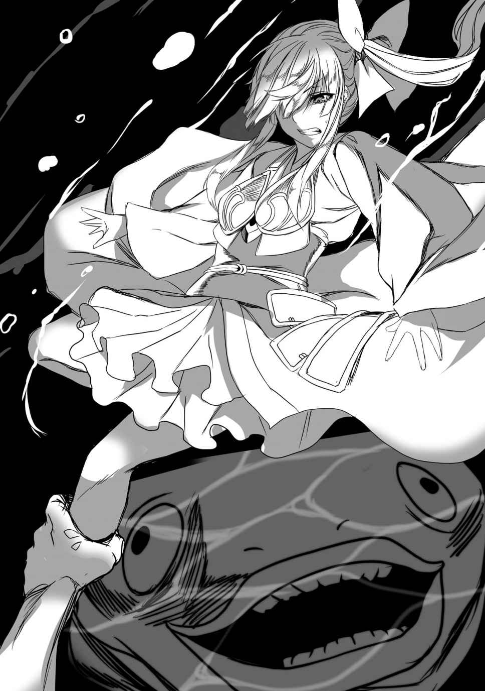

| 最凶魔術師の異常なる逃亡生活2 最凶魔術師の異常なる逃亡生活シリーズ (ビギニングノベルズ) | |
| ピンク色伯爵 | |
| 株式会社キルタイムコミュニケーション (2016) | |

※本作品の全部あるいは一部を無断で複製・転載・配信・送信したり、ホームページ上に転載することを禁止します。本作品の内容を無断で改変、改ざん等行うことも禁止します。また、有償・無償にかかわらず本作品を第三者に譲渡することはできません。
※本作品は電子書籍配信用に再編集しております。
目次
プロローグ
広い地下空洞には青い光が満ちている。
光は茶色い岩肌のいたるところに群生している苔によるものだ。確か光苔と言ったか。冒険者ギルドで聞いた話によると不死者の迷宮ではそう珍しいものではないらしい。
光は空洞の細部までは届かない。
概 ね床が平坦なこの部屋は、時折大岩や尖った岩のでっぱっていて視界を遮る作りになっている。青い光が十分な光度を持っていないせいもあってハイエルフの視力をもってしても全容を把握することは難しい。
しかし、音の反響の仕方からしてだいたい五十メートル四方の広さだとシルウィは思った。
「シルウィ姉」
「なに、リリナ？」
隣をひたひたと音を殺して進む和装の少女に顔を向ける。
長い黒髪が青白い顔を半分隠している。リリナは少し前かがみになってファルシオンの柄 に両手を当てていた。いつでも抜刀できるようにと構えを取っているのだ。
「......いるわ。一番奥の祭壇に」
リリナは悪魔という暗黒の種族だ。その両目はどんな暗闇も見通す。シルウィには見えないところまで彼女はこの地下空洞の構造を把握しているのだろう。
「祭壇の奥、玉座がある。そこに誰かが座っている」
「────」
シルウィはごくりと唾を呑み込んだ。下段に構えている白銀の可変武器──アイオンを握る手に力を込めた。この時シルウィは初めて自分の金色の髪が邪魔だと思った。闇の中でもきらきら輝いているようで妙に気が散る。おまけにこの金色のせいで敵から見つかってしまうのではないかと的外れな不安を抱いてしまう。
髪のせいで見つかるわけがない。
目立ちやすいとか目立ちにくいとかそういう問題ではないだろうから。
おそらくこの空間に入った瞬間に、玉座に座るモノはシルウィの全身を詳細に確認することができている。少し日焼けした小麦色の肌、エルフの伝統的な緑色の狩り衣装、ミニスカートの下からすらりと伸びる健康的な足のすべてをだ。
ハイエルフの勘が告げている。
敵はシルウィとリリナを見て舌なめずりしていると。
不死者は質のよい生者の肉を常に求めるものなのだ。
「空気がピリピリしてるね」
「シルウィ姉」
「うん。──来る」
シルウィがそう言った瞬間、空間が一気に明るくなった。
部屋の周囲に設置されていた松明 が一気に炎を灯したのだ。
光苔の青色よりもはるかに強い光は、果たしてこの岩の部屋がシルウィの予想通り五十メートル四方であることを明らかにしてくれた。
そして二人が立っているのは入り口付近。
リリナの言っていた玉座は──部屋の最奥にあった。
王が座るための椅子と言うには粗末な見た目をしている。地面の岩と同じこげ茶色の三メートルくらいの椅子。
そこに一つの影があった。
人 形 だ。しかし『ヒト』ではない。
掠れたうめき声が上がり、すぐにそれは低く囁くような呪文の詠唱に変わる。
果たして玉座から立ち上がったのは、薄汚れた騎士鎧を着た大柄なアンデッドだった。落ちくぼんだ両目には光がなく、顔は屍蝋化してしまっている。右手には剣と言うにはあまりにも無骨すぎる鉄塊を携えていた。おそらくもとは身の丈ほどもある大剣──人を相手にするというより獣の首を一撃で刈り取ることを目的とした武器だ。
アンデッドの騎士は詠唱しながら鉄塊を指で撫でていく。すると風化した剣身が白く輝き始めた。あれで切れ味がどうのというのは関係なくなったようだ。
シルウィは既にアンデッドの騎士に魔力を向けていた。
発動させたのは対象を直接炎熱で焼き尽くす魔術だ。通常の戦士相手なら敵の魔術抵抗に邪魔されて効果が薄いが、アンデッドは抵抗力が極端に低いから簡単に炎上させられる。戦闘が始まる前に終わらせることができるのだ。
ハイエルフの膨大な魔力は簡単に大柄な騎士一人を丸呑みするほどの炎を作り出した。鈍 色 の甲冑が強烈なオレンジ色の光に包まれる。
「............！」
アンデッド騎士は欠けた歯の並ぶ口をがぱりと開けてよろめいた。シルウィの身の丈ほどもある剣がブンブンと出 鱈 目 に振り回される。
人ならば断末魔の叫びでも上げている最中だろう。戦闘は終わった──そう考えてシルウィは右手を下ろした。同じように前衛のリリナもファルシオンを構える手を緩めていた。
だがそれも一瞬。次の瞬間、二人は驚きに目を見開いて左右に跳び退 った。軽く跳んだという程度ではない。地面に体をぶつける勢いでのなりふり構わない緊急回避である。
「なっ──」
岩の地面の上で受け身を取ったリリナの息を呑む声。シルウィは器用に受け身を取って膝立ちになると同時にアイオンを構えていた。
二人が先ほどまで立っていた場所には白い煙を鎧の隙間から出しているアンデッドの騎士の姿が。鉄のだんびらを振り下ろし、岩の床から引き抜くところだった。
炎が効いていない。
シルウィは矢による牽制を行いながら背後に跳んだ。
「シルウィ姉！」
「うん。たぶんこいつの鎧だ」
騎士の周囲をじりじりと回りながら答える。ついでに弓形態のアイオンの機巧を組み替え双剣形態へ移行させる。ガキ、ガキンと高い音と共にアイオンは二つに分かれた。
「────」
アンデッドの騎士は無言でシルウィのほうへ顔を向ける。一方で大剣の切っ先はリリナを向いている。むやみやたらと攻めてくるのではなく、こちらの様子を窺っているらしい。なるほど、これは普通のアンデッドとは違う。
冒険者ギルドから指名手配された不死者の迷宮に住む危険種というだけはある。
シルウィの放った矢は鎧の隙間に突き立っているがこれも効いている様子はない。アンデッドには血も痛みもないから、なんの魔力付与もされていない普通の矢が刺さったところで動きに支障を来さないのだ。
──火葬の意味を込めた魔弾を撃てれば......！
リリナと挟撃する形で騎士の周囲を回りながらシルウィは歯噛みする。
体内に直接魔力を送り込むことができれば、あるいは彼の着ている鎧の対魔力も発現しないかもしれない。里で年配の狩人たちがやっていたのを見るに、土から錬成した矢に『火葬』の意味を込めた魔法言語を刻みこめば魔弾になるのだろうが、今のシルウィは魔法言語をきちんとマスターできていない。
こうなったら物理的に敵の鎧を破壊するしかない──シルウィはこめかみに汗を滲ませながらそう決意する。
アンデッドの騎士は鉄塊を肩に担いでこちらを悠然と見下ろしている。
アレと今から近接で戦うのだ。
「シルウィ姉、じわじわ削っていきましょう」
「ん......、それしかないよね」
「まず私からいくわ」
言いながらリリナは身を低く構えた。そして間髪容れずに地面を蹴り、一直線にアンデッド騎士に向かって飛び込んでいく。下段からファルシオンの切り上げ。盾を持っていないせいでがら空きの左上体を狙っているようだ。
リリナは鋭くブレスすると同時に騎士の首筋をなごうとする。
しかし剣が弧を描く途中で止まった。リリナがはっと目を見開き後ろに跳んだのだ。少し遅れてカウンターで放たれた白く発光する大剣が異様な音を立てて通過していく。後ろに跳ばずに剣を振り切っていたら死んでいた。
地面にもんどりうって転がり、それでも何とか体を起こそうとするリリナ。そこにアンデッド騎士の流麗な剣捌きが襲いかかる。
大剣の刃を返した騎士は左足右足左足の順番に踏み込みつつ地面に這いつくばっているリリナの脳天目がけて大剣を振り下ろそうとする。シルウィは咄嗟に土魔術で騎士の足元を脆くして岩の地面を踏み抜かせることでこれを阻止。
騎士はバランスを崩しながらも頭を潰そうと剣を追尾させるが、リリナがなりふり構わず一気に距離を取ったため攻撃は失敗に終わった。
代わってシルウィがアンデッド騎士の背後から襲いかかる。
完全な死角からの奇襲だ。
反応できるはずもない。
シルウィは白銀の双剣を重ねて騎士の露出した首筋を狙う。
「────っ」
しかしこれも失敗。
大剣を地面に振り下ろした状態だった騎士は、剣身を支えに自分の体を浮かせ、反動をつけてシルウィの顔面を強打しようとしたのだ。エルフの近未来予知でこの光景を視たシルウィは、寸前で踏みとどまり背後へ跳んだ。遅れて騎士の古びた軍靴がシュッと鋭い音を立ててシルウィの鼻先を掠めていった。
「......っ。ま、マジ......？」
「シルウィ姉！」
驚愕し怯むシルウィに騎士は剣を引き抜いて追撃する。振り下ろしは横に転がって避けたが、続けて剣先がガリガリとすさまじい音を立てて岩の地面を滑ってきた。地面に剣を引っかけながらの必殺の切り上げ。岩の地面から火花が散り、音と光に反応が一瞬遅れる。
──ダメ......！ 死ぬ......！
そう思ってシルウィがぎゅっと目を瞑ったとき、不意にアンデッド騎士の側面から銀色の弾丸がいくつも飛来した。
「────！」
騎士が口を開ける。低いうめき声。生きているころなら絶叫の一つでも上げていたかもしれない。よろめく騎士を見てはっと我に返ったシルウィは転がって十メートル以上の間合いを離した。十メートルあればどうにかなる。再び膠着 状態に戻せる。
双剣を構えつつ身を起こしたシルウィは、眼前によろめくアンデッド騎士を見据えながら息を吐いた。
「ちょっとアール！ こいつ強すぎない？」
リリナが半泣きの顔で闇に向かってそう叫んだ。
「────」
「無視しないでよ、馬鹿アール！」
「リリナ、師匠に向かって馬鹿はないよ。危なくなったらきちんと助けてくれるんだから」
「で、でも、一歩間違えたら死んでいたわ！」
「いいから、もう一回集中して」
言いつつ裂けて血が出た頬を手の甲で拭う。
大剣を黒い鎧に背負って獣のように身を屈めているアンデッド騎士を慎重に観察する。
体の大きさは二メートル半くらい。アールよりも背が高くてかなり威圧感がある。剣も長大なのだが、彼の図体のせいで小さく見えるくらいだ。
動きは緩急にメリハリがついている。
全然動かないと思えばいきなりリリナやシルウィと同じくらいの速さで動いてくる。そのせいでタイミングを計りにくく、気を抜いていると一瞬で真っ二つにされそうになるのだ。
──体が大きいこともあって攻撃を避けるのが難しい。
近接はやはり自殺行為だ。
ならば遠距離から魔術で削っていくか。
でもあの鎧を着ている限りまともな魔術は通らない。
「......どうやって倒せばいいのかな？」
「私の魔術じゃたぶんキャンセルされちゃうし、無闇に近寄れないからほぼ攻撃手段がない......」
リリナが歯噛みしながらそう言っている。
とすれば──シルウィは目を細める。
「やっぱり足元を崩すしかないか。で、こいつがバランスを崩した瞬間にリリナの秘剣で倒す。どうかな？」
「こいつ......ファルシオンで斬ったら死ぬの？」
「どうだろ？ 首や腕を切断できれば物理的に動けなくなりそうではあるけど」
「──分かったわ。やります。つべこべ言わずにやってやるわ」
「やけくそだね......」
「合図お願いね、シルウィ姉」
「うん」
アンデッド騎士は動かない。
まさかシルウィとリリナの会話を理解しているわけはないだろうから作戦内容は伝わっていないだろうが──、しかし不気味である。
シルウィとリリナは再びじりじりと彼の周囲を移動しながらタイミングを計った。
空洞に松明の燃える音だけが響く。
暗闇の中でアンデッド騎士の落ちくぼんだ双眸がらんらんと赤く輝いていた。エルフの森の奥底に潜むという獰猛な魔獣たちはこうして赤い光を目にちらつかせて、寄ってきた小動物を狩って食べるという。もしかしたら自分たちもこの騎士に誘われているのではないかとシルウィは思った。でもこいつを倒すには近寄って斬るしかないのだ。誘いには真正面から乗るしかない。
「三、二──」
ジャリとシルウィのブーツが音を立てた。リリナのファルシオンが武者震いするようにィィィィンと高い音を立てた。
「一、今！」
掛け声と同時に魔力を発動させる。アンデッド騎士の足元を丸ごと陥没させるような大規模な土魔術である。シルウィの膨大な魔力は騎士の鎧が持つ魔術抵抗を貫通し、いとも簡単に岩の床に罅 を入れた。バキリと騎士の軍靴の下から嫌な音が響き、巨体が一段下に沈みこむ。
騎士の周囲は、角ばった岩がそこかしこから顔を出す足場の悪い地面に早変わり。
そこをリリナは器用に爪先で飛んで肉薄していく。
「............！」
騎士はバランスを崩しながらも強靭な足腰で踏みとどまり、一気に飛び込んでくるリリナを正確に見据えた。剣はリリナのほうが先に届くだろうが敵はアンデッド。一撃では死なずに、返す刃で叩きつぶされてしまうだろう。
「────っ！」
「リリナ！」
リリナはもう止まれない──シルウィは咄嗟に弓で援護するべく矢筒から三本引き抜いた。
──間に合って！
エルフの奥義、速射が間に合わなければリリナの体に大剣が直撃コースだ。
アールが助けてくれるのは分かっているが、それでもシルウィは腋の下からじっとりと汗がにじみ出るのを感じた。
奥の闇からアールの魔力が燃え上がる。銀色の閃光がシルウィの目の端に煌めいた。次の刹那にアンデッド騎士目がけて発射されることだろう。
──リリナは助かるけど、私たちにはこの程度の相手もまだ倒せないってことか......。
シルウィは矢を放ちながら呆然とそう考えた。
自分たちの未熟さは知っていたつもりだったが、それにしても不死者の迷宮の浅層にいる程度の危険種アンデッドも倒せないなんて。
全然ダメ。
本当にダメダメだ。
これでは二人でヒュドラを倒すなんて十年かかっても無理。
──こんなので大丈夫なのかな......。
無力感からくる気だるさが全身に満ちる。
シルウィは思わずその場にへたり込みこけて、ふとこの空間の入り口に無数の人の気配を感じて振り返った。
そして。
「下がってください！」
不意にそんな凛とした声が響いた。
遅れて、アールの水銀弾を身に受けてよろめいているアンデッド騎士に魔法言語が刻みこまれた矢が大量に降りそそいだ。
「────」
アンデッド騎士が声にならない絶叫を上げる。いくら魔法の鎧を纏っているとはいえ、魔弾を二十も三十も頭上から降らされて耐えられるはずもない。着弾した魔弾はすべて爆裂していく。大火力の焼却に騎士はなすすべもなく蹂躙され、火だるまになった。
革の軍靴が岩を叩く音が無数に響き渡り、あっという間にシルウィの前に軍服を着た女性たちが躍り出た。
帝国軍の一般兵のつけている甲冑ではない。
赤と黒を基調としたどこかフェミニンな革鎧だ。
しかも見る限りいるのは全部女性。
「大丈夫でございますか？」
傍にやってきた背の高い女性兵士がシルウィの顔を覗き込んでそう訊いた。ふわりと花のような香りが鼻をくすぐった。エルフの女がよく使う香水の香りである。見れば彼女のシルエットは長い耳に長髪だった。間違いなくエルフだ。顔は──よく見えないが。
「あ、えっと。はい、大丈夫、です」
「隊長、こちらのほうは怪我がないそうです」
「そうですか。それはよかった」
闇の中でエルフの女性に答える声。さっき「下がってください！」と大きな声を出したのはこの『隊長』と呼ばれた女性だろう。
「私も大丈夫です。助けていただきありがとうございます」
人垣の向こうからリリナの悔しそうな声が聞こえてきた。
アンデッド騎士に突貫したのは完全な失策だったことを今更のように後悔しているのだろう。
──それにしても、この人たちすごい手練れだ。
シルウィはアイオンを下段に構えたまま用心深く周囲の人影を見回す。
アールと出会ったばかりの頃なら分からなかっただろうが、ここ数日の気ちがいじみた猛特訓で能力が格段に上がっているのだ。実力が低いうちは高い山を見てもただ「高いなあ」と感じるだけだっただろうが、少し背が高くなった今だからこそ分かる。
体幹のバランス、纏 っている魔力の質と量、そしてそれぞれの顔にらんらんと光る猟犬のような鋭い目。間違いなくここ数日で出会った帝国軍・上級冒険者たちよりもはるかに強い。
たぶん、この人たちなら先ほどのアンデッド騎士など単独で簡単にひねり潰してしまうだろう。
シルウィは知らずアイオンを握る手に力を込めた。
助けてくれたから味方──なのだろうが、すさまじい手練れがたくさん周りにいるというだけで否応なく緊張してしまう。
すぐ傍で『隊長』と喋っているエルフの女性からは焦げたような臭いがぷんと香った。
この女性が先ほどの魔弾を放ったのだ。
シルウィがまだ使えない強力なエルフの奥義を。
「シルウィ姉」
無言で周囲の人影を数えていると、人ごみの向こうからリリナがやってきた。微妙そうな顔をしている。助けられたこと以上に事情聴取など厄介な事態に発展しないか心配しているらしい。
「ねえリリナ、この人たち......」
「帝国軍の人かしら？ それにしてもすごい......」
すごい手練れと言おうとしたのだろう。だけど悪魔の少女は寸前で思いとどまった。実力が分かるということはこちらもそれなりの実力者だと公言するのも同然だからだ。シルウィたちの現在の実力はランクＢの冒険者程度。魔術を絡めてうまく戦えばランクＡ相当に匹敵する。そんな二人組がＦランクで、しかもこんな人 気 のないところで危険種アンデッドと戦闘しているなどなにかおかしいと勘ぐられてしかるべきだ。リリナの判断は正しいと言える。無用な疑いで詰め所に連行されないよう、ここは迷った挙句に危険種と偶発対峙してしまった駆け出し冒険者を装うのが得策である。
二人が黙っているとエルフの女性士官（？）の横をすり抜けて細身の少女騎士が姿を現した。
──銀髪？
肩までの髪だ。
格好は周りと同じ赤と黒の革鎧だと思う。
腰には二本のサーベルを差している。一本は折れてしまったときのための予備だろうか。
「綺麗な人......」
横でリリナがポツリと呟いた。陶酔したような声音だ。美少女であるリリナから見てもこの『隊長』さんは美人だということだろう。
──そう言えば周りの人たちも皆すごい美人のような。
暗いからはっきりとは言い切れないがたぶんそうだ。
そこらの高級娼婦と遜色 ないくらい。それに兵士なのに物腰などから気品のようなものが漂ってきている。
「お二人とも冒険者ですか？」
銀髪の『隊長』さんが尋ねる。
「え、はい。まあ」
「そうです。シルウィ姉と私、迷宮で一儲けしようと思ってここまで来たんですけど、運悪くあんな危ないのと出会っちゃって。おかげで助かりました。貴女たちが来てくれなかったらどうなっていたか分かりません」
どこかで隠れて見ている性魔術師へ向けた言葉だろう。若干のとげとげしさが混じっている。
「そうですか。それは災難でしたね。こんな浅層では本来あのような強敵は出るはずもありませんから。せいぜい腐食スライムか、アンデッド化した冒険者たち程度でしょう」
「そうですね」
シルウィは頷きながらも内心恐れおののいていた。
腐食スライムは剣で切っても死なない相手で、薬品か魔術攻撃でないと倒せない相手だ。しかも体にスライムがかすったら激痛で頭が真っ白になる。初遭遇時はそれで失神した。
アンデッド化した冒険者は同じく切っても死なない敵で、腐肉が付いている場合は打撃でも倒せない凶悪な相手になる。火の魔術で焼くのが一番だが、こちらはスライムと違って素早い。生前の動きをそのまま使ってくるものだから、不死者の迷宮に挑むような手練れの冒険者の強化版と戦っているようなものだ。最初は一体倒すのにリリナと二人で二十分もかかった。今は一人で平均二分くらいで倒せるが、それでも油断は禁物の相手である。
そんな魔獣たちを完全に下に見ている発言。
この凄腕集団の『隊長』なだけある。
銀髪の少女には隙らしい隙がなかった。
シルウィが黙っているとリリナが口を開いた。
「あの、失礼ですが貴女がたは一体何の集団なんですか？」
「私たちはワルキューレ部隊です」
「ワルキューレ部隊？」
シルウィがそう訊き返すと、銀の髪の少女は闇の中でふわりと笑ったような気がした。
「はい。通常の国軍とは少し毛色の異なる──マーガレット皇女殿下直属の近衛兵団と言えば伝わるでしょうか」
「はあ」
マーガレットというのは先日ヒュドラ討伐の式典で壇上で演説した赤髪の美女のことだろう。第二皇女マーガレット・ホワイトドラゴン。皇位にありながら軍事の力も有するという傑物という話だ。
「フランチェスカ隊長」
「分かっています、ローラ。──さてと。私たちは役目を果たしたことですし地上へ戻ります。よければ一緒に戻りませんか？」
「結構です」
リリナが即答する。
「あ、えっと、私たちまだ今日のノルマを達成してないっていうか。もうちょっと稼いでいきたいっていうか」
「そうですか......？ でも大事を取って一旦戻られたほうがよいのでは？」
「お気持ちだけ受け取っておきますわ」
リリナが丁寧に拒絶した。こういうときのリリナはシルウィから見てもとても絡みづらく感じてしまう。人のよさそうな『隊長』さんも少し引いたように曖昧な笑みを浮かべた。
──あれ、この人意外と普通な人？
強い人には変人が多いという謎の法則が出来上がりつつあったがゆえの失礼な驚きである。シルウィは改めて目の前の少女を見つめた。
堂々としているが細い上に背もシルウィよりちょっと低いくらい。
もしかすると歳も近いのではないだろうか。
「本当に大丈夫でございますか？」
シルウィの近くに立っているエルフの魔術師が心配そうな声で尋ねてくる。この人にも穏やかで優しそうな『いい人』の雰囲気があった。
「私たちは大丈夫なので。ほんと、お気持ちだけで」
「そうでございますか......？ しかし、この空間からはなにか嫌な気を感じます。なにか──途方もなく強大で邪悪な存在が潜んでいるような」
「それは本当ですか？」
銀髪の少女が胡 乱 な声を上げた。
「ええ、隊長。先ほど一瞬だけ感じたような気がしただけなのではっきりとは言えませんが」
「皆、すぐに周囲を捜索してください」
間髪容れずに銀髪の少女が指示を飛ばす。
シルウィとリリナが戦々恐々とする中、空洞内の探索が行われていく。
猟犬のような女性士官たちによる捜索だ。アールが見つかってしまったら絶対にややこしいことになるに違いない。
しかし、幸いなことに捜索は空振りに終わった。
シルウィとリリナがここにいる以上、アールは間違いなく近くに潜んでいるはずなのだが、ワルキューレ部隊たちはついに彼を探しだすことはできなかったのである。
「......誰もいませんか」
「私の勘違いだったようでございますね」
「いいえ。私も指摘されて妙な違和感を覚えました。誰かに見られているような不気味な感覚と言いますか......。しかしなにもいないのなら勘違いということなのでしょう。──時間をずいぶん使ってしまいました。速やかに退きあげます」
銀の髪の少女が隊員たちを順々に見回しながらそう宣言する。
彼女は最後にもう一度シルウィとリリナに振り返った。
「それでは我々は地上に戻ります。貴女がたも冒険者の仕事が大切なのは分かりますがほどほどにして地上にお戻りください」
「ど、どうもー」
「丁寧にありがとうございます」
「では失礼します」
少女はそう言って軽く頭を下げると踵 を返した。他の隊員たちも次々にシルウィたちに挨拶をして『隊長』さんのあとに続いていく。
無数の軍靴の音が遠くなり、やがてまったく聞こえなくなるとシルウィとリリナは大きく息を吐いて脱力した。
「すごい集団だったねー」
「ええ。帝国の正規軍ってあんなにたくさんの手練れがいるものなのね。威圧感がすごいというか。って、うわあ。私めちゃくちゃ手汗かいちゃっているわ。やだもう......」
ポケットから布きれを取り出して手を拭う義妹を尻目に、シルウィは恐る恐るといったふうに闇に向かって声をかけた。
「アール君、いる？」
「うむ、ここにいるぞ」
間髪容れずに張りのあるテノールが返ってきた。
シルウィのちょうど斜め前。先ほどまで銀髪の『隊長』さんやエルフの女性士官が立っていた空間からである。しかし身長百九十センチ以上あるはずの大男の姿はどこにも見当たらない。
「え、どこ？」
「さっきこの辺から声がしたわよね。......岩の地面に罅 が入っている......？」
「うむ、今出るぞ」
性魔術師のそんな声のあと、岩にできた罅の間からにょーんと黒い軟体生物っぽいなにかが飛び出してきた。うねうねと蠢 く触手のようなそれの先端には、ライトブルーの瞳に折れた鉤鼻というシルウィとリリナにはなじみの深い顔が付いていた。
「ククク、どうだ？ 東方にある暗殺教団に伝わる秘技でな。こうして体を触手みたくうねうねのうにょうにょにして細い隙間などに潜り込むのだ。すごいだろう？ 僕が自慢できる数少ない特技の一つと言っても過言ではな──」
「きゃあああああああああああああああっ!? きもっ！ きもっ！ アール君キモすぎぃッ！ なっ、なにがどうしてそんな芋虫に顔が付いたみたいな気持ち悪いことになっちゃってるの!? きもいから早くもとの姿に戻ってよー！」
「ふぅん？ 確かに見た目はアレだけれどなかなか面白い技ね」
「え、リリナ？」
「何かしらシルウィ姉？」
真顔で聞き返してくる義妹にシルウィは言葉を失った。
芋虫人面アールを気持ち悪いと感じる自分の感性がおかしいのかと一瞬不安になったが、よく考えなくても自分の感性は間違いなく正しかった。キモい、キモすぎる。これでは小さな子供は一生もののトラウマになってしまうだろう。それくらい見てはいけない冒 涜 的姿だった。
「うむ。よろしい。じゃあ戻る」
若干傷ついた声音でそう言うとアールは触手のような形態からいつもの大男の姿へと戻った。シルウィが首を上げて仰ぎ見るほどの偉丈夫である。これで本人は魔術師を名乗っているのだからやっぱりおかしい。
「こんなに近くに潜んでいたなんてね」
リリナが顕現したアールと岩にできた罅とを見比べてそう言った。
「捜索が始まった時はさすがの僕もちょっとびびったぞ。しかし見つからなくてよかったな。やはり僕は天才だったということだ」
「でももうちょっと離れた位置に隠れてるべきだったんじゃない？ なにもそんな至近距離に隠れなくてもさ......。って、あ！ まさかアール君、さっきの女の子たちのパンツ見て鼻の下伸ばしてたんじゃないよね!? 」
「────。そんなことはない」
「......アール？」
「アール君？」
「すまぬ。出来心だったのだ。ちなみに隊長と呼ばれていた女は白、エルフはピンクのエロいレースだった。個人的にはぷりぷりの張りのある尻をしていた隊長殿のほうが好みだな。エルフもむちむちで素晴らしかったがやはり若いほうが僕は好きだ」
「アール君サイテー」
「今夜のご飯に嫌いな香草たくさん使ってあげるわ。覚悟しときなさい変態」
「口は禍 のもとであったか......。しかしリリナはちょろいからちゃんと謝れば甘やかしてくれると僕は信じているぞ」
「誰がちょろいのよ。ぶっ飛ばすわよ！」
「冗談はここまでにして今日の修業のおさらいといこうか」
「あ、今話をすり替えたね」
「していない。修業のおさらいをする！」
「その前にシルウィ姉と私がお説教しますからそこに正座しなさい」
「......ちぃっ。くそ、これだから勘のいいガキは嫌いなのだ！」
「この人ほんとサイテーすぎるよ！」
地下空洞に少女二人のお説教する声が延々と響き渡る。時折情けない声音で返答する性魔術師といい、空間にはもはや先ほどまでの戦闘の残り香すらない。
この日アールが解放されたのは、それから一時間後のことだった。
方針と解説
第二皇女マーガレット・ホワイトドラゴンとディークヌート・スレイマン将軍によるヒュドラ討伐の出陣式は既に二週間以上も前のことになりつつあった。
今後の方針が三つに分かれてしまった一行は、その後話し合いによって、一つ目の案と二つ目の案の折衷案を採ることになった。
すなわち、軍の動向を探りながら、ヒュドラと戦えるよう修業をするという方針だ。
なんとも中途半端な話で、そんな片手間で軍の動向など追えるはずもなく、結局成果らしい成果は修業方面のみ。力を蓄えるのはいいことだが、こうしているうちに軍が迷宮の最奥に辿りついてヒュドラを討伐してしまわないかシルウィとリリナは毎晩心配そうにしている。
ヒュドラに関する情報集めも進行具合は芳しくない。
というより不確かな情報しかない。
首を全部落とせば死ぬかも──とか誰が見ても最初に思いつきそうなことしか情報が入ってこないのだ。情報だってタダではないのに酷い話である。これでは銀を無駄に使っただけだ。それでもヒュドラに関する情報がほぼゼロの状態で挑むわけにはいかないから修業の合間の時間を使っては酒場に情報収集に行かざるをえない。そうしているうちに、ここ最近いよいよ金欠になってきていた。
このままでは宿を取るどころか飯を食うこともできない──この喫 緊 の課題に対して一行が出した案は冒険者ギルドのこまごまとした依頼を修業のついでにこなしていくというものだった。
例えばスケルトンの喉ぼとけ集め。
大半の冒険者がヒュドラがあけた大穴近辺にベースキャンプを設営して活動の拠点としているのに対して、アールたちはいまだに不死者の迷宮の旧入り口近辺で行動している。人がいないこともあって、『旧入り口近辺のアンデッドを倒してくれ』などという仕事は同業者たちと競合にならず、簡単に受注することができるのだ。一日やって貰える金は三人の飯代一日分と少しの余剰分くらい。帝都のオンボロ宿舎の料金も考えると完全に赤字の状態だった。
しかしやらないよりはマシである。
シルウィとリリナは来る日も来る日も不死者の迷宮浅層にはびこるアンデッドや腐食スライム相手に剣を振るっていた。
危険種アンデッドと死闘をして、次の日はスケルトン五十体にスライム三十体。軽装のシルウィとリリナには辛い相手を朝から晩まで打ち倒す作業。
傷つけばアールによって即座に再生させられ、むしろこちらのほうがゾンビの類なのではないかというくらいに突撃を繰り返させられる。
訓練というより実戦。モノホンの死闘。
アールと出会ったばかりの頃二人にあったほんわかした空気は既に霧散していた。先日出会った女性の軍人集団──ワルキューレ部隊の面 子 とほとんど変わらない面構えにシルウィもリリナもなり始めていたのだ。
※ ※
地下空洞での死闘から三日後。
こんなのは気ちがいじみている──とリリナは無我の境地でぼんやりとそう考えていた。
普通は死の危険がない状態で木刀かなにかを振って剣の稽古をするというのが戦闘訓練というものだろう。魔獣相手に殺し合いをすることは実戦と呼ぶべきだ。
だけどアールはこれを訓練だと言う。
訓練だと言って本気の殺し合いをさせる。
正気じゃない。
頭がおかしい。
しかしこの常軌を逸した修練のおかげで、リリナたちはたった三日で飛躍的に戦闘能力を向上させていた。
何より魔術を織り交ぜて戦えることが非常に大きい。
当たり前だが、攻撃力が段違いに上がっている。
もし魔術がなかったら、普通のＣ級冒険者パーティと同じく、アンデッド一体相手に多大な労力を割くことになっていただろう。
火や氷、岩を使えないと腕力で敵を破壊するしかないのだから。
選択肢が増えたおかげで敵の処理が簡単になった。
加えて治癒魔術や解毒魔術を修得できてきたおかげで敵の攻撃もそこまで怖くなくなってきていた。
気付けば、その日夕方までにリリナとシルウィが倒した魔獣の数は八十を数えていた。
「よし、今日の訓練はここまでだ」
最後の巨大な獣人のアンデッドを打ち倒したところでアールの手が鳴る。
同時に二人は構えを解き、荒い息を落ち着けながら礼をした。
「ありがとうございました、アール君」
「ありがとうございました、アール」
「お前たちは礼儀正しいな。別に頭など下げなくてもいいのだが」
「そういうわけにもいかないよ。アール君は私たちの先生なんだし」
シルウィはそう言うと傍らに放置してあったアンデッドの喉ぼとけの骨が入った袋を取り上げる。訓練が終わったあとだと言うのに、早速冒険者ギルドに今日の分のクエストの納品をしにいくらしい。
アールは手を腰に当てた。
「よければ僕が運ぶぞ」
「いや、いいよ。今日はちょっと深めに踏み入って軍の野営地の奥をのぞき見してくるから、軍の人に見つかったときの言い訳に『冒険者ギルドの納品クエストの最中』って言うために私が持っていく」
シルウィの言葉にアールは眉をひそめた。
「そんなにうまく騙せるものなのか？」
「私の他にも軍の偵察をしている人がたくさんいて、皆納品クエストの最中を装っているんだ。人数が多すぎるから、軍も分かっていながら対処しきれないんだと思う」
「ふむ......。いや、それでもやはり僕が骨を持っていよう。偵察するにしても負担は少ないほうがいい」
「いいけど、本当にただの荷物持ちになっちゃうよ」
「他の冒険者集団の動向も知っておきたい。お前が偵察している間に周りの連中の話をそれとなく聞き回ってみるつもりだ」
「ん。分かった。じゃあ、私とアール君で偵察に行くってことで」
シルウィが少し嬉しそうにそう言った。
「私はお留守番ってわけね」
リリナは複雑な気分でポツリとそう言った。
シルウィが苦笑する。
「ヒュドラの情報が出ない以上、貴重な銀を無駄遣いできないからねー」
「......そうね。私ってば銀を使うだけ使って全然まともな情報取ってこられていないし」
いつもはシルウィがギルドに報告に行って、リリナがヒュドラの情報集めに行っていたのだ。だけどいよいよ金欠になってきたこともあって、三人の間に「どうせまともな情報は出ないし、もう酒場には行かなくていいんじゃない？」という雰囲気ができ始めていた。
リリナでなくともヒュドラの情報は集まっていなかっただろうが、担当のリリナは結構気にして落ち込んでいるのだった。
「そ、そんなことないよー。ていうかリリナも一緒にギルド行こうよ？ 一人で残るとか寂しいじゃん」
「ううん......。いいの。私自主練しているから。ちょうど今日の訓練でおさらいしときたいことがいくつかあったし」
「おい、リリナ」
「なによ」
地獄の訓練が終わった今一番神経を逆なでする声だ。
リリナは血も涙もなさそうな鬼畜教官に三白眼を向けた。
一方アールは彼女にとても真面目な視線を投げかけた。
「このあと二人きりで話がある。ここに残れ。シルウィ、お前は先に平原に出ていろ」
「え......、うん。いいけど、リリナに変なことしちゃだめだよ？」
「シルウィ、お前は僕をなんだと思っているんだ」
「え、レイプ魔の変態オヤジ」
「え、違......、言われてみればそうかもしれないが、これからするのは真面目な話だ。いいから先に上へ戻っていろ」
「なんだよー。私に内緒でなに話すつもりなんだよー」
「────」
黙って答えないアールにシルウィは肩を竦める。
「はいはい、分かりました。それじゃ先に行って待ってるから。リリナにエッチなことしたら承知しないからね」
シルウィはそれだけ言うと一階層の入り口に向かって軽い足取りで歩きだした。さすが深い森の中で生活していたハイエルフと言うべきか、訓練の疲れはもう回復したらしい。余裕の表情である。
エルフの少女が闇の向こうに消えていったのを確認すると、アールは改めてリリナに向き直った。
「リリナ」
「なに？ また昨日みたいにシルウィ姉に内緒でフェラチオさせる気？ 言っとくけど答えはノーよ！」
鼻の穴を広げてキレるリリナにアールは首を振った。
「いや、用件は別にある。──リリナ、お前がヴァレフォルに攫われた理由についてだ」
その言葉を聞いてリリナはすぐさま顔色を変えた。
数週間前、彼女は名指しでヴァレフォルの言う『神』に指名され、この不死者の迷宮の十五階層に引きずり込まれた。アールが助けに来てくれなければ、今頃彼女は魔族連合に連れ去られていたかもしれないのだ。
終わったことはともかく、彼女の中で数々の疑問が渦巻いていた。
何故自分が名指しで攫われることになったのか。
ヴァレフォルとは結局何者だったのか。
そして彼の言う『神』とはいかなる存在なのか。
「アールは、私の疑問に対する回答を持っているの？」
「いや、おそらくすべては答えられまい。しかし断片的には答えられる。お前も巻き込まれた以上知らせておく必要がある。──『世界竜 』についてだ」
「『世界竜』──。待って。確か上の神殿にある聖体の名前も『白の世界竜』だったわよね？」
「そうだ。ヴァレフォルが信仰する神とはその青色の個体──『青の世界竜』だ。彼は『青の世界竜』を信奉する青龍卿 だ」
「青龍卿──ヴァレフォルさんも竜を単独討伐したっていうの？」
「そうだ。戦闘時にあいつが竜の姿になっただろう？ あれは奴が封じた竜だ。神は竜を倒しうる人物の前に現れて自分の信徒にする。お前は『青の世界竜』に見初められたのさ」
「じゃ、じゃあ──その理屈でいくと、アールも『黒の世界竜』に見初められて、竜を体の中に封じたことになると思うけれど」
アールは一つ頷いた。
「その通りだ」
「アールは竜になれるの!? 」
「────。いや、なれない。僕は黒龍卿 でありながら封龍解放を行えないのだ。理由は分からない」
「そう......」
「すまんな。ドラゴンになれなくて」
リリナは首を振った。
「いいえ、別にいいわよ。特に見たいわけじゃなかったし。──それより、アールの話が本当だとすると、私、『青の世界竜』のお誘いを断ってしまったの。せっかくの龍卿 になれるチャンスだったのに、棒に振ってしまったわ」
「棒に振って正解だ。一度支配下に入ればアレには逆らえない。ヴァレフォルを見ただろう？ あれは狂信者の類さ」
「アールも狂信者なの？」
「それなりには」
「ふーん？」
リリナは目を細めた。
「私を殺さなかったのに？」
予想もしない一言にアールはわずかに目を見開く。
「なんだと？」
「これは勘だけど──、ヴァレフォルさんと同じく、アールにもなにか啓示があったんじゃないの？ だから私の行動を監視していたんじゃない？」
「────」
リリナは興味深そうにアールの瞳を覗き込んだ。
「その表情を見るに当たっていたようね。さしずめ、夜エッチする前は本気で私を殺す気だったんでしょう？」
「......隠す意味はないか。そうだ。最初僕はお前を殺す気でいた。──これを見るがいい。読めるか？」
アールはワイシャツのボタンを外して鍛え上げられた腹筋を見せつけた。
その浅黒い皮膚に、ペンキが剥がれるようにして乾いた傷跡が姿を現す。
魔 法 言 語 で綴られたそれを、リリナは眉根を寄せて判読した。
「読めない単語もあるけれど──、意訳するに、私を殺せってこと？」
「そうだ」
リリナは首を傾げた。
「『青の世界竜』の信者と『黒の世界竜』の信者は反目し合っているのかしら」
「然 り。色が違えば殺し合う仲と考えてよい。同じ色でも可能性はなくはないが──、基本、神の啓示によって彼らは他色の龍卿を屠 ることがある」
「私はそのよく分からない諍 いに巻き込まれかけたということね」
「そうだ。そしてこれからも十分に注意しろ。夢の中で語りかけてくる謎の存在がいれば迂 闊 に信用してはならない。夢の中だから難しいだろうが、お前なら抗える」
「分かったわ、肝に銘じておく。このことはシルウィ姉には当然内緒なのよね？」
「ああ、シルウィが話を聞いて一時的にでも内容を理解すれば竜が夢に現れる可能性がある。逆にそうしなければ竜は絶対に現れない」
アールの言葉にリリナはまた眉根を寄せた。
「え......？ じゃあ、私は以前に『世界竜』の話をどこかで聞いているということになるの？」
「そうなるな。お前はどこかで冒涜的知識を得ているはずだ。お前も知らないどこかで、誰かから」
「そしてそのことを私は忘れている、か......。ぞっとしない話ね」
リリナはにわかに考え込んだ。
とすると、『青の世界竜』はリリナを魔族連合へ連れ帰って、竜殺しをさせようとしていたというのが自然な解釈になるだろう。
ヒュドラを討伐させるなら国に連れ帰る必要はないわけだから。
──魔族連合にはまた別の竜が暴れているということかしら......？
もちろん考えすぎかもしれない。
いずれにせよ、行ったこともない土地にまで出張って竜狩りをする余裕は今はない。
目下、帝国の大地を脅かすヒュドラを何とかしなければならないのだから。
「『世界竜』に関して、確実に言えるのは以上だ」
アールはワイシャツのボタンを留めなおしながらそう締めくくる。
リリナは頷いた。
「うん、話は確かに聞かせてもらったわ。教えてくれてありがと」
「お前も部外者ではないのだから当然だ」
「あの、一つ聞きたいのだけれど──、アールが私を殺さなかったのは何故？」
アールはきょとんとしたあと、おもむろに答えた。
「お前のようないい女を殺すくらいなら、死んだほうがマシだと思ったからだ」
「なによ、それ。カッコつけているつもりなの？」
「お前のような一般人では、僕の考えは到底理解できないだろう。しかしこれは本心だ。僕は自分が認めた女を殺す気にはなれない。男は殺すかもしれないが」
「......本気で言っているようね。本当にどうしようもない人だわ......」
リリナは呆れたように息を吐いた。それからにっこりと可憐な笑みを浮かべる。
彼女は続けた。
「まあ、いいわ。殺さないでくれてありがとね。──お礼にって言うと変な話だけど、アールも『世界竜』のことでなにか悩み事があったら遠慮なく私に言って。貴方は一人でも完璧だけれど、もしかしたら私でもなにかの役に立てるかもしれないから」
アールは口元を歪めた。
「ふっ、十五の娘にそのように言われるとは、僕もおかしな星の巡り合わせに巻き込まれたものだ。──あい分かった。そのときは遠慮なく頼らせてもらうとしよう」
リリナは後ろ手に手を組み、ほんのりと頬を染めて消え入りそうな声で言葉を紡ぐ。
「その......、え、エッチなことも、ちょっとくらいはしていいから。あ、貴方みたいな性獣を市 井 に放つと危険だから、仕方ないから、気が向いたら、相手してあげる、かも......」
「ほう......」
自分の首を絞めたも同然の言葉を放った少女に、アールは肉食獣のような笑みを浮かべる。
リリナは気付かずに墓穴を掘り続ける。
「ちょ、ちょっとだけ！ ちょっとだけだからね！ 昨日みたいに口でするくらいが限度だから！ あんまり、エッチすぎるのは、だめなんだからね」
「承知した。セックスしたくなったらお前の体でエロいことをするとしよう。クク」
「んちゅ！！！？？？」
アールが素早くリリナの唇にキスをする。そのまま舌を口内に侵入させてぐちょぐちょにかきまわした。
リリナがレイプ目になったところでアールは彼女から顔を離す。
リリナは惚けたような表情で口を半開きにし、小さな舌を控え目に露出させていた。彼女の舌からは銀の糸がつぅっとアールの口まで橋を作っている。
「クク、今夜......、覚悟しておけよ」
「ぁ......ぅ......。へ、へんたぁい......。よばい、なんて、しかけたら、ゆるさないからぁ」
「呂 律 が回っていないぞ」
「う、うっさい、ばか！」
アールは苦笑しながらリリナの艶やかな黒髪を汚い手で撫でまわす。
「それと、お前の腰に差している魔剣──『紅朧 』だが」
リリナは臭い唾液をハンカチで拭いながら真面目に返す。
「ごほん。ええ......、なるべく使わないようにするわ。──私の修業のためにもね」
「それでいい。それに、現状その魔剣はお前自身と比較して強すぎる武器だ。身に過ぎた武器は思わぬ結果を引き起こすことがある。これも肝に銘じておくがいい」
「え？ ええ......」
「では僕はシルウィと冒険者ギルドに行ってくる」
アールはそれだけ言うと、踵を返して入り口へ向かって歩いていく。リリナは少し首を傾げたあと、腰のファルシオンを抜いて自主練を開始するのだった。
勧誘と決闘
アールは地上へ出ると神殿横の平原でシルウィと合流し、そこから軍の野営地へと向かった。
神殿からかなり離れた地点──ヒュドラが出てきた縦穴の近辺に野営地はある。そこに迷宮攻略本部も置かれているのだ。
これだけでもいかに地下迷宮が広大かが分かる。
帝都から十キロ以上も離れているにもかかわらず、迷宮はさらに平原の向こうまで広がっているようなのである。
「元々は、ずっと昔──ドワーフが魔族連合側についてドヴェルグと呼ばれる以前に、ドワーフ族が造った遺跡だったらしいね」
並んで歩きながらシルウィがそんなことを言った。
「この不死者の迷宮が、か？」
「そ。偵察している途中に他の冒険者の人から聞いた話なんだけど、そのあとに地上に神殿が造られて、さらにあとになってアンデッド系の魔獣が出るようになったらしいよ」
「なんとも迷惑な話だ。ドヴェルグどもは何を考えて地下に遺跡を造ったのやら」
「帝都の近くに造ってるんだから皇帝陛下の命令に従っただけなんじゃない？」
「それはそうか。勝手に造れるはずもないからな。だとしたら皇帝の目的が気になるが──」
「あとで造られた神殿は地下遺跡の代わりって言われているらしいよ。それが本当なら祭 祀 目的だろうね」
「なるほどな」
二人は野営地周辺のエリアへと入っていく。
アールの目には遠くに軍の白い幕舎が見えた。その数からして動員されている人数は百名少しか。おそらくヒュドラ討伐のための選 り抜きの兵たちだろう。
帝都が近くにあるのにこんなところで野営しなければならないことには同情を禁じ得ない。
素早い行動を取るためとは言え、兵たちはきっとげんなりしているに違いない。
と思ったが意外にも士気は高いらしい。
国を愛する職業軍人たちの中でも、さらにエリート意識の高い兵たちだからだろうか。
傭兵団がよくやっている防柵に洗濯物を干すようなことはもちろん、風紀が乱れている軍団特有の弛緩した空気が伝わってこない。
見張りの兵たちもきびきびとした雰囲気で、軍の窓口に用のある冒険者たちを中へ誘導していた。
アールとシルウィはそんな冒険者たちに紛れて軍の幕舎の周囲を行き来する。
左右前後には同じように野営地に鋭い視線を向ける冒険者たちがいた。彼らも偵察に来ているらしい。
「中には入れないのか？」
「入れるかもしれないけど、嘘は見抜かれるよ。で、嘘バレしたら尋問室行きだね」
「僕は身元がアレだから勾留されるわけにはいかない......。中の様子を直接見に行くのは無理か」
白龍帝国から見て敵国である黒龍王国の元黒龍卿 である。
捕まえてなにもなしに「どうぞお帰りください」ということにはならないだろう。
「そうでなくてもずいぶんピリピリしているから迂闊なことはしないほうがいいと思う」
シルウィが目を細めて柵の中を眺めながら言った。
アールは眉根を寄せた。
「軍の連中が殺気立っているということか？」
「どういうわけかは知らないけれどもね」
「ふむ......。しかし、こう遠巻きに見つめているだけではなにも分かるまい。なにかうまい手を考えるべきだろう」
「そうは言っても一日中見張っているわけじゃないから、細かい配置換えとか帝国兵の出入りの状態とか全然分かんないんだよねー」
「いっそのこと僕たちもヒュドラのように穴を掘って野営地の下へ潜るか」
アールは手の上にどろりと水銀を溢れさせた。
「ちょっと面白そうとか思ったけど却下。獣人かエルフの兵がいたら音でバレるよ」
「そうか」
言ってアールは水銀をもとに戻し──、チンポを勃起させた。
かくなる上は適当な帝国の女将校を性奴隷にするしかあるまい。
この前作った媚薬スライムに加え、捕まえたアンデッドの肉から創り出した寄生触手が彼のポケットには小型化されてしまわれている。
寄生触手をケツ穴へ押し込み、膣へチンポをぶち込めば抗える者はいまい。
憐れな犠牲者には寄生触手による脳を侵すような快楽を味わっていただくとしよう。
アールは東方の暗殺集団の暗殺術の一つ──気配遮断を用いつつ、すっと草むらに融けるように屈んだ。そのとき偶然にもシルウィのパンティが見えて、彼は一瞬で考えを改める。
──待て。寄生触手に犠牲者のアナルバージンをくれてやるのはどうなのか。
触手に悶える誇り高き女体もいいが、それよりもロマンを感じるのは寄生すること自体のエロさである。
例えば今、アールは無性にシルウィに寄生触手を寄生させたいが、それを第三者的に傍観するだけでは少し物足りないのではないだろうかと思うのである。
彼は気配遮断を解除して難しい顔で考え込む。
数秒して真理に至った。
──そうか。僕自身が触手になって寄生すればよいのだ。
リリナが知ればドン引きして「貴方ってやっぱり頭おかしいわ！」と言いそうな思いつきだった。もちろん彼は大真面目である。
アールはしばらくの間邪悪な笑みを浮かべてエッチな妄想していたが、草の根をかき分けて近寄ってくる音に我に返った。
数瞬遅れてシルウィも気付いたようだ。
気付かないふりを続けるアールに対して、シルウィは素直に足音の主に振り返った。
「おじさん、私たちになにか用？」
アールも横目で近寄ってきた男を観察した。
鉄の重装甲を纏った戦士。
背中には手斧を持っている。
魔法的な加護がかかっているのか、手斧からはなにか神聖な力を感じる。少なくとも尋常な切れ味の斧ではないだろう。
装備に対して中身からは矮小な臭いがする。
夜盗の類──小物の予感がした。
重装備の戦士は頭部装備を取った。
下から出てきたのは鼻の潰れた不細工な茶髪の男だ。
前歯が鼠を思わせる。
彼は鼻を啜った。
「あんた、この前神殿でパーティ勧誘していた奴だろ？」
「パーティ勧誘？」
シルウィが訝しげに訊き返す。
「インキュバスの娘とセットで攻略パーティに入れてくれって頼み回ってただろ？ おれは知ってんだぜ。へへ......」
「ああ、そのこと。うん、確かにしてたよ。それがなにか？」
「いや、な？ まだパーティ組む相手を探してんのかなと思って声かけたんだよ。あんたらの剣技はすごかった。おれは見ての通り、しがない低級ランク冒険者だ。おれなんかじゃ一生かかっても再現できないような剣技に、傍で見ていて感動してな。是非とも一緒に迷宮に潜りたいと思っていたのさ」
「ふぅん？ それで？」
シルウィが先を促す。
アールから見ても明らかに興味のなさそうな顔である。
男は苦笑すると続けた。
「おいおい、ここまで言ってまだおれの言いたいことが分からねぇのか？ ──おれと組まないかって言ってんだよぅ、エルフのお嬢さん」
......シルウィの目がすっと細くなった。
※ ※
おれと組まないか──鼠顔の男はそう言った。
シルウィは眉根を寄せた。
「組む？ 君と？」
「そうだ。おれはこの通り寂しい独り者さ。あんたもインキュバスの娘なんかと一緒に居るせいで仲間外れにされてんだろ？」
「────」
シルウィの緑の瞳に敵意が灯る。
「おっと、怒るなよ。インキュバスの娘のことを思い出させちまったことは謝るからさ」
「どういう意味？」
「ウマが合わなくて別れたんだろ、あのインキュバスの娘と。だからあんたは寂しく一人でこんなところにいるわけだ」
「全然違う。リリナは今でも私の大切な仲間だよ。それは未来永劫変わらない」
シルウィの突き放すような語調に、男は両手を前に出した。
「おっとすまねぇ！ そうだったか。仲間だったか！ さっきのは冗談だよ。忘れてくれ。おれは口下手なんだ」
「冗談？」
「ああ、そうさ。ちょっとした冗談だ。滑っちまったがな。だが、ここはあんたの慈悲にすがりたい。パーティを組む条件と目的くらいは聞いていってくれねえか？」
「いいけど、その前にもう一つ訂正。今の私たちのパーティは二人だけじゃないよ。もう一人──アール君って人がメンバーなんだ」
男は首を傾げる。
「アール......？」
「うん。今君の後ろに立っている人」
「なっ────」
鼠顔の男はぎょっとして背後を振り返った。
そこにはワイシャツにスラックスという洒脱な格好の男が、哀愁漂う変態っぽいポーズで立っていた。
具体的に言うと顔に右手を当てて夕空に浮かぶ月を見上げていた。
「なっ──、なんだてめえはっ！」
鼠男が警戒の表情を浮かべて背中の手斧に手をかけた。
アールは口の両端を上げた。
「僕はアール。以後お見知り置きを」
「────────」
よろりと後ずさる鼠男に、アールは粘つくような視線を送った。
「どうかしたか？」
「い、いや。なんでもねぇ。な......、名乗られたからにはおれも名乗らないとな。おれはグラッチってんだ。こ、これから仲良く頼むぜぇ」
「そうか、グラッチ。こちらこそよろしく。まだ組むとは決まっていないがな。──ところで、お前は本当に一人パーティなのか？」
アールが尋ねると、グラッチと名乗った鼠男はさっともとのにやけ顔に戻って頷いた。
「いや......、違う。さっき独り身だと言ったがあれは嘘だ。本当は別の場所に仲間がいる。お前たちがおれたちの仲間に入るなら、拠点に案内するが、それまでは仲間の顔や場所を知らせるわけにはいかねえ」
「ふぅん、正直に話すんだね」
シルウィがそう言うと、グラッチは両手を広げた。
「へへっ、信頼関係の第一歩だからな。おれのこの友愛の気持ちをあんたたちにも──」
「そういうのはいいから必要なことを単刀直入に言おうよ。非効率的でしょ？」
淡白なエルフの少女の言葉にグラッチは「もちろんだ」と頷いた。
それからシルウィとアールはグラッチに促されて軍の野営地から距離を取った。
十分に離れたところで、グラッチは話の続きを再開する。
「おれは今、口の堅い信頼できる仲間を集めているんだ。目的は、ヒュドラ討伐作戦において、上級冒険者パーティや軍を出し抜いて稀少素材を掠め取り、金儲けをすることだ」
「ほう」
「具体的にはどんなふうに出し抜くの？」
シルウィが尋ねると、グラッチは首を振った。
「それは言えねぇ。企業秘密だ。あんたらに言えば先回りされて獲物を掻っ攫われるかもしれねえからな。あくまでパーティを組むまでは詳細情報を話せねえ」
「そ。じゃあ、話にならないね」
「へへっ、待ってくれよ。一つ言っておくが、あんたらのやり方じゃ最後まで蚊帳の外で終わっちまうぜ。軍の動向すらも掴めてねえんだろ？ おれは違う。ちゃあんと知っている」
ペラペラと喋るグラッチに、シルウィは冷たい視線を向けた。
「なにを知っているのかもパーティ入るまで教えないって言うんでしょ？」
「いいや、いくつか断片的にだが教えてやる。もちろんパーティに入れば詳細情報も教えるぜ」
シルウィは無表情を装いながら、心の中ではげんなりしていた。
こういう勿体つけて話をなかなか前に進めないタイプは大嫌いなのである。
──御 託 はいいからさっさと要点をまとめて言ってほしい。
しかし、パーティは彼女の一人だけではないので好き嫌いだけで無 碍 にするわけにはいかない。彼女は静かにグラッチの言葉の続きを待った。
「まず軍の内部の確執についてだ。なにも奴らは一枚岩ってわけじゃねぇ。初日に演説した万騎長ディークヌート・スレイマンと第二皇女マーガレット・ホワイトドラゴンは覚えているか？ ガタイのいい禿げ頭の褐色オヤジと赤髪縦ロールの我儘そうなババアのことさ。あいつらは表向きは仲がよさそうだが、その実裏では反目し合っているんだ」
「根拠はなに？」
「軍団の配置だ。第二皇女の精鋭部隊──ワルキューレ部隊は野営地奥側に固まって、ディークヌートの手勢をエリア内に入れないようにしている。ディークヌートも然りだ。斥候やＳ級冒険者パーティとの会合にもそれぞれ別々に行っている。これで情報の共有ができているわけがないだろ？ 奴らは共有する気がないんだ。何故か？ 互いに互いを嫌い合っているからさ！」
「待て、ワルキューレ部隊とはなんだ？」
唐突にアールが口を挟んだ。
地下空洞で既に邂逅していたが、彼はそのとき銀髪の少女隊長の純白のパンティと引き締まった尻肉に夢中で話を聞いていなかったのである。
グラッチはやや面食らいながらも答える。
「さっき言ったように、第二皇女直属の精鋭部隊だ。皇女直属とは言え、分類上は帝国軍に入る。第二皇女マーガレット・ホワイトドラゴンは無類の美少女好きと言われているが──、それはあながち間違いではないらしい。なんでもワルキューレ部隊には第二皇女が直に審査し配属を認めた綺麗な女子しか入れねえとか。まあ、早い話が美人のエリート部隊ってところだ」
「ほほう......」
「どうしてエッチな顔をしているのかな、アール君？」
「僕の顔は元々エッチな顔なのだ。許せ」
「あはは、アール君って時々面白いよね。あとでお話があるからそのつもりでいなよ」
シルウィは天使のような笑みを浮かべるとグラッチに向き直った。
「それで？」
グラッチはビンビンに勃起しているアールに変人を見るような目を向けていたが、シルウィの声に我に返って続けた。
「あ、ああ......。で、奴らが嫌い合っている理由だが、それはここ最近巷で噂になっていることが関係している。あんたら、ヒュドラがなんの前触れもなくいきなり地面の中から出てきたことについて、なにかおかしいとは思わねぇか？」
「ふむ。まあ、間違いなく誰かがヒュドラを目覚めさせたのだろうな」
アールがさらりとそう言ってのける。
シルウィもアールとリリナから地下空洞に現れた白い喪服の女については聞いていたので驚くことはない。黙って聞いていた。
グラッチは頷いた。
「あぁ、そうだ。エルフの年寄りに訊いても帝都の地下深くに竜が住んでいるなんて話は誰も知らない。いるはずもない存在が忽然と姿を現して急に帝都を襲ったんだ。どう考えてもただの自然現象とは思えねえ。なにか人為的な力が働いて竜が姿を現し、街を襲ったに違いねえ」
「それがなんで皇女様と万騎長様の反目に繋がるの？」
シルウィは回りくどい鼠男の説明に辟易しながらも合いの手を入れた。
「第二皇女が、竜を目覚めさせた張本人だって言われているからさ」
「根も葉もない噂じゃないの？」
「火がなければ煙は立たないぜ。それに根拠だってある。第二皇女は竜が目覚めた日、どういうわけか帝都にいなかったらしい。口の軽い宮仕えが漏らしたんだ。皇女がどこにもいらっしゃらなかったってな。帝城内では結構大事になっていたらしいぜ。代わりに迷宮内で皇女の姿を見たって奴が何人もいるんだ。転移魔術を使える奴はワルキューレ部隊にはいないはずだが、不思議なことだよなぁ」
「なるほどな。万騎長ディークヌートは、そのことを受けて、マーガレット第二皇女を疑っているというわけか。それで仲が悪いと」
「あぁ。だから迷宮攻略もこのままいけばバラバラにやる。軍が潜る時間は、一般冒険者パーティが潜ることを禁止されているが──、情報が錯 綜 している今、穴を見張る兵士たちの隙を突くことは容易い。密かに尾行して、奴らが狩り散らかした危険種や凶悪モンスターの素材を集めまくるのも簡単って話さ」
「ふぅん」
「あんたら、確かヒュドラを討伐したっていう栄誉が欲しいんだろ？ おれは軍が潜る大まかなスケジュールを知っているから役に立つぜ？ もちろん、素材集めを手伝ってくれるなら道中手助けもする。どうだ、悪い話じゃないはずだ」
グラッチがシルウィとアールの顔を交互に見る。
アールは手を挙げた。
「一つ聞いてもいいか？」
「なんだい、紳士さん？」
「お前の仲間は最終的に何人になる予定だ？ 多すぎたら迷宮内で瓶詰めになって満足に動けなくなる可能性があるぞ」
「そりゃ心配要らねえ。せいぜいあんたらを含めて十人かそこらだ。五十人も百人も誘いはしないさ」
「私からも一つ言いたいんだけど」
「おう、どんどん言ってくれ」
「私たちは軍を出し抜いてヒュドラを討伐することが目的なんだよ。だから君たちと同じように後ろからついていって素材を集めるだけってわけにはいかない。必要とあらば軍よりも前に出て戦うよ？」
「分かっているさ。そのためにおれから軍の偵察、討伐の予定を聞き出す必要があるんじゃねえか？」
アールはシルウィを見た。
「どうする？」
「即答はできないかな。運命を左右する大事な選択なんだから当然だよね？ 結論を出すのはリリナと話し合ってから。──グラッチさんはいつまで私たちを待てる？」
「三日かそこらだ。それ以上だと別の強い奴を探す」
「分かった。じゃあ決まったら言いに来るよ。軍の野営地近くに来たら君に会えるよね？」
「あぁ、一日中見張ってるからなぁ。いい返事を期待してるぜぇ。強い奴らはみーんな軍の息がかかってやがる。どいつもこいつも軍とウィンウィンする気さ。その点あんたらは得難い人材ってわけなのさ。ひひっ」
──そんなこと言いながら、切り捨てるときはバッサリやるつもりだよねー。
シルウィは冷めた目をグラッチに送った。
冒険者なんて皆そんなものである。
二人はグラッチと別れると縦穴を経由して冒険者ギルドの新規仮設窓口にスケルトンの喉ぼとけを納品しに行くことにした。
暮れなずむ空の下、二人は踏み倒されてできた草原の道を歩く。
ふとシルウィがアールを見上げた。
「アール君はグラッチさんの話をどう思う？」
彼は一拍置くとゆっくりと言葉を紡ぎ始めた。
「あまり信用しないほうがいいかもしれない。計画に関しても彼が話した分だけではずいぶん穴があるように思える。──だが、軍の作戦行動の予定を知れるのは僕たちにとって間違いなくプラスだ。先手を打って行動することができるようになるからな」
シルウィは顎に指を当てた。
「あの人はどうやって軍のスケジュールを知ることができたんだろう？ ハッタリで本当は知らないなんてこともありそうだよね」
「いや......、どうだろうか。軍はＳ級・Ａ級・有名どころのＢ級冒険者パーティとは潜る時間帯の調整を事前にしているはずだ。不平不満を出さないためだな。そうすると、帝国兵が喋らなくとも、冒険者がうっかり誰かに予定を漏らしてしまうことがあるかもしれない。例えば女を抱いたあとの睦言の最中などは男なら誰もが油断するタイミングだ」
「あー、言われてみれば、アール君もエッチのあとは微妙に饒舌になってくれるね」
「そうか？」
「そうだよ。昔の面白い経験談とかいっぱい話してくれるじゃん。私、地味にアール君の話を聞くのが好きなんだよねー。もちろんエッチも大好きだよ」
シルウィが盗むようにアールの唇にキスをする。
「じゃあグラッチさんがスケジュールを知っている可能性は十分にあるんだね」
「そういうことになるな」
アールは頷いた。
彼はシルウィのスカートに手を突っ込み尻を揉みながら、縦穴付近に軍や冒険者ギルドの魔術師が行き来しているのに目をやった。
「ところで──、縦穴の足場は十七階層程度まで完成しているのだったか？」
「うん。それでもまだ全然底が見えないらしいね。初日にロープで下りようとした連中は皆途中で穴の深さに絶望したらしいよ」
シルウィも工事中の穴の中を眺める。
アールの手がエッチな感じに動き回っているが、リリナの目がないことだし自由にさせてやることにした。
──ほんと、子供みたいな人だよね。一周回ってなんか可愛く思えてきたよ。
シルウィは内心苦笑する。
アールは彼女の失礼な頭の中には気が付かず、じっと穴の中を観察していた。
「岩の部分は土魔術で螺旋を描くように階段を作り、空洞や通路が露出しているところはロープで移動か......。これは荷物の運搬が大変だろうな」
「軍なら転移魔術の使い手を探して来れるんだろうけどねー。アール君は転移使えないの？」
「残念ながら使えない。一応言い訳しておくと、転移はロストマジックで超高難易度の魔術だ。誰だって使えるわけではない。国に一人使える者がいるかどうかだ。転移魔術を研究して、一生使えないまま死んでいく奴らだってたくさんいる」
「それほどなの？」
「うむ。通説によれば、転移魔術の行使には本人の体質が大きく関係するらしい。できない者は一生できないのだ。魔道具があれば話は変わるが、転移のための魔道具などアーティファクト級だ。最上級貴族並みの財力がないとまず手に入らん」
「じゃあ、第二皇女様を迷宮内で見た人がたくさんいるって言うのは──」
「皇族クラスならそれくらいの金は持っているかもしれないな。自分の親衛隊を持っているくらいだし、個人資産の半分も投下すれば探せないことはないんじゃないか」
「皇族の個人資産の半分って......！」
シルウィが青い顔になる。
アールは頷いた。
「僕はもちろん、お前だって一生かかっても払えないくらいの金だ。リリナならいけるかもしれん。あいつは寿命では死なないし」
「何千年タダ働きすることになるんだよ......」
「月給にもよる。酒場の給仕などでは一万年以上かかるだろう」
「うへえ......。転移使える人を探して雇ったほうが絶対に賢いね」
「そういうことだ。もっとも、そういう人材はだいたいどこかの組織に永久雇用されている。多くの場合は組織に厳しく管理され、予定も完全に詰まっているから、頼もうにも冒険者や庶民では門前払いされるだけだろう。大金を積めば別かもしれんが」
「やっぱりお金が重要になって来るんだ？」
「そうだ。地獄の沙汰も金次第。転移魔術を体験したければ大金持ちになれ──とは昔からよく言われていることさ」
シルウィはアールの腕にそっと腕を回した。
「大金持ちかあ。なんで皆お金が好きなんだろうね？ 私は──、大金持ちじゃなくても、そこそこ幸せに暮らせるだけのお金があればいいかな」
「冒険者には過ぎた願いだな」
アールが淡々とそう言うと、シルウィは急に真剣な表情になってアールに向き直った。
「あっ......あのさっ。もし、ヒュドラを無事討伐できて、私もリリナも軍人になれたら、一緒の家に住まない？ 毎日アール君のご飯作ったり、添い寝したりしたいんだ。──もちろん、アール君さえよければだけど」
「......僕は黒龍王国を追放された身だぞ。それを分かって言っているのか？」
「うん、分かってるよ。それでも一緒にいたいんだ」
「浮気しまくるぞ」
「別にいいよ。体の相性的にアール君は私から離れられないと思うし。でもできればやめてほしい、かな」
「お前にエッチなことをしまくるぞ」
シルウィは頬を染めた。
「い......、いいよ。私を使って思う存分発散してください」
「具体的に言うと、僕が触手になってお前に寄生して、職場とか関係なしに冒涜的行為をしまくる」
「ん......。ん......？ ご、ごめん、ちょっとなに言ってるか分からない」
「口が滑った。さっきの言葉は忘れろ」
「う、うん。──それで、返事は......？」
「もちろんオーケイだ」
「ほ、ほんと!? やったあ！ ありがとう、アール君！」
シルウィはすりすりと逞しい腕に顔を擦りつけた。
それを冷静に見下ろしながらアールは尋ねる。
「しかし軍人になれなかったらどうする？ 冒険者で事実婚するというのは厳しいと思うが」
「その場合はアール君の性欲処理係を続けるよ。──って、いずれにせよ、今とあんまり変わんないね。はは」
シルウィはアールの腕の下で明るく笑う。
性奴隷が板についてきているようだった。
アールは邪悪な笑みを浮かべた。
「そうだな。──では結論が出たところで納品して帝都に戻ろうか。そろそろ急がなければ正門が閉じられてしまう」
「そ、そだね！ えへへー」
シルウィは浮かれた顔でアールの手を握る。
長い耳を真っ赤にしてへにょへにょに萎れさせている。
「シルウィ、今夜は早く寝ろよ」
「あれ、エッチしないの？」
「連日連夜猿のようにやっていてはお前の体がもたん。訓練は明日からもずっと続けていくのだぞ」
「そっか。そだね......。おちんぽの面倒見てあげられなくてごめんね」
「気にするな」
アールは「ククク......」と不気味に笑うとさらさらの金の髪を撫でた。
エルフの少女は気持ちよさそうにアールにすり寄る。
夕闇にラブラブな二人の影絵が浮き彫りになった。
シルウィはもちろん、今夜アールがリリナに夜這いをかけようと思っていることなどとはつゆほども知らないのだった。
義姉妹を使って浮気プレイ。
性魔術師は背徳的な高ぶりに股間を大きくさせていた。
※ ※
その頃──。
リリナは無心にファルシオンを振っていた手を止め、迷宮から出て時刻を確認していた。
日がだいぶん傾いている。
廃れた神殿とその向こうの草原はオレンジ色に染まっていた。
目と鼻の先に帝都があるのでもう少し素振りをしていても閉門までは十分間に合うが、大事を取ってそろそろ戻るべきだろうか。
早く宿に戻って自炊するのも一興だ。
魔術を使えるようになったから部屋で自炊できる。
三人分の飯を自炊すれば銀の節約になる。
ヒュドラ討伐に参加していれば武器などの経費は国からある程度の支援は受けられるが、討伐後のことを考えると今のうちから銀は貯めておくべきだ。
お金は余って困ると言うことはないのだから。
冒険者の癖に所帯じみたことを考えながらリリナは神殿から抜け出す。
周囲に人影はない。
皆、既に拠点を縦穴のほうへ移してしまっているからだ。
冒険者ギルドの冒険者用野営地もそれに伴って移行されてしまった。
神殿内の寝泊まりは禁止されているから、ここらで野宿するにはなにもない平原を使うしかない。
しかし木が一本も生えていない平地で眠ることに抵抗を感じない者はいない。
結局、旅人たちは帝都に入るか、十キロ以上離れたところにある冒険者ギルドの一般向け野営地を利用しに行くのである。
赤い夕空の下、ひたすら草原が広がっているというのはなんとも寂しい光景である。
リリナには風景を眺めて感傷に浸るような趣味はなく、自然、道を行く足は早まった。
と、そこで、この時間帯には珍しい人影を見咎めた。
人影は二つ。
三百メートルほど先で向かい合って何やら談笑している様子だ。
踏みならされた草原の道の途中に立っているということは、リリナと同じく不死者の迷宮の旧入り口に来た帰りだろうか。
──冒険者かしら？
リリナは少し好奇心に駆られた。
近寄っていくと、人影は予想に反して軍服を着た男女だった。
しかも男のほうはどこかで見たことのある褐色の巨漢で──。
「えっ」
思わず声が出てしまう。
リリナの高い声は草原に思いのほかよく響き、談笑していた二人が会話を止めてふとこちらを振り返った。
「む......インキュバスの娘か？」
褐色の禿げた巨漢がリリナのほうを見て眉をひそめる。
リリナは何とか喉から声を絞り出した。
「あ、貴方は、万騎長のディークヌート・スレイマン将軍......！」
「ほう。その通りだが......インキュバスの娘ではないのかな？ ずいぶんと賢そうだ。もし東方の人であるならインキュバスの娘と間違えたことを謝罪する」
巨漢がのしのしと歩み寄って来ながらそう言った。出陣式のときに見た鎧姿ではなく布の礼服姿だ。だからガシャガシャと騒がしい音が鳴ったりはしない。
目の前までやってきたディークヌートをリリナは呆然と見上げた。
大きい。
小柄なリリナからすれば小さな山のようである。
「ああ、そんなに緊張しなくてよい」
ディークヌートは難しい顔を崩して鷹 揚 に笑った。どこか嘘くさい感じがするが笑顔には違いない。委縮していたリリナは肩の力を抜き、ほっと息を吐いた。
「いえ、あの......失礼しました」
「失礼？ はは。なにを言っている。ここは一般道だ。別に君のような冒険者が行き来するのはおかしいことではない。私とすれ違ったとしても別に普通にしていればよいのだ」
「ディークヌート将軍、お知り合いですか？」
遅れてやってきた軍服──赤と黒とを基調としたデザインの革鎧に身を包んだ少女がそう尋ねる。夕日の中で輝くその銀髪を見て、リリナははっとなった。
「貴女は、確か先日不死者の迷宮で出会ったワルキューレの」
肩までの銀の髪に色白の肌。
キリリとした眉、グレーの瞳、通った鼻筋に薄い唇。
アンデッド騎士との死闘の最中に割って入ってきた集団の『隊長』さんに他ならなかった。
だが、暗い中でもはっきりと容姿を確認していたリリナはともかく、銀の髪の少女のほうはリリナが誰だか分からなかったようである。
「えっと......。確かに先日不死者の迷宮には入りましたが」
「そのときアンデッド騎士に襲われていた二人組の冒険者に出会ったでしょう？ その内の片方が私です」
「ああ！ あのときの！ なるほど松明の光しかなかったものですからよく分かりませんでした。いやこれはとんだ失礼を」
少女は爽やかに笑った。
「ふっ、どうやら君の知り合いだったようだな、フランチェスカ・フルール殿？」
ディークヌートが鷹のように鋭い目元を和ませる。こうして見ると壇上で快活に挨拶していた人物と同人物だということがよく分かる。先ほどどことなく嫌な感じがしたがきっと気のせいだろう。このディークヌートとか言う万騎長はいい人っぽい──リリナはそう思った。
「いいえ、私こそ助けていただいた人に名乗ることもしないで。あの、私、リリフィルナ・カリナリエンって言います。先日は本当にありがとうございました」
「いえいえ。騎士が人を助けるのは当たり前のことですよ。私はフランチェスカ・フルール。マーガレット第二皇女の直属部隊、ワルキューレ部隊に所属している者です。と言ってもまだまだ若輩者で皆には迷惑をかけてばかりですが」
「なにを言うか。フルール殿はこの国一の剣士。かの貫きの騎士エイゼルの再来と謳われた天才だ。おまけに部下からの人望も厚い。私は素晴らしい隊長だと思うぞ」
「そんな。私など褒めてもなにも出ませんよ」
「本心を言ったまでだ。マーガレット皇女が強い権限を持っているのも強力な武装集団であるワルキューレの力が背景にあることは疑うまでもない。フルール殿を含めて上位ワルキューレは機会あらば私の家臣団に欲しいくらいだ」
「この身はマーガレット様に忠誠を誓ったものですから......」
そう答えるフランチェスカの顔はどういうわけか曇っているように見えた。心なしかはきはきとした物言いが一瞬歯に物が挟まったような言い方になったような気もする。
少し違和感を覚えたものの、自己紹介をしたばかりの他人に突っ込むようなことではないだろう。リリナは社交辞令の笑顔を作ってディークヌートに話を振った。
「ディークヌート様も直属の家臣団を持っていらっしゃるのですか？」
「む？ ......ああ。頼もしい味方だ。いや、味方だったと言うべきか。......もう少し金がかからん普通の奴らがよかったというか」
「えっ？」
「家臣にするなら、ワイバーン並みの食費も、馬鹿みたいに豪勢な城の建築代も、わけの分からん魔物の育成費用も、高価な魔剣を買いそろえてやる費用も要らぬ普通の部下がいいということだ。例えばそう、フルール殿のような部下がな」
「は、はあ......」
よく分からないがディークヌートはディークヌートで何やら悩み事があるらしい。それにしても馬鹿みたいに豪勢な城の建築代とはなんだろうか？ 一体全体どんなお貴族サマな部下がディークヌートの下にいるのだろう。
リリナがふと考え込んでいると、フランチェスカが唐突に笑顔を向けてきた。
「リリナちゃん──と呼んでよろしいですか？」
「えっ、ちゃん付け!? 」
「あれ、だめでした？ 見た感じ私と同じくらいの歳だと思ったんですが」
「い、いいえ。別にダメじゃないです。あと私こんな背丈ですけど十代後半です」
「じゃあ私と同じくらいじゃないですか！ ああ、こうやってちゃん付けで呼び合うのって憧れだったんです。私、故郷では一人も友達がいませんでしたから」
「え......？ あっ......」
友達が、いない。
何という悲しくも不名誉な告白だろうか。
初対面も同然の者に対して口にするべきではない台詞だったが、当のフランチェスカは何ら悪びれた様子はない。きっとこの人は思ったことをそのまま口に出しただけなのだとリリナは思った。
そしてフランチェスカの子供時代を察して思わず口ごもってしまった。
改めて銀髪の少女の姿を上から下まで見回す。
絶世の美少女と言っても過言ではないくらい綺麗な人だ。
軍服の胸の部分の盛り上がりも大きく、腰も括れて尻は小さく引き締まっている。
見る者を羨望させるような完璧な美。
そのくせ真面目っぽい雰囲気があって無闇にチャラい男を近寄らせない。
確かに友達はできにくいかもしれない。
「え、えっと、大丈夫です！ 私もシルウィ姉がいるくらいで友達はいませんから！」
「あ、では独りぼっち仲間ですね！ 思わぬところで友達ができてよかったです！」
「ごほん。......ところで話を聞いていると二人は先日不死者の迷宮で知り合っていたのだな？」
悲しすぎる負の連鎖を断ち切ろうとしたのかディークヌートが無理やり話題を変えてきた。リリナも、そしてたぶんフランチェスカもこれ以上友達関連の話題を続けるのは危険だと思っていたので話に乗ることにした。
「ええ、フランチェスカさんに助けてもらいました。とても強いアンデッドの騎士に出くわして」
実は自ら出会いに行ったのだがそこのところは伏せておく。もちろんアールという強力な保護者の存在もだ。
「ほう、アンデッドの騎士？ それは浅層でのことか？」
ディークヌートの目がすっと細くなった。
彼はフランチェスカのほうに目を移す。フランチェスカはどういうわけかバツが悪そうに視線を伏せていた。
リリナは銀髪の少女の様子を気にしながらも正直に答える。
「はい、だいたい五階層くらいでしょうか。旧入り口から下りていった先の隠し通路で」
「あの辺りは十年前に勇者召喚を行った錬金術師どもの隠れ家があるのだ。帝都の広大な地下水路と繋がっていてな。治安維持のために私もできる限り探索を進めていこうと考えているのだが、現状ヒュドラのことで手一杯でそちらに注力できない状態なのだ。もしかしたらそのアンデッドの騎士は錬金術師の一派だった者なのかもしれぬ。できれば容姿の特徴など教えてもらえると助かるのだが──」
「それは違います」
ディークヌートの言葉を遮ってフランチェスカがやや大きめの声を出した。
リリナとディークヌートの視線が集まり、フランチェスカははっとなってあたふたと言葉を続ける。
「確かにあの騎士は古い国軍の鎧を着ていました。しかし周囲に錬金術の痕跡はありませんでしたし、十年前と言うには遺体が新しすぎました。死亡したのはここ二、三年の間のことでしょう。七年以上もの間地下に潜むなど人間には不可能。おそらく別の案件で死亡した騎士なのではないかと」
「それでも身元の確認は必要であろう。鎧の断片が残っているなら私に一部貸してほしい。こっちで調査をするゆえ──」
「それはできません。マーガレット様が、その、鎧を既に処分してしまっていて」
「なに？」
「ディークヌート将軍、あまり詮索なさらないほうが......、御身のためです」
フランチェスカが言いにくそうにそう言った。宝石のようなグレーの瞳は斜め下に伏せられ、両手の拳はぎゅっと握りしめられている。
「────」
ディークヌートは無言。
三人の間に夕暮れの風が草の破片を巻き上げつつヒュルヒュルと吹き抜けていった。
リリナが急に重苦しくなった雰囲気にどうしたものかと二人の顔を交互に見ていると、やがてディークヌートが顔を上げて明るく笑った。
「この話は忘れてくれ。一般の冒険者にするべき話ではなかった」
「は、はあ......」
「そうですね。将軍のおっしゃる通りです」
「ときに、二人はもう手合わせをしたのか？ 私が見るにカリナリエン殿も相当の手練れだと思うが」
「あ、それは私も思っていました。もしかしたら地下でアンデッドの騎士と戦っていたのも腕試しのつもりだったのではないか──とかちょっと考えてしまったり」
ディークヌートは笑顔でリリナとフランチェスカを見比べた。
「どうだ、この場で一度手合わせをするというのは？」
「えっ、ええっ!? 」
突然のことに思わず大きな声を出してしまうリリナに対し、フランチェスカのほうは、
「いいですね、やりましょう！」
とすごくいい笑顔で頷いてみせた。
「どうした？ 冒険者ならば手練れの者との手合わせを経て己を高めるものだろう？ なにを断る理由がある？」
「いえ、別に手合わせしたくないってわけじゃないですけど」
というか、むしろちょっとやってみたい。
地下空洞で見たときはめちゃくちゃ強いと思ったが、あれから数日経ってリリナも実用的な魔術をいくつも修得している。今のリリナは魔術も戦術に織り交ぜて戦える魔法剣士だ。あのアンデッドの騎士のように魔術抵抗を高める鎧を着ていない騎士相手なら相性は抜群にいいはずである。これは地下で戦った冒険者アンデッドとの戦いでも証明されている。
勝算は十分にある。
帝国一と謳われるというこの少女の剣技も見てみたいし、何よりこんな贅沢な機会は二度とめぐりめぐってこないかもしれない。
フランチェスカは腰から細身のサーベルをゆっくりと抜き放った。白銀の剣身は落日の光を反射してオレンジに輝いている。彼女の髪も夕日を跳ね返していて同じ色だ。リリナには剣を抜いた瞬間からフランチェスカ自身が一本の剣のように感じられた。
硬くてよく切れそうな上質な剣──。
リリナは誘われるように踏みならされた道から雑草が生い茂る草原へと外れていく。
銀髪の少女の口角がくいっと上がった。
禿げ頭の万騎長が愉快そうに笑った。彼は横で審判をしてくれるらしい。
......二人の少女が向かい合う。
草原に、強い戦風が吹きすさび始めた。
決闘と勧誘
「それではいつでも始めていいぞ」
ディークヌートのそんな声を聞いて、リリナは腰に手を伸ばし赤い魔剣『紅朧 』の柄に触れた。
だがすぐにその上に差しているファルシオンの柄に指を滑らせ抜き放つ。
魔剣は使わない。
いずれ切れ味を確かめねばならないが、模擬試合で使うわけにはいかない。
それに今手の中にあるファルシオンだって素晴らしい剣だ。
武器が弱いということは絶対にない。
リリナは太く重い剣先をフランチェスカに向ける。
半身を前にして片足を軽く上げた。
冷静に状況を把握する。
距離は約十メートル。
足場は良好。
視界は太陽に向かい合っているリリナが不利。
相手の得物は軍用のサーベルだ。
シャムシェールのように剣身が大きく反り返っているわけではなく、直剣をベースにしてある片刃の剣。護拳の部分は広く頑丈そう。美しい金色に輝いているところを見るとよく手入れされているようだ。
構えは帝国騎士団の剣術。
半身になりつつ、腕は折りたたんで刃を肩の前で地面と水平に寝かせ、剣先を真っ直ぐに相手に向けている。
両足は肩幅程度。
アールが言うには、もとは守ることを考えた護身用の剣だったらしい。
それが騎士団の間に浸透し、あとで傭兵王ディークヌート・スレイマンによって敵を殺すための軍用剣術に転化させられたとか。
リリナの『黒龍帝』の舞踏剣術とは違って、あまり跳んだり跳ねたりしないオーソドックスな印象の剣術だという。癖がないゆえに人間族から小人族まで幅広い種族間で統一的に使わせることができるのである。
──剣の大きさや敵の体格から、力で武器をへし折られるという心配はない。
この場において重要なのは敵の素早い剣閃を見切って、斬られる前に斬ることだ。
リリナはファルシオンを揺らす。
夕日の強い光がファルシオンに当たって反射した。
この光で、相手の少女の目を焼く。
フランチェスカがわずかに目を眇めた瞬間、リリナは地を蹴っていた。
「──っ」
銀髪の少女の反応は速かった。
上段からのファルシオンの一撃を左に上体を避けて躱し、折りたたんでいた腕を一気に伸ばす。
素早い突き。
狙いは喉元だ。
読んでいたリリナはサーベルの剣身に絡みつくように肩をひねって躱す。
ファルシオンは既に刃を返している。大きく身をひねりながら下段から敵の腕を狙う。斬れば敵の腕が武器ごと飛ぶ。
それでチェックメイトだ。
しかし相手はバネが戻るように上体を素早くもとの位置に戻した。
サーベルの剣先が小さな円を描くように揺れる。
それも一瞬。リリナの肩口を狙って鋭い突きが繰り出される。
リリナが下段からの一撃を放つまでに、目の前の少女はそれだけの行動を終えていたのだ。
神速と言って差し支えない身のこなしである。
落日の色を反射して迫る細い剣先を視認しながら、リリナは、絡繰りの玩具が箱から飛び出すようだ──と思った。
サーベルによるカウンターの一撃は、下段からのファルシオンで弾きあげて処理をする。
ファルシオンで敵の剣閃は弾けるが、逆にこちらの攻撃も通らない。
攻めあぐねたリリナは一旦地を蹴って間合いを離した。
人間族には不可能な、猫のようにしなやかで素早い後退である。
再び両者の間合いが離れる。
「驚きました。これほどとは」
銀髪の少女が剣先を戻してリリナに向けながら言葉を紡いだ。
目はリリナを真っ直ぐに見つめたまま。
だから表情は変わらず、口だけが別の生き物のように動いている。
リリナはファルシオンを正眼に構えた。
「これで終わりにする？」
「どうしてです？」
「予想外に貴女の動きが速いものだから......。殺してしまいそうで怖いわ」
この数日、アールの特訓で体に植え付けられたのは敵を反射的に斬り殺す技術だ。
自制していても咄嗟の一撃には体が正確に反応してしまう。相性が抜群にいいはずのフランチェスカであるが、元々の実力が向こうのほうがはるかに高いため本気以上を出さざるをえない状況になっているのである。
フランチェスカは明るく笑った。
少女らしい高いソプラノ。
大人びた雰囲気の女の子だが、年相応に戻ったみたいだ。
しかし目は笑っていない。
透き通るようなグレーの目は決闘を始めたときの様子から変化していた。
「そんなふうに言われると、私も手加減できませんね」
ヒュンとサーベルの刃が返される。
瞬間、彼女の折りたたまれた腕と曲げられた膝がぶれた。
リリナが瞬きした次の刹那、銀色の髪の少女が眼前に出現していた。
「──っ」
細いサーベルの剣先は既にリリナの胸に突きつけられている。
反応すらできないほどの超速度。
リリナのファルシオンは正眼の位置からぴくりとも動けていない。
「いかがでしょうか？」
フランチェスカがにっと笑う。
彼女の銀眉は剣を振る瞬間のまま、つり上げった状態だ。
──嘘。こんなので、負け......？
一瞬気を抜いてぼーっとしていたせいだ。
臨戦態勢を解いてしまった瞬間このザマ。
リリナは目を瞬かせた。
「お──驚いたわ。今更だけど貴女、本当に強いのね」
「これでも隊では一番強いんです」
彼女のドヤ顔を見て、唖然とするばかりだったリリナは段々悔しくなってきた。
「む、それで終わりかね？」
横で見ていたディークヌートが拍子抜けしたような声を出す。
それがまたリリナのプライドを刺激した。
何よりこんなみっともない負け方をしたのでは師であるアールに申し訳が立たない。
「フランチェスカさん」
「なにか？」
「もう一本お願いしていいかしら？ ──今度は本気でいくから」
「もちろんです」
フランチェスカが風のように間合いを離す。
リリナは黒い瞳に力を込めて少女を見据えた。
黒髪の悪魔の少女から黒い魔力が立ち上がる。
リリナはとても負けず嫌いなのだ。
たとえ初対面の相手であろうとも、自分を打ち負かした相手にはどんなことをしても勝とうと考えるほどに。
模擬戦だけど、殺す気でやる──。
リリナはフランチェスカが構える前に勢いよく地面を蹴った。
低い姿勢のまま一直線に銀髪の少女に向かって跳び込んでいく。
敵の反応はやはり早い。
サーベルの刃を返し、すぐさま剣先をリリナのほうへ向けてくる。
構わずリリナはファルシオンでサーベルを弾きにいく。
鉄と鉄がぶつかりあい、激しい火花が散った。
「すぅっ！」
息を吸う。
リリナの連撃が始まる。
縦の斬り下ろし。
斬り上げて、刃を戻して横なぎ。
もう一度横なぎ。
フランチェスカはそれらを冷静に捌いていく。
初撃は横に身をひねって躱し。
次はサーベルの護拳部分でぬるりと受け流す。
横なぎは二つとも叩き落としてきた。
刃が一瞬擦れる音は高い。
チュイン......とサーベルの刃が鳴った瞬間には、サーベルの白銀の刃が返され、リリナの喉元に飛び込んでくる。
バネのようにしなる銀髪の少女の体。
その動きはまったく止まらない。
──このフランチェスカって子、掛け値なしの化け物だわ。
頬を浅く切り裂いてくる剣にリリナは歯噛みした。
首を狙ったファルシオンの一撃を、サーベルの剣先を地面に向ける形で受け流してくる。
ファルシオンがサーベルの剣身を滑ったと思ったら、摩擦熱のオレンジ色の残光を残して、リリナの喉元にぴゅんと細い剣先が飛び込んでくる。
ファルシオンをいなしたあと、そのままサーベルを跳ね上げると同時に刺突攻撃を仕掛けてきたのである。
──速さはハイエルフのシルウィよりも上、加えて技のキレがすさまじい。
リリナの攻撃に必ずカウンターしてくるのだ。なにか天才的なものを感じた。
分かってはいたがこのまま剣技だけで相手をしていては簡単に打ち負かされてしまう。
──でも、私にはこの常識外れな体がある。
インキュバスの娘は脳味噌が足りない分、人間族では不可能なくらい器用な動きができるとは誰もが知っていること。
リリナはサーベルの刺突をのけぞって躱すとそのまま地面に両手をついた。
ブリッジのような体勢から、リリナは口に含んでいた二個の小石を自分の足に向かって吐き出した。先ほど間合いを詰めたときに拾って口に入れておいたのである。
器用にブーツを操り、小石を銀髪の少女の顔目がけて蹴りつける。
「うっ──」
さしものフランチェスカも蹴りは躱せてもあとから飛んでくる小石は躱しきれない。
銀髪の少女が怯む。
その隙をリリナは見逃さなかった。
無言詠唱で土魔術を起動。
足元から土の槍を出現させる。
「魔術......っ」
「ほう。見事なものだ。しなやかな体に加え無言詠唱まで扱うのか。インキュバスの娘──のように見えるが、これは別のもっと強大ななにかを感じるな」
目を見開き、後ろに跳んでそれを躱すフランチェスカと冷静に横で解説しているディークヌート。
解説の茶々は無視して、リリナは矢継ぎ早に土魔術を起動させ、さらに熱魔術で空中に凝固させた空気結晶の弾丸を十数個浮かべていた。
銀髪の少女は後退しているため魔力を練り上げるリリナのほうへ突っ込んでは来られない。
リリナはファルシオンを握りしめた右手を振り下ろした。
途端、空気結晶の弾丸が雨あられとフランチェスカの頭上に降りそそいでいく。
アンデッドでもなく、革鎧しか着ていない彼女にはどれも必殺に近い威力を持っている。
「────っ」
しのぐには躱すしかない。
だが幼いころからシルウィと共に野山を駆け回り、三次元的な空間感覚を養っていたリリナは、実は遠距離からの魔術攻撃が大得意だった。
リリナの体から紫電が散る。
弾丸を跳んで跳ねて避け続けるフランチェスカの背後から土の槍が盛り上がった。
そして前から直径五センチほどの空気結晶の弾丸を七発。
逃げ道を一つずつ潰していくような全包囲攻撃だ。
フランチェスカは土の槍を前に跳んで躱し、続いてサーベルで空気結晶の弾丸を何とか弾いていく。
が、最後にはリリナが草の下に水魔術で作っておいたぬかるみにはまり込んでバランスを崩した。
「────っ」
フランチェスカはわずかに口を開けて自分の足を呑み込んだ泥沼に目を落とした。
「もらったわ！」
リリナは勝ち誇って叫んだ。
地味に対人戦で初めての魔術行使だったのである。
アールに教えてもらってから早く使いたくて仕方がなかったのだ。
それがいい舞台で結実した。
内心有頂天になるが、もちろん止 めを刺す段になっても気は抜かない。
敵は近接攻撃しか持っていないのだから遠距離でくびり殺す。いや、殺さないが。
ともかく、リリナは体の周囲の大気を低温化させ、小さな空気結晶の弾丸を新たに十個生成した。
フランチェスカは目をすっと細くし──、
「────ふっ」
リリナの視界の中で白い歯を唇からこぼれさせた。
「えっ？」
透き通るようなグレーの瞳が、かき消える。
リリナはフランチェスカを見失っていた。
すぐに屈んだだけだと気付くが、そのときには彼女は泥沼から抜け出していた。
サーベルを顎の前に構え、剣先をリリナに向けてくる。
直後、左手と二本の足とで矢のように飛び出した。
「────っ」
魔術は間に合わない。リリナはサイドステップしながらファルシオンを振り上げる。
飛び込んでくる彼女の剣をすれ違いざまに叩き落とすためだ。
しかし、あろうことかフランチェスカは──、接敵の瞬間に地面に勢いよく左手を叩きつけた。
「なっ──」
リリナの縦の振り下ろしを掠めるように倒立前転。
綺麗な弧を描きながらファルシオンの上を乗り越えていく。
足、胴体、彼女の美しい顔の順番でリリナの視界を通り過ぎて行った。
そして最後に通過していった右手のサーベルの先がピュンとリリナの喉元に突きつけられる。
フランチェスカの後頭部の後ろを通過したサーベルの切っ先だ。
リリナのファルシオンは足元に振り下ろされたばかり、即座に払うことはできない。
フランチェスカは鋭い視線のまま言葉を発する。
「見事な腕前でした。特に無言詠唱の魔術には肝が冷えました」
「あ......う......」
パンパンと横で手を叩く音が響く。
「そこまで。勝負あったな。フルール殿の勝ちだ」
ディークヌートが満足気な顔で歩み寄ってくる。
「ふふ」
銀髪の少女は大輪の花のような笑みを浮かべた。
リリナはその美しい顔にドキリとして頬を染めて顔を背けた。
剣士としても──女としても負けたみたいで、すごく悔しかった。
数秒の葛藤のあと、リリナはフランチェスカに向き直った。
「も......、もう一回！ もう一回お願いするわ！」
「はは。威勢のいいことだ。私は見ているだけだし一向に構わんが、フルール殿はどうかな？」
「いいですよ──と言いたいところですが、私はそろそろ行かねばなりません。申し訳ないですがここまでにしていただけますか？」
「そうよなぁ。時間的にもそろそろ日が暮れる」
ディークヌートが西の山の向こうに沈みゆく夕日を目を細めて見やった。
リリナは──子供っぽい負けず嫌いが前面に出てしまってなおも食い下がってしまった。
「そ、そんな......！ 勝負をふっかけてきておいて、勝ち逃げするなんて！」
「本当に申し訳ありません」
「あ......」
真摯に謝ってくるフランチェスカに、リリナはそれ以上なにも言えなくなる。
「軍の野営地にいらっしゃることがあれば、また会えるかもしれません」
「残念ながらそんな予定はないわ......」
「そうですか」
フランチェスカは苦笑した。
それから城壁に目をやる。
「本当にもう行かないと。──ディークヌート将軍」
「うむ。そうだな。私もそろそろ戻らねばいかん。失礼するとしよう。いや面白い物を見た。万騎長という立場でなければこの場で君を召し抱えていたかもしれぬが、残念ながら採用するにはきちんとした手順を踏んでもらわねばならぬ。このことを聞いて、私に直に腕自慢をすればデカい山を当てられると思って、国中から武芸者が押し寄せてきてもらっても困るからな」
「いえ、身に余るお言葉、恐れ入ります」
リリナは消え入りそうな声でそう言った。
フランチェスカに負けた自分を慰めるつもりで言ってくれた言葉だと思ったのだ。つまり社交辞令。未熟者がさらに精進できるようにと慮ってくれただけ。
「いや、私はかなり本心からなのだが」
「ありがとうございます......」
「ふっ。まあよい。冒険者を続けるのも気楽なものかもしれぬが、気が向いたら軍の採用試験場を訪ねられよ、リリフィルナ・カリナリエン殿」
「リリナちゃん、それではまたどこかで出会えることを祈って」
「ええ、フランチェスカさんもお元気で。ディークヌート様もありがとうございました」
「いやいや。──では行こうか、フルール殿」
「はい」
二人は最後にリリナに黙礼すると踵を返してさっさと城に向かって歩きだした。
嵐のように突然出会ったかと思えば嵐のように去っていく。置き去りにされたほうは唖然とするしかない。
リリナは「さ、さようなら......？」と何故か疑問符を付けながら見送ることしかできなかった。
しばらくして二人の後ろ背が小さくなって消える。
リリナは抜剣したままだったファルシオンを鞘に戻した。
チンという高い鉄の音が虚しい。
──負けちゃった......。
リリナは手にできた豆を見つめながら文字通り黄昏る。
今まで同年代の子にはシルウィにしか負けたことがなかったが、そこに一名追加である。
「また会えるかしら」
会えたら今度こそリベンジしたい。できればまたディークヌートにもその勝負を見てもらいたい。今度は掛け値なしの賞賛をされたい。
でも今のままではきっと勝てないだろうから修行して強くならないといけないだろう。
アールに夜中の特別授業を頼んでみるべきかもしれない。
リリナもアールも夜の闇は視界にあまり影響を及ぼさないから蝋燭も必要ないのだ。
でも、特別授業をしてもらうための対価がない。
現在昼間の教練費もツケにしてもらっている状況だ。
これ以上のツケはさすがに利くまい。
──もしかしたら、エッチな授業をされちゃうかも。
リリナはきゅんとお尻の穴が疼くのを感じた。
体で払えと低く囁くアールの声が聞こえるような気がする。
いけない傾向だ。
どうしてこんな妄想をしてしまうのか。
最近何故か性欲が増してきているように思うし......。
そう言えば昨日は──、確かアールの汚いチンポを舐めて掃除しながら、お尻の穴を弄くり回される夢を見たような気がする。
こんなはしたない願望を抱いているようではこれからも黒星は増えていきそうだ。
リリナはため息を吐くと城壁の向こうへ沈みゆく夕日を眺める。
今なら感傷に浸れる自信がある。
日は暮れて、リリナの道はまだまだ遠い。
※ ※
その後、宿に戻って夕食を作り、アールとシルウィが帰ってくるのを待っていると、九時過ぎくらいに二人が部屋に戻って来た。
日暮れが八時半くらいだったはずだから、城門が閉まるギリギリの時間に通過したらしい。
下の酒場へ行くということなく──、三人はリリナが作ったフライ・オーピントン（鶏のような見た目の鳥魔獣。帰りにリリナが魔術で仕留めた）の香草焼きで夕食を済ませることになった。
食事の最中、シルウィがグラッチと言う男からパーティ勧誘されたことをリリナに報告した。
「──というわけなんだ。私としては、グラッチさんが軍のスケジュールを知っている可能性がある以上、一度組んでみるのもアリだと思う。リリナはどう思う？」
「アールはどう思うの？」
リリナは熱々の鶏肉を上品に頬張りながら、隣で香草の香りに顔をしかめている男に水を向ける。
アールは答えた。
「以前言ったと思うが、僕はたくさん金が稼げるならそれが一番いい。現状でもそこそこ満足しているが、彼らと組む場合はさらに金が入ってきて嬉しいことになるだろうな」
「そう。ならアールの意見はあまり参考にならないってわけね。私とシルウィ姉にとってプラスになろうがマイナスになろうが関係ないわけだし」
「無論、お前たちに危険が及びそうになったら全力で守ろう。その点は安心するがよい」
「おー、頼もしいねー」
リリナはしばしの間逡巡していたが、やがて顔を上げてこう言った。
「そのグラッチと言う男と組んで得られるメリットとデメリットを挙げてほしいわ」
「メリットは軍の作戦行動のスケジュールが得られるかもしれないことと仲間が増えること。危険種やヒュドラ討伐の栄誉よりも稀少素材や迷宮に落ちているマジックアイテムが狙いみたいだから、私たちの目的とも非常に相性がいいよ」
シルウィが水を口に含みながらそう言う。
彼女は続けた。
「逆にデメリットは──、修業が一時中断されちゃうかもしれないことと彼らが本当に戦力になるか怪しいところかな。ヒュドラ討伐は間違いなく付き合ってくれないし、危険種との遭遇戦も私たちだけの戦闘になると思う。んで、倒した素材も山分けだろうねー。あと彼らが持っているスケジュールが正確じゃないかもしれないこともデメリットか」
リリナは眉根を寄せた。
「正確じゃない？」
「うん。例えば、情報が漏れることを見越して、軍が直前で何回かスケジュールの再調整をした場合。あとそもそもグラッチさんが手に入れた情報がガセだった場合。いずれにせよ、こっちの大幅な計画変更が必要になってくるよね。それにうまく対応できなければ、見つかる可能性が高いわけだ」
「軍が潜る時間に許可のない冒険者パーティは潜ってはいけない──だったかしら？ 破ってもそんなに重い罪にならないのではないかしら？」
リリナがそう言うと、アールは首を振った。
「そもそもその臨時法律の目的は、軍の後についてハイエナ冒険者が一挙に押し寄せてくるのを防ぐためだ。通路が狭い場合はそんな奴らがいるだけで身動きが取れなくなって命の危険が生じるからな。で、グラッチたちがしようとしていることはそのハイエナ行為なわけだが──、これを許容したら、他のハイエナ冒険者たちはどう思う？」
「罪が軽いならお金儲けのためにどんどん潜ろうとするわ」
「そうなったら待っているのはカオスだけだ。軍はそれを防ぐためにも、違反者を厳罰に処すだろう。少なくとも手に入れた素材の全没収だけでは終わらないはずだ」
「グラッチさんもそれは分かっていると思うから、潜ろうとしなくなるんじゃないかな？ つまり、私たちは骨折り損になるね」
シルウィがそう締めくくった。
リリナはフォークを置く。
「そのときは文句を言って正確なスケジュールをもう一度調べてくるように要求してやればいいわ」
「当然の反応だな」
アールが頷く。彼は嫌々といった顔で香草焼きを口に運び──、目をかっと見開いた。
「おい、この香草焼きうまいぞ！」
「貴方に食べてもらえるように工夫したから当然よ。──修業が中断されること以外は全部もとからあるデメリットってわけね」
リリナの言葉にシルウィはおもむろに頷いた。
「そう......だね。もとから三人で攻略していくつもりだったし、素材も荷物になるから捨て置くつもりだったし。スケジュールだって、私たちが調べても正確じゃない可能性があるわけだし」
「実戦に勝る修業はない。修業が中断されることのデメリットもないだろう」
「では──、結論は一つじゃないかしら？」
「リリナもグラッチさんと組もうって思うわけだね？」
シルウィが静かに確認してくる。
リリナは頷いた。
「ええ。チャンスはモノにしていってなんぼよ。そのグラッチって人と組みましょう」
その一言で一行の方針は決定した。
明日、早速グラッチに行ってパーティに入れてもらうことになったのである。
三人は夕食を終えたあと、腹の中の物が消化されるのを待って、それぞれの寝床に潜り込んだ。
シルウィとリリナは部屋のベッドへ。
アールは廊下である。
最初はアールの分の部屋も取っていたのだが、彼が廊下でしか眠らないので部屋を解約した。
リリナはいつものように廊下で影のようになってうずくまる男に声をかける。
「アール、ちゃんと横にならないと疲れが取れないわよ」
「お前も懲りない奴だな......。気にするなと言っているだろう。僕はこうやって寝るのが好きなんだ」
「そう......。じゃあ、風邪引かないようにね。おやすみなさい」
リリナはそう言うと「ふあ」と欠伸 をした。
彼女の黄色い短パンや薄桃色のタンクトップからは、もう毛が漏れ出ていることはない。
女であることを意識し始めた少女はきちんと毛の処理をし始めたのである。
シルウィとはまた違う──甘酸っぱい少女の香りに、アールは鼻の穴を大きくさせるが、リリナはそれに気が付かない。
少女は今日こそエッチな夢を見ませんように──と願いながら布団に潜り込むのだった。
──でも、今日は何もかも忘れたい気分だから、少しくらいはエッチな夢を見たいかも。
リリナのそんなエッチな願いに応えるように変態が睡姦行動を開始するのは、それから一時間後のことだった。
夜這い
宿の廊下にて寝室の二人が寝静まったのを確認し、アールはゆっくりと身を起こした。
時は来た。
ターゲットはずいぶん疲れている様子だったし、滅多なことでは起きまい。
やるなら今夜しかない。
彼は部屋の扉の鍵穴に細くした水銀の針を差し込む。鍵穴の中のギミック──上からおりてきている鉄芯を器用に押し上げ、彼は別の水銀の針で鍵を回した。
カチリと軽い音がして鍵が開く。
「ククク......、はあ、はあ......」
自身の息が荒い。
今から少女の寝室に忍び込んで悪戯をするのだ。
途中で彼女が目覚めないように気を付けなければいけない──そのギリギリのスリルが胸をいたく興奮させる。
キィ......とわずかな音を残してアールは部屋に侵入する。
中に満ちるのは女の子の部屋特有の甘い香りと少女たちの密やかな寝息たちだ。
二つの藁のベッドの上にはそれぞれの少女が眠っている。
向かって左が金髪エルフのシルウィ。
彼女は体を横向きにして赤ん坊のように丸まっている。シーツは体全体に巻き付けていた。
そして、右が今回の犠牲者──長い黒髪の華奢な美少女リリナだ。
アールは足音を忍ばせてリリナのベッドに近寄っていく。
リリナは仰向けになってお行儀よく眠っていた。
薄桃色のタンクトップに黄色のホットパンツという出で立ち。タオルケットはお腹のところにかけてあった。だから彼女の細く白い肩やホットパンツの下から伸びる長い足が丸見えになっている。
胸は全然ないが、太腿からの足のラインは素晴らしい。
細いのだが、むっちりとしていて、膝のところできゅっと細くなっている。その下には未発達なふくらはぎのライン。
アールはそっと彼女の少女然とした美脚に顔を近づける。
捧げ持つようにふくらはぎの下に手を入れると、じっとりと汗ばんでいた。室温が高いためだろう。アールは膝からむこう脛までに鼻を擦りつけながら大きく息を吸う。
少女の肌の臭い。
甘酸っぱいリリナの香りがした。
足の裏の臭いも嗅いでいく。
たくさん汗をかいたはずなのにあまり臭いはしない。
ほぼ無臭だ。
少し残念に思いながらも足の指の間に自身の手の指を噛み合わせていく。
じっとりとしたリリナの汗が指の間に染み込んでいく。
この手は三日は洗わない──そう決意して、アールはリリナの足汗の染み込んだ手の臭いをすぅぅぅぅっと音を立てて嗅いだ。
臭いを堪能したら、いよいよ彼女の眠るベッドに膝を置いていく。
お行儀よく閉じられた足の両側に。
四つん這いになってのしかかるように。
「はあっ......はああっ......」
今腕の下には綺麗な乙女がこの上なく無防備な姿で眠っているのだ。意図せず息が荒くなってしまう。
むこう脛から、膝頭、そして細く柔らかそうな白い太腿に視線は上がっていく。
黄色いホットパンツ。
リリナの尻肉は薄い。
むっちりしているが実は薄いのだ。
だから尻肉が横に漏れて出るということはない。
綺麗な腰、綺麗な肉のない鼠蹊部をしている。
しかしややモリマン気味だから黄色いパンツのデリケートゾーンはわずかに盛り上がっている。しかし当然男の股間のように盛り上がってはいない。
彼女のそこにはなにも付いていないのだ。
おマ○コが──穴があるだけなのだ。
目を凝らすと黄色いホットパンツの股間部分は、彼女のＩ字ラインに沿って凹んでいた。
おマ○コの中に衣服が食い込んでいる──。
臭いを嗅ぎたい。
頬を擦りつけてどんな感触がするのか確かめたい。
黄色い布地とその下の白いパンティを横にずらして、その下の媚肉をむちゃくちゃに舐めまわしたい。
しかしここは我慢だ。
何事にも順序というものがある。
荒い呼吸を落ち着けながら彼女の股間から一気に顔まで這い上がる。
まるで魅惑の未発達ボディから視線を逸らすように。
両手を無造作にばらついた少女の艶やかな黒髪の両側についた。
リリナは安らかな顔で眠っていた。
切れ長のつり目も閉じられ、長いまつげが瞼の下に壁を作っている。
おでこはつるりとして白い。そこに切りそろえられていた彼女の前髪が汗で張り付いていた。
整えられた眉毛は名匠が筆をさっと横に流したよう。
少し濃い目の眉頭は険が取れて上がっている。眉尻は細く斜め下に伸びていた。
眉の下は、東洋風の顔立ちなのに彫りが深い。
閉じられた二重瞼は人形のように可愛らしかった。
額の上──髪の生え際に鼻を近づける。
リリナの髪の臭いがした。
彼女の髪の臭いは甘ったるい。桃のような香りなのだ。
右に生え際をなぞっていくと形のいい耳に辿りつく。
指を這わせると耳の裏は脂でぬめりとしていた。
臭いは──甘い匂いに耳垢の臭いが混ざっている。乾いた感じの甘い香りだ。
視界を彼女の美しい顔に戻す。
鼻 梁 は高く、脂は浮いていない。毛穴も小さく目立っていない。
アールはリリナの鼻に自分の鼻を近づけた。
「すぅ......、すぅ......」
リリナの鼻息の音だ。
本人の平時の性格を表しているように控え目である。
その熱く湿った息を、思いっきり吸い込む。
甘くはない。
湿った臭い。
唾液ではなく──リリナが咳をしたときに吐息から香る臭いに似ている。
この湿った空気は、リリナの体を循環してまた外に出てきたものだ。
それを今再度吸い込むことで彼女の空気を己の中に取り込んでいることになる。
言いしれない一体感が体を満たした。
さらに視線を下へずらす。
鼻の下には人中と呼ばれる縦の溝がある。
アールはそこに人差し指を当てる。
ぷっくりとしていてさらりとしている。産毛の感触はない。
普段向き合っている時はこの窪みを意識しないが、こうして触れてみるときちんと彼女にも窪みがあるのだと実感できた。
指を下に滑らせるとついに唇に辿りつく。
そこは赤と桜が混ざった色をしていてとても肉が薄い。
唇の形が上品なのだ。
しかし小さいサクランボのような口かと言うとそうではなく、それなりに横に広い。
唇は完全に閉じられていて、端からは唾液が光っていた。
彼女が唾を嚥 下 することはあまりない。
寝ているとき特有の唾液量の低下。
しかし生来唾液の量が多い彼女はそれでも口の中から唾液が溢れてしまうのだ。
舌を伸ばして少女の口の端を抉る。
唾液を舌先で掬い取る。
舌の先に乗せて、舌の上に転がし、自身の口の中へ。
口内に他人の唾液の臭いが満ちた。
独特な臭いがあるが、甘い──リリナの唾液だ。
逆三角形の顎のラインに頬を擦りつける。
骨の感触。同時にもちもちの肌の感触だ。
そのまま首下の髪に鼻を埋めた。
桃のような香りが一杯に鼻に満ちる。
水浴びをしていないから、これはリリナの体臭だ。インキュバスの娘の臭いはこんなにも甘いと言うのか。アールは髪から首筋に鼻の位置を動かしながら臭いを嗅ぎ続ける。
彼女の白く細い首筋には両側に筋肉の筋が浮いている。
胸鎖乳突筋だ。
首の脂肪が少ないから。
それがとても健康的に見える。
実際彼女は健康な十五歳の女の子だ。
暗い部屋の中で、彼女の首筋は青白く発光しているように見えた。
筋肉を辿っていけば、そこには鎖骨がある。
二つの鎖骨はやはりくっきりと浮いている。
しかし骨と皮だけという印象はなく、白い柔肌に骨が浮いているといった趣だ。
リリナの体温を感じる。
たまらず鎖骨にむしゃぶりついた。
硬い。
柔らかい。
すべすべしている。
硬い。
柔らかい。
硬い──。
ごじゃ混ぜになった感覚が舌の上に広がった。
いい匂いのする鎖骨。
いつまでも嗅いでいたい鎖骨。
しかし、当然それだけでは終わらない。
アールはついにリリナの性的な部分に手を伸ばしていく。
まずは──薄い胸だ。
彼女のタンクトップに手を伸ばす。
胸の膨らみはほとんど感じられないが、タンクトップの下は今どのようになっているのか。
「んぅ......」
アールの指が止まった。
リリナが声を上げたのだ。
緊張が走る。
もしや彼女は起きてしまったのだろうか？
荒ぶる心臓を押さえつけ、彼女の顔を見つめる。
リリナは目を閉じていた。
桜色に艶めく唇がもごもごと動かされ、くちょ......と唾液の音が響いた。
しばらく観察していても、唾液の量は増えた感じがしない。
また彼女は深い眠りについたのだ。
そのことを確認したアールは停止させていた息をぶはっと吐いた。
よかった、気付かれなかった──そのように安堵するのも睡眠姦の楽しいところである。
アールは指を再びリリナの肩の布地に伸ばす。
指は震えていた。
緊張に汗ばんでいる。
これではせっかく染み込ませたリリナの足指の汗も流れ落ちてしまうかもしれない。
「............」
緊張の一瞬だ。
その小さな胸を隠す布を、いよいよ横にどける。
タンクトップの肩布が──しゅるりと内側に寄った。
起伏の乏しい青白い胸。下乳の部分が盛り上がっていることを示すようにわずかに陰を作っていた。その青い陰の上には、白い肌とあまり色が変わらないように見える薄い桃色の円があった。中央の突起は高さ五ミリくらい。とても小さかった。
「んう......っ！」
違和感を覚えたのかリリナが身もだえする。
彼女の細い右腕が脇腹にバンと当たる。
腕は一旦脇腹の筋肉に当たって跳ね返り、そのあとアールの体を避けるようにしてリリナの細いお腹の上に置かれた。
いきなりの強襲にタンクトップを押さえていた手を放してしまった。
細い布地はへしゃげながらもとの位置に戻っていく。
薄桃色の乳首を隠すように動くが、それも途中で止まった。
左の胸は桃色の乳輪が露出する程度。
右は乳首が布の横からこぼれて見えている。
見えている右の胸に左手を当てる。
柔らかい。
羽毛の入った袋よりもはるかに柔らかい。
しかし柔らかい乳肉の層はすぐに終わりを告げ、その下の硬い肋骨の感触が指に当たった。
白い部分の乳肉と、乳輪のところの肉は柔らかさが異なっている。
乳輪の部分は弾力が皆無で中になにも詰まっていないような感覚だった。
鼻を近づけるとスモモの香り。
匂いは腋から香ってくる。
アールは左手の親指でリリナの右の乳首を弄りながら、左腕をどかして左の腋の下を露出させた。むあっと濃い果物の香り。
綺麗に腋毛の剃られたそこに、アールは鼻を近づける。
つーんと鼻に来る。
臭いの薄い彼女もここは臭う。
アールは舌を這わせて腋の下を舐めまわした。
もちもちのすべすべ。少し剃り残しのチクチク感。
腋の奥には硬い筋肉の感触。
左腋を舐めながら彼女の右乳首を親指でなぶる。
親指の腹で押し広げるように弾力のない肉を伸ばすと頂点の突起まで一緒に潰れた。
「ん......ぁ......」
リリナが吐息を漏らす。
ここ最近性魔術を使って『淫夢』を見せていたこともあって感度は良好だ。
今夜は魔術は使っていないが──、彼女は今どんな夢を見ているのだろう。
乳首を弄られる夢だろうか。
だとしたらとてもエッチでいけない娘だ......。
ぷっくりと盛り上がった乳輪が乳首と一体化し始める。彼女の胸は弄っているとどういうわけかこうなってくる。ぷにぷにの乳輪の肉を親指の先で細かく刺激していく。
擦るように。
弾くように。
時に円を描き、乳首の部分を抉るように中に押し込んで。
「ぁ......、ふぅぅ......」
涎に濡れたリリナの桜色の唇が半開きになる。吸い込まれた息は鼻から抜けていく。
アールは腋の下を舐めていた口をいよいよ左胸へ持っていく。
ぞわりと粟立った左胸の白い肌をねっとりと舐めあげ、舌先を高速で動かして乳首をこねくり回す。
スモモの香りいっぱいに包まれながら少女の体を弄り続ける。
アールは残った左腕でリリナの太腿を撫でまわした。
ここは汗で少しぬめっている。
しかし、もちもちの感触だった。
左乳首を舐めながら視線を上に向けると、頬を染め、口を半開きにしたリリナが依然として安らかな寝息を立てている。
彼女の意識はない。
だけど、知らないうちに体は勝手にエッチな反応をしているのだ。
普段とても女性らしくて、見た目も清楚な女の子である彼女も一匹の雌だということだ。
右の乳首を弄る指に人差し指を加える。
親指とで摘まむようにして揉み、きゅっと上に引っ張った。
「ぁっ......」
小さな喘ぎ声。
ともすれば聞き逃してしまいそうなか細いその声には、明らかに快楽の吐息が混じっていた。
感じている。
眠っていながら、リリナは気持ちよくなってしまっている。
擦り合わされる赤く色づいた膝頭。
クチ......とリリナのホットパンツの下から水音がした。
アールは右乳首をじんわりとひねり。
左の乳首を口で挟んで引っ張った。
少女の未成熟な胸が、乳首の部分だけ盛り上がる。
口の中にちょっとだけ露出した乳首の頭は舌先でくすぐってやる。
リリナは汗を滲ませながら、はあー、はあーと深い息を繰り返していた。
彼女の東方の淑女然とした黒い眉はより上げられ、長いまつげはふるふると震えている。
舌先に塩の味が混ざり始めた。
発汗が激しくなってきたのだ。
「んぁ......ぁ......」
鼻にかかった声。
リリナの普段の高いソプラノからは想像ができないほどくぐもっている。
低い声は体に余裕がないから出したのだろうか。
だとすると、彼女は今、どんな夢を見ているのだろうか。
「んふぅ......ちゅ......」
彼女の口が大きなリップ音を立てる。
唇の形が、なにかを咥えるように控え目に開かれ──「ちゅぱ......」と控え目に舌が動いたような気がした。
もしかしたら夢の中でチンポを咥えているのかもしれない。
胸を弄られて、感じながらチンポを舐める夢。
「ぁ......ん......、ちゅ......」
親指の腹に硬い突起が当たる。
舌の腹にも硬いものが当たった。
リリナの乳首が勃起したのだ。
乳輪が膨れ上がり──、さらにその中央の乳首が勃起する。
彼女の腋の下から甘い香りが流れ出る。
汗の臭いとは違う──男を誘う女の香りだった。
アールは乳首から左手と口を離すと下にずれていく。
タオルケットのかけられたお腹を撫でまわしながら細い腰へ。
生地が薄いせいでリリナの体の輪郭がよく分かる。
胸周辺の起伏のない様子とは違って、腰はちゃんとくびれている。幼児体型ではないのはこうして腰がくびれていて、お尻が薄いながらも丸みを帯びているからだ。
あとは普段彼女が纏っている凛とした聡明そうな雰囲気。
隙どな一つもない彼女だが、夜寝るときは隙だらけだ。
アールは荒い息をしながらリリナの太腿に頬を擦りつける。
汗ばんでいる。そして──ここも桃の香りがする。
彼女の左太腿から右を見ると、そこにはドアップのホットパンツに包まれた鼠 蹊 部 があった。
先ほど水音がしていたが、濡れているようには見えない。
股間の部分は寄せられたマ○コの肉で柔らかそうに膨らんでいた。
内腿を撫でさすり──、リリナのＩ字をホットパンツの上からなぞる。
彼女はかなりの上げパン派らしい。
ホットパンツも腰の上まできちんと上げているのだ。
そのせいで股間部分はぴちぴちになっている。
指で押せば、彼女の凹んだ溝の形がうっすらと浮かび上がるほどに。
こしゅこしゅとリリナの股間の部分を右の指でなぞる。
一方で左手は、ゆっくりとホットパンツの横からパンティの下、生の肌へと侵入していく。
しかしそこで問題が生じた。
リリナがあまりにも上にホットパンツを上げすぎているせいで、指が肝心の股間部分に入り込めないのである。無理やりねじ込んでも、これでは満足に動かせない。
結果、アールの左の人差し指はマ○コの上の綺麗に剃られた下腹部を撫でるにとどまった。
ホットパンツを破くわけにもいかないから、こうなったら脱がせるしかない。
アールはホットパンツの紐をシュッと解くと、リリナのお腹に手を当てた。
「んっ......！」
リリナが身じろぎする。
一瞬心臓が止まりかけた。
しかしすぐに彼女は寝息を立て始める。
......まずいかもしれない。
慎重にやらねば起こしてしまいそうだ。
リリナのお腹──ホットパンツに力を入れる。
彼女の白い下腹部がぐっと露わになる。
しかし、彼女の丸い尻が引っかかって、尻の下の布地がずれない。
関係ない、前だけずらせば──と思ったが、布はクリトリスの上辺りで止まってしまった。彼女の膣があるのはもっと下の奥である。ここからでは全然届かない。
「んんぅ！ んんっ、うっ！」
攻めあぐねているとリリナが暴れた。
硬直するアールの目の前で、リリナの体がダイナミックに盛り上がる。
腕が動いて、体が半身になり。
やがて彼女はお尻を向ける形──うつぶせになった。
寝返りを打ったのだ。
アールは細く息を吐いた。
危なかった。
起きてしまったのかと思った。
しかし彼女は眠っている。
しかも──幸いにも尻を向けてくれた。
これで先ほどのように尻にホットパンツが引っかかることはあるまい。
アールは再びホットパンツの口に両手をかけた。
そして、するりとパンツは下に脱げる。
あっけなかった。
これほどまで肝を冷やしたのに、脱げるときは一瞬だ。
アールの前には、尻タブのすぐ下までホットパンツとパンティをずらしたリリナの白い尻があった。ずり下げられている部分の隙間から微妙にリリナの媚肉が見える。黒い陰になっていてもっと目を近づけないと完全には分からないが、あれはたぶん膣口だ。
もう我慢ならなかった。
アールは指での愛撫も忘れてリリナの尻タブの間のその部分にかぶりついた。
一瞬、起きるか──と思った。
しかし、口を押し付けた瞬間も反射が起こらない。
生体魔術的──学術的に考えて、眠っている。
起きない。
二つの尻タブとホットパンツとに囲まれた暗い部分にしゃぶりついても、リリナは起きない。
アールは思う存分そこの味を舌で味わい始めた。
鼻の先にはケツの穴。
その下の内部に隠れたびらびらを舌でぐちょぐちょに撫でまわす。
つるつるしている。
貝の身のようだ。
奥に行くとリリナの体温がじかに伝わってきて熱くなる。
小便の臭いがきついが、舐めればそれは緩和された。
塩辛さはあまり感じない。
しかし確かに味はある。
「ぁ......ん......」
リリナがゆったりとした息を吐いているのが聞こえる。
アールは尻タブを掴むと左右に押し広げた。
ピンクの肉が見える。メラニン色素の影響が少ないのか。いやらしいケツの溝だ。
尻タブを広げると膣口も一緒に開いた。
ニチャア......と粘つくような音が鳴った。
夢中で膣をしゃぶる。
少女の小陰唇をしゃぶる。頬に大陰唇のぷにぷにが当たっている。
舌先を硬く細くして膣の中に差し込む。
「んあ......」
くぐもった低い声。
ふと視線を下にずらすと、小陰唇の下にびんびんに勃起したクリトリスが見えた。
前に見たときより皮から露出している。
アールは口全体を尻タブの下に押し付けながら、左手の指でクリトリスを刺激した。
クチ、クチ、クチ......。グチャ。ニチャァ......。ピチョ......。
そんないやらしい音が、清楚な黒髪の美少女のマ○コから響き出る。
鼻の中は磯の香りでいっぱいだ。
右手を尻穴に持っていく。
アナルに人差し指を突っ込んで内部の壁を撫でまわす。
舌先に粘性の高い液体が混じり始めた。
白い愛液。
クリトリスはぷるぷる震えている。
「─────」
アールは無言でスラックスを脱ぎ捨てると、ペニスを尻タブの間に差し入れる。
リリナの濡れた小陰唇がペニスの天井に擦れて気持ちがいい。
アールは少女の体を横に向け、華奢な背中を抱きしめながら腰を前後させた。
膣と両腿にペニスが擦り上げられる。
「ぁ、あ、ん......」
リリナが眉根を寄せて口を開いた。
アールは開けられた少女の口の中に自身の鼻を突っ込み、息を貪る。
右手はクリトリスに。
左手は未発達な胸に。
ペニスは──素股からずるりとずれてリリナの膣に呑み込まれた。
一瞬だった。
リリナの膣口は小柄な体格にしては大きめだ。
アールの剛直も濡れていれば呑み込める。
「ぁ、ぁ、ぁっ......」
おそらく、夢の中で快楽を味わっているのだろう。リリナが小さな声で喘ぎ始める。
リリナの唾で鼻がべたべたになる。
濡れたリリナの口内は、興奮した獣の臭いで満ちていた。
獣臭い不快な香り。
しかし、男にはそれがとても甘く感じられる。
膣内の襞が絡みつく。
精液を搾り取るように動き回ってくる。
腕に力を入れれば折れてしまいそうな少女の体は、快楽に打ち震えていた。
膣が締まる。
信じられない強さでペニスを根元から締め上げてくる。
ヌチョォ......グチョォ......と粘っこい音と共に、アールの長い一物は、リリナの中に出たり入ったりしている。
クリの皮を剥いていた人差し指にはわずかに白い恥垢が。
それに鼻を近づけると、アンモニアの臭いがした。
リリナのアンモニアの臭いだ。
「んぅ......、んう......、んんぅ」
リリナの喉が甘えるようになっている。
アールは口を広げてリリナと舌を絡めた。
彼女の舌が蠢く。
おそらく無意識のうちに。
「ちゅ......、ちゅう......、ちゅっ、ちゅっ......んふぅ」
リリナの体に取り付くようにまとわりつく。
膣とクリを、そして口内をぐちょぐちょにかきまわす。
腰を打ち付けながら強く唇を吸うと、呼吸が苦しくなったのかリリナの全身から汗がにじみ出た。
彼女の汗──体液がアールの衣服に浸透し、体中に染みついていく。
鼻の中はリリナの唾液と汗の臭いでいっぱいだ。
そしてペニスは彼女の中に納まったまま。
リリナの強引に射精させるような膣内は寝ていても容赦はしてくれない。
グチャグチャと水音が高くなる。
「ぁっ、ぁっ、ぁぅ、ぅ、ぁ」
突くたびに反射的にリリナの声が漏れている。
亀頭冠に膣肉が絡みつく。
襞は敏感なそこを押しつぶすように大きく動いた。
たまらずイキそうになる。
尻穴にも指を潜り込ませる。
アナルはグププ......と空気を出すと太い人差し指と中指とを悠々と呑み込んでいった。
「んぁあ......」
リリナがアールの口内で熱い息を吐く。
頬は気持ちよさそうに潮している。
アナルをぐるりと指で掻き回すと脂でぬめっていた。
亀頭を包む膣壁が狭まる。
腰が抜けなくなる。
捕らえられたペニスはうねうねとうねる壁に全体を包むように揉まれた。
湿った力強い感覚。
「ん......っ」
リリナが体を痙攣させた。
チンポの形にマ○コを変形させ、彼女はイってしまったのである。
少女は胎児のように足を丸めた。
快楽に耐えるように全身の筋肉を硬直させる。
「うっ、出るっ！」
びゅく、びゅるるるるる！ びゅっ、びゅぅぅぅ！！！
淫魔の膣イキの締め付けは問答無用で男に射精させる。
たまらずアールはリリナの中に精を解き放った。
「ぁん......」
リリナは切なそうな声を上げた。
アールは彼女を起こさないようにそっと体を離した。
支えを失った少女の体は、こてんともとの仰向けに倒れる。
まるで最初と同じような格好だ。
しかし、太腿の辺りまでずらされたホットパンツと勃起したクリトリスは事後であることを確実に教えてくれていた。
アールはベッドから身を起こして立ち上がる。
リリナのしなやかな両足は少し開かれていて。
ホットパンツの向こうに桃色の膣が露出していた。
ピンクの媚肉には青く太い糸のような穴。
その秘裂からは、睡眠姦されたことを証明する白い液体が、ごぽりと溢れ出ているのだった。
※ ※
翌朝、リリナは夜明けと共に目を覚ました。
寝ぼけ眼で上半身を起こすと、何故だかパンティが変な感じになっていることに気が付いた。
艶やかな黒髪を撫でつけながら、彼女は首を傾げる。
──一旦愛液で濡れて、それから乾いたときみたいな感じがするわ。
しかしエッチな夢を見たあとなんかはよく濡れているし、特別変なことではないか。
エッチな夢。
そう言えば、昨夜はすごかった。
アールに耳元で「愛している」と囁かれながら執拗にアソコをなぶられる夢を見た──と思う。
だめ、もうやめて──と何度も懇願しながらも、エッチな気分が全然収まらなくて、嫌々犯されている振りをしながら何度もイっていた。
リリナは半分瞳を上に向け、唇を開けたような──アヘ顔に近い顔になりつつ、そろそろと右手をホットパンツの中に伸ばす。
だけど、すぐにやめた。
一時の快楽を得られる術はもう嫌と言うほど知っているが、あとに待っているのは虚しさだけなのである。そう考えるとここでしてしまうのは、あまりいい考えではなかった。
「ん～～～～！ 起きるか！」
気持ちを切り替えるように少女は元気よくそう口にする。
隣のベッドを見ると、まだシルウィが幸せそうにすやすやと眠っている。
朝ごはんができるまでは起こさないようにしておいてあげよう。
リリナはベッドから下りると手荷物の中から土くれの入った袋を取り出した。
土魔術でコップを作り、水魔術で水を作ってゴクゴクと飲み干す。
「ふぅ......。あ、そうだ」
リリナは飲み干したあとのコップに水魔術と熱魔術でシャーベットを盛り付けた。
ついでにスプーンも作っておく。
間接キスになるかもしれないので唇が触れた部分は覆い隠しておく。
リリナとしてはとてもエッチな気分なので間接キスをしたかったが、そんなことをするのははしたないので絶対しない。
いつも清楚で綺麗な女の子でいたいのだ。
性欲は理性によって別の方向のエネルギーへと変えられる。
本能のみのインキュバスの娘とは違うのである。
リリナはシャーベットを持ってドアを開けて外へ出た。
「む......、リリナか」
外には昨日の夜最後に見たときと同じ格好でアールがうずくまっていた。
今朝はどういうわけか少し眠そうだ。
いや、昨日の朝もそうだった気がする。
リリナは少し心配になった。
廊下なんかで寝ているから体を壊してしまったのかもしれないと思ったのだ。
「おはよ、アール」
「うむ、おはよう」
「大丈夫？ 顔色悪いわよ」
リリナは髪を耳の後ろに掻きあげながら屈み込んだ。
それからアールの額に白い指を這わせる。
「なにをしている？」
「熱を測っているの。......平熱みたいね。でもとっても辛そうよ。どこか痛いところとかない？」
「大丈夫だ、問題ない」
「そう......？ 心配だわ」
リリナはアールの額から首筋に指を滑らせる。
脈拍も正常のようだ。
ただたくさん汗をかいているようだ。
廊下は部屋よりも暑いからそのせいだろう。
リリナはアールにシャーベットの入ったコップを渡す。
「よかったら食べて」
「これは重畳 。いただくとしよう」
「ねえ、アール。無理しないでね」
性欲が増しているせいか、リリナはいつも以上にアールとの会話を続けてしまう。
でも心配なのは本当だ。
彼には──ずっと元気でいてもらいたい。
アールは短く、
「分かっている」
とだけ言った。
「本当に分かっているのかしら？ ......それじゃ、私は朝ごはん作るから」
リリナはさらりと黒髪を揺らしながら立ち上がる。
青年に一旦背を向けて──それから振り返って可憐な笑みを浮かべる。
「アール」
「............？」
「今日も、よろしくね！」
彼女は元気よくそれだけ言うと部屋に戻っていった。
持て余した性欲が活力に変わっていく。
リリナはとても活き活きとしていた。
肌も心なしか艶やかになっている──ような気がする。
処女を失い、アナルを開発されたとは言え、彼女の心はいつまでも純真で高潔だ。
きっと、理性のある状態では性欲とはもっとも遠いところにある存在だったのだろう。
だがしかし、それも過去の話だ。
「あ......、垂れてきちゃった......」
部屋に戻ったリリナはホットパンツの裾から滴った愛液に気付いて赤面する。
先ほど尊敬する男の体に触れてしまったのがよくなかったらしい。
リリナは自分でも気付かず淫らな表情を浮かべながら──、そっとベッドのシーツで、白い愛液を拭うのだった。
嵐の前
日が完全に昇りきったころ、身支度を整えた三人は早速宿を出た。
城門を出て向かうのは廃神殿ではない。
軍の野営地である。
一行の行動方針が鼠男──グラッチと協力するということに決まったので、改めて彼を探してパーティを組むためだ。
軍の野営地までは十数キロあるが、三人にとってはたいした距離ではない。
走ること一時間ほどで辿りついた。
野営地周辺には相変わらずたくさんの冒険者たちがたむろしている。
強くなってきた夏の日差しから逃れるため、背の高い草の陰に座り込む者。
木陰を運よく確保でき、悠々と水を飲みながら見張る者。
適当な場所が見つからず、ぎらぎらした太陽の下で死にそうな顔をしながら立っている者など様々だ。
「おう、あんたらか」
野営地周辺を歩いていると、木陰に座り込んでいた鼠男を見つけた。
彼──グラッチは重装備を脱いでインナーのみの格好になっている。
卑屈な笑みを浮かべながらシルウィたちのほうへとやってきた。
「よお、昨日振りじゃねえか。そっちのお嬢さんがリリナだな？ おれはグラッチ。よろしくなぁ、へへっ」
「よろしくお願いします、グラッチさん」
リリナが行儀よく礼をする。
良家に仕えるメイドの礼だ。
教養を窺わせる彼女の仕草にグラッチは目を丸くした。が、すぐにシルウィをちらりと見て合点が行ったように頷いた。
おそらくハイエルフのシルウィがリリナにお辞儀の仕方を教え込んだのだと勘違いしているのだろう。
彼は早々にリリナから視線を外し、シルウィとアールに向けて言葉を発した。
「ここに来たってぇことは、おれらの仲間になるってことでいいのか？」
「うん、そのつもりで来たよ。まだ枠はあいているよね？」
「もちろんさ。三日待つって約束だったからなぁ」
「重畳。では『奴ら』の予定も教えてくれるのだろうな？」
アールが軍の野営地のほうを顎でしゃくる。
グラッチはにやけた顔で頷いた。
「あぁ、もちろんさ。しかしこんなところでする話じゃねえ。まずは場所を移したい。こっちだ」
彼の案内で一行は軍の野営地から離れていく。
数分後辿りついたのは冒険者ギルドの野営地──の横にある、娼婦たちの寝床だった。
戦いになり、益 荒 男 たちが野営することになれば娼婦の稼ぎ時である。
彼女たちは木の棒とボロの布とで掘ったて小屋を建て、小さな集落を作っていた。
娼婦たちの借宿──。
周辺は性病と退廃の悪臭で満ちていた。
それぞれの掘ったて小屋の中には昼間だと言うのに甲冑姿の男が入り込んでいるところがある。酷いところは、いたしている最中だった。
「エルフのお嬢さんよぉ、インキュバスの娘をちゃあんと押さえていろよ？」
「は？ なんで？」
「男が盛っていたら飛び込んでいっちまうからさ。面倒事はごめんだぜ」
「心配要らないわ。それくらいの分別は持っているつもりだから」
リリナは冷たい声音でそう返す。
グラッチは鼻で笑った。
「はっ、どうだか。──っと、ここだ。おおーい、いるかぁ？」
グラッチの声に辺りのテントからぞろぞろと六人ほど男が出てきた。
重装備の冒険者たちだ。
装備の具合から見てまず間違いなく低級。
グラッチのように魔法の武器を持っている者は一人もなく、皆普通の鉄の装備である。
自信のなさそうな者や気の小さそうな者たちばかりだ。
冒険者パーティと言うよりは盗賊団と言ったほうが的を射ているような気がする。
「よし、んじゃ、座ってくれ」
娼婦街の道の脇に鼠男は腰を下ろす。
アールたちもそれに続いて腰を下ろした。
それから一同は簡単な自己紹介をした。
三人以外の冒険者たちも皆グラッチに呼ばれて集まってきたらしい。皆人間族で冒険者ランクはＥランクかＤランクだった。ちなみにグラッチはＣランクだそうだ。
腕よりも数を間に合わせただけという感じがする。
素材を集めるだけだから当然とも言えるが。
戦闘関連は本当にアールたちに任せきりにするつもりらしい。
一方でグラッチの調べ上げた軍の作戦行動の予定は非常に詳細だった。
どうやら娼婦街を見張って、上級ランク冒険者や軍の兵士がやってきたあと、彼らが利用した娼婦のテントで聞き込みをして集めたらしい。
六人の男はグラッチの手伝いをしていたわけだ。
皆、「直接戦うのは怖い、しかし甘い汁は吸いたい」という連中である。
どの冒険者もそれなりに情報通らしく、リリナとシルウィのことはもちろん、アールが上級冒険者パーティに勧誘されていたことも知っていた。
「今は穴を下りていくための足場を工事している最中だが、それが終わったら軍は早速先遣隊を派遣するらしい。ちなみに穴の深さは千メートル以上だと言われている。まず入り口から垂直に五百メートル。そこから少し王都方向に傾きながら下に五百メートル以上。で、現在工事が完成しているのは十七階層までだ。地下三百メートルくらいってところだな。──このままいけば最下層までの工事が終了するのは二週間後くらいって言われてるらしいぜ」
グラッチが淡々と説明を続けていく。
「二週間......」
リリナは難しい顔で俯いた。
二週間でヒュドラ討伐隊が最下層に送られてしまうのである。
さすがに軍を全面的に敵に回せばあの巨竜もいつかは力尽きるだろう。
アールほどとまではいかなくとも、帝国軍には強力な使い手がたくさんいるはずだから。
特にあの万騎長ディークヌートは常勝無敗の傭兵王と謳われた男だ。
彼と彼の手勢が出れば下手をすれば一日でケリがつくということもあろう。
「少なくとも二週間、僕たちは暇だということか」
アールがそう言うと、グラッチは首を振った。
「できれば俺たちの素材収集を手伝ってほしい。軍は十五階層から十七階層にかけてひっきりなしに小規模な隊を派遣している。どうもなにかを探しているらしいんだ」
「──そうか」
おそらく、軍が探しているのは魔族連合の魔貴族ヴァレフォルが使っていた転移遺跡だろう。しかしあれは既にヒュドラによって破壊されてしまっている。探したところで出てくるものではない。
グラッチは続ける。
「あんたらだって銀は欲しいだろ？ 最下層に潜ると言っても薬や武器がたくさんいるはずだ。当然予備の食糧だってな。まさかいざというときに迷宮内のアンデッドの肉を食うわけにもいかねえだろが。そういう消耗品を買うためにも銀は絶対必要だ」
「確かにそうだね。私たちの冒険者ギルドランクじゃ、高級な薬や装備は支給してもらえない。ガチで攻略するなら自前で調達しないといけないもんね。──しかも、たった二週間で」
シルウィがため息を吐いた。
アールは眉根を寄せる。
「しかし、軍を欺くのは最小限にとどめておくべきだ。試行回数が増えれば危険が増える」
「いや、大丈夫なんじゃね？」
異論を唱えたのは娼婦街を見張っていたという六人の冒険者の内の一人だ。
彼は続ける。
「あいつらは今内部で真っ二つに分かれてる。特に昨日あたりから皇女とディークヌートとの仲がさらに悪くなっているんだ。なんでも別々に組んでいたＳ級冒険者パーティの予定がかち合っちまって、取り合いになって──、それがもとで十七階層の偵察において互いに互いを出し抜こうとしていたのがバレちまったらしい。現在大幅な予定の再調整。軍の情報は錯 綜 状態だ。穴に近づくのは簡単だろう」
アールは目を眇めた。
「馬鹿な。いくらなんでも帝国軍がそんなはちゃめちゃな状態になるわけがない。お前は正規軍を舐めすぎだ」
「しかし実際そうだかんなあ」
「有名な話だよな」
「ああ、オレも聞いた」
「んだ」
男たちの言葉にアールは肩を竦める。
グラッチは手を叩いた。
「いずれにせよ、ガチで攻略するなら装備は整えねえといけねえ。んで、金が足りない以上、稼がにゃならねえ。それが比較的簡単にできるのは、攻略が本格的に始まる前の今しかねえぜ」
シルウィは頷いた。
「まあ、確かにね」
アールは静かに口を開いた。
「ではいつ潜る？」
「四日後の──穴に潜るのが一部のパーティを除いて全面禁止されている日だ。この日、ディークヌートの部隊が皇女を出し抜いて十七階層の強硬偵察に出るらしい。そこで穴の見張りの何人かを買収し、取り込む。これは既に完了している。今のところ銀に目がくらんだ奴が二人いて、そいつらが他の奴らをそれとなく穴から遠ざけてくれるって約束してくれている」
「中に潜っている軍に見つかったらどうする？」
「昨日の昼の帰還命令が出る前に十五階層で迷子になっていたと言えばいい」
「十五階層だと？」
「あぁ、そんで迷っているうちに地面が崩れて十七階層に出ていた、とかな」
「しかし軍はそれで納得するか？」
「十階層以下でそんなエキサイティングな体験をすれば、おれたちじゃまず生きていられねえが、あんたらが居ればそれも可能って判断してもらえるだろう。崩れた場所はどこかと聞かれたら十五階層の西エリアと言えばいい。あそこは広大で道が入り組んでいると聞く。真偽の程なんか誰も判断できないさ」
グラッチはそう言ってにやりと笑った。
彼の隣の冒険者が替わって懐 から羊皮紙を取り出す。
人数分あるようだ。
全員に行きわたったところで彼が切り出す。
「今配ったのは現在判明してる縦穴の状況と十七階層の地図だ。できる限り詳細に描写したつもりだが、なにか不明な点があれば言ってくれ」
アールは配られた羊皮紙に目を落とす。
そこに書かれていたのは彼の言葉通り精緻な筆致で描かれた縦穴の断面図と十七階層の地図だった。
アールは目を見開いた。
「すごいな、どうやってこれを作ったのだ？」
「なあに、蛇 の道は蛇 ってね。──それで、当日のルートだが、見張りの位置からなるたけ死角になるように、北の杭にロープを結び付けて下りるべきだと進言する。時間が勝負だから素早く下りる必要がある。ここからなら手に器具を付ければ十階層まで一瞬だ。あとは足場を辿りながら順番に下りていけばまず見つからんだろ。なにか別の意見がある奴はいるか？」
地図係の男が面々を見回す。
誰も文句のある者はいないようだった。
グラッチはアールを見た。
「戦闘に関しては全部あんたらに任せる。──そのかわりに最初に宣言させてもらう。十七階層の魔獣はおそらくめちゃくちゃ強い。あんたらでも危ないかもしれない。だが、あんたらが死にそうになっても、俺らは助けない。あんたらを見捨てて逃げるからそのつもりでいてくれ。もちろん危険が伴うから報酬は七割がそちらの取り分だ。残りの三割をおれたちサポート組で山分けする。これに関しては既におれたちは了承している。この通り、魔法言語での契約書にも血判を押してある。よければあんたらもあとで血判押してくれ。報酬に関しては応相談だから文句があるならあとで聞く。まずはそちらさんで──」
「待ってくださるかしら？」
不意に鈴のような声が上がった。
リリナだ。
彼女は鋭い眼光で面々を見回していた。
グラッチは首を傾げた。
「なんだい？」
「仲間を見捨てるって言うのかしら？」
「は？」
「さっきの話のことよ。先ほど、私たちが危なくなったら見捨てるって聞こえたけれど──、本気で言っているのかしら？」
リリナが冷ややかな声を投げる。
グラッチを含め七人の冒険者たちはにわかにどよめいた。
インキュバスの娘が話について来られているとは思っていなかったようである。
一拍置いてグラッチが口を開いた。
「リリナちゃんよぉ。あんた、なにか勘違いしてねえか？」
「勘違い？」
「おれたちは究極的には仲間でもなんでもねえんだぜ？」
「────」
リリナは眉根を寄せた。
グラッチの隣の地図係の男が言葉を引き継ぐ。
「オレたちは皆利害が一致しているから協力しているだけだ。そこをはき違えるべきじゃない。言っておくが、もしオレが死にそうになっても君たちは助ける必要はない。見捨てて逃げろ。非力な身で大金掻っ攫うような真似をしているんだ。当然の報いだ」
「そんな......！」
リリナは拳を握りしめた。彼女は歯の隙間から声を絞り出す。
「そんなこと、私にはできない、かもしれない......」
「なら、助けた奴と仲良く心中するんだな」
グラッチは冷たくそう言い放った。
「じゃあ、私はリリナと一緒にその人を助けるよ」
凛とした声が割り込む。
シルウィだ。
エルフの美しい少女は決然とした表情でリリナを見つめながらそう言い切っていた。
「シルウィ姉......」
「リリナが助けるなら私も助ける。一人で助けに行かせるなんて絶対にさせない」
グラッチはため息を吐いた。
「やれやれ、こうやっていい奴から死んでいくんだな。いい奴っていうか、頭がお花畑な奴か。あんたらが死ぬのは勝手だが、おれを巻き込まないでくれよ。頼むからよ」
地図係の男がグラッチの腕を掴む。
「おい、変に煽るな。相手はインキュバスの娘だぞ。敵意を感じ取ったら斬りかかってくるかもしれん」
「チッ、へいへい」
グラッチは肩を竦めた。
彼は冷たい瞳でリリナを一瞥すると膝を叩いた。
「んじゃ、四日後朝ここに集合ってことで。細かい連絡はギルドの仮設窓口の伝言板使うからチェックよろしくな。今回は練習の意味も含んでる。本命の最下層でお宝を掻き集めるためにも実戦の中で慣れていくんだ。──それじゃ、おれたちの勝利を願って。今日は解散だ」
彼の号令で冒険者たちは方々に散っていく。
どうやらこれから何やら工作をするつもりらしい。
グラッチはそんな面々を背に、アールに話しかけてきた。
「おい、あんた、頼むぜ。Ｓ級冒険者パーティに誘われてたってことはそれなりに頭はあるんだろ？ あのお嬢ちゃんたちをうまく抑えてくれよな」
アールはおもむろに目を閉じた。
「善処しよう」
「ふん、最初は変態だと思ったが、あんたは意外にまともそうだな」
「どうかな」
アールの素っ気ない言葉にグラッチはため息を吐いた。
「まあいいさ。──んで、報酬に関してはどうする？ 割合は七三だが、あんたらの要望があれば変更するぜ」
「それに関しては彼女たちと話し合ってから報告する。どのような素材が手に入るか分からんし、換金するまで時間はあるだろう。問題はないはずだ」
「確かに。──んじゃ、せいぜい頑張って、お互いウィンウィンしましょうや」
彼はそう言っていやらしい笑みを浮かべると、アールの肩をポンと叩き、娼婦街の奥へと消えていった。
「アール君」
後ろからの声に振り返ると、シルウィが唇を引き結んで立っていた。その後ろには俯き加減のリリナがいる。
黒髪の少女は酷く後悔しているようだった。
シルウィは続けた。
「私たちが危なくなっても、アール君まで心中する必要はないから」
「ほう？」
「待って、シルウィ姉」
リリナがシルウィの腕を引く。
「シルウィ姉も、私に付き合う必要なんてないから」
「ごめん、リリナ。それは聞けない。私はリリナを絶対に見捨てないから」
「シルウィ姉......」
リリナは思いつめたような顔になった。数秒の沈黙のあと、彼女は弱弱しく首を振った。
少女は続けた。
「甘いことを言ってしまってごめんなさい。なるたけ、見捨てるわ」
「リリナ......」
シルウィが目を伏せる。
本来見捨てるのは正しい選択だ。
シルウィもそれが分かっているだけに言葉がないようだ。
重苦しい沈黙が流れた。
しばらくしてアールは「ふむ」と頷くと、リリナの頭に手を乗せた。
「そうだな。自分の命が危ないなら見捨てるべきだ。でないと命がいくつあっても足りない」
「────」
リリナは俯いた。
アールは当然のことを言っているのだ。
これに納得できないのは──子供だ。
少女は唇を噛みしめる。
「だが、助けられるなら助けろ」
しかし青年は強い語調でそう続けた。
「え......？」
「僕は助けろと言ったのだ。お前の命が助かるなら、見捨てるな。グラッチたちは自分たちが安全でも見捨てるかもしれないが、お前はそうはなるな。リリフィルナ・カリナリエンの魂の根幹を捨てては絶対にいけない」
彼はライトブルーの瞳をリリナに向ける。
その目はどこまでも優しかった。
「あ......」
リリナはその吸い込まれるような瞳に──文字通り吸い込まれた。
心までも。
ドクンと心臓が波打つ。
リリナは慌てて目を逸らした。
頬が熱い。
こちらの想いに気付かれてしまったかもしれない。
さっきので、不本意ながら、リリナは本当に恋をしてしまった。
このアール・ダークラットという人物に。
「そっか、そうだね。助けられる人は助けないとね......」
シルウィが静かにそう言った。
アールは首を振る。
「シルウィ、お前はリリナをよく見ておけ。そして、冷静に判断するのだ。難しいかもしれないが、お前は義姉としてそうやってリリナをサポートしてやれ」
「うん。それが必要なら、私やるよ」
シルウィが真面目な顔で頷く。
アールは苦笑するとエルフの少女の髪を撫でた。
「お前は──いつか義妹離れをしないといけないな」
「はは、そりゃ無理だよ、アール君」
シルウィが明るく笑う。
「いや、冗談ではないのだが。いずれお前はお前自身のことを考えなければならないように思う。──ま、余計なお世話か」
「アール」
リリナは顔を上げると青年に呼びかけた。
「なんだ？」
「ありがと。あと、ごめんなさい......」
「謝るな。進む道を照らすのは年長者の役目だと以前言っただろう？ 十代の内はただ感じるままに行動すればいいのだ。変に自分を抑えるな」
「うん。ありがと」
リリナははにかむと、きゅっとアールのワイシャツを握りしめた。
「ちょいあんたら！ そこで盛られるとこちとら商売にならないんだけど!? 」
不意に三人の後ろからだみ声が響いた。
振り返るとそこにはボロ切れを身に纏った女の娼婦が立っていた。
「あ......」「あちゃ......」
リリナとシルウィはお互いに顔を見合わせる。
二人の美少女は、まるで姉妹丼でも仕掛けるような様相でアールに寄り添っていたのである。
周囲の男の冒険者たちはそんな様子を羨ましそうに眺めていた。
リリナとシルウィを娼婦と勘違いしたのか、先に買っていた娼婦との契約を解約し始めている輩 もいる。
ちなみにアールは優越感を顔中に浮かべて周囲の男どもにドヤ顔を振りまいていた。
「も、もう行きましょう！」
「そ、そだね」
「クク、僕はもう少し美味しい目を堪能していたのだが」
鼻の穴を広げるアール。
リリナはそんなだらしのない顔の青年の腕を引っ張った。
「わ、私たちが恥ずかしいのよ！」
「娼婦って間違われても困るしねー」
シルウィが苦笑する。
二人の美少女はアールの手を引き娼婦街の出口へと向かっていく。
アールはその間終始だらしのない顔をしていたが、ふと真顔になって空を見上げた。
「嵐が来るな......」
「え、晴れてるよ、アール君」
「いきなりどうしたのよ」
訝しげな顔になる義姉妹に、アールは首を振ってみせる。
「なんでもない。──僕の勘はよく外れるのだ」
彼の言う嵐とは、もちろん天候のソレではない。
かつては熟練の戦士だった彼が持つ──死の予感である。
昔、彼が黒き輪廻のウロボロスに挑んだときもこのような予感はあった。
そう考えると、地味に勘は当たるのかもしれない。
──できれば外れることを祈りたい。
アールは久々に──本当に久々に、『神様』とやらにそう願うのだった。
※ ※
四日後。
その日は嵐になった。
リリナが転落した。
ヒュドラが作った縦穴の底に。
嵐来る
その日は朝から雨だった。
夜のうちに降りだしたらしい雨は、いよいよ本降りになり始めていた。
グラッチたちが何故四日後を選んだのかという理由はこれで氷解した。雨で視界が悪くなるのを待っていたのである。
無論危険は増すが、踏み荒らされていない十七階層で採れる素材はそれ以上の見返りをくれる。冒険者ならば誰もが特攻するだろう。
「............」
帝都の街路に植えられている樹木はクリーム色の花を散らせている。
リリナは雨具の下から石畳に散らばる花弁を見つめていた。
「それはニワトコの樹だ」
「ニワトコ？」
リリナが背後のアールを振り返る。
「ああ、精霊が宿るとも不死性の象徴だとも言われている。切ってもすぐにまた生えてくるからだそうだ」
「ふーん......」
「同時に死者の象徴でもある。花が散れば誰かが死ぬと僕の国では言われていた。だから黒龍王国ではこのように街路樹にされることなど滅多にない」
「────」
リリナは無言で濃い緑の葉に指を触れた。
なにか胸騒ぎがする。
よくないことが起きなければいいが──。
「リリナ！ アール君！ 早く行くよー！」
正門のほうからシルウィが呼んでいる。
リリナは雨具をきつく巻き付けると駆け出した。
アールもその後に続いていく。
街路を流れる雨水の川が、二人分のブーツに撥 ねられて飛沫を上げた。
その後、三人は午前八時ごろに娼婦街に辿りついた。
既に他の面子はそろっており、三人が合流するや否や出発となる。
「万騎長ディークヌートの手勢が潜るのは午前十時頃だ。雨に紛れてロープやら必要な物を移動させるぞ」
グラッチが指示を飛ばす。
一行は視界を白く遮る雨煙の中、一路縦穴を目指した。
縦穴はすぐそこにある。
穴の北側に難なく辿りつき、アールたちは周囲の背の高い草の陰に身を潜めた。
「器具の状態は完璧だ。雨の中でもいつも通り下りることができる。穴北の大杭にローブを巻き付けりゃ落ちることはあり得ねえ」
グラッチが泥で汚れた頬を拳で拭いながらにんまりと笑う。
地図係の男がアールを見た。
「下に行ってからの隊列はどうすればいいんだ？ 普通に君たちの後ろについていけばいいのか？」
「ああ、僕が斥候もする。すべて任せておけ」
「ではロープを下りるときは魔術師殿が最初に下りるということか？」
「なにか問題があるか？」
アールの疑問に答えたのはグラッチだった。
「ロープの下端を杭に巻き付けるまであんたは下りないほうがいいかもしれない。その図体じゃちょいと危険だ」
地図係の男が同意する。
「だな。見たところ魔術師殿は背が百九十センチ、体重百キロ超あるだろう？」
「いや、水銀分を合わせると重さはもっとあるな」
「なおさらだめだ。固定されていないロープを滑り降りるとき、例えばどこかに引っかかって着地を失敗するかもしれない。先にもっと身軽な者が下りるべきだ」
「じゃあ、おいらが行くよ。ロープを手早く巻き付ける器用さだっておいらは誰にも負けねえぜ」
そう言って男の中で一番身軽そうな冒険者が手を挙げる。
「待って。身軽で器用という条件なら私が一番当てはまるはずだわ」
そこでリリナが割り込んだ。
グラッチたちは顔を見合わせた。
鼠男は眉根を寄せて黒髪の少女を見る。
「あー、これは決して馬鹿にしているわけじゃねえんだが」
そう言う彼の言葉には、一言ずつに馬鹿にしたような音色が含まれていた。彼は続ける。
「リリナちゃんよぉ、あんた、縄で下りる最中に自分がやるべきことを忘れちまわないか？」
「大丈夫よ」
憮然としてリリナがそう返す。
地図係の男が目を細めた。
「リリフィルナ殿には少なくともまともに会話が成立する程度の知能はありそうだが......、いや、しかし、インキュバスの娘の頭の悪さは──」
「それじゃ私もリリナと一緒に下りるよ」
シルウィが手を挙げる。彼女は続けた。
「私とリリナの体格ならいっぺんに下りれるよね？」
「ハイエルフの嬢ちゃんは見張りだろ」
グラッチはぴしゃりとそう言った。
エルフの千里眼と超人的な聴覚があれば、少なくとも意識を向けているほうの安全は確保される。ロープを下りる間の見張りは二人はいるだろうが、片方はシルウィだと暗黙の裡 に決定されていたのだ。
「シルウィ姉、大丈夫だから。──私がするわ。貴方たちに馬鹿にされたまま終わるわけにはいかないもの。是非私にさせて」
グラッチは困ったような顔をしていたが、やがてため息を吐いた。周囲の冒険者たちに視線を送り──、誰もなにも言わないので最後には肩を竦めた。
「あー、分かった、分かった。分かったからそんな怖い顔をすんなよ」
「私に任せてくださるのかしら？」
「ああ、ああ、分かったさ。任せる。──念のために言っておくが、下りたら杭に縄を縛りつけて、そのあと留め具で固定するんだぜ。これだけのことだ。頼むから覚えておいてくれ。下に着いてから分からなくなったら、なにもせずにロープから離れろ。絶対に余計なことはするな。いいな？」
「ええ」
リリナはすまし顔で頷く。
グラッチ他冒険者たちは疑わしげな視線を彼女に送っていたが、おかしなことさえしなければなんでもいいというのが共通の結論らしい。
二人目に下りる者は、先の身軽そうな男の冒険者に争いなく決まった。
それから二時間後、情報通り軍服を着た一団が穴の南側に姿を現した。
間違いなく偵察に行くディークヌートの手勢だろう。
中には有名なＳ級冒険者の顔もあった。
彼らは軽装のままロープで一階層の足場へ下りると、穴の周囲の螺旋階段をひたひたと下り始めた。階段が途切れ、ロープで下へ行く部分も慌てず速やかに下りていく。
重鎧や食糧他資材運搬組はその後に続いた。
「武器もたんまり持っていってやがる。へへっ、奴ら派手にやり散らかすつもりらしいぜ」
グラッチは草の間から軍の様子をのぞき見しながら舌なめずりしている。
一団の姿が完全に下に消えたところで、アールたちはそっと隠れていた草むらから顔を出した。
穴の見張りは戻ってこない。
どうやら密約通り見張り番が離れてくれているらしい。
「急げよぉ！ 番兵が見逃してくれるのには時間制限があるからなぁ！」
グラッチが杭に縄を固定しながら鋭く叫ぶ。
「では、まずは私が下りるわね」
リリナが縄に取り付けられた器具を手に取る。
彼女は素早く器具を身につけると、早速垂らされた縄に掴まった。
「待った！ 誰か来たよ！」
見張りに立ったところのシルウィが鋭い声を上げた。
「帝国兵か!? 」
とグラッチが尋ねる。
「ううん。あれは冒険者だ。装備からしてたぶん私たちと同じ低級」
「なんだと!? 」
グラッチが眉をひそめる。
リリナは腰に手を当てた。
「私はしばらく待機かしら」
「ああ、それがいいだろう。僕はグラッチと共に様子を見てくる」
「ええ、気を付けて」
リリナの言葉を背中に、アールは水気を含んだ草原をバシャバシャと駆けていく。
白い水煙の向こうではグラッチと見知らぬ冒険者たちが口論していた。
闖入者 は一人。
貧弱な軽装の小男である。
グラッチは口角泡を飛ばしながら激怒していた。
「あんた、おれたちをツケていやがったのか!? 」
対して闖入者の小男はニマニマと笑みを浮かべていた。
「ああ、そうさ。なんか面白そうなことをしているみたいだったからなあ。そんでツケてみたらビックリ、おめえら十七階層でお宝漁 るんだろ？ ──おい、今からでいいから俺も混ぜろよ」
「お断りだ！ おれたちはこの日のために危ない橋を渡ってきたんだ。甘い汁だけ吸おうたってそうはいかねえ！」
「そう言わずによお。頼むよ。銀が要るんだ。家には病気の妹がいて薬を買わなきゃならない」
「知るか！ 帰れ！」
「だからそうカッカすんなって。大丈夫さ、取り分は多少減るかもしれないが、俺は一人だ。そっちの十人と合わせても十一人。分け前はそう変わらないだろ？」
小男がねちっこく言い寄る。
グラッチは舌打ちすると背中の魔法の斧を抜いた。
「帰らねえと、これでその頭をカチ割るぞ！」
彼の剣幕に小男は「ヒィ！」と情けない声を上げた。
「な......、なんだよ！ こんなところで俺に手を出したらどうなるか分かってんだろうな？ 軍の野営地の横だぞ!? 殺人罪だぞ！ 殺人罪！」
「うるせえ！ いいから失せろ！」
「だから、待ってくれって言っているだろうがよ。ほんのちょっとでいいんだ。取り分をくれよ。いいだろ？ なあ」
「だめだ！ 今すぐここから消えろ！」
グラッチが吠える。
小男はグラッチをしばらく睨みつけていたが──、突然走りだし、穴の近くで待機していたリリナに掴みかかった。
リリナは華麗な足捌きで小男の突進を躱すと、腕を掴んでその場に引き倒した。
「うぶっ」
「おい！ いきなりなんのつもりだ、君！」
地図係の男が柳 眉 を逆立てる。
リリナに投げられた小男は泥をべっと吐き出した。
「うるせえ！ 俺も混ぜろって言っているんだ！ くそ、放せ！ 放しやがれ！ 傷害罪で訴えるぞ！」
小男が暴れる。
リリナが手を放すと小男は傍に転がっていた予備の器具を拾い上げた。
「なにしてんのー？」
シルウィが怪訝な目を向ける。
小男は必死な顔で叫んだ。
「頼む！ 妹のためなんだ！ 銀をくれ！ 銀をくれええええ！」
「銀が欲しいなら冒険者になんてなるな。真っ当に働いていればよかっただろう？」
地図係の男が至極当然のことを言った。
小男は言葉に一瞬詰まると──、また喚 きだした。
「こ、この器具を触ったのは俺が最初だ！ 早い者勝ちだ！ 俺が一番に下りる！」
「では下りればいいのではないかしら？」
リリナが静かに続ける。
「お一人で十七階層の探索をすればいいわ」
小男は青い顔になった。
「なっ、ばっ──、お、おめえらもあとで来い！ 俺は戦えない！」
「ったくよぉ。話になんねえな」
グラッチが耳の穴をほじりながら呆れた声を出した。
アールは小男の服の襟を掴んだ。
「ひぃっ、な、なにしやが──」
「喋れば殺す」
とび色の髪の魔術師が血の凍るような殺気を向ける。
ライトブルーの瞳に射抜かれた小男は、それだけで喉を締め付けられたように声を出せなくなった。
アールはリリナを振り返る。
「リリナ、もういいから早く下りろ」
「ええ、分かったわ」
リリナは頷くと淵から慎重に下りていく。
風が強いが──彼女のバランス感覚なら問題ないだろう。
アールはため息を吐くと小男を遠くに放り投げた。
小男は十メートルほど宙を舞い、ぬかるんだ草原に背中から落ちてうめき声を上げた。
「二度は言わない。とっとと失せろ」
アールの冷たい一言に、小男は恨みがましい視線を返した。
しかし青年の殺気の前には下手に刃向かってはこられない。
結局彼は背を向けて逃げ出した。
水煙の向こうへ消えていく小男は捨て台詞を残していく。
「くそが！ 殺してやる！ お前ら皆妹の仇だ！」
「あんな変なのがいるもんなんだなぁ」
グラッチがため息を吐いた。
アールは目を細める。
「チッ......、手足を斬り落として拘束しておくか、殺しておいたほうがよかったかもしれないな」
「いやぁ、殺せば殺人罪だぞ。手足を斬り落としても傷害罪だ。軍経由で冒険者ギルドから指名手配される」
「穴に落とせば問題なかろう」
「あぁそう言えばそうだな......」
グラッチは肩を竦めた。
「まあ、あれが軍に密告したところでまともに取り合わねえだろ。買収した番兵が『ちゃんと見張ってました』って証言して終わりだ」
アールは首を振った。
「いや......、それでも万全を期すべきだった。──だが、病気の妹という言葉を聞いて、殺す気にはなれなかった。失敗だったな」
「ふん、あんなタマの小さそうな奴じゃあなにもできねえさ。だいたい逃げた方向は何もねえ野原のほうだぜ？ ──って、なんだぁ？ 野郎、性懲りもなく戻ってきやがるぜぇ！」
グラッチが雨煙の向こうを指さす。
確かに先ほどの小男と思しき影がこちらに近づいてくるのが見えた。
「アール君！ さっきの男の人が戻ってくるよ！」
一瞬遅れてシルウィが声を上げながら駆け寄ってくる。
アールは水銀の刃を構えた。
「ちょうどいい。追う手間が省けた。殺すか」
「殺──、あ、アール君!? 」
「シルウィ、下がっていろ。さすがに将来の妻に殺しは見せたくない」
グラッチは鼻を鳴らすと同じように魔法の斧を構えた。
「ま、この雨じゃ血の跡も残らねえだろう。さくっとやっちまおう」
二人の男が武器を構え、シルウィがおろおろとする中、先ほどの小男が倒れ込むようにやってくる。
小男はアールの目の前に文字通り頭から突っ込んだ。
彼の胸元から白い粉末の入った小さな袋が数個零れ落ちる。
快楽魔法薬だ。
明らかに商売の道具ではなく、自分用といったふうである。小男は幻覚作用のある魔法薬の常用者だったらしい。
しかし、そのことよりも三人を困惑させたのは、男の背中に突き刺さった一本のサーベルであった。
金と銀の見事な意匠の曲剣──帝国軍の物とよく似た軍刀である。
しかし女性用に軽く、短くしてある印象がある。
小男の傷は明らかに致命傷だった。
彼は最後の力を振り絞るように顔を上げて言葉を紡ぐ。
「いひひ、やってやったぜ。お前たちはもう終わりだ。もうすぐワルキューレ部隊がここに来る！」
グラッチが目を剥く。
「なんだとぉ!? んなわけあるか、ワルキューレ部隊の野営地は反対側だぞ！ そもそも連中があんたみたいな木っ端の言葉を即座に信じるわけねえだろ！」
小男は口から血を零しながら胸元を見せる。
そこには数本のナイフが差してあって、ホルダーの一つが空になっていた。
「投げつけてやった！ 背中のサーベルは奴らのだ！ 奴らはもうすぐここに来る！ お前たちは臨時軍法に照らされ手足を斬り落とされ、回復封じの呪詛をかけられる！ ざまあみやがれ！」
「────」
「────」
「────」
これには三人とも絶句するしかなかった。
誰が予想できようか。
偶 々 、ワルキューレ部隊のメンバーが野営地から離れて散策していて。
それに偶然小男が出くわして。
薬を服用していた彼が乱心し、自分の身を犠牲にワルキューレ部隊を引き寄せるなどと。
小男は満足そうな笑みを浮かべると血の塊を吐き出して事切れた。
「くそ！ やはり先ほど殺しておくべきだった」
アールは歯軋りする。
慎重な彼らしくないミスである。
偶然が偶然を呼び寄せたとは言え、そもそも最初からきちんと処理をしていればなにも問題はなかった。
一瞬の甘さが招いた結果だった。
「撤退！ 撤退だぁ！」
グラッチは即座に面々に向かって叫んだ。
「ワルキューレの連中が──軍が来るぞ！」
彼の言葉が面々に行きわたるころには白い水しぶきの向こうに雨具を身につけた数人の影がちらついていた。
「うろたえるな！」
アールは大音量で叫んだ。彼は続ける。
「今回の事態は僕の責任だ！ ゆえに僕が何とかする！」
「何とかするって、どうするつもりだよ、アール君!? 」
「ワルキューレ部隊は全員女だ。彼女たちを口説き落とす！」
アールは自信満々にそう宣言した。
グラッチは一瞬呆気に取られたあと、アールの肩を叩いた。
「そうか、時間稼ぎか！ すまねえ、頼むぜ！」
「馬鹿者。性魔術師であるこの僕が時間稼ぎ？ はっ、笑わせるなよ！ 時間稼ぎどころか、すべてこの場で性奴隷に堕としてみせよう！ 括目するがいい！ この『黒の性魔術師』の超絶調教テクニックを！ ククク！」
「アール君ならできるんだろうね。......でもなんか複雑だなあ。浮気してほしくないっていうか......」
シルウィが眉根を寄せる。
アールは邪悪な笑みを浮かべた。
「安心しろ。僕が世界一愛しているのはお前のマ○コだ」
「そこは『お前だ』って言ってほしかったよ!? 」
「世界で一番愛しているのはお前だ」
「棒読みやめてよ!? 」
ザクッ......。
「あ？」「え......？ なんの音？」
ラブラブ漫才を繰り広げ始めた二人は、唐突に鳴り響いた不吉な音に振り返った。
そして、アールもシルウィも硬直した。
硬直せざるを得なかった。
グラッチが魔法の斧を振りかざし、太い縄に切れ込みを入れていた。
太い縄は、杭に固く結び付けられた、リリナの命綱なわけで。
あれを切られたら、リリナは、下に落ちる。
「────っ！ やめて！」
シルウィは金切り声を上げると即座にアイオンを構えて速射した。
エルフの弓術の奥義である速射によって、鋭い矢が正確に狙いをつけられ放たれる。
グラッチの手から斧が飛んだ。
しかし魔法の斧は一度の斬撃で縄のほとんどを断ち切ってしまっていた。
縄が千切れた。
アールは既に地を蹴っていた。
──逃げろ、シルウィ！
最後に万感の思いを込めて翠緑の瞳を見つめる。
それも一瞬。
黒い底なしの大穴に身を躍らせる。
躊躇はなかった。
彼の視界の先で、黒髪の少女が落下していた。
彼女のブーツを履いた足だけが見えていた。
アールは風魔術を操り、落下速度を速める。
リリナの落下速度は既に一定になっている。
追いつける。
追いついた。
彼は水銀の触手で少女の小さな体を抱きしめた。
「────っ」
※ ※
リリナは意識を失いかけていた。
恐怖に心臓が縮み上がっていた。
訳も分からず、いきなりがくんと支えがなくなったのだ。
そして気付いたら暗く大口を開ける闇に落下していた。
全身から力が抜けるような加速感。
そして体がふわりと浮き上がる。
止まらない。
視界はくるくると回る。
体がくるくる横に回っている。
──私、死ぬんだ。
誰が縄を切ったんだろうとか当たり前の疑問は浮かばなかった。
ただ、これまでの楽しいことが走馬灯のように流れていた。
その思い出の中で、シルウィと一緒になって笑顔を浮かべている人の顔が大写しになった。
柔らかに抱きしめられる感覚。
誰かの体温を感じた。
落ちるときってこんなふうに温かくなるのだろうかと馬鹿なことを考えた。
──いや、違う。これは本当に誰かに抱きしめられている!?
体ががくんと上に浮き上がる。
「リリナ──！」
※ ※
「しっかりしろ！」
アールは少女の耳にほとんど口づけしながらそう叫んだ。
頭上には水銀の薄い被膜。
空気に接する面積が増えたことで空気抵抗が大きくなる。
落下する体が大幅に減速していく。
リリナが目を見開いた。
アール、と彼女の口が大きく動いた。
青年は少女を安心させるように頷いた。
彼は眼下に視線を移し──、咄嗟に下方に水銀の被膜を作った。
瞬間、すさまじい衝撃が走る。
何かが破裂するような音。
アールには何が起こったのか分かっていた。
水銀の膜にキラー・バットが衝突したのだ。
縦穴が空いてから一週間。迷宮内の蝙蝠 型の魔獣が縦穴まで勢力を広げていたのである。
衝突の速度が速度なだけに、水銀の被膜は風船が割れるように粉々に砕け散った。
アールは間髪容れずに右腕の先に水銀の大きな爪を作り出す。
それを縦穴の壁に突き立てた。
ギャリギャリギャリギャリギャリ──！
そんなすさまじい音を置き去りに、加速を開始した二人の体が再び大幅な減速を始めた。
──くそ！
アールは歯噛みする。
水銀の量が足りない。
先ほどキラー・バットに弾き飛ばされた分が効いてきている。
岩肌を削る水銀の爪は見ている間にどんどん削れて小さくなっていく。
パラシュートはもう展開できない。
展開できるだけのスペースがない。
縦穴の壁に近すぎる。
アールは足の下を見やった。
──水!?
眼下には暗い地底湖が広がっていた。
雨水だ。
雨水が溜まってできた地下の水溜りだ。
しかし今のスピードで水にぶつかれば死ぬ。
もっと減速しなければ死ぬ！
水銀の刃に魔力を込めると同時に残りの全魔力を風魔術の行使に当てる。
銀の爪が削れる。
アールは顔を歪めた。
水銀の爪が。
すり減って。
すり減って。
細くなって。
どんどん小さくなって。
やがて。
消えた。
「────っ！」
空気抵抗。
上昇気流。
なんでもいい。
減速。
でも体は加速していく。
止まれ。
止まれ。
止まれ。
止まらない。
どんどん落ちていく。
訳が分からないほど加速していく。
腕が何かにぶつかった。激痛。訳も分からず血が飛んで肉が弾けた。
............巨大な水の撥ねる音。
着水。
深く冷たい水。
腕の感覚はない。
ボコボコという気泡の音。
がむしゃらにもがく。
もがく。
もがく。
浮き上がる。
酸素。
空気。
自分のことはお構いなしに彼は叫んだ。
「リリナ、無事か!? 」
※ ※
リリナ、無事か──そんな必死な声に、リリナはぶはっと息を吐き、呼吸を再開した。
鼻に水が入ってすごく痛い。
最後のほうはなにがどうなったかまるで意味が分からなかった。
だけど、どうやら自分は生きているらしい。
現在は──、冷たくて暗い湖の中央に、二人はぽつねんと浮かんでいるようだった。
「た、助かったの？」
「............」
「アール？」
「............」
「アー......。──ッ！？ アール!? その腕!? 」
リリナが目を見開く。
彼女を抱きしめている青年の右腕は肘から下がなく、白い骨が露出していた。
どう考えてもまずい量の血がどくり、どくりと彼の鼓動に合わせて流れ出している。
リリナは青い顔になった。
このレベルの大怪我は初級治癒魔術では治せない。
アールが死んでしまう！
切羽詰まった彼女は無駄と知りながら初級治癒魔術の詠唱を開始する。
が、アールはそれを無事なほうの手で制した。
彼は額に脂汗を滲ませながら上級治癒魔術を詠唱する。
腕はすぐに肉が盛り上がり、やがてもとの彼の腕になった。
青年がため息を吐く。
リリナはライトブルーの瞳を恐る恐る覗き込んだ。
「アール、大丈夫なの？」
聞きながら、なんて馬鹿な質問なんだとリリナは自己嫌悪に陥った。
魔術で治したとは言え、腕が一本飛んでいるのだ。
大丈夫なわけがなかった。
しかしアールは微笑んでくれた。
彼はだいたい邪悪な笑みしか浮かべないが、このときばかりはとてもレアな優しい笑みを浮かべている。
リリナを安心させるためという意図が透けて見える表情だ。
それが分かるゆえに焦燥感が高まっていく。
──だめよ。弱気になっちゃ。こういうときこそ私がアールを助けないと。
リリナは青年の腕から抜け出すと彼と支え合うように肩を組んで水に浮かんだ。
きょろきょろと辺りを見回す。
彼女の悪魔の瞳は暗い闇を簡単に見透かす。
どうやら半径百メートル程の楕円形の地下空洞だということが分かった。
上を見上げれば茶色い岩肌。
落ちてきた穴は見えない。
現在浮かんでいるところの右手側奥に広い通路が続いているようだ。
また水はひっきりなしに上から注がれていた。
流水の音が激しい。
水嵩はどんどん増しているようだった。
リリナは足を動かす。
足はつかない。
アールも足がついていないようだ。
暗い水が深く、深く、どこまでも下に広がっているようだ。
悪魔の瞳でも見透かせないことから相当深いことが分かる。
少なくとも水深五、六メートルでは済まないだろう。
バチャン......。
不意にそんな音が鳴った。
リリナは反射的に音のしたほう──右手奥を見た。
しかし湖の水はリリナの周囲と同じように波打っているだけだ。
どこもおかしなところはない。
「アール、私の声が聞こえる？ 意識はある？ イエスなら首を縦に一回、ノーなら横に一回振って」
「......大丈夫だ。問題ない」
「──意識はあるのね。いい？ よく聞いて。今から右手奥に向かって泳ぐわよ。絶対に岸はあるから、焦らず、ゆっくりと泳ぎましょう」
岸があるかどうかなんて分からないが、なければこのまま溺れ死ぬだけだ。
リリナには流動する水を凍らせる技術などないのだから。
──あ、でも、岩肌が私の魔術の射程に入れば。
あるいは土魔術で足場を造れるかもしれない。
リリナが考え事をしていると、腰の部分の鎧に何かがぞわりと触っていった。
少女は苦笑する。
「もお、びっくりするからやめてほしいわ。でもそれだけ元気があるなら大丈夫ね」
こんなときまでちゃっかり痴漢する彼には脱帽である。
血の気のない顔をしている割にはエロいことをする力が残っているようでよかった。
リリナは少し勇気が湧いてきた。
しかし──、アールは変なものでも見るような目を向けてきた。
「どういうことだ？」
「え」
「だから、びっくりするとかそれだけ元気があるとか。......まるで僕が痴漢したような言いぐさではないか」
「え？」
リリナは笑った。
「なに言っているのよ。さっき私のお尻を触ったでしょう？」
「は？」
「えっ？」
リリナは首を傾げた。
二人の間に沈黙が流れる。
上から流れ落ちてくる水の音がやけに大きく響いていた。
しばらくしてアールが口を開いた。
「......いいから岸を探そう。このままでは凍え死ぬ。右奥へ行くのだな？」
「え、ええ。──あの、今更だけど助けてくれてありがと、アール。それとごめんなさい。私いつも貴方に迷惑かけてばかりで......」
アールは足を動かし始めた。
「礼は無事地上に出ることができてから言え。今の状況が分からないはずがないだろう？」
「ええ......」
リリナも足を動かし始める。
幼いころシルウィと川で遊んだ経験もあって泳ぐのは得意だ。
「岸が見えたら位置を言ってくれ。クロールで泳ぎきろう。それまではこのまま行くぞ」
「分かったわ」
......バチャン。
まただ。
また水音が鳴った。
それも──、今度はリリナたちの真後ろからだった。
さすがにこれにはアールも気付いたらしく、獣のような素早さで音のした方を見る。リリナも遅ればせながらそちらに目を向けた。
水面には、なにかが潜ったような細い切れ込みが入っていた。
時同じくしてリリナの腰になにかが触れる。
硬い──どう考えてもアールの手の感触ではないなにかが。
「────」
全身の毛が逆立つような錯覚。
なにかいる。
この深くて真っ暗な湖の中に、なにかがいる。
小魚や蛙などといった小さな動物ではない──明らかに大きな水棲のなにかが！
水を覗き込んでもなにも見えない。
なにも見えない。
足もつかないような深さだから当然だ。
足の下は何メートルあるのか。
その足の下を、大きな水音をさせ、水面に切れ込みを作るような生き物が、泳いで回っている......！
瞬間。
リリナは水底に引きずり込まれた。

足を掴まれた。
なにかはそのままリリナを下に引っ張った。
両手を振り回してあがいても抵抗できないような力で沈む。
水の中に入ればある程度の闇は見通せる。
リリナは、自分の足元を見た。
そこには。
鱗を持った魚のような化け物が、針のような無数の牙をカチカチと鳴らしてリリナを見つめ返していた。
「────！」
水の中だから声が出ない。
しかし空気の塊が口から出た。
──しまった。
空気が肺にない。
引きずり込まれる。
周囲にはたくさんの影が蠢いている。
足を引きずる魚の化け物と同じモノだ。
黄色い眼のそれらはリリナを囲うように泳ぎまわっている。
刹那、銀色が閃いて青い血が水に舞った。
ヘモシナリンを含んだ血。
謎の水棲魔獣の血だ。
力強い腕がリリナの腕を掴んだ。
そのままぐんぐん水面に浮上していく。
「ぷはっ」
「泳げ！」
助けてくれた青年──アールが叫ぶ。
「全力で泳ぐんだ！ 先に行け！ 行け！」
リリナはがむしゃらにクロールを始めた。
その後にアールも追随する。
リリナは左右の水面を眺める。
そこには百を数える無数の魚影があった。
その倍の黄色い眼があった。
追いつかれる。
囲まれる。
「解体用のナイフで眼を狙え！」
アールの声が大音量で響く。
同時に、周囲の魚影が一斉に牙を剥いた──。
地底の告白
空が泣いている。
曇天はどこまでも続いていて。
激しい雨はいつまで経ってもやみそうにない。
「リリナ！ アール君っ！」
シルウィは潰れた声で穴に向かって泣き叫んでいた。
他の冒険者たちがなにか呼びかけていたが彼女には聞こえなかった。
先ほど暗い闇の底に消えていった二人のこと以外、五感は興味を示そうとしなかった。
「リリナ......っ！ アール君......っ！ 返事を、してよぉ......っ！」
縦穴に叫んでも返ってくるのは滝のように流れ落ちる雨の音だけだ。
エルフの聴覚をもってしても二人の声は拾えなかった。
「いやだよぉ......っ。置いていかないでよぉ......」
雨具に覆われた膝に雨粒よりも大きな雫が止めどなく滴り落ちる。
シルウィは幼子のように背を丸めて泣きじゃくった。
「おい、なんだ、こいつ？」
「さあ、グラッチの野郎の仲間じゃね？」
いつしか持ち場を離れていた穴の見張り番の兵士たちが戻ってきていた。
困惑気味の彼らに囲まれながらも、シルウィは穴を覗き込んで涙を流し続けた。
彼らが話し合っている言葉も右から入ってきて左に抜けていった。
さらに遅れて原っぱのほうから濡れた大地を駆けてくる二人分の足音が響いてくる。
足音はシルウィや番兵がいる手前──薬中毒の小男の亡骸の前で立ち止まる。
「くそ、油断しました！ こんな雑魚に手傷を負わされるなど......！」
「そういうこともありますよ。それより傷は本当に大丈夫なんですか？」
「はっ、手当てもしましたし、問題ありません。フランチェスカ隊長」
二人分の女の声。
大人の女のハスキーボイスと少女のような高いソプラノだった。
サーベルが鞘にしまわれる音。
続いてこちらに近寄ってくる足音。
ソプラノのほうの女の声がシルウィの頭上で響いた。
「こちらの方はどうされたのです？」
「さあ？ 俺らもさっき泣いているのを見つけたところっスよ」
「いきなりやってきて泣き崩れるなんておかしな話はないでしょう」
「って言われてもなぁ？」
「んだ。それ以外に報告のしようがありやせん」
誰かがシルウィの傍に屈み込んだ。
レモンのような爽やかないい香りがする。
女の剣士が好んで使う香水だ。
ソプラノの声がシルウィの耳元に響いた。
「どうかされたのですか？」
「ひっく......！ うっく......っ！」
「女性の方ですか。──泣いていても仕方がありませんよ。どうして泣いているのか理由をお聞かせ願えますか？」
シルウィは涙と鼻水でぐじゃぐじゃになった顔をソプラノの声の主に向けた。
「仲間を、助けてください......！ 大切な二人なんです......っ！ お願いします......っ！ お願いだから、助けて......！ なんでもしますからっ！」
声の主は美しい少女だった。
歳はシルウィと同じくらい。
美しい銀の髪をしていて、雨具の隙間から濡れた毛先が覗いているのが分かる。
銀の髪の少女とその場にいた兵士たちは困惑したように顔を見合わせた。
「ええっと......。貴女のお仲間さんは、今どこに？」
「穴に落ちたんです......っ！ どんな罰でも受けますっ！ お願いだから助けてくださいっ！」
シルウィが縋り付くように叫ぶ。
エルフの少女の勢いに、彼女の雨具のフードがはらりとめくれた。
美しい金の髪と尖った耳が露わになる。
その場にいた全員が息を呑んだ。
エルフの中でも金に近い髪色をしているほど、彼らの祖先である精霊と呼ばれる上位種に近い存在となる。
完璧な耳の形といい、教養ある帝国軍人ならば一発で彼女がハイエルフだと分かるのだ。
「ハイエルフ......！ しかもこの透き通るような金の髪......。こりゃたまげたぜ。こんなに血が濃いのは初めて見た。先祖返りって奴かね」
番兵の男が珍しげにシルウィを観察している。
銀の髪の少女は一言「すごく綺麗......」とだけ呟いた。
兵士たちの間ににわかに沈黙が流れる。
シルウィの啜り泣きと雨音だけが断続的にこだましていた。
「フランチェスカ隊長、あの......」
「あ......、すみません。少し見惚れてしまって......。こほん。えっと、貴女のお仲間は縦穴に落ちたのですね？ いつの出来事ですか？ 昨日ですか？ それとも一昨日？」
「さっきです......！ さっき、落ちて......！」
「さっき？」
銀の髪の少女──フランチェスカは目を眇めた。
鋭い視線を番兵たちに向ける。
「貴方がたはきちんと穴を見張っていたのですか？」
「ええ、見張っていましたっスよ。なあ？」
「ああ、なにも異状はなかった」
「んだ」
「俺もずっと見張ってましたがなにも見ていやせん。そのお嬢さんの勘違いでは？」
兵士たちが肩を竦める。
フランチェスカは眉を下げた。
帝国の正規軍の言うことと、明らかに錯乱気味の身元不詳の少女の言うこと──どちらを信じるかは言うまでもないことだった。
番兵の一人が槍の穂先をシルウィに向けた。
「つーか、今日は穴に部外者が入っちゃいけない日っしょ。こいつ臨時軍法の違反者っスよ。そいつ、俺らに渡してくださいよ。あとは俺らで処理しときますから」
フランチェスカは手を挙げた。
「待ってください」
「いやいや、こいつ、冒険者っしょ？ 臨時軍法を適用してこいつにはちゃんとした制裁を与えないとダメっスよぉ」
「制裁を加えるのは貴方がた一兵卒ではありません。それに、穴を覗いていただけでは現行犯で逮捕できませんよ」
「それは......、ま、そうっスね。チッ」
「貴女、身分証かなにかを持っていますか？」
フランチェスカが問う。
シルウィはこくりと頷くと懐から冒険者証を取り出して見せた。
その場の帝国兵たちが皆その小さな魔法鉄のカードを覗き込む。
「はっ、Ｆラン冒険者っスか！」
「なにかの理由で村を追い出されたのだろう。はぐれエルフってことだ」
「しかし、村がハイエルフを捨てるのか？」
「家出じゃね？ 世間知らずのお嬢様が男と駆け落ちするとかよくある話だろ。そら、冒険者証を見てみろよ。──シルヴァルウィ・カリナリエン。名前からしていいトコのお嬢さんじゃねえか」
「えれえ美人 だが......、俺らにとっちゃ厄介事のタネでしかねえってわけか」
兵士たちの遠慮のない言葉にもシルウィは反応を返さない。
言葉を忘れてしまったようにぽろぽろと涙を零しているだけだった。
番兵たちはそんなシルウィを見て興味を失ったようだった。
彼らの内の一人が面倒くさそうに口を開く。
「んで、どうすんスか？ そいつ殺します？ それともとりあえず牢屋にぶち込みますか？ 正直仕事増えるんでどっちも嫌なんスけど」
フランチェスカのお供の女騎士が柳眉を逆立てる。
「馬鹿な！ 軍法を破っていない一般冒険者に勝手にそんなことしてみろ！ 冒険者ギルドから苦情が来るぞ！ これだから傭兵上がりのならず者は......！」
「へいへい、名誉で飯が食える気高い騎士様は言うことが違うねえ。ワルキューレ部隊ってのは皆こうなのかい？」
「貴様！ 馬鹿にしているのか！」
「やめなさい」
フランチェスカが凛と声を張り上げる。
彼女はグレーの瞳を穴の横に打ち立ててある杭に向けた。
そこにはなにも残っていない。
用意のいい地図係りの男が虎の子の秘薬を使って縄を溶かしたのである。浅層に生息する腐食スライムの体液を使った魔法薬──青い草は溶かさないそれは、既に雨に流れて消えてしまっている。当然足跡の類も残っていない。
証拠は完全に隠滅されていた。
「この──シルヴァルウィ・カリナリエンさんの身柄は、私、フランチェスカ・フルールが預かります」
「ふ、フランチェスカ隊長！ 今は皇女様の捜索が......！」
「へえ？ 第二皇女サマはまたどっかに居なくなっちゃったんスか？」
「あっ......」
女騎士は唇を噛みしめて俯く。
番兵たちはニヤニヤとした笑みを浮かべていた。
フランチェスカはシルウィを抱き起こした。
「身柄を預かるってマジで言ってんスか？ うわー......」
「このように弱っている女の子を放っておくなど、騎士のすることではありませんから」
「ま、どーでもいいっスけど。ワルキューレ部隊って暇な人多いんスね」
「貴様っ！」
「やめなさい。......行きましょう」
フランチェスカは女騎士にそう言うとシルウィの肩を抱いて宿舎へと向かって歩きだした。
「............」
シルウィは虚ろな瞳でフランチェスカに従って歩きだした。
アール君ならあるいは無事かもしれない──とは思うものの、それは儚い願いでしかない。
空を飛べない者が千メートル以上も落下して無事なわけがない。
仮に無事だったとしても──大怪我を負って、地の底で力尽きるだけだ。
二人は普通に考えて助からない。
もう、なにも考えられない......。
「リリナちゃん」
ふと耳の横で高いソプラノがそう囁いた。
シルウィは顔を上げた。
「え？」
エルフの少女の翠緑の瞳を、優しいグレーの瞳が見つめ返していた。
フランチェスカは銀の前髪を揺らして微笑んだ。
「やっぱり、貴女はリリナちゃんの相方さんだったのですね」
「リリナを──リリフィルナ・カリナリエンを知っているの？」
「はい。......というか先日地下迷宮でお会いしましたでしょう？」
「えっ......？ あ......っ。もしかして、あのとき助けてくれた......？」
シルウィの言葉にフランチェスカはにっこりと微笑んだ。
「一旦、私の宿舎に案内します。自分で歩いていただけますか？」
シルウィはこくりと頷いてフランチェスカの肩から身を離す。
「よかった。少し自分を取り戻されたようですね」
「────」
シルウィは顔を背けた。
まともな頭になんか戻れるわけがない。
先ほど妹分と将来を誓った相手が死んだのだ。
彼女の瞳にまた涙が溢れる。
二人が死んでしまったことも悲しいが、それ以上に二人の死を冷静に受け止めている自分が情けなくて、悲しかった。
「こっちです」
しかし、手を引いてくる銀の髪の少女を振り払う理由もなく。
シルウィはただ成り行きに身を任せることしかできなかった。
彼女は白い靄に消えていく縦穴を振り返る。
──リリナ、アール君。
「私は......」
シルウィの頬に、新たな涙の筋が伝った。
※ ※
「うああっ！」
気合いと共に振るった解体用のナイフが魚人の片目を捕らえる。
空気を吐くような絶叫が上がり、青い血が噴水のように噴き出した。
普通ではあり得ないような柔軟な体を最大限に動かし、リリナは水中から襲いかかってくる魚影を迎撃していく。
しかし一向に数は減らない。
振り切れない。
見れば今しがた両目を潰した魚人が正確にリリナに襲いかかってきていた。
彼らの眼は飾りなのか。
痛覚がないのか。
いや、そうではない。
黄色い眼は再生していた。
恐るべき身体能力だ。
思えば彼らからは腐った魚のような臭いがする。
腐臭──つまりアンデッドだ。
この魚の魔獣はアンデッドとしての性質も持っているのだ。
──噛まれたら、ゾンビ化する！
リリナは戦慄した。
足の下より忍び寄ってきた黒い影に、無我夢中で体を丸めてナイフを振るう。
しかし首を丸めた瞬間、なにかが背中に跳びついてきた。
なにか──そんなのは決まっている。
「゛あぎぃ、ぃ、ぃ、ぃ、ぃ、ぃ、ぃ！ い、いだい！ いだっ！ あが！」
うなじに食いついてくる鋭い牙。
一瞬動きの止まったリリナに、容赦なく魚人たちは寄ってたかる。
肩の肉を噛まれた。
腿の肉を噛まれた。
脇腹を引き千切られるように噛まれ、足首を引っ張られて水底に引きずり込まれる。
「がぼっ、ごぼ、や、やめっ、ごぼ......」
水が肺に入る。
視界が血に滲む。
ナイフが手から離れた。
「────！」
切羽詰まった男の声。
水の中ゆえ、まともに聞こえない。
銀閃がまたもや走り、青い血が迸った。
リリナの傷が治癒していく。
体が水面に浮上する。
「これを使え！」
手にナイフが押し付けられる。
「怯むな！ 行くんだ！ 泳ぐんだ！ ──ぐあっ！」
アール、と叫ぼうとした。
しかし水が入ってまともに発音できない。
リリナを再三守ってくれている男の首に魚人が喰らいついていた。
そのまま五体、六体、十体、十一体とアールの周りに魚人が押し寄せる。
一体二メートルはある巨大な魚の化け物はアールの肉体を食い物にしていた。
「行けえええええ！ 振り返るなああああ！」
リリナは泣きそうになりながら腕を動かした。
アールを助けようなどと微塵も思えなかった。
そんな自分が酷く情けなかった。
悲しかった。
「────っ！」
──悲しい？
──だったら、引き返せばいいじゃない！ 迷うな、リリフィルナ・カリナリエン！
リリナは──勇気を振り絞って腰の剣の内、赤い魔剣の柄に手を触れる。
ためらいはない。なくなった。
今使わなくていつ使う。
──身に余る魔剣よ、私を助けてっ！
ドクン、と心臓が跳ねる。
一瞬、『青』色の背景の中で、烏の濡れ羽色の長い髪をした女が、赤い唇を妖艶につり上げるのを幻視した。誰かは分からない。幻影はすぐさまリリナの記憶からも薄れて消えていく。まるで陽炎 のように。
「うわあああああ！」
リリナの心の叫びに応えるように赤い魔剣──『紅朧 』の刀身の魔法言語が強い青色の光を放つ。
「馬鹿者！」
アールの怒声。
リリナは混乱した。
何故怒鳴られたのか分からなかった。
瞬間、すさまじい冷気が体を包み込んだ。
リリナは反射的に紅朧を前に出す。
ビキビキとすさまじい音を立てて凍り付く水が、リリナの体を前にして止まる。
アールの熱魔術だ。
湖一帯をかちこちに凍らせようとしたのだ。
魔力を練りきり、リリナが圏内から外れたので魔術師は必殺の一撃を放ったのである。
黒い魔力がリリナと魔剣を包み込む。
リリナは反射的に抵抗した。
刹那、アールの魔術が弾けた。
「ごはっ」
凍り付いた湖の向こうでアールが胸を押さえ喀血する。
魔術のレジストからのキャンセル。
さらに遡って『呪い返し』。
リリナと魔剣は、青年に大量の魔力を消費させ、ついで内臓に重大な障害を与えたのである。
「あ......」
真っ青な顔になるリリナ。
湖全体が凍ったわけではなく、氷は魚人たちの攻撃を受けてひび割れ沈んでいく。
アールは口から血を滴らせながら氷上を駆けてくる。
「アール、ごめ......」
「よい。見事な呪い返しだった。誇りに思う」
「そんな......」
涙を滲ませるリリナの腰を掴んで引っ張り上げ、アールはさらに氷の上を走る。
そして再び水に飛び込んだ。
「見ろ、岸だ」
声に顔を上げるとアールの言う通り、広い空洞の通路の向こうに水が切れている場所があった。
アールが水魔術を起動する。
二人の体が水流に押し流される。
魔術をキャンセルしてくる魚人アンデッドの姿も近くにはない。
足がついた。手足を出鱈目に動かす。
やがてリリナは滑るように岩肌の上に転がった。
「やったわ！ アール、岸よ！」
興奮して叫ぶ。
数分ぶりの硬い地面の感覚に涙する。
現実感が全然なかった。
本当は魚人に水底に引きずり込まれていて、そこで陸に揚がった夢を見ているのではないかと思った。
「アール！ ......アール？」
青年の返事がないのでリリナは訝しげに後ろを振り返った。
そして血が凍った。
アールはうつぶせで水に浮かんでいた。
押し寄せる湖の波に屈強な体が力なく揺れている。
よく見れば全身いたるところに噛み傷があり、右肩の肉はごっそりとそぎ取られて骨が露出していた。
彼の赤い血がじわじわと水面に広がっていく。
その後ろから氷漬けを免れた魚人たちが鮫のように迫ってきていた。
「アール！」
リリナは叫ぶと躊躇なく水に飛び込む。
足はつく。
腰までの高さだ。
アールの腕を引き、背中に庇うと、リリナは宙を飛ぶように水面から出現した魚人に紅朧を振るった。
縦の斬り下ろし。
リリナは右腕が折れないように左腕で補強する。
二メートル近くある筋骨隆々の魚人である。
筋肉と骨はすさまじい強度と質量を誇っているに違いない。
しかし──、彼女の予想に反して衝撃はほとんどなかった。
青い血の花を咲かせながら宙の魚人アンデッドが文字通り真っ二つに分かれた。
リリナには骨と真っ青な肉の断面図が一瞬見えた。
──なに、この切れ味......！
驚愕しか出てこない。
次の魚人が横から跳びかかってくる。
「しまっ......」
やや反応が遅れて横なぎに魔剣を振るう。
だがそんな柔い斬撃では魚人の鱗は砕けない。
まずい、やられる──と思った瞬間、紅朧の赤い刀身に触れた魚人の肉が砂のように崩れ落ちた。
刀身の魔法言語が青く光を帯びている。
先ほどアールの魔術を無効化した力だ。
魔剣紅朧は魚人アンデッドの体を動かす魔術的な力を無効化したのである。
リリナは肌が粟立つのを感じた。
手の中にある赤い東方の刀に恐怖したのである。
あまりに斬れすぎ。
あまりに頑丈で。
あまりに強すぎる特殊能力。
凡人なら刀の性能に酔ってしまうところを、天才的な剣のセンスを持つ彼女は畏怖の念をもって遇したのである。
彼女の畏怖を感じ取ったのか紅朧は温かい熱を帯びる。
彼女以外にこの魔剣──いや妖刀の使い手はいないと武器自体が判断したのだ。
──恐れるな......！
リリナは歯を食いしばって次々に襲いかかってくる魚影に紅朧を振るった。
今の事態を打開するにはこの刀の力が必要だ。
無理にでも使いこなさなければ死ぬ！
暗闇に赤い残光が走る。
アールに鍛えられ、流麗さを増した彼女の剣は、正確に魚人たちを斬り落としていく。
彼女はアールのワイシャツの襟を掴むと片手で紅朧を振るいながらじりじりと岩の床に後退していく。
「ごほっ、ごほっ......」
アールが意識を取り戻したようだ。
リリナは跳びかかってきた三体の魚人を宙に浮き上がって刀身で受け止めた。
魔力の無効化は使わずそのまま弾き返す。
後続の魚人は三体の魚人の巨体によって水中に押し戻された。
「アール、走れる!? 」
「......ああ」
「行きましょう！」
リリナはアールに肩を貸すと湖に背を向けて駆け出した。
同時に背後に向かって無言詠唱。
地鳴りと共に岩の壁が出現する。
「............っ！」
頃合いを見計らってさらに無言詠唱。
岩の壁の表面に無数の棘を出現させる。
ギィィィィィ！ と。
耳障りな魚人アンデッドたちの絶叫がこだまする。
痛覚があることが幸いした。
魚人たちは追ってこない。
追ってくるには時間がかかる。
「リリナ、前だ」
アールの苦しげな声。
リリナは猛禽のように前方に視線を移した。
前方から魚人アンデッド二匹がすさまじいスピードで駆け寄ってくる。
手にはそれぞれ金属の槍を持っている。
槍の穂先は美しい銀色をしていた。
ミスリルの刃だ。
「右をやれ。僕は左をやる」
「分かったわ！」
いつしか地面は水浅葱色のタイルの敷き詰められた床に変わっていた。
幅五十メートル、高さ三十メートルほどの四角い通路である。
リリナとアールは弾かれたように通路の左右に跳んで分かれ、突進してくる魚人アンデッドと対峙する。
リリナは刀の刃を返し、脇を締め、切っ先を敵に向けた。
魚人が力強く踏み込み、槍を頭上に叩き落としてくる。
リリナの体がぶれる。
右、わずかに左、姿を霞ませながらもう一度右。
豪快な槍の一撃を右にすり抜けるように加速する。
魚人の黄色い瞳に剣呑な光が灯った。
踏み込んだ足を背後に引きながら回転。
間合いは離れ、リリナの胴を横なぎに払う一撃。
リリナはそれを跳んで躱した。
回転の力を利用して、今度は槍の穂先ではなく石突のほうが飛んでくる。
この槍はどういうわけか紅朧では切り裂けないようだ。
ゆえに武器破壊ではなく真っ当に戦う。
リリナは足を砕きに来た槍の石突を紅朧で弾いた。
槍の間合いがさらに離れる。
敵の動きは極めて技巧的だ。
浅層のアンデッドなどとは比べ物にならない。
リリナは不規則なステップでタイルを踏みしめる。
トン、トトン、トン──ステップを踏むたびにリリナの体は幻惑するように霞んだ。
槍が振るわれる。
また後ろに足を引きながらの回転斬り。
リリナの紅朧と槍の身が赤い火花を散らす。
ぬるりと刀の柄をひねったリリナは、槍の身に刀身を滑らせるようにして魚人に近接していく。
少女の橋かかりのスピードはすさまじい。
瞬く間に魚人の懐に潜り込んだリリナは、一刀の下に魚人の胸を逆袈裟に切り裂いた。
浅い。
本来なら内臓に全然届いていない斬撃。
しかし紅朧が青く発光し、魚人の逞しい体躯が黒い灰のように砕け散った。
リリナは槍を拾い上げると素手で魚人の槍と戦っている青年に投げ渡す。
「アール！」
「すまん」
アールはそれを左手で受け取ると魚人の槍を払い上げた。
そしてできた隙間に素早く滑り込む。
左手を槍から放し、魚人の槍を掴む。
床に落下する槍を、彼は左足の甲で蹴り上げ、器用に石突を蹴って鋭い穂先を魚人の顎の下に差し入れた。
醜悪な魚顔が粉々に弾け飛んだ。
華麗な一撃だ。
リリナのように無駄に跳んだり跳ねたりしない洗練されきった刺突。
魚人の頭は再生しない。
槍にもなにか魔法的な処置が施してあるのだろう。
無事な肉体のほうも動きを止めていた。
そのまま魚人の体が崩れ落ちる。
魚人に辛くも勝利したアールは──その場で片膝をついた。
彼の右肩からは依然としてぼたぼたと血が滴っている。
忘れていたが彼は満身創痍だったのだ。
いつ死んでもおかしくない量の血液が彼の全身からにじみ出ている。
リリナはそれを見てどうして治癒魔術を使わないのだろうと内心首を傾げた。
しかしそれも一瞬、彼女はすぐに一つの結論に至る。
使わないのではなく、使えないのだ。
アールの魔力はもうすっからかんなのだ。
「────っ。アール、こっちよ！」
リリナは血まみれのアールを助け起こしながら土魔術でタイル張りの壁に穴を開けた。
そこにアールと一緒に転がり込む。
そして無数の細かい空気穴を開けつつ、できるだけ元通りに封鎖した。
「失礼するわね」
リリナは小声でそう言うとアールの腰のポーチから光石を取り出した。
通路はどういうわけか青い光に包まれていたのだが、今壁の中に入ったせいで真っ暗になったのだ。これではリリナはともかくアールは何も見えない。
真っ暗は精神的に辛いだろうからそのための光石だ。
光石はぼうっと青く発光する。
アールの血まみれのワイシャツが光の中に浮かび上がった。
「解毒からするわ。そのあと治癒」
「不死者の因子の分解だけでいい。治癒はするな。魔力の無駄だ」
「馬鹿言わないで」
一言の下に切って捨てるリリナに、アールは真剣な瞳を向けた。
「リリナ。──僕は助からん。見捨てろ」
「うっさい、死ね」
噛みつくように少女はそう言うと解毒魔術を唱え──。
続いて治癒魔術を唱える。
初級ではなかなか血が止まらず、重ねがけをして強引に傷をくっつけた。
肩の肉は抉れたまま血止め。
肉を回復させるには至らず、歪 に凹んだまま血だけは止まった。
腕は動かないだろうが、とにかくこれで出血によって死ぬことはないだろう。
「何故助けた？」
「どうしてそんなこと訊くの？」
リリナは悲しい顔でそう訊き返した。
懸想している相手にそんなことを訊かれるのは身を切るように辛いことだった。
少女はしがみつくようにアールの背中に腕を回す。
「ごめんなさい。私のせいで。私が馬鹿なばっかりに......」
「もうよい。それより僕をここに置いて別の場所に潜伏しろ。僕が死んだあと死体と一緒に過ごすことになるぞ」
「貴方は死なない。傷だって塞いだ。魔力だって──大人しくしていれば回復するでしょう？」
アールは首を振った。
「魔力の回復はいずれ頭打ちになる。僕の魔力──生命力はいずれ枯渇する。それはこの穴に飛び込んだ瞬間に決定されたことだった」
「どういうこと？」
アールは痛みにうめき声を上げたあと、ぽつりと続けた。
「食糧がない」
「外の魚の肉を食べればいいわ。──ちょっと、いえ、かなり見た目はアレだけど......」
リリナがそう返すが、アールはなおも首を振る。
「人間を悪魔と一緒にするな。アンデッドの肉など食って消化できるわけがないだろう」
「あ......」
リリナは目を見開いた。
そうだった。
物事を自分視点で考えていた。
リリナは悪魔という上位種だ。
多少の毒は無効化するし、やろうと思えば毒の塊のようなアンデッドの肉を齧り、体内に栄養として取り込むことができる。
だけどアールは違う。
アンデッドの肉を食べても消化できないどころか、逆に肉が胃袋を食い破って外に出てくるだろう。
生物としての強さの違い。
この場において、その重大な差異が強く影響を及ぼしてきたのである。
「助けを待ちましょう。二週間くらい頑張れば何とかなるわ！」
確か、冒険者たちの話ではここは地下千メートルだったはずだ。
三日で三百メートルほど足場を作れているのだから、単純計算で早ければ一週間でここまで辿りつけるのではないか──？
しかしこれにもアールは首を振った。
「ここは地下千メートルではない。二千メートル以上はある。千メートルなら減速が間に合わず今頃僕たちは死んでいたさ。皮肉なことに、穴の深さが僕たちを救ってくれたのだ。今はそれが仇 となっているがな」
リリナは目を見開いた。
口が変な形につり上がって半笑いになる。
「え、つまり──？」
「助けが来るのは早くて一か月後くらいだろう。工事中に魔獣が出たり、足場が崩れたりで予定通りにいかなければさらに遅れる。妥当なラインで四十日から五十日。その後、準備期間を置いて軍やＳ級冒険者パーティが派遣される。そのような長期間、僕の体は水だけでは到底持つまい。ゆえに僕はもう助からない」
「そんな......っ。め、迷宮を逆攻略する──上がっていくのはどう？ アールの水銀の魔道具があれば行けなくないんじゃない？ ──って、あれ。そう言えば、水銀じゃなくて生身の肌が露出しているような気がするけど......」
「水銀刀メリクリウスは削り切ってしまった」
「あ......」
そう言えば、アールは水銀の爪で壁をガリガリ削っていた。
途中からまた自由落下に切り替わったのは、水銀が削りきれてしまったからだったのだ。
リリナはなおも食いついた。
「土魔術で掘りましょう！」
「三千メートル弱をか？ 浅層ならともかく、この最下層の分厚い岩盤を突破するのは無理だ。分厚すぎるし、そもそも天井までが高すぎて危険が伴う。足場を造るにも途中で魚人のアンデッドが襲ってきたらひとたまりもないぞ」
「────」
魚人のアンデッドは強かった。一匹一匹が以前戦った地下空洞のアンデッド騎士並み。
リリナの武器が紅朧でなかったら、今頃死んでいたのはリリナのほうだった。
袈裟で切り上げだけでは魚人アンデッドの致命傷とはならず、返しの槍の払いで肋骨を砕かれていただろう。
あの膂力 で不安定な足場に立っているところに下から魔法の槍を投擲されたら防ぎきれない。
アールはため息を吐いた。
「分かったか。いずれ死ぬ相手を回復させたところでお前の貴重な魔力や体力が減っていくだけだ。それよりは体を万全に保ち、どうにか五十日を生き延びるのだ。大丈夫だ。お前は強い。お前ならできる。生きて帰って、シルウィに元気な顔を見せてやれ」
「......ゃ......」
「なんだと？」
「......いや......」
「駄々をこねるな。出会いもあればいずれ別れもある。遅いか早いかの違い──」
「絶対に嫌」
リリナは黒い瞳に強い眼光を灯して言った。
それから──彼女は一瞬迷ったのちに、アールにそっと口づけを落とした。
少女は頬を桜色に染め、アールの唇に息を吹きかけるように囁いた。
「愛しています」
「──は？」
リリナは目じりに涙を滲ませた。
「だから、貴方を愛しているんです。ずっと、ずっと一緒に居たいんです。好きなんです。大好きです。とても愛しています。だから、見捨てるなんて死んでも嫌」
「僕のどこに惚れる要素があった？」
静かなアールの問いに、リリナは泣き笑いの表情を作った。
「知らないわよ。でも、貴方に惚れない人はいないと思う」
「まさか。僕は国では嫌われ者で、女性にもモテなかった」
「黒龍王国の人に見る目がないんだわ」
「お前は──変わっている......」
リリナは花のようにほころんだ。
「でしょう？ 私、村でもよく変わっているって言われていたの」
「趣味が悪いとも言う」
「なんでもいいわ。だから、アール。死ぬなんて言わないで。私のために生きてほしいの。最後まであがきましょう？ 食べられる魔獣がいるかもしれないし、もしかしたら冒険者の携帯食糧が落ちているかも」
「お前はここが不死者の迷宮の最下層だと分かって──。はあ、もういい。分かった」
「死ぬなんて許さないわよ」
リリナは強い語調でアールの襟を締めた。
「だから分かったと言っておろう」
「本当？ 舌を噛んで死ぬとかなしよ？」
「僕はどれだけ信用がないんだ」
アールはため息を吐くとリリナを抱きしめた。
「あ......」
リリナは耳まで真っ赤にし──、そっとまつげを伏せてアールに体重をかけた。
「今からお前を抱く」
「うん......」
「性魔術によって魔力を奪う」
「はい......」
「一緒に気持ちよくなろう」
「はい......。いっぱいしてください。......『旦那様』」
「ほう？ 気の早い奴だ」
「え、エッチのときだけだから。特別なんだからね」
「クク......、いいだろう。ノってきた」
アールはリリナと体の位置を入れ替えると岩肌に押し付け。猛然と、未発達な肢体に襲いかかった。
サキュバス純愛セックス
アールは腕の下に組み敷いた少女に低く囁いた。
「脱がすぞ」
「う、うん......」
リリナは青年を見つめ返し、控え目に頷いた。
もう何度も裸を見られているのにいまだに恥ずかしいらしい。
おそらく自分の体に自信がないのだろう。
リリナの視線は自身の胸に向いている。
胸 を気にしているらしい。
そう言えば彼女はツルペタだった。
しかし艶やかな髪やくびれた腰、意外にもむっちりしたお尻など男の劣情を過分に煽る部分は各所に存在している。
そもそも胸が小さくていけないということ自体が誤りだ。貧乳は貧乳でいいものである。
彼女の胸に頬を当てると薄い脂肪の層の下からトクトクと心臓の音が聞こえてくる。
同時に温かい体温も。
心地よい一体感を覚える。
そしてまだ年端もいかない少女を犯しているのだという背徳感も。
貧乳少女はそういったよさを含めた貧乳の強さを理解していない。だから申し訳なさそうな顔をするのだが──そんな表情もとても可愛い。
アールは優しくリリナの黒髪に指を這わせた。
「ぐっ......」
「大丈夫、アール？」
腕を伸ばしたときに痛みが走る。右肩が思うように動かない。
これでは服を脱がすのも苦労しそうである。
しかし女性に手間をかけさせるわけにはいかないとアールは再び無理やり腕を持ち上げた。
そんな青年の腕に、たおやかな白い手が乗せられる。
タコのできた剣士の手だが、やっぱりそれは可憐な乙女の手だ。
リリナは笑みを浮かべた。
「アールは楽にしていて。私がするから」
「......旦那様とは呼んでくれないのか？」
「あら、呼んでほしいの？ さっき口にして分かったのだけれど、私はアールって呼ぶほうが好きだなって」
「そうか。まあ、いずれ機会があれば『そういうプレイ』でもするか。そのときには旦那様と呼ばせよう。ククク」
「どういうときよ。ふふ、でもよかった。『機会があれば』ってことは、アールも前向きになってくれたのね」
「お前のためにも死ぬわけにはいかなくなったからな」
「よかったわ。──ちゅっ......」
リリナはアールの胸に両手を当てると口づけをしてきた。
ぷにぷにとした唇の感触。
鼻をくすぐる甘い少女の香り。
リリナの肩がすっと丸まった。
シュルリ......と和装の襟が左右に崩れ、彼女の白く細い肩が闇の中に露出する。
ぼうっと青白い光が灯ったようだ。
暗い中で見る彼女の肌は、シルクのように滑らかで、いつも以上に丸みを帯びているように感じる。
サナギが羽化するようにリリナの和装が肘辺りまでほどけた。
その下のタンクトップのインナーの肩もはらりと肩の下へと垂れ下がる。
しかし、胸はまだ見えない。
あともう少しインナーが下がればすべて明らかになるというのに。
艶やかな黒髪の少女は、闇の中で妖しく微笑んだ。
血の付いたアールのワイシャツを器用に開かれ──、白い手が肌に直に張り付いてくる。
タコがあるものの、概ねすべすべした少女の手は硬い胸板の筋肉を撫でまわす。
大胸筋、乳首──腋の下。
ねっとりとした感触を確かめるような動きだ。
リリナが、妖艶に笑いながら男の体の様子を手で確かめている。
「すごく硬いわ......。私の胸とは全然違う。毛もジョリジョリしていて臭いもすごくエッチ......」
リリナの薄い胸が胸板に押し付けられる。
ワイシャツの中に入り込んでくるような動きだ。
彼女は小さな赤い舌を出すと、つぅっとアールの胸を舐めた。
黒曜石のような瞳は上目づかい。
乳首に舌を戻し、ぺろぺろと舐めてくる。
「うお、ぉぉ......」
「ちゅう～～～～。ここが気持ちいいの？ ちゅう、いっぱい舐めてあげるわね。ちゅっ、ちゅうっ、ちゅ、ちゅぱ、レロレロ」
「うぁぁ」
「ふふ......。ねぇ、貴方のおちんちんビンビンみたいよ？ 胸舐められただけで勃起しちゃうなんて、『旦那様』はいけない人ね」
「うっ......、ちょ、ちょっと待て、リリナ」
「どうかした？」
リリナが一転心配そうな顔をして覗き込んでくる。
アールはズボンのポケットから小瓶を取り出してみせた。
中にはピンク色の媚薬スライムが入っている。
「ポケットの中にまだ残っているのにさっき気が付いた。飲んでくれるか？」
「いいわよ。でも、それは何かしら？」
なにか分からないのにアールが差し出した物なら躊躇なく口にする──リリナの重い愛を感じる一幕だったが、青年は敢えてそれには触れずに要点だけを口にする。
「母乳が出るようになる。これでお前から生きる糧を取り込む。お前の肉が減ることになるが──、スライムの特性上治癒魔術による治癒が可能だ」
リリナは目をぱちくりさせたあと、顔に喜色を浮かべた。
「つ、つまり、私のおっぱいを吸えば、アールは餓えないってこと!? 」
「いや、必要な栄養が足りないのだからいつかは餓えるだろう。ただ、大幅に餓えを抑えることはできよう」
「よかった......！」
リリナはアールを抱きしめた。小さく啜り泣いている。
食糧がない──そのことは十五歳の少女にはとても不安なことだったのだ。
餓死するアールを見ていたら、あるいは彼女も一緒になって餓えて死のうとしていたかもしれない。
とても情の深い女の子なのである。
もちろん、アールはリリナに餓死などさせるつもりはないが。
「一つ注意事項がある。これを服用する以上、お前は僕の分の魔力とカロリーもアンデッドの肉を食うことで補わなければならない」
「平気。死んでも頑張るわ」
リリナは頷くとアールから小瓶を受け取り一気飲みした。
爽やかなレモン水のような喉越し。
同時にリリナは胸の辺りに熱いしこりを感じ始めるのだった。
「魔術抵抗によって抵抗すればスライムはお前の体内で粉々になる。特に毒はないから安心しろ」
「うん。......あふ。なんか、胸がピリピリするわ......」
「お前の胸は現在男のチンポと同じような状態だ。興奮すればビンビンになり、気持ちよくなったら射精するがごとくミルクを噴き出すだろう」
「はあ、はあ......。う、うん。分かったわ。分かったから......、お願い」
「お願い──とは？ まだ説明は済んでいないが」
リリナは濡れた瞳でアールに流し目を送った。
はあ、はあと浅く荒い息を繰り返している。
彼女の上品な唇が開いて、ぬとっと涎の糸が口の中に何本も柱を作った。
少女は少し逡巡するように眉根を寄せたあと、一つ頷いた。
また難しい顔に戻ってしまった青年をやる気にさせるために、リリナは淫魔としての本性を解放する。
彼女が体を許す唯一の相手にだけ見せる──とても、とても淫らな微笑みだ。
リリナは両手を自分の肩につけると、ほとんどない胸を精いっぱい中央に寄せて、こう言った。
「リ......リリナのはしたない勃起乳首。どうぞ召し上がってください」
「そうか。あい分かった。もう容赦はせんぞ？」
「うん。来て......」
「よかろう。──じゅおおおおおおっ！」
「はぅぅぅっ！」
色の薄い右の乳首に吸い付くと、少女は顎をのけぞらせた。
彼女の乳輪は小さい。
しかし舌触りはぷにぷにだ。
アールは下品な音を立てて少女の体から溢れる甘い母乳をしゃぶり吸う。
ビンビンに勃起した彼女の乳首を舌の上で転がすと、リリナは人差し指を噛んで嬌声を押し殺した。目を閉じて慎ましやかに震えている。
「あっ、ぅん......っ、やぁっ、ざらざらしてて、あっんっ、ぅぅぅぅぅ......」
細い腕がアールの頭を掻き抱く。
そして彼のとび色の髪を白魚のような指が優しく梳き始めた。
「んっ......。あんっ......。も、もお......。がっつきすぎ」
「定期的に水分補給しろよ。ちゅば、じゅうううううっ」
「んっ、はぁい。あっ、乳首、コリコリ......、されてる......っ、んっ」
リリナの左胸からも母乳が溢れる。
アールは当然それにも吸い付いた。
リリナは眉頭を上げると「んっ」と軽くイったような高い声を出した。
子供と大人の狭間にいる少女が、和装を肩からはだけさせて汚いおっさんに授乳を続ける。
リリナは快楽に上気した顔に、淫らな慈愛の表情を浮かべた。
「お......、おいしい？ 私のおっぱい」
「ああ。うまい。じゅうううっ」
「よかった。んっ。いっぱい飲んで元気になってね。あんっ」
リリナはそう言って髪を優しく撫でると──、ふと青年の股間に視線を移した。
服の上からでも分かるほど、槍のように雄々しく勃起している。
少女は熱に浮かされたような表情でスラックスの下の肉棒に白い手を這わせた。
ズボンの上からそこを撫でさすり。
アールと目が合って、淫らに微笑む。
少女の手は止まらない。
竿を掴み。
ずりずりと上下に揺さぶり。
亀頭をこねくり回して。
スラックス越しに、親指と人差し指で穴の開いた輪っかを作ってごしごしとしごきあげる。
「おぉ......！」
アールが一瞬乳首から口を離してうめき声を上げた。
リリナは彼の額にキスすると囁いた。
「おっぱい吸いながらもおっきくさせるの？ 私の胸、全然ないのに興奮するなんて、アールは性的趣味も特殊なのかしら？ んっ、ほら、イケナイおちんちんナデナデしてあげる」
「うぉ......」
「気持ちいい？ 裏のコリコリした──おちんちんの付け根もマッサージしてあげるわね」
乙女の中指がペニスの付け根を刺激してくる。
尿道口の辺りがきゅっと締まる感覚。
リリナは額にキスの雨を降らせながらアールのスラックスをまさぐり──、中からペニスを取り出した。ペニスの裏をくすぐるように指先で撫でられ、また付け根を抉られる。
母乳を吸うと「んんっ」とリリナが切なげに喉を動かした。
「ま......、また左を吸うの？ んっ、あ......。こらぁ......、噛んじゃ、だめ、でしょお......。コリコリもしない。──んあああ」
リリナがアールの髪に顔を埋める。
彼女の喘ぎ声が文字通り脳天に響いた。
同時にいやらしくチンポをまさぐる少女の手の動きも変わる。
四本の指で玉袋を揉みし抱きながら親指で竿をマッサージ。
玉をふにふにと挟まれる感覚に、下半身の力が抜けていくのを感じる。
「かわいい。タマタマ気持ちいいの？ おちんちんびくびくしてエッチなお汁がたくさん溢れてきているわよ」
「うぉぉ」
「ふふ。いっぱい気持ちよくなって。ん......」
ドンッ！
突然の衝撃に、ラブラブで授乳手コキプレイをしていた二人が硬直する。
何かが壁を叩いたようだ。
何か──魚人アンデッドに他ならない。
アールは目に警戒の色を宿すが、すぐにそれを解いた。
どうやら壁ドンをしてきた主は外に転がっている魚人アンデッドの死体に興味があるようだ。
それを回収する際に尾びれが偶然壁に当たってしまったらしい。
しかし、どうもこちらの気配を感じ取っているのか、周囲の様子を探っているようだ。
アールとリリナは固く抱き合ったまま、息を殺し続けた。
二人は至近距離でお互いの顔を見つめ合う。
「............」
無言のアールに対して。
「はあー、はあーっ」
荒い息をするリリナ。
いつしか視線は絡み合っていた。
黒髪の和風美少女が、頬を赤く染めて、顔をとろとろに蕩けさせて、濡れた唇を舌でひと舐めする。
ドクン、ドクンと心臓の音が聞こえそうだ。
リリナの甘い吐息が喉仏をくすぐっている。
「んちゅ......」
自然と、唇を重ね合っていた。
外で魚人アンデッドの巨体がのしのしと動き回っている。
それを感じながら──、恐怖を背徳感で覆い隠すように舌を、口内の粘膜をぶつけ合う。
「ちゅ、ちゅっ、ちゅうっ。んはあ......。ちゅく、ちゅっ、ちゅう......」
リリナはアールの歯を磨くように小さな舌を蠢かしている。
鼻息が荒い。
湿っている。
鼻息から動物の臭いがする。
「んはあ......。はあ、はあっ......。お、おちんちん。舐めさせて」
「あぁ」
「ふふっ......。ありがとうございます、旦那様。んちゅ、ちゅ、ちゅう......」
リリナが舌を体に這わせながらずり下がっていく。
「うぉ......、お前にメイドプレイをさせるまでは死ねんな」
「......生きて帰れたら、一生貴方の専属メイドになるわ。だから、お願いだから死なないで」
「なにを言っている。お前は僕の未来の妻だ」
「────っ。あ、ありがと。嬉しいぃ」
リリナはギンギンのチンポに頬ずりをした。
ひっきりなしに鼻をすんすんと動かしている。
どうやらリリナもずいぶん特殊な趣味を持っているらしい。
アールの臭いを嗅いで興奮しているようだった。
彼女は左手で金玉を揉み、右手で竿をしごき始めた。
彼女の小さな頭の後ろには、和風なスカートがめくれ上がり露わになった、白いパンティに包まれた尻が見える。
大きさは八十くらい。
パンティは尻の割れ目にずいぶんと食い込んでいる。
リリナのパンティになることができたら、尻の穴やマン肉に物凄く密着することができただろう。そして彼女が歩くたびに太腿やマ○コ肉、尻の谷間にぐにぐにと圧迫されるのである。
それはきっと素敵な体験だろう。
「痛かったらすぐに言ってね？」
少女は発情した雌猫のように尻をふりふりと左右に揺らしている。
チンポをしごきながら上目づかいで反応を探ってくる。
そして──、あーん......と上品な唇を大きく開いた。
食べられる。
チンポを食べられる。
リリナの口の中は唾液でグチョグチョだ。
白い象牙のような前歯からは涎の糸が垂れ下がっていた。
リリナは口を開けたままびくんびくんと痙攣するチンポを見つめていた。
そして、アールを見上げて、にっこりと目を微笑ませ、
「──あーむ。じゅっ、ずっ。じゅぼっ」
「おおっ！」
「んはあ......。ぴちゃ......」
ぬっぽりと亀頭を包み込んで、またすぐに離した。間髪容れずに赤い舌をちろちろと陰嚢に這わせて来る。
唇を擦りつけるように、外に目一杯露出させた舌で、陰 嚢 縫 線 をねっとりとなぞり上げた。
腰が浮くような──背筋を冷たい指でなぞり上げられるような快感が走る。
「ぐっ、うまいな」
「んぶっ、んぶっ、んはあ......。ぴちゃ、れろぉ......。なんとなく分かるの。男の人が情けない顔になっちゃうところが」
リリナは嬉しそうに口の端を上げながら、亀頭を手の平で包むようにして手をひねって動かした。彼女の唾液と我慢汁とで亀頭はぬとぬとだ。リリナの手の平に包まれ撫でられて亀頭冠が強く擦れた。腰がびくりと跳ねてしまう。
「でも、これで満足せずに、貴方がもっと気持ちよくなれるように勉強するからね」
「では僕もお前の気持ちよいところを探すとしようか」
言うとリリナの発情雌尻に両手を当てる。
「あんっ」
それだけで少女は背筋をのけぞらせる。
容赦なく彼女のパンティの中に指を差し入れ、人差し指をアナルに、薬指を膣穴に差し込んだ。
「あっ......はあ......」
リリナは目を閉じ、舌を突き出して挿入の感覚に恍惚としている。
「おいおい、もうぐちょぐちょじゃないか。お前はすこぶる淫乱だな」
「ご、ごめんなさい、アール。エッチでごめんなさいぃぃぃ、あぉぉぉぉぉ」
ケツ穴をほじってやるとリリナは涎を垂らして痙攣し始めた。
同じようにマン肉もぐちょぐちょにしてやるとスカートの前部分から見える白い膝が不安定に揺れていた。
「口が止まっているぞ。チンポをしゃぶれ」
「はむ。じゅぼ、じゅっ、ずっ、はあ、れろぉ。──んぶ、んぼっ。んんっ、うぅ......」
ぬちょ、ぬろぉ......とリリナの上品な唇から赤黒いペニスが出たり入ったりしている。
彼女はカリを唇で加えると、ピチョピチョと音を立てて亀頭をねぶり始めた。
舌が唇の下で動き回っている。
全体を舐めるように動いたかと思えば、尿道をくりくりと抉るように動き、腰が上がればカリを舐めまわしながらはむはむと唇で圧迫する。
その間も陰嚢はこねくり回すように揉まれ続けた。
「んぽっ、んぽっ、んぽっ。......？ ふふっ。──あむん。じゅ、じゅぼっ、じゅっつぅぅぅぅ！！！！」
「うああっ」
一瞬上目づかいで見てから、目が合ったと思えば、即座にぱっくり根元まで咥えてのバキューム。チンポ全体が上に吸い取られる感覚。金玉もきゅ～～～～と絞るように優しく握られた。
そして。
ぐぷ──そんな大きな音と共に喉奥に亀頭がぴったりはまった。
びゅく、びゅくくくくく！ びゅるるるるるる！
盛大な口内射精。
リリナの口の中に黄ばんだ白濁液が氾濫した。
流し込む。
喉の奥に白い液を直接注ぎ込む。
「んぶ!? ......んっ、んっ......」
爆発したような量の精液は、少女の喉から遡って口内を満たし、それでも飽き足らず美しい口元から汚らしく溢れかえった。
「んっ、んっ、んっ......。こく......、こく......、ごくん......っ」
「この量を飲んだのか」
「んはあ......」
リリナはその場でぺたんこ座りになると、手の平から手首にかけて垂れ下がった精液をれろぉと舐めとった。
精液の味を名残惜しく思うかのような仕草。
しかもそれを情欲に濡れた目をした十五歳の少女がやっている。
一瞬で復活前よりもビキビキになったアールのチンポに、リリナは精液を舐めとりながら嬉しそうな目を向ける。
アールは遅ればせながら性魔術を起動させた。
その間にリリナは口をゆすぎ、ついでに水分補給する。
準備が整ったところで、黒髪の少女は四つん這いでゆっくりと這い寄ってきた。
彼女は忍び寄る猫のようにアールの腹に右手を乗せ、ついで左手を胸板に乗せる。
暗闇の中、一人の女性の淫魔はぺろりと舌なめずりする。
「じゃあ......、しましょうか」
※ ※
リリナの美しい顔がふっと微笑む。
彼女にのしかかられているのだ。
最初とはまったく逆の構図。
視界には少女の美しい顔しかなく、陰茎の先には冷たい愛液と膣口のぬかるんだ感触があった。
彼女の艶めかしい唇がわずかに開かれ、次の瞬間、ペニスは熱い粘膜にずにゅううううっと包まれた。
「ん、あぁぁぁぁぁぁ......」
リリナが白い喉を見せる。
アールは尻に左手を回すとアナルに人差し指と中指をずっぷりと差し込んだ。
「んあぁっ」
リリナは一瞬驚いたような顔になったが、すぐに凛々しくも優しい本来の顔を崩しながら、尻を自ら擦りつけてくる。
黒い瞳は半分上を向き始めていて、獣欲に飲まれつつあるのが分かった。
彼女のサイドテールを縛る赤い紐は理性の象徴のようにほどけつつある。
愛液を散らしながらリリナが腰を打ち付け始める。
動きに合わせて尻穴を抉ってやるとリリナは青年の口にむしゃぶりつき、口内で獣のような喘ぎ声を放った。
グポグポグポ、ぐちゅ、ぐぽぉ、ぶちゅ、ぐちゅ、じゅ、ぐぼ、ぬちょ、ぬろぉぉぉ、ぬぶぶぶ！
卑猥な二重奏を奏でるケツ穴とメス穴。
リリナのマ○コは火傷しそうなほどに熱く、チンポを溶かしてしまいそうにぬれぬれのぬっちょぬちょだった。
対してケツ穴は腸液がやや少なく、脂の感触が手にまとわりつく。
白い彼女の太腿は、膣穴に入った肉棒の感触を貪るように無駄に開閉されている。
マ○コはそのたびにペニスの根元を締め付けた。
押し付けられたリリナの口内から甘い涎が垂れてくる。
少女の唾を太い舌で擦るように舐めとると、リリナの黒い瞳からハイライトが消えた。
アールは少女の口から口を離すと、細い体を持ち上げて対面座位の形なった。
そこから七十四センチほどの──Ａカップの胸にしゃぶりつく。
ずおおおっと勢いよく乳首を吸う。
乳首フェラ。
勃起チンポのような感度のそこをなぶられ、リリナは目を見開く。
理性が抵抗を示しているかのように、目が歪んでいた。
アールはケツ穴をぐるりと円を描くようになぞった。
ついでにずんとチンポを子宮口まで届けと差し入れる。
「゛あ......♥」
リリナの顔がへにょりと崩れた。
そこからは獣の饗宴だった。
リリナは狂ったように腰をチンポに打ち付け始めた。
バチュバチュバチュバチュ、ぬろぉぉぉ、ずぷぷぷ！ バチュバチュバチュバチュ！
卑猥な肉音が下品に響く。
最大勃起した乳首をつねり、勢いよく飛び出した母乳を口の中で受け止める。白い少女の母乳はピューピューと射精するように止めどなく放出され、アールの口蓋や舌に大きくぶれながら直撃する。
遠慮のない搾乳に、リリナは首をめちゃくちゃに振った。
そして──、サイドテールを縛っていた赤い紐を、自らシュッと解いて捨てた。
ばらりと彼女の長い髪が広がる。
桃の甘い香りがアールの鼻に満ちた。
再び口を付けての搾乳に戻る。
乳輪を円を描くように舐め、舌先で乳首を弾くように高速で動かし、もう一度唇で加えて母乳大噴射。
まだ子供を孕んだ経験もない少女が、獣性に歪んだ顔をしながらの放乳している。
ケツ穴から勢いよく指を引っこ抜くと、「んおおおっ」とリリナが叫んで膣が締まった。ブボォと指と共に内部の空気が飛び出てくる。
もう一度ケツ穴に指を突っ込む。
「゛あ♥」
引っこ抜く。
「んあああああ♥」
入れる。
「゛お♥」
細い腕が後頭部にしがみつき、ウィスパーボイスめいた彼女の荒い吐息が耳の上から脳を侵してくる。
アールは左腕に力を込め、リリナの細い腰を抱きしめた。
ドアップになった彼女の絶壁おっぱいを再三吸引する。
「ぁぁぁぁぁっ」
リリナは力の抜けるような小さな嬌声を上げてびくびくと痙攣する。
膣がペニスを千切らんばかりに締め付けてきた。
少女からすべてを奪う。
「んぁぁぁぁ！」
魔力も。
「いひぃぃぃっ」
体力も。
「ぁぁぁぁぁぁっ」
生きるための糧も。
この和風美少女は餌だ。
このときだけはただの搾取の対象である。
びゅる！ びゅるるるるる！ びゅー！
盛大に子種汁を解放しながら、ほとんどない胸を下乳から絞り上げる。
「んぃぃぃぃぃぃっ」
リリナは舌を出して、肌を真っ青にしながら乳を噴き出した。
命を吸い取られている。
容赦なく、強引に中のものをしゃぶり尽くされている。
捕食された少女は、力なく青年の腕の中で震えると、舌を突き出したまま、死んだように肩の上に倒れ込んだ。
肩に呼気が当たらない。
仮死している。
「む......。吸い過ぎたが......」
アールは眉根を寄せると治癒魔術を唱えた。
リリナの体にわずかに赤みが戻る。
疲れ切った少女は体力を少し取り戻し、そのまま寝息を立て始めた。
※ ※
アールはリリナを寝かせると、まずは呪い返しで傷ついた内臓の修復にかかった。
内臓が酷く損傷していたことはリリナには黙っていた。知れば彼女は無理やりにでも魔力を回復させようと試みただろうからだ。
彼にとっては──、糧食の問題よりも胃にあいた穴がまずかったのだ。実際あと二十分もすれば死んでいたかもしれない。
治癒が終わった。胃液も取り除いた。
山の翁の暗殺術の一つ──感覚の限定遮断を切る。
これで少なくとも二、三十分後に突然死を迎えるということはなくなったが──、しかし重大すぎる損害を受けていた内臓を修復するだけで魔力は尽きてしまった。
リリナからの死を賭した吸引はそれだけで荼 毘 に付したのである。
右肩を治すだけの余裕は今のところない。
これ以上続ければリリナは永遠に目覚めなくなってしまうだろう。
彼女からは成熟した魔術師十人分の魔力と、アールの腹四分目ほどの糧を吸い取ったのだ。常人ならば既に百回は死んでいる。
これで飯を食うことができたら魔力も体力も回復するのだが、今はその糧食がない。
「リリナがどれだけアンデッドの肉から栄養を摂ることができるかが問題だな......」
アールは難しい顔で独りごちる。
もしこれでリリナがほとんど肉を摂り込めなかったら、明後日くらいから死ぬ可能性がある。
栄養失調ではなく──魚人アンデッドに殺される危険性が出てくるのだ。
あの膂力の前には一瞬の油断が命取りになる。奴らはそう容易 い敵ではないのである。
これでリリナが生理にでもなったら大変なことになるだろう。
アールはため息を吐くと、文字通り死んだように青い顔で眠るリリナの髪を撫でる。
「馬鹿な女だ。僕のような者を救うなんてな」
これで、場合によっては籠城が不可能となってしまった。
彼女一人なら、悪魔という上位種ゆえにしぶとく我慢比べが可能だったというのに。
「そうよ、私、馬鹿なの」
返ってくるとは思っていなかった声が返ってきた。
アールは目を見開いた。
気絶していると思っていたリリナがうっすらと目を開けていたのである。
「リリナ......」
「よかった。私がつけた傷くらいは、どうにか治癒できたのね」
「すまない」
「なにがよ？」
「......いや、なんでもない。お前に助けられた以上、この身は死ぬまでお前の盾となろう」
「だから、死んだらぶっ殺すって言ったでしょう？」
「そうだったな、すまん」
「謝らないで。もとはと言えば私が転落したせいなんだし」
「────」
「ねえ、それより、寒いの。できれば、温めてほしいわ」
「分かった」
アールは彼女の横に寝ころぶとぎゅっと華奢な体を抱きしめた。
細い女の子の体はかわいそうなほどに冷え切っている。
リリナは幸せそうに微笑んだ。
そして唇を震わせてなにかを言おうとするが、その途中で瞳がガラス玉のようになって光を失った。アールはそっと少女の瞼を閉じさせる。
死ぬように眠りにつく前、彼女は何を言おうとしたのだろうか。
あるいは、自分の居場所はここだ──と彼女は言おうとしたのかもしれない。
村を追われ、帝国の大地を守ろうと愚かな大志を抱いた少女は、先ほど性行為の前にアールの隣に自分の居場所を見出したのだ。
「しかし、果たして僕の隣などでよかったのか......？」
答えが返ってくることはない。
リリナはもうぴくりとも動かない。
でも。
──貴方の隣がいいの。
そんなふうに笑う彼女の顔を幻視した。
アールははっとして、冷たくなっていく彼女の体を抱きしめ──。
ふと、はらはらと涙を流している自分に気が付いた。
選択
「ゲッホ、ゲホ、ゲホゲホ、おぇぇぇぇぇ......」
ビチャビチャと派手な音を立てて黒い汚泥が飛び散る。
アールの眼前で、黒髪の少女は死にかけの兎のように丸まり、弱弱しく体を震わせていた。
彼女の口からはヘドロのような吐瀉物が大量の水と共に滴っている。
吐瀉物はすさまじい臭気を放っていた。
濃塩酸あるいは濃硫酸──劇薬と言われるそれらの臭いに近い。鼻の細胞を物理的に破壊するような刺激臭である。
「ご、ごめんなさい......。また吐いてしまったわ......」
「────」
アールは無言で水を満たした水筒を差し出した。ちなみに水筒は先に土魔術で制作した瓶のような入れ物である。
リリナは震える手でそれを受け取ると貪るように中の水をがぶ飲みした。
「食べないと......。食べないと......」
少女は熱に浮かされたように汚臭を放つ魚人アンデッドの死骸に手を伸ばす。
そんな光景ももう五回目だった。
彼女は既に四回魚人アンデッドの肉を喰らっていて、四回とも、胃に流し込んだあとで吐き出してしまっていた。
吐き出すのにだって体力は使う。
完全に水と解毒魔術分の魔力、それとリリナの体力の無駄だった。
リリナは今や食事を始める前よりも顔色を悪くしていた。
「一旦手を置け。もっと空腹になれば、あるいは腹の中に収まるやもしれん」
「で、でも......、それじゃアールのお腹が減っちゃうでしょう？」
「この期に及んで僕の心配か。いいから今はもう食べるな。これは師としての命令だ」
「はい......」
リリナは悔しげにそう呟くと、もそもそとアールの横へ這い寄る。
二人はお互い寄り添うようにして暗い穴倉の隅で縮こまった。
キュルルルル......とリリナの腹から可愛らしい音が鳴る。
これも三回目くらいのことだった。
「ごめんなさい」
「なにがだ？」
「お腹鳴っちゃって。アールだってお腹空いているのに」
「お前は何でもかんでも謝りすぎだ。このような状況だ。空腹になって当然。謝る必要などない」
「うん......。でも、ごめんなさい。ちゃんと、お肉食べられなくて」
「────」
アールは無言で華奢な少女を抱きしめる腕に力を入れた。
──誤算だった。
確かに彼女の体は悪魔という上位種のものだ。
だからアンデッドの肉も口にすることができ、なおかつ腹に入れることができれば栄養にすることができるかもしれなかった。
しかし、彼女の精神は違う。
彼女は物心ついたころからエルフの里に育ち、新鮮で美味しい料理をずっと食べてきたのだ。保存食など、酷い臭いのするものを口にしたこともあるだろうが──、結局はそれもきちんとした食べ物なのだ。
腐敗しきった汚泥のような肉を食べるのとはわけが違う。
「お前、腐った料理や焦がした料理を食べた経験は？」
「多いわよ。たぶん五回くらいかしら」
「十年メイドをしていて五回しか料理に失敗していないのか」
「失敗はもっとたくさんあるわ。味にあんまり納得がいかなかったり──」
「そうか」
結局、それなりにまともな環境で過ごした十五歳の料理上手の女の子が、まともではない非食用の固形物を口にすることなどできなかったのである。
魔法生物学的には一応食べることができるということと、実際に食べることができるということは全然違っていたということだ。
──僕が死んで、リリナが一人になって、精神的におかしくなれば、あるいは......。
いや、それでは誰も幸せな結果にはなるまい。
仮にそれでリリナが生き延びても、シルウィがかわいそうなことになるだけである。
「疲れたわ......」
リリナがアールの胸の中でもぞもぞと動く。
「あれだけ吐いたら当然だ。一時間ほど眠るがよい」
「うん」
リリナは弱弱しく頷くと目を閉じた。
──せめて火を通すことができれば......。
アールは難しい顔で悪臭を放つ魚人アンデッドの死骸を見つめた。
リリナと交わり、再び目覚めたあと、二人は早速狩りを行い一匹の魚人アンデッドを何とか仕留めたのだが、そのあとが問題だった。
仕留めたアンデッドの肉を調理する段になって気付いたのだが、アンデッドの肉はどうやら生きているらしかったのだ。
つまり動いていたときと変わらぬすさまじい魔術抵抗を備えていたのである。
おそらくこの魚人は悪魔と同じく上位の種族なのだろう。
熱魔術は受け付けず、鍋で煮ようにも水に熱魔術が通らなかった。
周囲の石を熱くして焼こうとしたが──、それでもアンデッドの肉は生のまま。
ちなみにリリナの紅朧 を使ってみたら肉が砂のように崩れて消えた。熱を加えるのを阻害している魔術だけをピンポイントで消すという器用なことは現状できないようである。
普通に火を燃やして調理しようという話にもなったが、唯一の防寒具である服を燃やすのはためらわれた。
最後には東方に腐らせた魚をそのまま食べる風習があるとリリナが言い張り──、生で食べることになった。その結果がこれである。
胸に鼻を埋めていたリリナが顔を上げた。
「ねえ......、すごく臭いわね......」
「だな」
アールは頷いた。
まさか解体作業を外でやるわけにもいかず、二人は穴の中に引き込んでから精肉していた。
そのせいで隠れ潜む穴は目に沁みるような激烈な刺激臭でいっぱいである。
思えばこれで眠れるほうがどうかしていた。
アールはともかくリリナに耐えられるものではない。
「これはいかんな。場所を変えよう」
「賛成」
リリナがふらつきながら体を起こし、アンデッドの腿肉だけを手早く瓶に詰めた。
内臓を始めその他の肉はこの場に放置である。
「準備はいいか？ 出るぞ」
「ええ、大丈夫」
「はっ！」
気合い一閃。
アールが振るったミスリルの槍によって壁が粉々に砕ける。
そこから二人は青白く輝く地下迷宮へと転がり出た。
相変わらずの水浅葱色のタイルや壁。
よく見れば通路の奥には海洋国家仕様の太く大きな白い柱が乱立しているのが分かった。
「──っ！ リリナ！」
「ええ、分かっているわ！」
思いのほか魚人アンデッドが近くにいた。
しかも四匹である。
今までは一匹ないし二匹程度だったのが、ここに来て倍である。
「────っ！ リリナ！」
「え？ ──きゃっ」
リリナが手に持っていた魚人アンデッドの腿肉入りの瓶が割れた。
中から青い肉塊がゴキブリのような形態になって出てきて、カサコソとタイルの上を動き回る。
死肉でできたゴキブリはタイルを這って、向かってくる魚人アンデッドの一体に取り付いた。
アンデッドは肉虫を掴むと牙付きの大きな口を開けてごくりと嚥下する。
食べた。
いや、吸収したというべきか。
アールは目を眇めた。
──性交時に壁の外に来ていた魚人は、仲間の死肉を摂り込みに来ていたのか！
生き物を探すセンサーとは別に同族の肉を探す力も持ち合わせているのかもしれない。
とすると死肉を広げたまま眠るのは危険な行為だったようだ。
横を見るとリリナが口を押さえて青い顔していた。
「リリナ、左の二体は僕がやる。お前は右の二体だ」
「うっぷ......。分かったわ」
どうやら肉の虫に衝撃を受けていたらしい。
しかし気丈にも少女はすぐに持ち直して赤い妖刀を構えた。
一方魚人アンデッドは訓練された兵隊のように機敏に動作する。
いずれもミスリルの槍を中段に構えながら突進して来ていた。
三体がアールのところに向かい──。
リリナのところには一番体の小さな一体がやってきた。
死体の癖に戦力分析も正確らしい。
魚人たちは三体がかりで魔術師の青年を封殺しに来る。
「ちっ」
アールは舌打ちするとミスリルの槍を構える。
先にアンデッドたちから分捕った彼らと同じ武装である。
三体の魚人の剛腕が唸る。
一体は中段の突き。
もう一体は上段からの振り下ろし。
最後の一体はアールの退路を塞ぐように回り込みながらの下段の足薙ぎ。
いずれも当たれば一撃で戦闘不能になる強力な一撃だ。
しかしそれも達人の技量の前には児戯に等しい。
青年は鋭い突きを難なく躱し、頭を割 竹割りにせんと迫る一撃を槍で横にいなした。
遅れて飛んでくる足払いを跳んで避けながら、槍の石突で前方の二体の魚人を殴って後退させる。
反動で後ろ向きに下がりながら槍を乱舞。
後ろに回り込んできていた魚人アンデッドの首を、背を向けたまま斬り飛ばした。
「アール、加勢するわ！」
既に一体を殲滅したリリナが雷 霆 のように飛び込んでくる。
少女の黒い瞳には先ほどの青年の絶技が焼き付いていた。
見るも惚れ惚れするような体捌きを、改めて自身で再現しようと妖刀を振るう。
青く薄暗い地下迷宮に走る赤い残光。
その軌跡は対する相手を幻惑するように揺れ、明滅する。
しかし魚人の技は鋭い。
リリナ以上の技の冴えをもって二本の槍が左右から同時に腹を先に飛んでくる。
リリナは無理に飛んで躱そうとする。
だから攻撃はできない。
敵からの攻撃がなければ、魚人は鮮やかな二撃目で命を断ちに来る。
「くっ」
今度は上下からミスリルの刃が走り、リリナは下から迫るほうを避けながら、もう片方は無様にも紅朧の刀身で受ける羽目になった。
妖刀でなければ刀身を叩き折られて終わっていた。
斬られる前に斬る。
不用意に剣で受けてはいけない。
その当然のことができずに、彼女は悔しさのあまり歯噛みする。
「もっと体をひねって巻き込め」
「──っ」
青年の声にリリナははっとして受けていた槍に巻き付くように身を滑らせる。
一瞬遅れて先ほどまでリリナがいたところをもう一本の槍が薙いでいった。
「もっとだ。──そうそう。そうだ」
体を巻き込みながら敵の腕を斬る。
アンデッドに対して特攻効果を持っている妖刀は一撃で魚人を灰に返した。
さてもう一体──とリリナが残る一体に向き直ったとき、既に鱗を纏った巨体がずんと床に倒れ伏すところだった。
「その赤いサーベルで肉を灰に変えろ」
「分かったわ」
「よし──、ではとっとと行くぞ。念のため少し離れた場所に穴を掘ろう」
「ええ！」
その後、二人は元々隠れていた穴から五百メートルほど奥の地点に穴を掘り、中へ転がり込んだ。
リリナは荒い息をしながらその場にへなへなと崩れ落ち。
アールは静かに腰を下ろして岩盤に背中を預けた。
そしてすぐに口を開く。
「リリナ。少し状況を整理しよう」
「整理？」
「そうだ。まず──、水や武器はあるが、食い物がない。これはいいな？」
「ええ」
「僕は今魔力が枯渇状態。お前のほうは半分以下。これから魔力の回復はどんどん遅くなってきて、やがてゼロになる」
「そうね。でも私がアンデッドの肉を食べることができれば何とかなるわ」
「そうだが、日が経って、お前の胃腸が弱れば、果たして肉を消化できるだろうか？」
「それは......」
「今ですら食べられていないのだ。あれの肉を摂取するのはいずれ頭打ちになる」
「私はアールを見捨てないわよ」
「違う。そういうことを言っているのではない。ここで一つ選択肢を出したいのだ。僕たちはどちらかの未来を選ばねばならん。すなわち──、このまま籠城を続けるか、撃って出るか」
「アールはどっちがいいと思うの？」
青年は難しい顔になった。
しばらくして顔を上げて言葉を紡ぐ。
「どちらが正解かは分からない。ただ、魚人アンデッドの肉を摂取した状態でいるのはまずいかもしれない、ということは言える」
「どういうこと？」
「先ほど、瓶の中に詰めていたアンデッドの腿肉が、突然虫のような形態になって動きだした」
「......忘れようとしていた最低の光景を思い出したわ。あれを私は、曲がりなりにも口に入れていたのよね......。おぇ......」
「それで、やってきた魚人アンデッドの体の中に吸い込まれるようにして摂取された」
アールが言葉を続けると、リリナは顎に手を当てた。
「まるで摂取してもらうために虫になったみたい──とアールは言いたいのかしら？ つまり、アンデッドの肉は何らかの魔術的理由で互いに互いを引き合うと」
「ああ。お前とセックスしていたときもアンデッドが来て死体を回収していっただろう？」
リリナの頬がわずかに桜色に染まる。
「え、ええ。覚えているわ。それで、起きてから穴の外に出たら、死体が消えていたのよね。だから起きてすぐに魚狩りをする羽目になったのだし」
「おそらく死肉はアンデッドに取り込まれたのだ」
「私の紅朧で灰にしない限り、いきなり死体が消えるなんてことはそれ以外には普通は考えられないわよね......」
リリナは唇を引き結ぶ。
彼女は一拍置いて訊いた。
「じゃあ、さっき四体も外にいたのも？」
「断定はできんが、死肉に引き寄せられたからというのはあるかもしれん。他にはただの偶然だったとか、死肉ではなく、僕たちの臭いや体温を濃く感じられるようになり、それに引き寄せられたとか」
「もし、死肉に引き寄せられるのだとしたら、私が肉を摂取したあとは大変なことになるわ。さっきだったらこうして逃げて終わりだけれど、お腹に入れたら逃げても次から次へと引き寄せられて大挙してくるわよね？」
「消化して便を出すまではそうなるかもしれんな」
にわかに沈黙が流れる。
アールはたっぷり二十秒待ってから続けた。
「そこで、選択だ。籠城か出撃か。どちらかを選ぼう」
リリナは眉を下げた。
「それってほとんど選択の余地なくないかしら？ だって魚人の肉を摂り込めば大軍に囲まれる恐れがあるのでしょう？」
「あくまで可能性だ。それに分厚い岩盤で蓋をすればあるいは囲まれてもこちらへ入ってこられないかもしれない。軍の足場の工事が予想以上に早く終わるのならば、安全なのは籠城であると思う」
リリナは首を振った。
「最悪の事態を考えるなら、動けるうちに辺りを探索して、他の食べられる魔獣を探したほうがいいわ」
「リリナ、ここは地の底だぞ。アンデッド以外の魔獣が存在しているはずがなかろう」
「どうかしら？ いるかもしれないわよ」
アールは肩を下げた。
「いいか。もう一度簡単に籠城策と出撃策を説明するぞ。籠城策は頭打ちになる可能性は高いが、現状維持。変わらず軍の工事終了を待つこと。対して出撃策は、四十日五十日過ごす場合は籠城策ではおそらくもたないから、外へ食糧を探しに行くという方針だ。ただし、ここは地の底だから食糧や食える魔獣が手に入る可能性はほとんどゼロ。体力の無駄で終わる可能性が非常に高い」
「あら、アンデッドではない──食べられるかもしれない魔獣なら少なくとも一体はいるわ」
「お前は何を言っているんだ？」
アールはため息交じりにそう返した。
リリナはクスクスと笑う。
気が触れてしまったのかと思うほど──陽気で可憐な笑い声だった。
「貴方こそ何を言っているの？ 絶対に忘れてはいけない魔獣が一体だけいるじゃない」
「頭は大丈夫か？」
「ええ、平気よ」
「......もう一度言うぞ。ここは地の底で、アンデッドでもないと体を維持できない場所なのだ」
「それはどうかしら？ ちゃんとご飯を食べられる魔獣がいるかもよ」
依然として狂い咲きの桜のような笑みを浮かべるリリナ。
アールはついに肩を竦めた。
「だったらその魔獣の名前を言ってみろ」
リリナは小鳥のように首を傾げたあと、
「ヒュドラ」
と囁いた。
「────────────────」
「あら、どうかした？」
アールは顔を両手で覆うと天を仰いだ。
自然と変な笑いが込み上げてくる。
「お前は......、お前という奴は......っ！」
リリナはすまし顔で尋ねる。
「ねえ、アール。竜の肉って食べられるのかしら？」
「食える！」
笑顔が伝染したようにアールは顔に喜色を浮かべて叫んだ。
「知り合いの龍に食った奴がいる。それは、それは、頬が落ちるほど美味なのだそうだ」
「あははっ、早く思い出しとけ、この変態オヤジッ！」
「痛い。叩くな。──いや、しかし、思いついても普通口にするか？ 僕も大概だが、今のお前はイカレテいるとしか言いようがないぞ」
「失礼ね。魚人アンデッドの肉ではチェックメイトが近づくだけだと分かったのだから、当然の──合理的帰結だと思うけれど」
「ああ、ああ、確かに合理的だ。クク、しかし、お前という女は......っ」
リリナは真面目な顔になって言葉を発した。
「魚人アンデッドの劣悪な肉を食って大軍に付け回されるのと──、ヒュドラから首辺りの肉を掠め取って焼肉パーティするの、どっちがいいかしら、アール？」
「決まっている。打って出るぞ！ ただし、ヒュドラの他に喰える奴が見つかったらそいつを血祭りだ」
アールは膝を叩くと槍を支えに立ち上がった。
「異論なし」
リリナもそう言って立ち上がる。
かくして二人は、隠れていた穴から這い出て、迷宮探索へと乗り出したのだった。
迷宮の守護者たち
水浅葱色の回廊はどこまでも続いているように思える。
通路は時に右へ、時に左へ折れ曲がる。
道はやや入り組んでいるように思えるが、しかし行き止まりにはすぐに辿りつけるのでそこまで問題はない。奥へ奥へといざなう道は基本的に一本道のようだった。
「まるで巨人族の神殿ね」
高い天井や大きな柱を見渡しながらリリナがぽつりとそう言った。
頷いてアールは巨大な柱に彫られた海の絵を指でなぞった。
「言い得て妙だな。巨人ではなくてあの魚人どもの神殿なのだろうが」
隠れていた穴から出て三十分は歩いただろうか。
途中何回か行き止まりで引き返したことを考えてもずいぶん長い道のりだ。
二人は既に直線距離で二キロ弱くらいは優に歩いていた。
その間何回か魚人アンデッドと出くわしたが、すべて二体組か一体だけ。
今のところ特に問題もなく処理できていた。
やはり四体が同時に近くに存在するということは稀のようだ。
「見て、アール」
「ほう......」
回廊の右手、リリナが歩いている側の壁に柱の間隔が大きく開いているところがあり、そこに巨大な壁画が描かれてあった。
色は所々剥げているが、非常にカラフルで明るい配色がしてある。
絵には海や魚、シーサーペントの姿。
海洋国家の神殿か王宮にでもありそうな絵である。
二人は鮮やかな絵画を観ながら足を前に進めていく。
壁画の最後のほうには魚人たちと思しき人々が、巨大な多頭竜を崇拝しているところが描かれていた。
多頭竜の頭は五個ある。
九個ではなく五個である。
頭の数は足りない気がするが──おそらくこいつはヒュドラなのだろう。
リリナはしげしげと壁画を眺めながら口を開いた。
「魚の人たちはヒュドラを崇め奉っていたということかしら？」
「壁画を見る限りそのようだ。竜というのは下位の者たちにとっては神のような存在だからな。──いや、実際に神と呼んでも差し支えない存在だっている」
「世界竜 」
リリナが言った。
アールは頷く。
「人を喰らう野蛮な蛇が世界竜と同じ位階の存在であるとは思えぬが──、少なくとも魚人たちにとっては豊穣をもたらし、恐ろしい罰を下す神であったのだろう。シルウィの話では上層の不死者の迷宮はドヴェルグどもが造ったという話であったが、この辺りは魚人どもが造ったのかもしれないな」
「ふーん。だとしたら、時の皇帝はこの遺跡と魚の人たちを隠したかったのかもしれないわね」
「あのヒュドラと共にか？」
「というか、むしろ目的はヒュドラだったのかも。でもあんな大きなものをよく封印できたわよね」
「だな。どのようにしてあの巨竜の動きを止めたのかは謎だ。──む、行き止まりか？」
二人は足を止めた。
目の前には二十メートル四方の白色の壁とそこに描かれた海洋国家風の絵画。
右にも左にも通路は見当たらない。
「いえ、今までの道もすべて行き止まりだったわ。回廊もずっと広いままだったし、こっちが順路で間違いないはず」
言ってリリナは壁画に手を触れた。
すると彼女の手の辺りがぼうっと白色に光り、ややあって壁画が真っ二つに割れた。
音を立てて岩の扉が奥側に開いていく。
「ほう......。扉になっていたわけか。しかし、この扉を潜るのが順路だとすると少々おかしいな」
「どうして？」
「これまで何度か引き返してきた行き止まりは通路が段々狭くなっていたよな？」
「ええ、そうね。ヒュドラじゃ通れないから順路じゃないって判断して......。それがどうしたの───あ」
「気付いたか？ そうだ、こんな狭いところ、あの巨大なヒュドラが破壊せずに出入りできるはずがないのだ」
「じゃあ、別の順路があるということ？」
「いや、ドヴェルグどもが造ったのならいざ知らず、魚人が崇拝目的で神殿を造ったのなら、ダミーの道を造る理由が見当たらん。現状でもこれだけ歩かねば奥に行けないのだぞ。定期的に通うのだし、道は分かりやすいように設計するだろう」
「じゃあ──、やっぱりヒュドラはこの奥にいるということかしら？」
アールは頷いた。
「他が行き止まりであるならこの先より他あるまい。何者かが壊れた扉を直したのか──、あるいは、ヒュドラになにか想像もつかない手段があるのか」
「何者かが直したというなら、一番怪しいのは白い喪服の女だわ」
ヒュドラが暴れだす前に、ヴァレフォルのいた地下空洞の転移装置から白いオーブを抜き去って転移した喪服の女性──彼女に関してはいまだにヴェールに包まれている。
あるいは彼女もヒュドラを崇拝する一人だったということもあるかもしれない。
「そうだな」
アールは唇を引き結んだ。
扉が開き終わったので二人で中に入る。
扉の向こうは広いホールだった。
大きさは縦穴の一番下にあった地下湖の空洞と同じくらい。
しかしここはあの恐怖と暗闇に包まれた地下湖とはずいぶん様子が違っていた。
祈りを前に心を落ち着ける場所──静謐という言葉の権化のような白一色の広間。天井に埋まっている光石が特別なのか、目を悪くするような青色ではなく、強い白色の光を放っていた。
今までの水浅葱色はすっかり鳴りを潜めてしまっている。
「......リリナ」
「ええ」
立方体の計算され尽くした美しい大広間には、大柄な魚人アンデッドが胡坐 をかいて座っていた。
筋骨隆々──そんな言葉が似合う彼の背は三メートルにも届きそうだった。
自身の姿が反射して映り込むほどに磨かれた大理石の床には、鉄塊のような大剣──ツヴァイヘンダーが置いてある。
魚人アンデッドはそれを取り上げるとのそりと立ち上がった。
リリナは目を厳しくした。妖刀を抜き放つ。
「武器が他の個体と違うわね。傭兵臭い剣だわ」
「しかし剣身はミスリル。油断するな。当たれば一撃で持っていかれるぞ」
「ええ」
二人は左右に分かれ、大柄な魚人を囲むようにじりじりと両側から円を描く。
アールは槍を構え、リリナは妖刀を正眼に構える。
魚人は二メートル近くある剣をまるで小枝のように振り回し、ぴたりと静止させた。
黄色い眼はアールへ向け、大剣の切っ先はリリナに向かっている。
「────っ」
先陣を切ったのはリリナだった。
ゆらりと幽鬼のように華奢な体が揺れたかと思うと、次の瞬間には姿がかき消えた。
地面を這うような鋭い踏み込みだ。
一瞬にして魚人の間合いに入り込んだ少女は、妖刀の切っ先で腹を狙う。
少しでも刀身が触れればアンデッドは塵へと還る。
圧倒的に有利な勝負だ。
しかし赤い刀身は魚人の体には届かない。
瞬時に身をひねった魚人が紙一重で刀身を避けたのだ。
敵はすれ違いざまに返しの一撃を振るう。
力強い振り下ろし。
当たればリリナは背骨を叩き割られて真っ二つだろう。
「────」
リリナの瞳がすっと細くなる。
魚人アンデッドと戦うのはもう何回目か。
度重なる強敵との殺し合いは、リアルタイムで少女の能力を底上げさせていた。
斬り覚える──まさに今の彼女は敵を斬ることで急激な成長をしていた。
煌びやかな大理石の床が音を立てて崩れる。
リリナの土魔術だ。
重量二百キロは越えようかという魚人アンデッドの体は割れた大理石の床に片足を取られ、大きくバランスを崩した。
閃く黒曜の瞳。
空中で身をひねったリリナは間髪容れず鋭い突きを斬り上げに移行させる。
赤い刀身は異様な唸り声を上げて魚人の右腋に吸い込まれていった。
キンと高い金属音。
敵の大剣──ツヴァイヘンダーの剣身が致命的な一撃を受け流したのだ。
この大柄な魚人は生前さぞかし強力な戦士だったのだろう。
彼がアンデッドではなく、妖刀の即死効果が使えなかったならば、右腕一本を犠牲にしてリリナの体を強引に叩き割っていたかもしれない。
だがアンデッドである以上妖刀には触れられない。
魚人の防御は他に手がなかったがゆえの最終手段だった。
「────っ」
畳みかける。
少女の刀身が赤い影を残して空間を舞う。
魔 鳥 のように飛び上がった彼女は、魔術師から教わった舞踏剣術の新たな秘剣を繰り出す。
秘剣。
隠し剣。
必殺を誓った瞬間にしか用いない終わりの太刀である。
リリナの胸辺りに垂れていたサイドテールが浮き上がる。
彼女の足がない。
いや上半身の後ろに隠している。
赤い妖刀の姿も消えている。
魚人は巨体に似合わず俊敏な動作で背後に跳び退りながら大剣を逆袈裟に振り抜いた。
しかし身の丈以上の鉄塊はブンと鈍い風切り音を残して空を切る。
リリナの姿が消えた。
魚人アンデッドが硬直する。
少女の姿は真上から出現した。
そして大剣の上に器用に着地。
まるで曲芸師である。
一閃の影が動いたように速い動きだった。
舞う。
ミスリルの大剣の上で少女は舞踏する。
和装が蝶の翅のように魚人の前を揺らめいた。
ブーツに包まれた乙女の足は、ツヴァイヘンダーの上で華麗なステップを踏んでいく。
膝を曲げ、体を回転させながら、踊るように大剣の上を移動する。
黒色の着物の向こうから、突如として赤い閃光が出現した。
刀身の中ほどに手を添えた、槍のような構えの刺突だ。
狙いすました一撃は、避けることも許さず敵の喉を刺し貫く。
びちゃりと青い血が噴き出した。
刀身の魔法言語が青く発光する。
巨躯がびくりと痙攣し、動きを止める。
一拍置いて魚人の巨躯が弾けた。
大理石の床に音を立ててツヴァイヘンダーが落ちる。
リリナは既に後方へ跳び鮮やかな着地を決めていた。
彼女は血振りをするようにヒョウと妖刀で風を切ると、物静かに納刀した。
「僕の出番がなかったな」
「手を出す気なかったくせに」
眉を下げるアールにリリナはさらりとそう言うと、カツカツとミスリルの大剣に歩み寄っていく。
「いや、サポートに回ろうとしただけなのだが。改めて思うが、お前は本当に剣の才能に恵まれているな」
「剣なんて野蛮な殺し合いの道具──なんでしょう？」
「まあ、遠距離から魔術で一掃するほうがスマートではある。だが、強力な相手と戦う場合は剣を使えたほうがいい」
リリナはツヴァイヘンダーを持ち上げると重さを確かめるように上下させた。
振るのは難しいが、持ち上げる程度の筋力はあるのだ。
「この大剣、要る？」
「貰っておこう」
大剣を受け取ったアールは、それを背中に括り付ける。
上半身裸の彼の背中にはミスリルの槍数本が既に布で縛って吊るされている。
さながらソードハンターという様相を呈していた。
「そんなに替えの武器がいるかしら？」
「僕にとって武器は消耗品だ。それに無事地上へ出たときにこいつらを売って金にしたいしな」
「まだ助かってもいないのにそんなこと考えているの？ 貴方ってイカレテいるわ」
「お前にだけは言われたくない」
「ふふ」
リリナは真顔で笑うという器用なことをやってのけると──、ふと部屋の隅に視線を移した。
広大で美しい大広間。
その右手奥になにかが重ねて置いてあるようだった。
アールは既に気付いていたらしく、無言でそちらのほうへと歩み寄っていく。リリナも後に続いた。
二人が近寄って見てみると、それは古い戦士の鎧だった。
全体的に白色をしているそれは、一目で名匠が製作したと分かる完璧な造形をしている。
素材は魔法鉄とグリフィンの重骨か。
鷹のようなフォルムの美しい鎧だった。
「なにか書いてあるわ」
リリナの言葉の通り、鎧の後ろの壁には剣で彫られた文字が並んでいた。
古い文字だ。
アールは目を細めた。
帝国語の古語のようだ。
「『白龍卿 ハイドラの騎士、ヒョードルここに眠る』と書いてあるようだ」
「読めるの？」
「一応これでも研究者だからな。古い文献を検めるために語学はそれなりに学んでいるのだ」
「破廉恥魔術を研究するのに語学なんて必要なのかしら」
「喧嘩を売っているのか？ 犯すぞ」
「へっ!? ......い、今は、だめよ。ヒュドラの肉を奪うまでは、無駄な体力使えないし。ど、どうしてもって言うなら口で──」
「なにを赤くなっているのだ。冗談に決まっておろう」
「じょ、冗談って。あ、貴方の冗談分かりにくいわよぉっ！」
真っ赤になるリリナ。
あまりにもお決まりな反応にアールはため息を吐いた。
「お前が真面目すぎるのだ。──話はそれたが、どうしてこんなところに百年以上も前の戦士の墓があるのか謎だな」
「百年以上も前？」
リリナがいつもの生真面目な顔に戻って訊き返す。
アールは頷いた。
「ああ、白龍帝国から白龍卿という存在が姿を消したのはそのくらいずっと前の話なのだ。その配下の騎士であるなら、こいつも百年前の人物であろう」
「じゃあ、百年前に白龍卿──ハイドラ？ が配下の騎士たちとここへ来たってこと？」
「そうなるな」
「とすると、この鎧の持ち主の騎士は、ここまで来て魚人に殺されてしまったのかしら」
「だとしたら、殺したのは先にこの部屋にいた大柄な魚人アンデッドということになりそうだが──、殺されたのならもっと無惨に鎧が砕け散っているのではないか？ このように重ねて置かれている意味が分からん。むしろ死者に対する敬意を感じる」
「敬意......。あ、それなら、さっきの魚人はこの人のお墓を守っていたってことになりそう？」
「その解釈が正しいかもしれん。彼らは何らかの理由でここまでやってきて、ここでヒョードルという騎士が死んだ。残った仲間の内、魚人はここで墓守を、他はさらに奥を目指した──のかもしれない」
言ってアールは大広間の奥中央、広間の出口に当たる扉を指さした。
この神殿めいた迷宮はまだ続いているのだ。
リリナは顎に手を当てた。
「ヴァレフォルさんが言っていたのだけれど、昔、魔族連合の青龍卿 たちが白龍帝国からなにかを盗んだらしいの。そのあと足止めしていた青龍卿一人と一緒に白龍卿たちは全員姿をくらましたって」
「そう言えばそんなことを言っていたな。──三十対一で相討ちは考えにくいから、別になにか原因があるのだろう。おそらく、白龍卿たちは足止めしていた青龍卿を血祭りに上げ、やむにやまれぬ事態になって不死者の迷宮の奥深くに潜ったのだ。──もしかしたら、彼らの理由は魔族連合が盗み出した物に関係しているのかもしれない。神殿の外に白の世界竜の遺骨があったことも考えると、話の大筋が明らかになってきそうだな」
「どういうこと？」
首を傾げるリリナに、アールはぽつりと答えた。
「おそらく、盗まれたのは白の世界竜の『鱗』だ」
「鱗？」
リリナが眉根を寄せる。
アールは頷いた。
「ああ、鱗は竜の不死性の象徴なのだ。不死性の少ない下位はともかく、上位の竜はまずもって体表の鱗をすべて剥がさないと殺せない」
「じゃあ、白の世界竜が死んでしまったのは、魔族連合のせい？」
「正確には実体を失ったというべきだろうが、おそらくそうだろうな。で、残された白龍卿は、世界竜の加護を失い、体内の竜が外へ出て暴走を始める前に──」
「ちょ、ちょっと待って！」
リリナは慌てて口を出した。
「体内の竜が外へ出る!? 暴走を始める？ どういうことなの？」
「どうもこうもそのままの意味だが？ 前にも言ったと思うが封龍解放を行える龍卿 は体内に竜を封印しているのだ。無論そんなことを自力でできるはずもないから『神』の力を借りてな。ならば『神』の加護を失えば竜が彼らの体から出て暴走を始めるのは自明の理だろう？」
「ちょっと待って。じゃあ、ここでアールが死んだら──、『黒き輪廻のウロボロス』が顕現するってこと!? やばいじゃない！ 怪獣大決戦になっちゃうわよ！」
「いや、僕は封龍解放を行えないから、体内に竜はいない。ゆえに死んでもアレが飛び出してくるということはない」
「そ、そうなのね......。よかったわ」
リリナはほっと胸を撫で下ろした。
「話を戻すぞ。おそらく、白龍卿たちは自分たちの『神』の雲隠れを知って、自分たちもいずれ竜の力に呑まれることを悟ったのだ。しかも場所は帝都近郊。そのような場所で五体の竜が暴れたら帝都は消し飛ぶ。だから地下へ潜って自分たちを封じようとした」
「その過程で、このヒョードルって騎士が死んだ？」
「根拠のない推論に過ぎないが、おそらく」
「そう......」
難しい顔で考え込むリリナにアールは静かに言った。
「どうであろうと、僕たちが先に進んでヒュドラの肉を奪い取らなければならないことに変わりはない」
「そうね......。でもアールの仮説が正しければ、私たちがしていることは英雄たちの墓荒らしってことになるんじゃないかしら......」
「そうだな。だからどうした？」
「だからどうしたって......。貴方ってやっぱりクレイジーだわ」
「リリナ、どのような偉業を成し遂げていようと彼らは既に死者だ。資源は活用しなければならない。今を生きる僕たちに装備なりなんなりを使われて連中も嬉しいだろうさ」
アールは鎧から宝石や金細工の装飾を外しながら事も無げにそう言う。
もっともらしいことを言っているが、つまるところ彼がやっているのはどこからどう見ても墓泥棒だった。
「まるで野蛮人ね......」
リリナはジト目になって銭入れを漁っているアールを見下ろした。
上半身裸でスラックスも膝辺りで破けボロボロ。
辺境の森で初めて彼と出会ったときと似たり寄ったりの格好である。
「クク、恋が覚めたか？」
リリナはため息を吐いた。
「いいえ。ワイルドでかっこいいと思う」
「だろう？ うお！ これは百年前の銀貨ではないか！ ずいぶん銀の含有率が高いな。これもいただいていくとしよう。ククク」
「はあ、どうしてこんな人を好きになってしまったのかしら」
リリナは人知れず肩を落とした。
その後、二人は奥へと続く扉から大広間を出た。
出た先には灰色の回廊が続いていた。
水浅葱色でも白色でもなく灰色である。
途端に殺風景になった回廊の左右には石の棺が立ち並んでいた。
まさかアンデッドが棺から出てきて襲ってくるのではないか──と二人は身構えたが、そのようなことはなかった。
いくつかの棺は壊されて中身が見える状態になっていたのだが、すべて例外なく空だった。もしかしたらあるのは棺だけで遺骨はないのかもしれない。
また今までの場所と違って棺のある回廊はかなり埃っぽかった。
棺の上には分厚い塵の層が出来上がっている。
もちろん通路の石の床も同じ状態だった。
リリナがふと立ち止まって石の通路に目を落とす。
「ねえ、アール。これ」
「ああ」
アールは頷いて回廊の中央に屈み込んだ。
灰色の石の通路には、真新しい足跡がついていた。
行きの分と帰りの分。
どうやら足跡の主は奥の区画からここを通って出ていき、そしてここを通って再び奥に引っ込んでいったらしい。
「古 の鉄の軍靴──といったところか。大きさは三十センチ以上あるな。足跡と足跡の間隔からして、おそらくこの足の持ち主は大柄な男性だ」
「間違っても例の白い喪服の女性ではないってことね」
同じく屈み込んで足跡に指を這わせていたリリナが呟く。
「そうだな。──塵の積もり具合からして行き来したのは一週間ほど前だろう。偶然にもヒュドラが帝都を襲った時期と一致するな。偶然にも」
「ねえ」
「なんだ？」
リリナは悲しげな顔をアールに向けた。
「世界竜の加護を失った龍卿は、体内の竜を封じていられなくなるって先ほど言っていたけれど、つまりそれって、竜に体を乗っ取られるってこと？」
「さあ、実際にそうなった者を見たことがないから分からん」
「そう......」
リリナは唇を引き結んだ。そしてアールを見下ろして続ける。
「先を急ぎましょう。いよいよお腹が空いてきたわ」
「ああ」
二人は立ち上がると再び歩きだした。
閑散とした灰色の回廊に二人分の足音がこだましていく。
竜の居場所が近いのか、魚人たちが徘徊しているということもない。
ただ、ただうすら寒い静寂だけがそこにあった。
しばらく回廊を歩いていると、真っ直ぐな道に下へ続く階段が三、四段混じるようになった。
どうやら道は段々地下へと潜っていっているようだ。
段差を下りながらリリナがぽつりと呟く。
「ヒョードルって騎士はあそこで死んでいたけれど、他の白龍卿や配下の人たちはどうしたのかしら？」
「配下はどうか知らんが、『白龍卿ハイドラ』と他四人の白龍卿の末路なら想像はつくな」
「どうなったの？」
「ここへ来る途中、魚人たちがヒュドラを崇める壁画があっただろう？」
「あったわ。何故かヒュドラの首が五個しかなかったけれど。確か、帝都を襲ったヒュドラの首は九個あったわよね。五個の頭しかないヒュドラ──頭が四つ足りなかったわ。残り四つを描くのが面倒くさかったのかしら」
「かもしれん。だが、こう考えるのはどうだ？ ──元々、ヒュドラは五個しか頭がなかった。しかし何かがあって、竜の頭が五個から九個へ、『四つ』増えた」
リリナは顎に指を当てた。
白龍卿ハイドラの他に白龍卿は四人いた。
で、ヒュドラはなにかの理由で五個から九個に四つ頭を増やした。
つまり、その四つの竜の頭は......。
「────。あまり、考えないほうがいいわね。剣が鈍るわ」
「だな。所詮僕たちには関係のない話さ」
アールはそう言って肩を竦めた。
その後、やがて灰色の回廊は終わりを告げ、灰色の螺旋階段が下へと続き始めた。
かなり急な階段だ。
それにかなり下まで続いている。
この下が本当の最下層ということだろうか。
階段を下りながらアールが口を開いた。
「あるいは、先ほどの白い大部屋が、祈りの場だったのかもしれないな」
「そこから先の灰色の回廊から先は開放されていなかったということ？」
「ああ、先に入ることができたのは一部の限られた者だけだったのかもしれない」
「出入りを制限した理由は──、最奥に『神』がいたから、かしら？」
「そうかもしれない」
「そう......」
リリナはぶるりと体を震わせた。
寒いのではなく武者震いしたのだ。
この下になにか強大なものがいる──その気配を全身が感じ取っているのだ。
魔力に敏感な悪魔ならではの勘だった。
やがて螺旋階段が終わった。
その先は白い大広間よりも一回り大きな空間だった。
空気はどこか磯の香りを含んでいるような気がする。
色はやはり灰色。
天井に埋め込まれた無数の光石が青白い光を放ち、淡く空間を照らし上げていた。
まず目に入るのは巨大な五つ首の竜の石像。
二百メートル四方はあるのではないかという灰色の空間の奥に、それはそびえ立っていた。
太い首をくねらせ、限界まで開いた咢 は天を喰らおうと空へと向いている。
ヒュドラの下には波打つ海がある。その周囲には小さな魚人たちの像。彼らはやはりヒュドラを崇拝しているようだった。
芸術とも言うべき岩の彫刻の横には、おそらく最後であろうと思われる小さな扉があった。
この地下遺跡の最奥の間へと続く扉だ。
あの扉の向こうにはヒュドラがいる。
この灰色の広間はその最後の砦とも言うべき場所なのだろう。
巨大なヒュドラの石像の前には、二つの人影があった。
人影はヒュドラの像の前に跪いている。
アールとリリナは螺旋階段から下りると広間の中央へと歩み出ていった。
リリナの編み上げブーツが石の床を叩くカツカツという音がやけに大きく響く。
二つの人影は相変わらず跪いたままだった。
いずれも蹲 踞 の姿勢で右腕を胸に当て、ヒュドラの像を見上げて祈りを捧げているようだ。
一人は長身痩 躯 の煌びやかな白色の鎧を纏った騎士。
もう一人はずんぐりとした体に白灰色の鎧を纏った騎士。
長身痩躯の左横には、パルチザン──槍ではないかと目を疑うほど細長い直剣が置いてあった。だいたい長さは四メートル弱といったところか。柄や護 拳 部分が付いているから確かに剣なのだろうが、それにしても長すぎる。あれで満足に振れるのだろうか。
一方ずんぐりとした騎士の左には岩盤のような大盾と両刃の大斧が置いてある。大盾には白龍帝国の騎士の紋章。斧はリリナの胴体ほどの大きさがあり、刃の白銀色以外は禍々しい紫色に染まっていた。間違いなく魔術的な処置が施されたマジックウェポンであろう。
アールとリリナが近づくと、二体の騎士は祈りをやめて立ち上がった。
いずれもフルプレートの、アール以上に大柄な騎士だ。
彼らはまるで宿敵との決闘を果たすかのようにそれぞれの武器を構える。
ガシャンと重々しい金属音が響いた。
長身痩躯は長大な剣を正眼に。
巨漢は盾を前に押し出し、半身を引いて斧を下段に。
フェイスメットの向こうに瞳の光はない。
死んだ──アンデッドの騎士だ。
「迷宮の守護者といったところかしら」
リリナが赤い妖刀を構える。
「長身痩躯は僕がやる。お前は巨漢の相手をしろ。──気を付けろ。こいつら今までの敵とは桁が違う」
「ええ。分かっているわ」
リリナは油断なく岩壁のような巨漢の重戦士を睨みつける。
この二体は白龍卿の騎士ヒョードルと同等の存在だ。
さしずめ封印地を永遠に守り抜く忠義の騎士といったところか。
いずれも、百年前に勇名を馳せた強力な英霊なのであろう。
死んではいるが、生きる伝説と言っても過言ではない。
リリナは紅朧 を握る指に力を込めた。
思えば遠くに来たものだ──となんの脈絡もなくそう思った。
「リリナ、共に戦うぞ」
「────！ ええ！」
隣で戦ってくれるのは現在伝説に謳われているあの黒龍卿。
リリナは血が沸きたつのを感じた。
四つの戦士の影は互いに必殺の間合いを探るようにじりじりと足を前後させる。
一時間は時間が吹き飛んだのではないかと思えるほどの沈黙。
しかし、それも最初に動いた巨漢の騎士の鎧の音によってかき消される。
巨漢の騎士は、リリナの心が一瞬乱れたのを見逃さなかったのだ。
それを皮切りにアールと長身痩躯の騎士も地を蹴って姿を霞ませた。
不死者の迷宮最下層──祈り場。
戦いの火蓋は切られ、四つの影が疾走を開始した。
緋剣、牙を剥く
──まるで大嵐の目だわ！
リリナは背後に跳び退りながら歯噛みした。
そびえ立つような白灰色の重騎士の魔 斧 はさながら暴風の化身だった。
大きな白刃にそれ以外はすべて禍々しい紫色。
明らかに尋常の武器でないそれは、敵を前に早くも本性を現していた。
斧の周りに風が渦巻いている。
つむじ風のような鋭利な風音を響かせながら魔斧はリリナのほうへと豪快に振り下ろされる。
少女はそれを横に跳んで避ける。
完璧に避けた。
その横を『白』色の風を纏った衝撃波が岩の床を深く削り取りながら駆け抜けていく。
まるでヒュドラが削岩しているときのような轟音。
リリナの視界に小石がパラパラと散る。
衝撃波は強力だ。
完璧に避けたはずなのに、その二次的な余波だけでリリナの肩の布が消し飛んだ。
──かすったら死ぬ！
斧に触れれば粉砕。
白い衝撃波を受ければ八つ裂き。
その二次的な余波を受けても体に甚大な被害を負う。
これを嵐と呼ばずになんと呼ぶ。
重騎士の乱舞は止まらない。
巨体に似合わず俊敏な動作で魔法の斧を振り回しながらリリナに追いすがる。
『────。────』
重騎士の兜から低い呪文が漏れ出ている。
古い魔法の呪文だ。
それはロストマジックと呼ばれるものか。
重騎士の『呪』により彼の白灰色の鎧は軟体動物のようにうねる。
鉄の鎧のせいで本来不可能なはずの柔らかにして繊細な動きを、大男の騎士は古 の魔術により可能にしていた。
白い岩の城塞が迫るようだ。
巨体はリリナの小さな体を呑み込まんとするように押し寄せる。
踏み込んだ強靭な右足は岩の床を砕き。
遅れて背中より半円を描きながら振り下ろされる魔斧は、『白』色の濃密な魔力に包まれ、獣の唸り声のような音を上げながら飛来する。
受けきれない。
いなしきれない。
いかに妖刀であろうと、あれを正面から受けたら使い手であるリリナが弾け飛ぶ。
リリナは転がるようにして巨漢の大斧を避けながら額に汗を滲ませた。
──回避主体の軽装備でよかった。
あれはおそらく竜殺しの一種だ。
巨漢の英傑は生前あの斧によって本来人には殺傷不可能なはずの幻想種を粉砕してきたのだろう。
グリフィン、シーサーペント、そしてドラゴン。
いずれも巨体を誇る天災とも言うべき魔獣だ。
しかしあの魔斧の前では塵芥 も同じであろう。
リリナの右隣を通過していく白い風は唸りを上げながら、この祈りの間の岩の壁に直撃した。
ガリガリガリガリ！ ──そんな耳障りな音のあと、空間を囲っていた壁が数十メートル抉れた。
金城鉄壁の分厚い岩盤がまるで紙細工のようだ。
白亜の重騎士の円舞は止まらない。
鍛えに鍛え上げられた斬撃の舞は岩の足場を破壊しながらなおもリリナに迫り来る。
攻撃する隙がない。
攻撃すれば嵐に呑まれる。
烈風に巻き込まれ、ずたずたにされる。
どんな戦士もあれの前では形無し。
小動物のようにただ逃げ惑うことしかできない。
『────。────。────』
重騎士の低い呪言は続く。
それは神への賛歌であった。
かつて彼はこれを詠唱しながら立ちふさがる敵を破壊してきたのだろうか。
彼の流麗な体捌きは魔力の籠もった言葉と同じく決して途切れることはない。
──くっ......！ このままじゃ......！
リリナの心が焦燥感に駆られていく。
避けるのに手一杯。
むしろ今まで避けられていることすら奇跡。
右に避けるか左に避けるか。
その二分の一の選択を既に十回はしていた。
すべて勘で成功していたからいいものを、もし一つでも外していたら今頃肉塊だ。
リリナにはエルフのような第六感はない。
だからこの幸運は長続きしない。
シルウィならば百パーセント成功させられる回避を、彼女は五十パーセントに賭けるしかない。
──また来た......！
白い重騎士の手元がぶれる。
斧の軌道が読めない。
優にリリナの反応速度を上回っている。
かつてまったく歯が立たなかった黄昏の森の錬金術師──クィーン・モスキートの主以上の素早さで、さらにあれの数倍は強力な一撃がまたやってくる！
重騎士の鉄の軍 靴 が鈍い音を立てる。
巨体が宙に浮く。
岩盤のような盾を前に構え、中空より隕石のように飛来してくる。
盾にかすってはいけない。
ひき肉にされてしまう。
避けないといけない。
避けられなくても絶対に避けないといけない。
じゃないと死ぬ。
──速く！ もっと速く！ もっともっと加速して！
リリナは自身の肉体に鞭打った。
今まで出したことのないような超スピードで跳ぶ。
跳ぶ。
跳ぶ。
跳ぶ。
雷霆よりも速く。
光よりも速く。
体を限界まで小さくして。
迫り来る暴風から身を守る。
巨岩が着弾する。
リリナが一瞬前までいた空間が捻 じれた。
岩の床が十メートルは抉れた。
衝撃ははるかに。
弾けた岩盤は礫 となってリリナの皮膚を引き裂いていく。
「────っ」
痛い。
裂かれた皮膚が痛む。
しかし怯んではいけない。
歩みを止めてはいけない。
速く、もっと速く。
──軌道を読まないと。先読みして最適解を見つけないと。
リリナは黒曜のような瞳を鋭くする。
とび色の髪の魔術師ならどうするか。
あの理 に至った青年ならどのように動くか。
リリナの脳裏に焼き付いた青年の動きが幻影となって視界の中を動き始める。
どうすれば生き残れるのか。
あの暴風を避けきるにはどのように動けばよいのか。
右に跳んだとして、その次はどのように避けるか。
チェスで敵の三手先、四手先を読むような作業。
リリナの戦略眼は精いっぱい重騎士の動きを先読みする。
『────。────っ！ ────!! 』
重騎士の詠唱が変化した。
白の鎧は形状の変化をやめ、岩の盾が前面に押し出される。
「────っ!? 」
敵の動きが止まった。
唐突に止まった動きにリリナは目を丸くする。
──なにが起きたの!?
『────。────っ！ ────!! 』
重騎士の詠唱は淀みがない。
そこに殺傷の意思はない。
低い朗々とした言葉には慈愛の意味が込められていた。
そこでリリナは唐突に気付いた。
重騎士から出た『白』の魔力が後方に流れていっている。
後方──魔力の向かう先は、アールと戦っている長身痩躯の騎士だった。
「────っ！」
リリナは目を見開く。
長身痩躯の騎士の膝にはアールの放った槍が突き立っていた。
さすがは竜を単独討伐した英雄と言うべきか。
アールは一切の魔術を使わず、長身痩躯の英傑を上回っていたのだ。
足に傷を負った敵は、長大な剣に白い光を宿しながら魔術師を牽制している。
そこに重騎士の治癒魔術が飛んでいたのだ。
重騎士が嵐のような攻めを止めたのは仲間に治癒を飛ばすため。
リリナが怯んでいる隙を狙った熟練の業であった。
長身痩躯の膝の槍が音を立てて岩の床に転がる。
膝が治癒したのだ。
──私が足止めできなかったせいで！
リリナは唇を噛みしめて遅ればせながら突撃する。
しかし巌のような敵の盾は妖刀の斬撃をも軽々と弾き返した。
重騎士が再び魔斧を構える。
攻守逆転。
短い攻撃の機会はこれで終わった。
またこのあとはあの嵐のような乱舞がやってくる。
──どうする？
英雄たちの戦場で、明らかに実力の足りていないリリナは半ば蚊帳の外だった。
少女は右手に握った妖刀に力を込める。
この紅朧 にはアンデッドを一撃で葬り去る力がある。
これをどうにかしてアールに渡せば状況は改善されるのではないだろうか？
──だめだ。それじゃ私が本当に無視されてしまう。
リリナが曲がりなりにも巨漢の騎士のヘイトを稼ぐことができているのはこの一撃必殺の妖刀があるからなのだ。
これが鍛冶屋で買ったファルシオンになったらどうであろうか。
きっとリリナの攻撃は重騎士にも、そして長身痩躯の騎士にも通らないに違いない。
ならば相手はどう動くか。
リリナの存在を無視して黒龍卿 一人に襲いかかるだろう。
重騎士が前で攻撃を受け止め。
長身痩躯がその後ろから熾 烈 な攻撃をかける。
今のアールは魔術が使えず、著しく消耗している。
攻防一体の陣を敷かれてはさすがに突破できまい。
戦いが始まる前にアールは言った。
『リリナ。共に戦うぞ』
それは最適解だった。
リリナとアールが別々に戦い、敵の阿吽のサポート関係を分断するため。
あの城塞のような重騎士と、攻城兵器のような長剣の騎士を一緒にさせてはいけない──。
彼は勝利への条件を前もって提示していたのである。
──次は、次こそは......！
しかし次はあるのか。
先ほどの一瞬が最後の機会ではなかったのか。
次の重騎士の治癒魔術までまたあの猛攻を受けなくてはいけないのだ。
やるしかない。
やるしか生き残れない。
『────。────』
重騎士の鎧を変化させる詠唱が再開される。
白の魔法鎧はまた肉を持つ生き物のように器用に形を変え始めた。
白いファランクス。
密集した鉄の槍が一挙に押し寄せてくる幻影。
風が渦巻く。
白く、白く。
小さき者をあざ笑うように、強大に、強大に。
白い風の被膜を纏った重騎士はまたもや疾走を開始した。
うねるように体をひねりながら、魔法の斧の斬撃が飛んでくる。
リリナは跳ぶ。
跳ぶ。
飛翔する。
それは奇跡のような光景だった。
リリナの体はわずかずつ速度を増していた。
少女を包む『黒』の魔力が増大する。
死の危険を前に、彼女の内なる力は覚醒を始めていた。
進化する。
種族の歴史のように、進化の道を辿るように、リリナの体は下級の悪魔のものからさらに上位のモノへと変化を始めていた。
──速く！ もっと速く！
重騎士の暴風は止まらない。
白の風の被膜は烈風となってリリナに突進してくる。
岩が割れる。
風が吠える。
光が悲鳴を上げる。
リリナは勘だけで後方に跳躍した。
一瞬遅れて真横に広がるような衝撃波が重騎士の斧から迸った。
左に避けても右に避けても粉砕されていた。
後方に跳んでいなければ死んでいた。
敵はあのような攻撃も可能なのか。
リリナの回避を読んでいたのだ。
斧の斬撃は後ろにしか飛ばぬと思わせておいてからの真横に広がるような範囲攻撃。
超常の勘をもって後ろに跳んでいなければ終わっていた。
──強い......！
リリナは戦慄した。
この重騎士は本当に強い。
アールの強さは人外のそれだが、この騎士の強さは人としての強さを感じさせた。
あくまで人として最高峰まで練り上げた体術、斧術、魔術。
この騎士は間違いなく自力で、生涯を懸けて、『理』に至ったのだ。
魔斧の紫の柄から『白』の魔力が迸る。
旋風のような高い風鳴り。
風が絶叫している。
『────。────』
呪文は明確な殺意を吟じていた。
力を増した悪魔の少女に、重騎士はさらなる力を解放する。
『────！！！ ────────！！！！！！！』
天に吠える。
祈りの間に巨漢の轟咆が鳴り響く。
白い魔力は、白い鎧に収束していく。
彼の盾に竜のような紋章が浮かび上がった。
五本の首を持つ竜の絵。
ヒュドラだ。
彼が信奉する『神』だ。
盾だけでなく、彼の白い鎧にもそれは浮かび上がっていた。
風が渦巻く。
尋常でない魔力が渦巻く。
──なに、あれ......？
竜のハウリングを受けたときのようにリリナは肌を粟立たせる。
重騎士の背後には白い五本首の竜の幻影が見えた。
──なんなのよ、あれ！
リリナは妖刀を手に歯を食いしばる。
敵が何をしたのか分からない。
しかし何かまずいことが起ころうとしているのは分かる。
──死ぬ。
悪魔の勘がそう告げた。
このままでは死ぬと。
ヴァレフォルを前にしたときと同じ感覚。
リリナは戦 いた。
──あれは、なに......！？
そのとき、リリナの手の中にある妖刀がドクンと鼓動した。
『あれは竜痕 だ』
あり得ない声があった。
リリナは赤い刀身を見下ろした。
──今、この刀が喋った......？
しかし刀は答えない。
戦いに集中しろと言うかのように沈黙する。
リリナの脳裏にバチリと『青』の電気が散る。
一瞬、女の幻影が見えた。
自分とそっくりな烏の濡れ羽色の髪の女。
リリナと同じ顔だが──もっと大人びた女の顔だ。
あるいは十年後、リリナが成長すればこうなるかもしれないと思われる、美女の顔。
彼女は妖艶な笑みを浮かべた。
性欲が湧き上がってくるような美しくも淫らな顔。
女は最後にこう言った。
『打ち返せ』
「────っ！」
醒める。
幻影から覚める。
『青』の啓示は終わった。
ゼロの刹那の夢はリリナに状況の打開策を教えてくれていた。
「────」
眼前には依然として竜の幻影を背に纏う岩壁のような重騎士の姿。
彼は勇壮な戦の唄を吟じながら白の魔力を集めている。
魔法の斧を頭上に掲げて。
空間の風という風を一身に集めて。
『────────────！！！！！！！！！！』
重戦士がおしなく。
嵐のように。
ドラゴンのように。
暗い神殿に紫電が散る。
太い雷電は神殿の天井と岩の床を繋ぐ。
斧を天に掲げて祈る重戦士の周囲に止めどなく鳴り響く。
風が笑う。
風が泣く。
風が怒る。
重戦士が斧を構えた。
下段。
攻撃を繰り出す構え。
竜の紋章の浮かんだ盾は横へとずらされている。
力を溜めるように重戦士の斧を持つ腕がギチギチと嫌な音を立てて盛り上がる。
──来る！
直感する。
あの英傑が生前誇った必殺の一撃がやってくる。
重戦士が左足を一歩前に出した。
まるで巨人の歩みのように、左足で踏みしめた岩が胎動する。
重戦士の体を中心に、岩盤に蜘蛛の巣のようなひび割れが伝播する。
風が吠える。
光が吠える。
リリナは赤い妖刀を正眼に構えた。
『打ち返せ』
幻影の女はそう言った。
あの女が何者かは分からない。
しかし、天才的な剣のセンスを持つリリナは本能的に悟っていた。
幻影が口にした解答こそが正解であると。
リリナの周囲に『黒』の魔力が渦巻く。
──迎え撃つ。
常人ならば卒倒しかねない選択だ。
白い暴風の前に、リリナは体の内の勇気をすべて集めて対峙する。
『────────！！！！！』
重戦士が吠えた。
古の言葉。
リリナには意味が分からない。
しかし、どういうわけか理解できた。
『崩 天 戦 斧 』
重騎士はそう叫んだ。
天を崩す斧。
それが敵の持つ魔斧の名か。
刹那。
限界まで引き絞られたカタパルトのように、重騎士の剛腕が振るわれた。
押し寄せる。
白い衝撃が嵐のようにすべてを巻き込みながら肉薄する。
視界が白く染まった。
お伽話のような光景としか形容できない規模の爆発。
雷が天と地とを繋いだ。
轟音が響く。
リリナだけでなく背後で戦っていたアールと長身痩躯の騎士の総身まで音は殴打する。
全身が消し飛ぶ錯覚。
一瞬あとには自分は死んでいるのではないか──そう思われた。
重騎士の風の大魔術による一撃は、地面を竜のように走った。
白い多頭竜が咢を開けて突進してくる──。
リリナはそれを真正面から見据えながら、赤い妖刀に魔力を込めた。
魔力を込められた妖刀は清冽な青い光を周囲に解き放つ。
──紅朧よ......！
少女は祈るように手の中の運命の魔剣を掲げる。
魔法言語の配列が組み変わった。
『魔術無効』から『魔術反射』へ。
黒い魔力は迫る白い風の斬撃を呑み込むように膨れ上がった。
リリナは大きく振動する赤い魔剣を握る手に力を込める。
両手でしがみつくように左右にガタガタと揺れる妖刀を押さえつけた。
振動に妖刀が飛べば我が身が粉砕される。
この刀は命綱だ。
絶対に離してはならない。
「あああああああああああ!! 」
リリナは絶叫した。
細い少女の叫びだったが、確かに竜のような吠え声だった。
黒い魔力が膨れ上がる。
拉 ぐような敵の斬撃の風が黒く、黒く塗りつぶされていく。
リリナの視界の先で重騎士が振り下ろした魔斧を手に呆然とこちらを見つめるのに気が付いた。
英雄が唖然としている。
その事実がリリナをさらに高ぶらせた。
妖刀を引き寄せる。
白い衝撃波を青い稲妻に変えて、リリナは妖刀を振りかぶる。
『今だ』
誰かが笑うように囁いた。
リリナは紅朧を振りかぶった。
刀身から迸る星の誕生のごとき輝き。
緋色の刀は牙を剥 いた。
敵の必殺の一撃をそのままそっくり返す。
こと、超威力の打ち合いにはこの妖刀に勝てるものなどいない。
「消えろぉぉぉぉぉぉぉぉ！！！！！」
少女の叫びに妖刀は応える。
敵の重騎士の一撃をすべて呑み込んだ黒い稲妻が、一直線に彼に走る。
当たれば蒸発。
反則じみた一撃だ。
重騎士の過ちは、早々に勝負を決めてしまおうとしたことだ。
少女の妖刀の効果を看破できなかった。
大威力の魔術は絶対に使ってはいけなかった。
普通に戦っていればいずれ斧の斬撃に少女は呑まれていただろう。
だが、我慢比べができなかった。
黒龍卿と一対一で戦う同朋を気遣ってのことだった。
早く羽虫を片付けて加勢に向かわねばならないと焦った。
その焦燥が運命を分けた。
黒い稲妻は重戦士では避けきれない。
巨漢の英傑は、それでも前に盾を構える。
彼は死してなお、生前の戦いの中にいた。
味方を、国を守るために目に映る者すべての盾となることを誓った。
そのために戦に明け暮れた。
そのときの幻影を追って、彼は戦い続けていた。
『────。────』
紡がれる古の呪文。
彼が唱えたのは城塞の魔術。
物理法則を捻じ曲げ、手に持つ竜の紋章の盾を城壁のごとく堅固にする魔術である。
誇り高く。
背後に控える長身痩躯の同朋を守るように、巨漢の騎士は黒い稲妻を全身で受け止める。
自慢の盾に罅が入った。
名匠が今わの際 に彼に託した鎧が砕けた。
かつて最硬を誇った彼の防護が崩される。
巨竜のブレスもかくやという黒い稲妻は、盾の向こうの彼の体を存分に焼き尽くしていく。
『ハイドラ、様......！』
彼の言葉が分かるアールにはこう聞こえた。
忠誠を誓った彼の主君の名だ。
耐える。
彼は耐える。
砕けてはならない。
仲間を守る盾は砕けない。
絶対に。
『────────！！！！！！』
吠える。
稲妻を払う。
誇りにかけて。
立ちはだかる。
爆音が弾けた。
稲妻が終わった。
重戦士は耐えきった。
蒸発するはずの稲妻を前に、誇りをかけて耐え抜いた。
かつて大英雄と讃えられた彼だからこそできた業だ。
耐えきれば勝てる。
不覚は二度取らぬ。
次は油断なく、羽虫をこの斧で押しつぶす。
不死の騎士はいまだ白煙を上げる体に鞭打つ。
斧を構えなければならない。
そして敵を引き裂くのだ。
『────。────』
朗々と紡がれる聖なる言霊。
彼の体は治癒を始める。
巨漢が動きだす。
そのとき、彼の周囲の白煙を破って、妖刀を携えた少女が眼前に出現した。
※ ※
白煙を破ってリリナは手負いの重騎士に襲いかかる。
赤い妖刀は死神の鎌だ。
敵は過ちを犯した。
二度は犯さぬ過ちだ。
だからこそ逃してはならない。
この機に粉砕しなければならない。
リリナの体が加速する。
ぶれる。
地を這うような接敵から、一転、影が持ちあがるように、宙空に身を躍らせる。
これより先はない。
ゆえに終わりの太刀を振るおう。
リリナの目が歪む。
体に走る激痛に耐え、少女は返しの剣を振るう。
緋剣。
秘剣。
限界まで引き絞った弓のようにリリナの体は反り返る。
放つは初見殺しの連続剣。
黒龍帝の舞踏剣術──終わりの太刀の一つ。
魔鳥のように空間を踊る彼女は。
一呼吸のうちに、二十の斬撃を繰り出した。
『────っ！』
リリナの秘剣は以前のものとは段違いに進化を遂げていた。
鋭く、重く、速く。
アールによって鍛え上げられ、戦いの中で成長したリリナは、既にこの秘剣に関しては完成させていた。
まずは三撃。
妖刀の剣先は分裂するように霞む。
初撃。
三回の斬撃をもって初撃。
高速で振るわれた刀に、城塞の英雄は砕けかけの盾を合わせる。
重い、抉るような三撃だった。
古の益荒男もかくやという斬撃。
重騎士の光のない瞳が驚愕に見開かれる。
少女の天才的な剣のセンスを感じ取ったのだ。
彼が十五のとき、果たしてこの高みにいたであろうか。
続く四撃が来る。
速い。
まるで一太刀にしか見えない。
しかし風圧からして四撃だ。
彼は砕けかけの盾に、魔法の斧を添える。
魔斧の刃は広い。
彼がこの武器を選んだのも、いざというときに盾にできるからである。
彼はそうして愛する仲間を守ってきたのだ。
四撃凌いだ。
重騎士は同時に身をひねる。
歴戦の戦士は勘だけで四撃の裏に隠された暗殺の一撃を躱す。
巨体だが、軽戦士のような動き。
剥がれた鎧の隙間に通すような精密な一撃を避ける。
これで計八撃凌いだ。
しかし斬撃は終わらない。
少女は空間を舞う。
舞踏は終わらない。
さらに五撃。
重さも速さも増した五回の剣。
すべて狙いは急所。
『────！』
城塞の呪文。
その第一小節を紡ぐ。
響き渡る低い声。
その音を切り裂いて、木枯らしのような鋭い音を立てて赤い残光が走る。
盾が砕けた。
彼は盾を捨てた。
斧を両手で構えた。
まだだ、まだ防げる。
しのぎきる。
重騎士の揺るぎない心はリリナにも伝わっていた。
──できれば、一度生前に話をしてみたかった。
リリナは続く六撃を放ちながらそう思う。
彼は心まで国を愛する戦士だ。
リリナと同じく帝国の人や大地を愛する戦人なのだ。
『────────！！！』
重騎士は果敢に立ち向かう。
疾風のような斬撃に、嵐のような斧の一撃をもって振り払う。
姿勢を崩しながらの最後のあがき。
しかしそれで六撃は防いだ。
計十九撃。
満身創痍の状態で彼はそれをすべて受け流した。
重騎士の殺意が膨れ上がる。
かような大技、使い切ったあとに反動で硬直してしまうに違いない。
そこを狙って斧の一撃を頭上に叩き下ろす。
彼は姿勢を崩しながらも斧の刃を返す。
大きいほうの刃だ。
姿勢が崩れるのは仕方がない。
しかし、重心移動で補う。
攻撃に転化する。
『────』
重騎士は神への賛歌を謳いながら最後の斧を振るう。
風が斧にまとわりついた。
彼が勝利を確信したとき──。
終わりの一撃が飛んで来た。
『────............』
斧は、落ちない。
天まで届けと振り上げられたまま、騎士の腕は静止していた。
「はあ──、はあ......」
静寂の中で、少女の呼吸の音だけが聞こえていた。
緋色の刀身が、騎士の右頬を切り裂いていた。
魔法言語が青く輝く。
不死者の魔術が打ち破られる。
重戦士は持ち前の魔術抵抗で抗うが、妖刀の前にはどうしようもなかった。
彼は叫ぶように天に掲げた斧を震わせ。
黒く、灰となって消えた。
彼の着ていた鎧が音を立てて崩れ落ちる。
魔斧が刃を下に岩の大地に突き立つ。
竜の羽ばたきのような風圧が、円形に広まった。
重騎士は──二度目の死を迎えた。
「────」
リリナは一拍の間残心し──、すぐに重戦士の消えた向こうを見やる。
奇しくもアールと長身痩躯の騎士の戦いも終焉を迎えていた。
「見事な剣技であった。この身が黒龍卿でなければ敗北していたのは僕のほうだっただろう」
全身に槍が突き立ち、針ねずみのようになった長身痩躯の騎士に、青年は静かにそう言い放っていた。
騎士は長大な剣を敵の魔術師に向けたまま、戦意だけは失わずに仁王立ちしていた。
「死ね」
アールの手にあったツヴァイヘンダーが銀の弧を描く。
騎士の煌びやかな頭部鎧が斬り飛ばされた。
魔法の剣は不死者の命を吸い取る。
長身痩躯の騎士は、己の長大な剣を天に掲げながら──、その場に膝をつき、やがて倒れ伏した。
祈りの間に寂寞とした空気が流れる。
リリナは自身に治癒魔術をかけながらアールに歩み寄った。
「よくやった。素晴らしい呪い返しだった」
魔術師はそれだけ言うと長身痩躯の騎士から槍を引き抜き始める。
リリナは手の中の妖刀に視線を落とす。
──戦いの最中に聞こえた声はなんだったのかしら？
そして一瞬見えた幻影はなんだったのか。
自分によく似た女性だった気がする。
しかし夢の中の出来事のようにそれは判然としなかった。
「どうした、リリナ？」
とび色の髪の青年が訝しげな顔を向ける。
リリナは首を振った。
「なんでもないわ。それより、だいぶん魔力を使ってしまったわ」
「あれだけの大魔術を弾き返せば普通そうなる」
「うん......」
アールは槍を回収し終わると、次は二体の騎士の鎧から宝石や金細工を剥がし始めた。ヒョードルの鎧にしていたことと同じだ。
「............」
リリナはそれを黙って見ている。
不意に青年が声を上げた。
「リリナ」
「なに？」
「この短い間に強くなったな」
「──そんなことないわ。私が強いんじゃなくて、この赤いサーベルが強いのよ......」
リリナはそう言って唇を噛みしめた。
彼女の剣は重騎士の前にまったく通用していなかった。
幸運にも攻撃を避けることができて、剣の性能で何とか上回れただけだ。
彼がアンデッドではなかったら、最後の秘剣も頬を切り裂いただけで終わっていただろう。そのあとは返しの一撃で殺されていた。
どう考えてもリリナの実力ではなかった。
しかしアールは首を振った。
「いいや。短い間ながらもお前が必死に剣を振るってきたからこそのこの結果だ。確かにお前の剣技は未熟で、こいつらのほうがお前よりもはるかに強かった。幸運にも勝てたと言うのが正しいかもしれん。しかし、僕と出会ったばかりのお前がその赤い魔剣を手にしたところで果たして勝つことができただろうか？」
「それは──」
無理だったに違いない。
村で一番になって天狗になっていたあの頃の自分では。
アールは金細工の採取を終えると立ち上がり、リリナに向き直った。そしてにっと笑う。
「お前は強くなった。これからも一層励むがいい」
邪悪な笑みではなく爽やかな笑みだ。
リリナの黒い瞳が潤んだ。
「はい！」
「よし」
アールは頷くと改めてヒュドラの石像の下を見やる。
そこには最奥へと繋がる扉。
この迷宮探索の終着点がその向こうにある。
「心の準備はよいか？」
「ええ」
リリナは赤い妖刀を鞘に納める。
これより先は戦うために行くのではない。
生きる糧を得るために、肉を盗みに行くのだ。
抜くのは必要な一瞬だけ。
あとは納刀してひたすら逃げの一手だ。
「よし。では、行こうか」
アールは目を厳しくすると騎士の鎧をまたいで歩きだした。
リリナもその後に続く。
扉は二人が近寄ると誘うように独りでに割れて開いた。
密閉された磯の香りが二人の鼻に届く。
地下の風は冷たかった。
目指すはヒュドラの肉──。
自殺行為とも思える凶行 の旅は、早くも終わりを迎えようとしていたのだった。
再会
扉の向こうは長方形の大部屋だった。
これまでのどの回廊よりも幅が広く、どの大部屋よりも天井が高い。
灰色の柱は左右の端に植林されたように整然と立ち並んでいる。
同じく灰色の石の床には古びた赤いボロ布が敷かれていた。
おそらく昔は見事な真紅の絨毯だっただろうそれは、今はもう穴あきだらけで、色もくすんでいる。埃もたくさん含んでいるようだ。
リリナとアールが絨毯を踏みしめただけで白い繊維とも砂粒とも取れる何かが宙に舞い上がった。
二人は無言で縦長の部屋の奥へと歩を進める。
神殿の最奥、終着点とも言うべきこの部屋には、帝都を襲った白い多頭竜の姿はない。
代わりに一番奥の段差の上──古びた玉座の上には、一個の鎧を着た人影があった。
先ほど戦った騎士たちと似たような配色の鎧。
しかし彼ら以上に全体的な見た目は威風堂々としている。
白と金のがっしりとした鎧の主は、背中にマントを着けているようだ。これは美しい銀色をしていた。武器の類は携帯しているように見えない。
「アール、あの人......」
「二人の騎士の主人だろう」
「ヒュドラは──？」
アールは玉座に座る騎士を見据えたまま答えた。
「あいつこそがヒュドラだ」
「────っ」
リリナが息を呑む。
玉座で死んでいた白と金の鎧を纏った騎士が立ち上がったのだ。
先の二人の騎士に勝るとも劣らない偉丈夫。
同時にアールは駆け出していた。
一呼吸遅れてリリナも追随する。
長い大部屋の距離をゼロにするような疾走だ。
二人は瞬く間に玉座の偉丈夫へと迫る。
玉座の騎士の落とす影が持ちあがる。
それは物理法則を無視した現象だった。
彼の人形の影は、体の大きな彼自身をも超えてどんどん上へ、縦へ横へと広がっていく。
煙が回るように、速やかに玉座の騎士の姿は影に覆い隠された。
光を遮り、黒色をしていた影は今やその色を白色に変えている。
もはや人形すらしていない。
びっしりと生えた白い鱗。
うねるようにとぐろを巻く太く長い胴体。
玉座を捻り潰して巨竜が顕現する。
九つの頭は互いに絡み合いながら天へとうねうねと伸びていく。
ヒュドラの十八個の黄色い眼玉が二人のほうへ向いた。
蛇のように顎を外し、最大まで開けられた九つの口が周囲の空気を吸い込む。
「────っ」
アールとリリナはそろって耳を塞ぐ。
鉄のやすりを擦り合わせたようなハウリングが暴力的なまでに空間を埋め尽くす。
耳をつんざくような威嚇の声に、リリナは思わず怯んで疾走を緩めてしまった。
しかし竜のハウリングを経験するのはこれで二回目だ。一回目のときのように茫然自失の状態にはならない。リリナは歯を食いしばり──、猛然と加速を開始する。
「柔らかいのは首の少し下だ。可能なら舌を切り取れ！」
「ええ！」
まずはアールがミスリルの槍を振りかざしてヒュドラに近接する。
頭上から急降下してくる蛇の頭を彼は大きく横に跳んで躱す。
岩を数メートル抉りながら地面に潜り込んだ蛇の頭の下に、アールは間髪容れず飛び込んだ。
流星のような華麗な一撃だ。
地面に潜り込んだヒュドラの首下のアーチ──その下を潜り抜ける一瞬にアールは首下の鱗を砕き割っていた。
おそらくは肉をそぎ落とす意図で槍を振ったのだろうが、ヒュドラの硬い鱗に阻まれて肉まで届かなかったのだ。
青年が舌打ちする。
「巨漢の騎士の魔斧を持ってくるべきだったか」
長身痩躯の長大な刺剣は当然のことながら、あの大斧を背負ってはさすがに動きが遅くなってしまうから回収しなかったのである。
アールは宝石や装飾品を包んだワイシャツの切れ端を脇に放り捨てた。
「舌を狙うわ！」
リリナは叫ぶとヒュドラの巨体の上を駆けのぼっていく。
重力などないかのような動きだ。
鱗にブーツの底を引っかけ、東方の森の神──天狗のように、少女は身軽に宙に身を躍らせる。
ヒュドラの他の首が駆けのぼるリリナの姿を視界に収めた。
自らの首に喰らいつくように真っ赤な口を開けて七つの首が飛び込んでくる。
リリナはそれを器用に避けながらヒュドラの頭まで辿りつく。
「シッ！」
気合い一閃。
紅朧 の鋭い刃はヒュドラの鼻面を切り裂いた。
鉄を引っかくような鳴き声を上げてヒュドラの首が揺らめく。
口が大きく開かれ、中の毒腺から透明な毒の液が噴出される。
リリナはそれを全身に浴びた。
「うっ......」
服が融ける。
ファルシオンは鞘ごと蒸発した。
しかしリリナの肌には傷がつかない。
白い肌には焼けただれ一つなく、リリナもヒュドラの毒液を意にも介さない。
人間族ならば骨だけになっていたはずの毒は、強力な耐性を持つ彼女にはまったく効果がなかったのである。
状態異常の完全無効。
リリナは悪魔として上位のモノとしての特性を手にし始めていたのだ。
巨竜の腹下で鱗を削っていたアールは目を見開く。
「信じられん......。お前は本当にインキュバスの娘なのか......!? 」
しかしその声も高揚状態のリリナには届かない。
一振りの魔剣を手に竜に挑む──彼女の中に湧き出てきたのは恐怖でも不安でもなく、血が沸騰するような闘争心だったのだ。
「秘剣────ッ」
リリナは口蓋を開けた毒竜に跳びかかりながら低く囁く。
既にインナーの残骸が要所に張り付くだけの姿になった彼女は、このときばかりは恥じらいを捨てていた。少女は妖刀を握った右手を霞ませる。
ヒュドラの舌から血がしぶいた。
極太の重たい舌肉は中ほどから斬り飛ばされ宙を舞う。
下で首筋の肉の回収を終えていたアールがそれを見て跳んだ。
赤い肉が埃っぽい地面に落ちる前に彼は使い物にならなくなっていた右肩で受け止める。
毒液に触れて彼の肩がジュッと音を立てて融けた。
しかし痛みは無視できる。
「リリナ！」
「ええ！ 無事よ！」
くるくると宙で回転し、器用にアールの隣に着地したリリナが答えた。
ヒュドラの巨体が蛇のように素早く動く。
九つの頭を持つ竜は、空間の唯一の出入り口を塞ぐように二人の背後に回り込んだ。
「ちっ......」
「まずいわ......。脱出にはヒュドラを越えていかないといけない」
ヒュドラの頭たちがこちらを威嚇するように口を開けた。
もしかしたら笑っているのかもしれない。
小賢しくも肉を盗んで帰ろうとする道化の末路を。
「肉を持てるか？」
「ええ。私はこれでも剣士よ。最低限の力はあるわ」
「では頼んだ」
アールがヒュドラの肉を横に放る。
合計十キロにもなりそうなそれを、リリナは器用に受け止めた。
さすがに重いが、ファルシオンやら鎧やらが溶解してしまっているおかげで持てないほどではない。
リリナは肉を抱えたまま後ろに跳んだ。
同時にヒュドラの頭のうち三つが突っ込んでくる。
アールは槍を構えると両足で複雑なステップを踏んだ。
リリナにはすべて把握することができなかったが、一瞬アールの体が横にぶれたように見え、次の瞬間には三つの頭が宙に弾き返されていた。
彼の技だろう。
巨竜の攻撃を円の動きによって打ち返したのだ。
ヒュドラはとび色の髪の魔術師に警戒するような視線を投げかけた。
「さて......どうしたものか」
アールがこめかみから汗を流しながら呟く。
ヒュドラと青年がにらみ合い、リリナが一歩後ろから成り行きを見守っている状態。
膠着は長くは続かないだろう。
どうにかしてヒュドラを迂回して扉から出る方法を考えないといけない。
しかし迂回すると言ってもヒュドラがあまりにも大きすぎて迂回するだけの隙間がない。迂回するのは端 から不可能なのではないだろうか。
「............」
「............」
リリナもアールも動けない。
声を発することもできない。
ヒュドラの首だけが不気味に揺れていた。
──肉を捨てればあるいは助かるかもしれない。
リリナは一瞬そう思うものの、よく考えてみれば、そんなことをすればなんのためにここまで来たのか分からない。
一旦退いたところで、態勢を立て直すことは消耗した彼女たちには不可能なのだ。
あるいは舌肉の一部だけを残して捨て置くという手もあるが──、肉を捨てればそれだけヒュドラと戦う回数が多くなってしまう。
──でもこの場合はそれも仕方ないか。
とりあえず体や魔力の回復を考えて二人で最低五キロの肉は欲しいところだから、舌肉だけ持っていくことにしよう。
アールがそぎ取った分は捨てていく。
そうするしかない。
「アール。肉を半分捨てるわ」
「やむを得んか。あい分かった」
リリナが肉を手放す。
音を立てて肉塊が埃っぽい地面にぶちまけられた。
「しかし、捨てたところでどう突破するか......」
アールは渋い顔で周囲を見回した。
そのとき、二人の背後──玉座があった場所のほうからカツンと硬い靴が石の床を叩く高い音が響いた。
リリナとアールはともに後ろをちらりと振り返り──、思わず二人とも二度見をした。
「あいつ......！」
リリナが目を眇める。
玉座があった場所には、いつぞやの白い喪服の女がうずくまるようにして着地していた。
おそらくどこからか転移してきたのだろう。
──敵に挟まれた......！
リリナは額に汗を滲ませた。
あの喪服の女がヴァレフォルの消えた地下空洞の転移装置からオーブを抜き取り、転移して消えたあとヒュドラは復活したのだ。
普通に考えて女がヒュドラを眠りから覚まさせたということになる。
とするならば、あの女はヒュドラの仲間。
すなわちリリナとアールの敵である。
リリナは歯噛みした。
「まずいわ......！」
「ああ。なんともタイミングが悪いことだ......！」
ヒュドラだけで手一杯なところに、戦力が未知数の敵の参戦。
新たな敵はおそらく魔術師だ。
それもロストマジックである転移魔術が使える強力な術者である。
前門のヒュドラ。
後門の魔術師。
絶望的な状況だ。
白い喪服の女は、ヴェール付きの帽子に手をやりながら、まずはヒュドラの巨体を視界に収めたようだった。
驚きに息を呑む音。
どうやら喪服の女はヒュドラを見て驚いたらしい。
続いて彼女は、ヒュドラの手前で武器を構え牽制するリリナとアールに顔を向けた。
一瞬の沈黙。
そして、
「リリナ！ アール君！ 無事だったんだね！」
あろうことか、二人がよく知るエルフの少女の声でそう叫んだ。
「なんだと......!? 」
アールがヒュドラの突進をまたも打ち返しながら目を見開く。
「シルウィ姉なの!? 」
リリナは青年の死角から飛び込んでくる蛇の頭を紅朧で斬り払いながら大声で問いかける。
白い喪服の女は──顔全体を覆う白いヴェールを上げた。
ヴェールの下から出てきたのは、少し日焼けした肌に翠緑の瞳をした美しい女性の顔。尖った耳もぴょっこりと横から顔を出していた。
間違いなく彼女はシルウィだった。
白い喪服を着たエルフの少女の後ろから、新たな人影が飛び出してくる。
「お二人とも、下がってください！」
それはワルキューレ部隊の赤い軍服を着た銀髪の少女だった。
彼女は腰のサーベルを抜きながらすさまじい速さでリリナたちの下へ駆け寄ってくる。
リリナは唖然とした。
「ふ、フランチェスカさん!? 」
銀髪の少女──フランチェスカは目だけで礼をするとリリナの脇をすり抜けてヒュドラの前に躍り出る。
彼女のサーベルが霞んだ。
瞬間、迫ってきていた三つの蛇の頭のうち二つの眼から血が噴き出し、一つの頭の口からは太い舌が斬り飛ばされていた。
フランチェスカはそれを器用に布で受け止めながらアールとリリナを振り返る。
「退いてください！ シルウィさんの近くへ行けば『転移のドレス』の効果範囲内に入ります！」
「............！ 分かったわ！ アール！」
リリナは青年に呼びかけると駆け出した。
アールもリリナと共に駆け出し──、なにを考えているのか一直線にシルウィの下へは行かずに横に逸れた。
「よし、僕は少し寄り道する！」
「なっ!? ちょ、アール!? 貴方アホなの!? 引き返しなさい！」
「お前こそ馬鹿か!? せっかく集めた金を打ち捨てて帰れぬ！ 僕はお金が大好きなのだ！」
「はああ!? 貴方ってやっぱりクレイジーだわ！」
叫ぶリリナを尻目にアールは転がるように先ほど放り捨てた宝石や金細工を包んだワイシャツを拾い上げ──、ついでに近くに転がっていた割れたオーブも回収した。
「アール君、急いで！」
シルウィが玉座の位置から矢を次々と速射する。
彼女は熱魔術も展開していた。
三十を越える空気結晶の槍がヒュドラに殺到する。
本来万能型の戦士であるシルウィだが、この数週間、アールによって後衛に特化した戦術を叩きこまれていたのだ。その結果が今実ったのである。
マジックアーチャー──エルフによく見られる冒険者パーティの職業。
それが現在のシルウィだった。
彼女の矢は寸分違 わずヒュドラの十八個の目に直撃する。
しかし当然のように矢は目の粘膜に弾き返された。
たとえ粘膜であろうと、ただの矢では竜には傷を負わせられない。
彼女の制圧射撃はまったく牽制になっていなかった。
だが、遅れて飛来した空気結晶の槍は別だ。
赤い血が飛び散る。
空気を吐くようなヒュドラの絶叫が迸る。
巨竜は悶えた。
周囲の太い柱や壁を軽々と石屑に変えながら逆 鱗 に触れたかのように節操なしに暴れ回った。
「くっ......」
フランチェスカが崩落する岩を躱してシルウィのところまで退避してくる。
一瞬遅れてアールもリリナの隣に辿りついた。
フランチェスカはシルウィに叫んだ。
「全員範囲に入りました！ お願いします！」
「うん！ 皆いくよ！ リリナは魔術抵抗を発動しないでね！」
エルフの少女の体から黒い魔力が燃え上がる。
すさまじい魔力量だ。
ハイエルフの彼女は上位悪魔をも軽々と凌駕するだけの魔術的ポテンシャルを持っているのだ。
その彼女の魔力をごっそりと削り取っていきながら、失われた魔術が発動した。
白い喪服が発光する。
遅れて崩れた岩盤の向こうからヒュドラの九つの首が顔を出した。
目が赤くなっている。
血で汚れたのではない。
傷はとっくの昔に治癒している。
ヒュドラは怒っているのだ。
寝起きに現れた闖入者に攻撃を受けて、いよいよ本気の殺意に目覚めたのだ。
これまでとは比べ物にならないほどのスピードでヒュドラが突進してくる。
柱を崩し、瓦礫を弾き飛ばしながら襲いかかってくる。
「シルウィ姉、まだなの!? 」
リリナが顔を青くして叫んだ。
ヒュドラの九つの口がかっと大きく開かれた。
身を寄り添うようにして立つ四人の下へ殺到してくる。
シルウィが小さく歌うように詠唱を始めた。
アールが槍を構えて前に出る。
肉食獣のように背を屈め、彼は瞳の奥に殺意をみなぎらせた。
枯渇状態のはずの彼からなけなしの魔力が燃え上がる。
地面から無数の土の槍が飛び出した。
ヒュドラの顎が下から殴りつけられて上を向く。
硬質な土の槍にさしものヒュドラの鱗も削れて剥がれた。
そこに、アール、フランチェスカ、リリナの三人が襲いかかった。
巨竜の首が九個同時に弾け飛ぶ。
首がすべて消えた。
しかしヒュドラは止まらない。
九個首を刈り取ったにもかかわらず、太い胴体がなおも詰め寄ってくる。
土の槍が弾けた。
大きな礫となってそれは四人に襲いかかる。
アールは咄嗟に槍で弾き──。
フランチェスカはサーベルで受けたが、刃が折れてはね跳んだ。
リリナは岩を躱し──。
後ろの詠唱中のシルウィの腹に巨岩が直撃した。
エルフの少女の詠唱が止まる。
詠唱が止まってしまった。
「シルウィ！」
「シルウィ姉！」
青い顔になるアールとリリナ。
フランチェスカは岩を腹に受けて、片膝をついていた。
エルフの少女は──、巨岩を腹に受けながらも、目には揺るぎない意志の力を宿したままだった。彼女は最後まで魔力をドレスに注ぎ込み続けていたのだ。
詠唱は止まったのではなく、終わっていたのである。
転移魔術が発現する。
時同じくして瞬時に再生したヒュドラの九つの首が追いすがるように喰らいついてきた。
──お願い、間に合って！
リリナは目を閉じて祈った。
ヒュドラの立てる地響きに体全体が揺れる。
めちゃくちゃな揺れだ。
おまけにヒュドラの咆哮に鼓膜が破けそう。
──間に合って！ 間に合って！
祈る。
同じようにアールとフランチェスカも息を殺しているのを感じられた。
永遠にも思える一瞬。
鳴り響く轟音の中、リリナは唐突に細いチューブに吸い込まれるような感覚に陥った。
吸い込まれて小さくなっていく。
限界まで小さくなったと思ったら、どんどん体は大きくなっていく。
瞼の裏は真っ暗だったはずなのに、陽光が透けて見え始めた。
リリナは戻っていく。
地上へ戻っていく。
※ ※
そうして。
気付いたら、リリナは見慣れた宿の部屋に立っていた。
目に突き刺さるのは昼の柔らかい太陽光。
外からは雑踏の声が断続的に聞こえてきていた。
今まで埃っぽい地下にいたのが嘘のようだ。
「アール！ シルウィ姉！ フランチェスカさん！」
慌ててリリナが後ろを振り返ると、他の三人が二つのベッドの合間の細い隙間に箱詰めのようになりながらも立っていた。
皆ボロボロだ。
シルウィはよろめきながら頭のヴェール付き帽子を取り。
フランチェスカは腹を庇いながら立ち上がった。
アールは左手を挙げてひらひらと「大丈夫だ」アピール。
皆、満身創痍。
だけれども、ちゃんと地上に帰ってこられた。
「ごめん。ちょっと、魔力を絞るのに、時間かかっちゃった」
シルウィが頬から血を滴らせながら微笑む。
彼女はにへらと笑ったあと──、くしゃりと顔を歪ませた。
緑の瞳が涙に潤んだ。
彼女は負傷した腹を庇うことも忘れてリリナとアールに抱きついた。
「よかった......！ よかったよ......！ 生きていて、本当によかった......！」
「ぐお......」
「し、シルウィ姉、アールの右肩に触っちゃだめよ！」
「え!? わっ、ご、ごめん！ ていうかアール君ズタボロじゃん！ 大丈夫!? 」
「すまない。わりと深刻なので離れてもらえると助かる」
「よければ、私の同僚の治癒魔術師を呼んできましょうか？」
再会を喜ぶ三人の後ろからよく通る声が割り込んできた。
フランチェスカだ。
銀の髪の少女は巨岩に撃たれた腹を庇いながらも礼儀正しくリリナとアールを見つめていた。
アールは目を瞬かせると彼女の透き通るようなグレーの瞳に紳士的な瞳を返した。
「いや、結構だ。魔力が回復すれば自分で治せる」
「しかしずいぶん肉が抉れているようですよ。私は魔術には詳しくないのですが──、上級治癒魔術でないとその傷は治せないように思います。同僚の魔術師なら上級まで使えますのでおそらく治せるでしょう」
軍人らしい、はきはきとした喋り方だ。
アールは眉をひそめた。
彼としては、下手に自分の顔を広めるのはいろいろとよろしくない。助けてもらった身分で失礼な話になるかもしれないが、目の前の女軍人にもできれば明日には顔を忘れていてもらいたいくらいなのだ。
「気持ちだけ受け取っておこう」
「そうですか」
フランチェスカのほうも深く踏み込んでくることはなく引き下がった。
一方リリナはベッドのシーツを体に巻き付けながらぺたぺたとシルウィの体に触れていた。
「信じられない......。私たち助かったのよね？ これが夢で実はまだあの地下遺跡の中だった、なんてことになったら立ち直れないわ」
シルウィは泣きながら笑った。
「グス......、大丈夫。現実だよ。現実なんだよ。あ──、ごめん、フラン、治癒魔術かけるからこっちへ来て」
「すみません。助かります」
「ううん。君のおかげで私の大切な仲間を助けられたんだ。このぐらいはして当然だよ。むしろ──、怪我させちゃってごめん。サーベルもあとで弁償するから」
ずいぶん仲がいい様子だ。
リリナとアールが地下に行っている間に親密になったらしい。
シルウィはしゃくりを上げながらもフランチェスカに治癒魔術をかけると、ついで自分にも治癒をかけた。
少し落ち着いたところで彼女は改めてリリナとアールに向き直った。
彼女の瞳は依然として涙でべたべたに濡れていた。
「二人とも、無事で本当によかったよ」
「うむ、救助大儀であった！ 興奮のあまり勃起するほど嬉しかったぞ」
「助けてくれてありがと。なんて言うか、その、全然現実感がないわ......」
「うん......、うん。グスッ......よかった。よかったよ......」
シルウィは手の平で両目に溢れる涙を払う。
アールはフランチェスカに顔を向けた。
「それで、こちらの美しいお嬢さんは何者なのだ？ 見たところ噂に聞くワルキューレ部隊の服装をしているようだが......」
「ふ、フランは......グスッ」
「シルウィさん、自己紹介くらい自分でしますので大丈夫ですよ」
彼女は朗らかにそう言うと踵をそろえてアールを見上げた。
「お初にお目にかかります、白龍帝国帝国軍ワルキューレ部隊隊長、フランチェスカ・フルールです。今回、我が主の命によりヒュドラの肉の回収、並びに穴に転落した貴方がたの救出作戦に参加することになりました。一時はどうなることかと冷や冷やしましたが、どうにか全員生きて帰れてよかったです。竜と戦うという貴重な体験もできましたしね」
「主......、第二皇女マーガレット・ホワイトドラゴンのことを言っているのだな？」
「はい」
アールはシルウィに目を向けた。
「どういうことだ？ なにがどうなって彼女の協力を得られたのだ？ それにお前が着ているその白い喪服はなんだ？」
「あ、うん。えっと......順を追って説明するね」
「待ってください、シルウィさん。その前にその『転移のドレス』をお返し願えますか？ マーガレット様には肉を採取すれば速やかに帰還するようにと言われていますので」
「そっか、そうだったね。ごめん、すぐ脱ぐよ」
「いえ......、こちらこそすみません、急かしてしまって」
眉を下げてそう言うと、フランチェスカは腕に抱えた布を見下ろした。赤い血の滴るあの中には、ヒュドラの舌肉が入っている。彼女はそれを複雑そうな目で見つめていた。
「フランチェスカさん？」
リリナが訝しげに呼びかけると、彼女ははっと我に返って微笑んだ。
「なんでもありません。──えっと、リリナちゃんが無事で本当によかったです」
「ええ。助けに来てくれてありがと。シルウィ姉とフランチェスカさんが来てくれなかったら、今頃私もアールも仲良くヒュドラのお腹の中だったわ」
リリナが礼をするとフランチェスカは無言でにこりと口の端を上げた。
シルウィは素早く白い喪服を脱ぐとフランチェスカに渡した。ちなみ彼女は下にエルフの狩衣を着ていたようだ。喪服を脱いだらインナーだけになる──というエッチな展開にはならなかった。
今度はフランチェスカが喪服を身につける。
「作戦は終了しました。私はマーガレット様の下へ戻ります」
「え、もう行ってしまうの？」
慌ただしい様子のフランチェスカにリリナは眉を下げた。
「せめてなにかお礼をしたいわ」
「うむ。地下から持ち帰った宝があるから、それを使って美味い飯くらいは奢らせてくれ」
アールもそう言ったが、フランチェスカは社交辞令の笑みを浮かべながら首を振った。
「申し訳ありませんが、主の命令ですので」
「そう......」
「すみません」
シルウィはフランチェスカに帽子を渡しながら微笑んだ。
「ほんとにありがとう、フラン」
「礼には及びません。ちゃんと対価はいただくつもりですし。では、シルウィさん、リリナちゃん、それからアールさん、また後日お会いしましょう」
銀髪の少女はそう言って一礼すると呪文を詠唱し、白い光を体に溢れさせて消えた。
おそらくマーガレットの下へ飛んだのだろう。
リリナはシルウィを見た。
「シルウィ姉、『後日お会いしましょう』ってどういうこと？」
「えっと、それも含めて今から全部話すよ」
「話すのは構わんが、シルウィ、お前は大丈夫なのか？」
「ん？ なにが？」
きょとんとするシルウィにアールは眉を下げた。
「いや、お前、あの距離を転移魔術で都合四人分ほど転移させているのだぞ。しかも二回も。成熟した魔術師が十人は干上がっているところだ」
「あー......。確かにちょっと体がだるいね。でも心配しないで、大丈夫だから。それより今は二人に状況を説明するのが先決だよ」
「ちょっとだるい、だと......？ ちょっとだるいで済むものではないはずだが。リリナといい、お前といい、末恐ろしい奴らだな......」
アールがため息を吐く。
リリナは目を瞬かせた。
「話、長くなるのかしら？」
「それなりに。できれば、リリナたちが地下でどうしていたかも知りたいしね。アール君が背中にたくさんしょってる武器のことも含めて教えてほしいかな」
「それなら下の酒場に移動しましょうよ。私、お腹ぺこぺこで......」
「そっか。穴に落ちてから二日も経っているもんね。──でもその格好で行くの？」
シルウィが眉根を寄せる。
リリナは「あ......」と声を漏らした。
そう言えばベッドシーツの下はほとんど裸である。
アールのほうも無人島で数日過ごした人のようにみすぼらしい。
こんな格好で下へ行けばアールはともかくリリナはストリッパーだと間違えられてしまう。
どうやら空腹のあまり思考が鈍ってきているみたいだ。
──私ったら、アールの前でなんてはしたないことを......。
リリナはとび色の髪の青年にチラチラと視線を送りながら頬を染めた。
一方アールは気付かずに普通に会話を進める。
「下の酒場で料理を受け取って、ここへ運んできて皆で食べるというのはどうだ？」
「そうしよっか。それじゃ、ちょっと待って──」
「いや、僕も運ぼう。女性一人に重いものを持たせるわけにはいかない。服はこんなだが、まあ、僕は男だし問題あるまい」
「運ぶくらいなら私一人で大丈夫だよ。二人は大変な目に遭ったんだからゆっくり休んでて」
「そうか？」
「うん、それじゃすぐに行ってくるから、ちょっと待っててね」
シルウィはそう言うといそいそと部屋から出て階下へとおりていった。
※ ※
その後、アールとリリナは貪るように料理を腹に詰め込み──、食後の水を飲みながらシルウィの話に耳を傾けた。
彼女の話をまとめるとこうだ。
アールとリリナが穴に落ちたあと、シルウィはフランチェスカに出会って彼女の幕舎にかくまってもらったらしい。
最初は絶望していたシルウィだったが、そのうちいつまでもウジウジしていられないと気を持ち直した。
転移術者のヴァレフォルに助けを求めようと考えたが、様々な条件を考慮して却下、結局フランチェスカに助けを求めることに。
それを受けてフランチェスカは、救助隊は出せないが、もしかしたら落ちた二人を助けられるかもしれないと言いだした。
彼女が言うには、第二皇女が頻繁に居なくなっていたのは紛れもない事実で、皇女は転移の魔道具を使って姿を消したり現したりしているのではないか──というのはワルキューレ部隊の中ではほぼ確定的なことだったらしい。
フランチェスカは護衛隊の隊長として第二皇女に「転移の魔道具を使っているならやめてくれ」と近いうちに言うつもりだったらしく、そのついでに人命救助に転移の魔道具を貸してもらえないかマーガレット・ホワイトドラゴンに聞いてみると言ってくれたという。
それで、フランチェスカが第二皇女に会いに行ったところ──。
第二皇女は転移の魔道具を持っていることをフランチェスカにあっさりと打ち明けた。
そしてフランチェスカからシルウィの話を聞いて号泣し、他言無用という条件の下、『転移のドレス』を喜んで貸してくれたのだという。
その後、シルウィはフランチェスカと共に二人の下へ転移した。
「あの喪服、第二皇女様の持ち物だったのね」
リリナが複雑な顔で呟く。
シルウィは訝しげな顔つきになった。
「それがどうかしたの？」
「シルウィ、ヒュドラを復活させたかもしれない女が着ていたのもあの喪服だったのだ」
「えっ......、間違いないの？」
「間違いない。腹のところに一部破けている箇所があっただろう？」
「うん」
「あれは僕が水銀で破いた跡なのだ」
「そうだったんだ......」
言ってシルウィは眉根を寄せて俯いた。
リリナは水を一口飲んだ。
「『転移のドレス』の使用条件みたいなものってあるのかしら？」
「条件って言うか──、自分の知ってる場所、物、人のところへ飛べるって道具だよ。魔力さえあれば基本的にどこまでも飛んでいけるらしいね」
「皇女なら小さいころから英才教育を受けているだろうから魔力に関しては十分だろうな」
リリナは顎に指を当てた。
「ヴァレフォルさんと内通していた可能性も高いわね。予 め地下空洞を知っておかないと飛べないもの」
「ヴァレフォルが本国へ転移したのを確認してから地下空洞に飛びオーブを回収、その後にヒュドラを復活させたということか。断定はできないが皇女ならそれも可能だな。帝都の記録室を利用する権限はあるだろうから、そこで白龍卿 ハイドラのことを映像で知ることができれば飛べるはずだ」
「白龍卿ハイドラ？」
シルウィが首をことりと傾げた。
「ああ、ヒュドラは十中八九白龍卿ハイドラという人物のなれの果てなのだ」
アールは簡単に地下での出来事を説明した。
シルウィは話が終わると長い息を吐いた。
「そっか......、そんなことがあったんだ......。それにしてもヒュドラの肉を食べるとかすごい思いつきだね......」
「シルウィ姉、第二皇女様とは縁を切ったほうがいいように思うわ。どう考えてもなにかおかしいと思う」
「でも『転移のドレス』を借りちゃった以上、下手に距離を置くことはできないよ」
「相手は大量殺人犯かもしれないのよ」
リリナが眉をひそめてそう言うと、アールは難しい顔でかぶりを振った。
「リリナ、それは推測にすぎん。断定するには現時点では情報が少なすぎる」
「でもあの喪服を持っている時点で一番怪しいわ」
「注意だけはすべきだろう。どういうつもりかは知らんが、皇女のおかげで僕たちは命拾いしたことに変わりはない。それ相応の対価くらいは支払わなくてはなるまい」
「えっとね、二人が生きていた場合はワルキューレ部隊に最下層の詳細な情報を渡してほしいって言われたよ」
「なるほど、それが『対価』というわけか」
アールが言うと、シルウィは頷いた。
「うん、体調が回復してからでいいから軍の窓口に来てくれって。そしたらあとは向こうが奥に案内してくれるらしい」
「それじゃ、私たちはこれからワルキューレ部隊と手を組んでヒュドラ討伐に当たるってことかしら？」
「それは分からんだろう。情報提供だけでさようならという可能性は十分考えられる。僕たちはＦランク冒険者二人に身元不明の男一人という底辺パーティなのだぞ」
「そうね......」
リリナは難しい顔で俯いた。
にわかに沈黙が流れる。
しばらくしてシルウィがパンと手を叩いた。
「とにかく、二人とも今日はゆっくり休んだほうがいいと思う。話は体力と魔力を回復させてからだよ」
「その通りだな。正直僕は気を失わないようにするだけで精いっぱいな状態だ」
「私も右に同じね」
シルウィは空になった皿を重ねながらにこりと笑った。
「ん。それじゃ二人は遠慮なく横になって。とりあえず裸ではどこにも行けないだろうから、二人が寝ている間に私が服を調達してくるよ」
「間に合わせの服よね？ それなら私持っているから大丈夫よ」
「そうなの？」
「ええ。以前鎧を作ってもらったときに貰ったやつがあるの」
「僕の服に関しては、すまないが酒場の主人にでも頼んで古着を貰ってきてくれないだろうか」
「ん。分かった」
シルウィは皿を器用に片手で持つと部屋の扉から出ていく。
ドアを閉める前、彼女は一度顔を戻すと微笑んでみせた。
「二人が無事で本当によかった。──おやすみ」
ドアが閉まり、階下へとおりる音が続く。
リリナはベッドに腰かけたままぽつりと呟いた。
「私たち、助かったのよね......？」
「ああ」
「夢ってことはないわよね？」
「夢なら飯の味があそこまでリアルではあるまい」
「そうね」
リリナは淡く微笑んだ。
それから「ふあ」と大きく伸びをする。
「少し眠ろう。僕も、少し限界だ」
「ええ......」
リリナはベッドに横になった。
服を着るのもおっくうなほど体は疲労しきっていた。
隣のシルウィのベッドにはアールが潜り込んでいる。
何気にこの男がベッドで眠るのは初めて見たかもしれない──と思っているうちにリリナの意識は暗く沈んでいった。
「────」
アール、おやすみなさい。
そう呟く前に、少女は静かな寝息を立て始めていた。
第二皇女と将軍、生まれた歪
「んあぁっ！ もっとぉ！ もっと奥を突いてくださいましぃ！」
暗い小部屋に艶めいた女の嬌声が響き渡る。
松明がパチパチと高い音を上げ、茶色い岩壁に二つの人影を揺らめかせた。
一つは筋骨隆々の大柄な男。頭は綺麗に剃られており髪が一本も生えていない。禿げているということは往々にして男性の魅力には繋がらないが、その男に限っては例外的に雄のフェロモンを感じさせていた。
ヒュドラ討伐作戦の指揮を執る軍事の実質的最高指導者──ディークヌート・スレイマン将軍である。
彼は社交辞令で浮かべる爽やかな笑顔を今は完全に消し去り、筋肉と古傷とが無数に浮き上がった腰を機械的にパンパンと前後させていた。淡々とドブ掃除でもこなしているかのような雰囲気である。事実彼は自分のすぐ斜め下で豚のようによがっている女を心底侮蔑しきった目で見下ろしていた。
女──二つの人影の内のもう一つである。
「んおっ、クリの裏をもっとカリで擦りなさいっ！゛んっ、゛あっ、んあ～～～～っ」
第二皇女マーガレット・ホワイトドラゴン。
白龍帝国の軍の象徴的存在で、勇ましい益荒男たちの憧れの的。
その美貌は数 多 の男たちを魅了し、臭そうな爆乳と程よく熟した尻肉は彼らの極上のオナネタとなる。
皇女は妖艶でありながら表向きは男性と関係を持ったことがない清純派だと言うことになっているが、そんな彼女の魅力が損なわれるような光景がこの地下室では平然と行われていた。
「......マーガレット皇女、またケツ毛を剃っておられないのか？」
ディークヌートはたくし上げられた赤いドレスから露出する白い尻を見て呟く。
尻肉はたるんでいてだらしない。運動をあまりしていない者の尻である。尻タブ肉と太腿肉の境界線の肉皺が、尻を後ろに突き出す体勢を取っているのにくっきりと浮いてしまっている。
深い尻タブの谷間は──彼女の赤いケツ毛がびっしりと生えていた。
手入れを諦めてしまっているようだ。
無理もない。彼女はいささか毛深すぎるのだ。
ドレスの上からでは美しい淑女にしか見えないが内側はとても醜悪──ディークヌートは顔を歪めた。ケツ穴から便臭がむあっと香ったのだ。遊びすぎで黒くなった菊門の周囲にはひときわ長い縮れ毛がつんつんと外に向かって生えている。
マ○コの毛のほうは手入れしているようだが、全剃りしている割には毛の根元の部分が残って赤黒くなっている。毛を抜く、薬剤などで生えないようにするなどの処置が必要であろう。
もっとも、この皇女がドレスの下までも美しくなってしまったら、乱交パーティにやって来る地方高官 どもが残念がることだろう。下手をしたら文句を言ってくるかもしれない。彼らはマーガレットのボーボーの腋毛の臭いやブリブリとひり出された大便の臭いを嗅いで射精する紳士たちだ。綺麗な女体は守備範囲外に違いない。
「ケツ穴ぁっ。ディークヌート、わたくしのケツ穴をほじりなさい！ んっ、あぁぁぁっ、そっ、ですぅっ、はぁぁぁんっ、゛あ～～～～」
親指二本を黒く盛り上がった肉穴に押し当てると抵抗もなくすぐに呑みこまれる。ディークヌートは親指で直腸の浅い部分をねっとりとなぞると両の親指を左右に引っ張った。
にちゃあ......。
そんな音が聞こえそうなほどマーガレットのケツ穴は腸液の糸を無数に引かせながら左右に開いた。
「ひぅぅぅっ。あぁんっ、中ぁっ、わたくしの中全部見られちゃってますのぉっ。ケツ毛ボーボーの黒ずんだガバガバアナルっ！ もっと指でほじほじしてくださいましぃっ。はぁぁんっ」
「────」
ディークヌートは無言でじゅぶ、じゅぶん！ と人差し指まで円筒形の肉穴に差し込んだ。マーガレットは口紅の塗られた口の端をつり上げ、歯を食いしばって高い鳴き声を上げる。第一関節から第二関節、そしてやがて根元まで指は呑みこまれていく。黒い皺が一杯に伸びたアナルは四本のごつごつしたぶっとい指を美味しそうに咥え込み、マ○コのように肉圧を変えてひくっ、ひくんっと痙攣していた。
「んふっ、キスぅっ。キスしてくださいましっ。その男臭い極太舌肉でわたくしの口内を犯しなさい！」
マーガレットは獣欲にまみれた顔を起こし、棒立ちのディークヌートに首を回して唇を奪った。逞しい男根と四本の指を二つの穴で受け入れ、皇女は頬を染めて目を閉じている。細い肩は快感に時折震えている。まるで処女のような反応。一方でディークヌートの唇を這いまわる彼女の舌は、遠慮なく唾液を塗りたくっていた。
きつめの赤い眉をとろりと下げ、マーガレットは舌を垂らした犬のような顔で目を開けた。愛を交わしている男の顔を見ようと思ったのである。
彼女はヤリマンで金や権力のためならば自分の体を簡単に変態貴族に差し出すビッチだったが、それでも男のチンポに好き嫌いはある。
でかすぎたら痛いし、小さすぎたら物足りない。
チンポがイケメンでも体力がなければ自分が満足できない。
ついでに言うとマーガレットにとって男の顔の判断は「セックスがうまそうかどうか」で決まる。例えば世間一般で美形ぞろいと謳われているエルフの男児は、彼女にとっては細い粗チン持ちのブサメンにしか見えないのだった。
もちろん──顔の造形が不細工すぎるのもお断りだけれども。
その点マーガレットにとってディークヌートは現段階で最高の相手だった。
顔は不細工ではなく、褐色でいかつい感じ。体はがっしりしていて体力があり、運動神経や柔軟性があってセックスがうまい。そして──チンポも十八センチくらいとちょうどいい感じ。
欲を言えばカリがでかいとか、チンポがイボイボだとかのオプションも欲しかったが、さすがにそれは多くを求めすぎというものだ。
とにかく彼女はディークヌートのチンポに恋をしていた。
恋をしたら行為の最中にその顔を拝みたいと思うのは自然な流れだろう。
マーガレットはディークヌートの顔を正面から見つめ、
「ぁ......」
彼のゴミを見るような目に傷ついたように顔を伏せた。
「まるで恋する乙女のような顔だな。本性は真逆だと言うのに。俺はお前の醜い本性を知っているぞ」
とは、ディークヌートは言わなかった。
「......っ！ 腰、止まっていますわよ！」
マーガレットは悔しそうに顔を背けてそう言った。
皇女と将軍の許されざる関係を続けてもう何年になるか。
自分の私兵兼性欲処理男根として召し抱えたはずの男は、いつの間にかマーガレットを雌犬のように見下すようになっていた。
それが第二皇女には我慢ならなかった。
乱交パーティでは雄たちにガラス細工のお姫様のように扱ってもらえるのに。
一番好きな雄チンポはとても冷たかった。
「ディークヌート、続けなさい。わたくしはまだ満足していません」
「────」
「ディークヌート」
「もう、やめにしませんか、マーガレット皇女」
「なんですって？」
マーガレットはケツ穴に男の指を咥えたまま棒立ちした。マ○コに挿入されていた男根はいつの間にかふにゃふにゃ。だけれど今のマーガレットはそれよりもディークヌートの発言がショックのようである。
「分かりませんか？ 俺には貴女がもう必要ないと言ったのです」
「なん......ですって」
ディークヌートは四本の指でケツ穴をごりゅんと抉った。
「んほおっ」
開発されきったケツ穴はそれだけで絶頂してしまう。マーガレットは唇から涎を垂らしてその場にへたり込んだ。ディークヌートは引き抜いた指から香る強烈な臭いに顔をしかめた。
皇女の臭いは非常に濃い。
彼女の母親は北方の異民族の血が濃く、腋の臭いなども目につんと来るくらいの臭い女だったという。しかし臭いの処理をきっちりとして、かつ性格、顔、スタイルすべてがよかったために皇帝が手をつけた──皇帝が臭いフェチの変態だったという噂もあるが。
マーガレットはそれを遺伝しているのだ。
表では体毛や臭いのケアをして傾国の美女を演じているが、こうして獣のような交わりを行えば香油でも隠せないくらいの腋臭が香る。
女のフェロモンにしても強すぎる臭いが地下室に充満していた。
甘ったるすぎて臭い──ディークヌートは顔をしかめる。
彼はこの臭いが大嫌いだったのである。
だけど我慢していた。
金のためだ。
彼は以前、西方世界で最も強い傭兵団の一つと言われた私設軍隊の頭だったが、帝国が常備軍を作ったために傭兵業が立ち行かなくなっていったのだ。
まさか自分の傭兵団が資金難になるとは思っていなかった。
強いのだから引く手数多だろうと、そう思っていた。
だけど現実は違ったのだ。
国は戦争に強いだけのディークヌートの傭兵団を雇わなくなり、代わりに戦闘力は劣るが愛国心に溢れ、士気が高く、金で裏切らない国軍を重用するようになっていた。
高給取りの多いディークヌート傭兵団は青息吐息。
そこへ手を差し伸べたのがマーガレットだった。
武力と体を差し出せば、貴方の部下たちを一生食わせて差し上げます──そのように言われたら断ることなどできなかった。
だから臭い女体にも我慢した。
マーガレットの趣味で、ペニスバンドでケツ穴を掘られ、前立腺刺激による射精という屈辱にも長らく耐えてきた。
だけど、そんな日々ももう終わりだ。
ディークヌートは気が付けば軍の実質的な最高司令官になっていたのである。
金も人脈も十分にある。
今の状態で、上からとやかく言ってくる臭くてうるさい第二皇女様の力が必要だろうか？
「マーガレット皇女。貴女は権力を握るには意地が汚すぎるお人だ」
「なにをいきなり」
「ヒュドラ」
「えっ」
「ヒュドラは、何故いきなり目覚めたのでしょうな。地下深くで永遠に眠っていたはずだったのに」
「────」
「おっと、そう怖い顔をされるな。俺は憶測でそう言っているだけです。別段証拠を掴んでいるわけではない。だから、変に勘ぐって殺そうだなどと思わないでください。上位ワルキューレはこの俺とて少々怖いので」
「............」
「本当ですよ。だからワルキューレを暗殺者として送るような真似はやめていただければ幸いです。暗殺者に殺されたあと不死者の迷宮の浅層でアンデッド騎士として蘇り、危険種認定されてそこらの名も知れぬ冒険者に狩られるなど二重の屈辱ですからな」
ディークヌートがそう言うとマーガレットの汗ばんだ赤い髪が倍近くに膨れ上がった──ように見えた。
彼女は琥珀色の瞳に冷徹な殺意の光を込めて、目の前の子飼いの将軍を上から下まで舐めるように見つめた。
そして、
「誰かある！ 誰か──」
マーガレットが大きな声でそう言った。迫力のあるアルトだ。彼女の美声は地下室にガンガンと反響し、外まで大きく響いていく。
彼女の直属部隊──ワルキューレを呼んでいるのだ。
マーガレットは再三声を上げながらディークヌートから距離を取る。大きく開いたドレスの胸元からアーティファクト級の防護ネックレスが顔を出す。近接騎士からの攻撃を跳ね返す超級のマジックアイテムだ。ディークヌートが殴り掛かっても見えない防壁を破壊している間に、声を聞きつけた上位ワルキューレがやって来る──。
ディークヌートはすっと目を細めた。
「誰かある！ 誰か──えっ？」
朗々と響き渡っていた声が途切れる。
マーガレットはぷつりと断ち切られた防護ネックレスが石の床に落ちる様を、信じられないものを見るかのように見つめていた。
彼女の豊かな赤毛の縦ロールの間から黒い異形の手がにゅっと伸びていた。
影──いや闇か。
黒い煙のような靄がマーガレットの背後にわだかまっていた。
ディークヌートは無言。
マーガレットも無言。彼女は首筋に当てられた銀色の針を青い顔で見下ろしていた。
二人が沈黙する中、ケタケタという笑い声が地下室にこだまする。
黒い靄がうぞうぞと蠢き、やがて黒いボロを纏った暗殺者の姿をかたどる。
彼は石の床の罅から体をにょっきりと露出させ、マーガレットに絡みつくように近接していた。
異形。
この一言に尽きる。
暗殺者はボロのフードの下から灰色に染めた歯を見せて嗤う。
「ディークヌート様。この女、殺しますか？」
「やめろ、シャドウ。俺はここで上位ワルキューレと事を構える気はない」
「この女は病巣そのものでございます。この場で肉に変えておいたほうがいいかと。ワルキューレ程度、それがしが一ひねりしてご覧に入れましょう」
「ずいぶんと変わった食客 をお持ちですのね、ディークヌート？」
青ざめた顔をしていたマーガレットだが、すぐに自分を取り戻したようだ。再び冷たい殺意を込めた顔になってディークヌートと異形の男とを交互に見つめている。
「シャドウ、針を引け。これは命令である」
「......は」
異形──シャドウという男は渋々といったふうに頷くと、針をヒュルリと回して袖の中へとしまった。そして縄を解くようにマーガレットの体から離れる。
ゴキゴキと関節を外し、再び黒い不定形となって今度は天井の罅の中へとうぞうぞと撤退していった。
「............」
マーガレットは無言でディークヌートを見つめている。
冷たい皇女という印象がディークヌートの中にあったが、このとき彼女の瞳にはどこかすがるような色もあった。
──そんな顔もできるのか。
もっとも、演技かもしれぬから信用はせぬが。
ディークヌートはフンと鼻を鳴らすと服を整えた。
「──マーガレット様、何事ですか!? 」
バンと大きな音がして地下室の扉が開かれる。
入ってきたのは転移のドレスを着た白銀の髪の少女騎士──フランチェスカ・フルールである。マーガレットの忠実なる部下にして最強の剣士。護衛としては最優と名高い彼女の乱入に、皇女の表情はふっと緩んだ。
フランチェスカはマーガレットの様子を素早く確認し、次にディークヌートを見た。
そして部屋に充満する性臭を嗅いで「あっ」と顔を赤くした。
彼女はボソボソと口を動かす。
「も、申し訳ありません......」
「いいえ、よいのです。もう終わりましたから。むしろ来てくださって感謝していますわ、フランチェスカさん」
「え......？」
フランチェスカは首を傾げたあと、二人の間に交錯している殺気に顔をはっと引き締めた。
しかし排除するべき対象であるディークヌートには困惑の表情を送っている。
いや、やるせない顔と言うべきか。
フランチェスカは唇を噛みしめると扉から一歩横にずれた。
マーガレットに体をどけるように言われていないのに、だ。
ディークヌートはそんな彼女のほうへ悠然と歩み寄っていく。
「あ、あの、マーガレット様？」
「フランチェスカさん、服を整えますのでそこで待ってくださいまし」
「は......、は。かしこまりました」
言って少女騎士は歳に似合わない暗い表情になった。
「マーガレット皇女、貴女が俺の前に飼っていた武官は非常に優秀な男だったらしいですな。信心深く、忠誠も厚く、正義に燃える才能溢れる騎士だったと聞く。彼は一体全体どこへ消えてしまったのでしょうな？ そう言えば先に言ったアンデッド騎士は彼と似た鎧武具を身につけていたらしいが。まあ、偶然でしょう」
「────」
「────」
マーガレット、フランチェスカ共に沈黙。
ディークヌートはフランチェスカを見下ろした。
「国益をよく考えて行動されることを願う。マーガレット皇女、病巣はいつか死ぬものだ。宿主に駆除されるか、それとも宿主が死んで一緒に死ぬか──いずれにせよろくな死に方はせん」
マーガレットは唇をきゅっと引き結び顔を背けた。
その隙にディークヌートはフランチェスカに何事かをそっと囁いた。
「────」
マーガレットは、そんな一瞬のやり取りに、ついぞ気付くことはなかった。
危険な協力要請
地下神殿から脱出して数日後の朝、アールたち三人はワルキューレ部隊に最下層についての情報提供をしにいくため早々に宿を出た。
手筈ではワルキューレ部隊の幕舎のほうへ用があってやってくる冒険者たちに紛れて合流するとのこと。
そろそろ活発になり始めた人の流れに乗って、三人は軍の野営地を目指して草の道を急いだ。
「リリナ、新しい鎧の調子はどう？」
「前とあんまり変わらないわ。特に変な感じもしないし」
彼女の和装は無惨にもヒュドラの毒液を浴びて消し飛んでしまっていた。
それで昨日代わりの装備を買い求めに行ったのである。
前回の鎧がなかなかよかったので同じナマズ顔の服飾店のところで購入したのだが──色がさらに黒寄りになった同系統の和装を選んでいた。
ちなみに腰に帯剣しているのは紅朧 と軍からの支給品であるロングソードである。古いロングソードはそれと交換という形で処分した。
「リリナに関しては問題なし、と」
「ええ、それよりも問題は──」
二人の美少女は後ろをむすっとした顔でついてくるシーフ装備の男を振り返った。
「くっ......この僕が夜盗紛いの格好をすることになるとは......屈辱だ」
粗末なシーフ装備の男──アールは憤懣やるかたないという顔で歩いている。
彼に関してはちゃんと装備がそろわなかったのである。
まず青年が求めるだけのワイシャツやスラックスがなかった。元黒龍王国の黒龍卿 というだけあって、あの一張羅はそれなりに高値の魔術師装備だったのだ。
当然それに匹敵するような高級品が市場で買えるわけもなく、結局彼はシルウィが貰ってきた軍の支給品を着ることになっていた。
シルウィが眉を下げる。
「ごめん、剣士一式のほうがよかった？ でもアール君もっさりした格好嫌いだと思ったから」
「いや、シーフが一番マシだ。剣士のような野蛮な装備を着るくらいなら僕は裸になる。裸のほうが幾分か文化的だ」
「裸は困るね。でもアール君が欲しいのってオーダーメイドクラスでしょ？ ここ、一応帝都なんだけど、なかなか手に入らないと思うな」
「服はともかく水銀がないのはしんどいわ」
リリナが眉根を寄せる。
水銀のほうは業者が品を用意するのに手間取っているらしく、「もう少し待ってくれ」と言われているのだ。
水銀はこの辺りの貴族の令嬢たちにとって鉛と同価値の化粧品だ。
鉛の粉を縫って色白に見せるように、金のある者は水銀で歯や肌を美しく見せようとするのである。
今は夏であるから、そういった化粧品は汗で簡単に流れてしまうため、水銀の在庫を喰らい尽くすように金持ち貴族が購入し、結果、飛び入りの客は最後に回されてしまうのである。
現在のアールの武装は、シーフ一式の他、魚人の使っていたミスリルの槍一本だけ。
明らかな武装不足。
大幅な戦力ダウンである。
「魚人の槍も業 物 だと思うんだけどねー。ていうか私のアイオンと同じミスリル素材の武器だよね？ これが頼りなく思えるってどういうことかな」
「水銀は偉大ということだ」
「確かに水銀はきらきらしてて綺麗だよねー。水銀のお化粧はちょっと使いたくないけど」
「水銀は僕の数少ない友達なのだ」
「でも水銀のお化粧使ってた子、ハゲてたなぁ......」
「会話が微妙にかみ合っていない気がするわ」
「あ、野営地見えてきたよ」
言ってシルウィが前方を指さす。
野営地周辺には相変わらず軍の様子を見張る低級冒険者たちの姿がある。
軍の窓口に用がある人は──早朝ということもあってあまりいないようだ。
野営地の入り口の門には帝国軍の番兵の他に銀の髪の女性軍人の姿──フランチェスカの姿もあった。
三人が入り口に近寄ると、フランチェスカがカツカツと軍靴を響かせて近寄ってくる。
彼女はわざと居丈高な様子で口を開いた。
「貴女がたが情報提供者か？」
「うん、そうだよ」
シルウィが答えると、フランチェスカは「ではこちらに」と先立って陣をぐるりと周るように歩きだした。
そのあとに着いて歩いていくとやがてワルキューレ部隊の野営地に入った。
第二皇女の紋章の旗が立ち並ぶ幕舎の間まで来ると、ようやくフランチェスカが息を吐き、にこやかな笑みを浮かべて挨拶をしてきた。
「おはようございます、皆さん」
「おはよう、フラン」
「おはよ、フランチェスカさん」
「おはよう、お嬢さん」
フランチェスカは歩きながらアールとリリナの顔をちらりと見た。
「体調は大丈夫なのですか？」
「ええ、全快したわ」
リリナが答えるとフランチェスカは微笑んだ。
「それはよかったです。──さ、こちらです」
彼女に案内されて陣地の奥へと通される。
途中すれ違ったのはすべてワルキューレ部隊の制服に身を包んだ女騎士だ。
皆すれ違う折にフランチェスカを見て「ごきげんよう」と挨拶をしてくる。
中には二十代後半の騎士もいたが、例外なく銀の髪の少女に頭を下げていた。
「ほう、ずいぶんと慕われているのだな」
「はは」
フランチェスカは振り返りもせずに乾いた笑い声を上げただけだった。
リリナは物珍しげに周囲を行き来する女騎士たちを眺めている。
「年配の方がいらっしゃらないわ」
「そう見えないだけでそれなりに歳のいっている方もいますよ。最年長で三百歳。エルフの方です」
シルウィは顎に指を当てた。
「エルフで三百歳っていえば全然若いねー」
「もしかしてその方、前に地下空洞で出会ったときにもいた人かしら？」
「ええ、あの任務のときも彼女はいましたね」
「あ！ 私も覚えてるよ！ 暗くてはっきりとは見えなかったけど、雰囲気すごく綺麗な人だったなあ」
「ええ、ローラは美人です」
「ふむ、第二皇女は美女・美少女好きという話を聞いていたが、どうやら本当だったらしいな。構成員を美貌でも厳選するとはもしかすると特殊な趣味をお持ちの御仁かもしれぬ」
「アール君」「アール、失礼よ」
「ふふ、構いませんよ」
フランチェスカはさらりと笑った。
「────ふむ」
アールが興味深げに銀の髪の少女騎士を観察していると、彼女は急に立ち止まって振り返った。視線に気付いて不快になった──というわけではないらしい。彼女の美しい顔には変わらず淡い笑みが浮かんでいる。
「ここです」
言って彼女が手で示したのは陣のやや奥まったところにあるひときわ大きな幕舎だった。
「フランの幕舎だね」
「ええ、会議はここでするので」
「会議？」
シルウィが首を傾げる。
「ヒュドラ討伐作戦の会議です。要はヒュドラをどう殺すかという話し合いの場なのですが──、今日はその場で、リリナちゃんとアールさんから情報提供をしていただきたいのです。ささ、どうぞ、中へ」
シルウィとリリナに続いてアールは最後に幕舎に入った。
幕舎の中は草と土が露出した地面の上に大きなテーブルやら黒板やらが置いてある。
テーブルの周りには無数の腰掛が備えてある。
そこには既に数人の女性の姿があった。
ワルキューレの軍服を着た者が多数。
冒険者風の者が二人ほど。
最奥の黒板の前にはいつぞやの演説で見た赤髪縦ロールの妙齢の美女──マーガレット・ホワイトドラゴンの姿があった。
マーガレットは陣中にもかかわらず優雅な赤いドレス姿だ。
彼女は腰掛から立ち上がると自らアールたちのほうへと歩いてきた。
少し離れたところで立ち止まると艶やかに微笑む。
「ようこそおいでくださいました。わたくしは白龍帝国第二皇女マーガレット・ホワイトドラゴンでございます」
「こ、皇女様!? 」
シルウィが今更のように素っ頓狂な声を上げる。
リリナに至っては硬直していた。
マーガレット皇女はにこにことした笑みを浮かべたまま──、舐めるような視線を三人に送ってきた。
まず彼女の視線が向かった先はアールだ。
広い肩幅に分厚い胸板。
そしてもっこりと盛り上がった股間。
しかし最後にアールの顔を見て、すぐに興味を失ったように視線を外した。
次に視線が向かったのはリリナだ。
黒髪の小柄な美少女を見てマーガレット皇女は紅を塗った唇を横に引き延ばした。
和装に包まれた絶壁とも言える胸、意外にも肉感的な腰まわりを見たあと、細く引き締まった膝から下を何度も何度も目でなぞる。
名残を惜しむように最後にシルウィ。
恍惚とした笑みさえ浮かべながら皇女はハイエルフの美少女を鼻の穴を広げながら見つめた。
「マーガレット様、お客人をお連れしました」
フランチェスカが一切の表情を消した顔でそう言う。
それは皇女が出てくる前に言うべき言葉だった。
つまりもう言わなくてもいい言葉。
だがワルキューレ部隊の隊長はわずかに冷たい色を滲ませながら皇女の視姦を遮った。
「──ええ。ご苦労様でした」
マーガレット皇女はそう言ってさらに一歩シルウィとリリナに近寄る。
彼女は指輪をたくさん嵌めた両手を伸ばし、ねっとりとした手つきでシルウィとリリナの肩に触れた。
赤髪の皇女は続ける。
「お二人は最下層に転落して、二日間も生き残った勇者だと聞きましたわ」
「マーガレット様、転落されたのはエルフの女性ではなくそちらのシーフ装備の男性です」
「──まあ、まあ、そうなんですの？ でもエルフの貴女も是非会議に参加して行ってくださいまし。まさか帰るなんて言いませんわよね？」
「あ......、えっと」
シルウィが困惑したような表情を浮かべている。
「マーガレット様、こちら、シルヴァルウィ・カリナリエンさんが冒険者ギルドに登録されたパーティのリーダーになります。シルウィさん、お二人の紹介をお願いします」
「まあ、貴女シルウィって言うの？ 名前は前から聞いていましたけれど、シルヴァルウィとはそう略すのでしたのね」
「へっ!? は、はい、シルウィ、です......」
会話のテンポが掴めずシルウィは既にしどろもどろだった。
マーガレット皇女はうっとりとエルフの少女の白く細いうなじを見つめた。
「シルウィ......素敵な名前ね。これからよろしくお願いしますわね。おほほ」
「あ、あははー......、ど、どもです......」
「シルウィさん、お二人の紹介をお願いします」
フランチェスカが静かにそう言った。
「あ、うん。──えと、こっちの黒髪の女の子がリリフィルナ・カリナリエンです。私の義理の妹です。私と一緒に冒険者をしてます。見た通りインキュバスの娘ですが、ちゃんと知性はあるし、仲間に斬りかかることもありません。普通の子です」
シルウィがそう言うと、リリナは小さく深呼吸し──、小さく笑みを浮かべながらはきはきとした声を出した。
「ご紹介にあずかりました。『普通の子』──リリフィルナ・カリナリエンです。エルフの名は長いのでリリナと呼んでください。よろしくお願いします」
優雅に一礼して下がる。
その仕草は板についていて、教養と知性を感じさせるものだった。会議の参加者の中から珍しげな声が上がる。
もとの腰掛に座ったマーガレット皇女が羽 扇 で口元を隠しながらいたく驚いたような声を上げた。
「まあ......、とても賢そうな子ですわね。リリナちゃんはいくつなの？」
「今年十五になりました、皇女様」
「十五歳で冒険者をしているんですの？」
「はい。南の辺境の村より、不死者の迷宮に住む邪竜、ヒュドラを討伐するためにここまで旅をしてまいりました。是非とも討伐作戦のおりには先陣を切らせていただきたく──」
硬い言葉遣いでよどみなくそう言う少女に、幕舎内のざわめきはより大きなものになった。
教養のある者にはリリナの知性の具合が十分に伝わったのである。
リリナは自己紹介を終えると静かに一歩下がった。
慎ましやかな東方の乙女といった雰囲気である。
シルウィはアールを示した。
「えっと、最後に、こっちのとび色の髪の大柄な男の人が『ポール』です。黒龍王国との境で牢 人 をしていたところ、私たちの旅の仲間になってくれました」
「アール・『ポール』だ。『ポール』と呼んでくれ。よろしく」
アールはそれだけ言うと後ろに下がった。
皇女はアールにはまったく興味がないようで──むしろみすぼらしいシーフ装備の彼を見下したような視線さえ送りながら──自己紹介は終わりとばかりにその場の面々を見回した。
フランチェスカは三人に幕舎の布沿いに並べられた腰掛を勧めると長テーブルの自分の席──皇女の右隣に戻っていった。
「では、早速最下層についての情報提供をお願いいたしますわ」
「私がご説明します」
マーガレットの声に答えたのはリリナだった。
末席に座っていた冒険者風の女が眉をひそめた。
「インキュバスの娘に説明ができるの？」
「できます。お任せください」
リリナは動じることなくそう言うと皇女の斜め後ろ──黒板の前まで出て、滔々と語り始めた。
地下での出来事の要点を掻い摘んだ説明である。
記憶力も抜群である彼女は、黒板に精緻な最下層の見取り図を描きながら立て板に水を流すがごとく次々に言葉を紡いでいく。
途中何度か質問があったが、リリナは理路整然とした答えを返していた。
少女の美声の効果もあって、最後のほうは会議の場のほぼ全員が彼女の声に傾聴をしていた。
ちなみにアールは暇だったので隣に座ったシルウィの尻を撫でまわしてチンポを勃起させていた。
「素晴らしい語りでした！ とてもインキュバスの娘とは思えない！」
「餓えをしのぐためとは言え、ヒュドラの肉を食おうと考えるなど、見上げた根性の持ち主だ」
「つまり、ヒュドラの部屋の前の広場の守護者は二人とも斃されたということですね？ これは戦力を送り込む拠点にできます！」
「白龍卿 ハイドラ──おい、帝都の記録官に連絡だ。記録室の文献を当たらせろ。なにか分かるかもしれん」
「リリナさん、ヒュドラは九つの頭を同時に斬り落としても死なないというのは本当のことですか？」
会議の場はにわかにわき立った。
知られざる最下層の情報とヒュドラの正体が分かって、皆興奮しているようだった。
「ヒュドラが九個の首を落としても死なないというのは本当です。実際私とフランチェスカさんとアールで刈り取りましたが、首がない状態で正確な体当たりをしてきましたし、そのあと瞬時に首が生えてもきました。──そうよね、フランチェスカさん」
リリナが銀の髪の少女を見る。
フランチェスカは頷いた。
「はい、間違いありません。私もこの目で見ました」
ワルキューレ隊長の言葉に会議の場が堰を切ったようにざわめきだす。
「では、ボクが手に入れた情報はデマだったということ？ クソが、銀を無駄にしちまったよ」
「首を九つ落としても死なないのなら、どうやったら討伐できるのでしょう？」
「大魔術で焼くのはどうです？」
「馬鹿な、密閉空間でそんなことをしてみろ、こちらが死ぬぞ」
「しかし、ある程度の犠牲はつきものです。ヒュドラが次の食事を始める前に何としても仕留めなければ──」
「そもそもヒュドラの魔術耐性を大魔術で突破可能なのか......」
「天井を崩して生き埋めにするのはどうでしょう？」
「ヒュドラは地下二千メートル以上から削岩して地上に出てきたのだぞ。生き埋めになるはずがない」
「皆様、静かにしてくださいまし！」
ざわめきの中、第二皇女の大きなアルトが響き渡る。
それだけで場は、しんとなった。
第二皇女は威圧するように面々を見回したあと、言葉を続けた。
「焼き殺すのも生き埋めにするのもなりません。ヒュドラの肉と鱗はなるべく破損のない状態で確保したいですわ」
マーガレットの言葉にテーブルを囲む者たちが顔を見合わせる。
末席の冒険者風の女が口を開いた。
「しかし、ヒュドラは不死身の怪物です。そのような相手に手を抜くなど──」
「手を抜くわけではありませんわ。不死身と分かった上での建設的な提案です。死なないのでしたら無力化するという形を取ればいいのです。──リリナさん、貴女、なにかよい案はなくて？」
リリナちゃんから呼称をリリナさんに変えてマーガレットは黒髪の少女に尋ねる。
リリナは一拍置いて顔を上げた。
「私の妖刀『紅朧』は不死者の魔術を無効化して一撃で塵に返します。ヒュドラになる前のハイドラに一撃を当てることができれば、竜化させずに仕留められるかもしれません」
「おお、それはかなりよい案なのでは？」
フランチェスカの隣に座っていたワルキューレの女が感嘆の声を上げる。
リリナは慎重に言葉を続けた。
「ただ、ハイドラを仕留めてもヒュドラは死なない可能性もあります。むしろ人の体という枷がなくなってより狂暴になるかも」
「それでも一度やってみるべきでは？」
「賛成。つまり、見つからないように暗殺するわけだろ？ 遠くから刃を射出するだけならすぐに逃げられるし、危険は──」
「なりませんわ！」
第二皇女が再び大きな声を上げた。
彼女は依然として笑顔だが──、やや血走った目で繰り返す。
「なりません！ ヒュドラを塵に返すなど、なりません」
「あの、おっしゃる意味がよく分からないのですが......」
リリナがおずおずとそう言うとマーガレット皇女は一拍置いて優雅に羽扇で口元を覆い隠しながら続けた。
「竜についての生態は謎に包まれております。リリナさんがさっきおっしゃたように、ハイドラを消し去ればなにが起こるか分かりません。竜になったあと、竜の姿のまま仕留めるのがベストですわ。リリナさん、他の案はありますの？」
「えっと......」
リリナはちらりと後ろに座ってふんぞり返っているアールに視線を送った。
アールは一つ頷く。
リリナは言葉を続けた。
「あります。鱗をすべて剥がすことです」
「鱗？」
「剥がすだと？」
会議の場がざわつく。
「......続けてくださいまし」
マーガレットが腰掛に座りなおした。
「これは、私が昔旅芸人をしていたときの話なのですが、黒龍王国の黒龍卿──ダークラット様に出会ったことがありまして」
もちろんリリナは旅芸人などしたことがない。
しかし、インキュバスの娘であるならサーカスなどに買われ、昼は芸を、夜は体を売って各地を旅するということはよくある話なので誰も疑いの声を上げようともしなかった。
「かの黒龍卿に会ったのですか！」
それまでほとんど喋らず黙っているばかりだったフランチェスカが突然色めき立った。
会議場の面々も口々に隣席の人間と言葉を交わし始める。
「黒龍卿──黒き輪廻のウロボロスを単独撃破したというあの......」
「しかし彼は国からの研究費を破廉恥な研究に費やしながら引きこもり生活を続けているとか」
「本当に本人だったのですか？」
疑念を孕んだ声にリリナは落ち着いた調子で回答する。
「鋭い物腰の勇壮なお方でした。少なくとも私は彼が黒龍卿だと信じています」
「それで？ どんどん続けてくださいまし」
マーガレットが落ち着きなくパタパタと羽扇で空気を送っている。
リリナは続けた。
「彼の話によると、鱗は竜の不死性の象徴らしいです。鱗がある限り傷はすぐに治癒しますし、死ぬこともありません。でも、鱗をすべて剥がすか破壊すれば、不死性は失われて死に至らしめることが可能だと」
「すぐに記録官に古い文献を当たらせてください」
フランチェスカが立ち上がって入り口を固めていたワルキューレ騎士に命令を飛ばす。
「黒き輪廻のウロボロスもそうやって討伐したということですの？」
マーガレットは目をぱちぱちさせながらそう訊いた。
リリナは首を振った。
「分かりません。彼が言うにはいつの間にか討伐できていたらしいです。ウロボロスの鱗は彼の水銀の刃を跳ね返したようですが、最終的にはどういうわけか斃すことができていたと」
会議の場が、しんとなった。
咳払い一つ上がらない。
リリナの妙に真実味のある語り口調──というかほぼ真実──に皆深く黙考していた。
ややあってマーガレット皇女が羽扇をパチリと閉じた。
「その方針でいきましょう」
「えっ、でも、もし死ななかったら──」
リリナが慌てる。
皇女は首を振った。
「貴女のせいにはなりませんわよ。記録官や、今日は来ていませんが竜の生態学者など有識者も交えて十分に話し合ってから、わたくしが結論を下すのですから。──とりあえず今日は鱗を剥がして殺す方向で議論を進めましょう。リリナさん、ヒュドラの全体像は描けますか？」
「はい、なんとか」
リリナはインキュバスの娘だから器用な上に絵心もあるのだ。ヒュドラの全体像を描くことは造作もないことである。
「結構。それでは皆様、どうすれば効率的に鱗を剥がせるか、考えましょう」
マーガレットはそう言うと会議の場の面々を見回してにっこりと笑った。
※ ※
それから会議はかなり白熱した。
非常にグロテスクな話だが、生きた蛇を捕らえてきて、実際にどのように剥がすのが効率的かを実践しながらの議論になった。
昼過ぎにはマーガレットの権限で十日ほど前に現れたヒュドラの頭部が幕舎の前に持ち出され皆で実際の鱗の質などを確かめ、より効率のいい方法を模索した。
ヒュドラの部屋の大きさから、ワルキューレ騎士たちをどのように展開するかなどをひたすら話し合っているうちに、気付けば夕闇がそこまで迫ってきていた。
そこで十二時間以上に及んだ会議は終了。
明日以降は有識者も交えての議論を行うとマーガレット皇女が宣言し、解散。
皆疲れ切った顔で、手だけは蛇の皮を剥く動作を空でしながら幕舎から出ていった。
「終わったぁ......」
「お疲れ様、リリナ」
ヘロヘロになりながらやってきたリリナをシルウィが笑顔で迎える。
「一生分喋った気がするわ」
「ふふ、でもリリナの話すごく分かりやすかったよ。私お義姉ちゃんとして鼻が高かったなあ。突然立ち上がって『リリナは私が育てた！』って叫びだしたくなったよ、何回も」
「うむ、よかったぞ、リリナ。ずっと聞いていたいほどだった」
「アール君はずっと私のお尻撫でてたでしょー？」
シルウィが冷たい声を出す。
アールは眉根を寄せた。
「む」
「──ねえ、アール？ シルウィ姉のお尻触っていたってどういうことかしら？」
リリナは笑顔のまま首を傾げた。しかし黒曜石のような瞳は全然笑っていない。
「あっ......。え、えっとね！ お尻触ってきたからそのたび手を叩くのが大変だったよ、もう」
シルウィが慌てたようにそう言う。
リリナは「ふふっ」と笑顔を凍り付かせて笑った。
「アール、次シルウィ姉にエッチなことしたら承知しないわよ？」
「僕は悪くない。悪いのはエロい尻をしているシルウィのほうだ」
まるで反省していないアールにリリナがいよいよ眦 をつり上げたとき、
「リリナさん、今日はご苦労様でした」
不意にリリナの後ろで声がした。
振り返るとマーガレット皇女が立っていた。
彼女は甘ったるい体臭を漂わせながら満面の笑顔でリリナを見下ろしている。
「貴女のおかげで議論がずいぶんと前に進みましてよ」
「いえ、お役に立ててよかったです」
リリナは礼儀正しくそう言った。
皇女は粘つくような視線をリリナとシルウィに送りながら指を鳴らした。
外からぱんぱんに膨らんだ革袋を持ったワルキューレ騎士が入ってくる。
「今日の分の謝礼です。明日からもよろしくお願いしますわね、リリナさん、シルウィさん」
「はい、もちろんです」
「あははー、私今日なにもしていませんけど」
「なにをおっしゃいますの。シルウィさんは本日最も効率のいい鱗の剥ぎ方を提案してくれたではありませんか。この調子で明日も頑張ってくださいまし。ささ、遠慮なくお受け取りなさい」
リリナは拳大の革袋を受け取ると、袋の口から覗いた金色を二度見した。
「こ、これ、金貨!? 」
「えっ......、わっ、本当だ。すごい、金色してるよー」
シルウィが当たり前のことを言っている。
リリナは眉根を寄せて皇女を見上げた。
「あの、こんなに貰ってしまっていいんですか？」
皇女はクスクスと笑った。
「貴重な情報を提供し、いいアイデアをくれた者にはそれ相応の対価を支払わねばなりません。当然のことですわ」
「はあ......」
「おほほ、では......、明日もよろしくお願いしますわね。リリナさん、シルウィさん」
マーガレット皇女はリリナとシルウィの華奢な肩にそっと触れる。
「はい、よろしくお願いします」
「よ、よろしくお願いします」
普通に頷くリリナとやや引き気味に頷くシルウィ。
皇女は満足したように後ろに控えていたフランチェスカに振り返る。
「フランチェスカさん。リリナさんとシルウィさんを野営地の外までお送りしてあげて」
「......はっ、承知しました。こちらです」
行きと同じくフランチェスカの案内で三人は幕舎から外へ出る。
「お待ちなさい」
不意に皇女の冷たい声がかかった。
三人に加え、フランチェスカまで振り返る。
マーガレットはアールを見つめていた。
「そこの......『ポール』さん？ でしたか？ 貴方は残りなさい」
「ほう、何故だ？」
「貴方、会議中にわたくしのことをチラチラ見てましたわよね？」
「なんのことだ？ まったく身に覚えがないが」
「お黙りなさい」
マーガレットがぴしゃりと言う。それからフランチェスカに目を向けた。
「お二人を先にお送りして差し上げて。わたくしはこの男に用があります」
「え!? ちょ、ちょっと！」
「どういうことですか？」
シルウィとリリナがアールの隣に引き返してくる。
マーガレットはすまし顔で答えた。
「別に刑罰を加えるつもりは毛頭ございません。少し個人的にお話を聞かせてもらうだけです」
そう言う彼女の視線は、アールにしか見えない角度からチラチラと彼の股間に集まっていた。
日中、シルウィの尻を揉みまくっていたアールのチンポは今やズボンの上からでも形が分かるほどに隆起していたのだ。
アールの不細工顔を見て興味を失っていたはずの赤髪のおばさん美女──マーガレットはぺろりと舌で自分の唇を舐めあげた。
アールは笑った。
「クク......、いいだろう。なんの失礼があったのか皆目見当がつかんが、その申し出、受けよう」
「『ポール』君！」
「『ポール』!? 」
アールは二人を振り返ると死地に飛び込んでいく兵士のような顔をする。もちろん演技である。
「僕は大丈夫だ。先に帰って寝ていろ」
「で、でも」
「ほっとけないわ」
「だから大丈夫だと言っておろう。皇女殿も僕と話をしたいだけなのだ」
「お話は一時間で済みますわ」
皇女が時間を告げたことでシルウィとリリナは困惑しながらも引き下がる。
引き下がるしかないようだ。
「行きましょう、シルウィさん、リリナちゃん」
「う、うん......」
「アール......」
「僕のことは『ポール』と呼べ」
シルウィとリリナはなおも心配そうな視線を送ったが皇女の手前、強くは出られず、最後にはフランチェスカに連れられて夕闇の向こうへ歩き去っていった。
何度も振り返る二人を見送り──、アールは喜色を浮かべながら皇女を振り返った。
パシッ──そんな乾いた音が鳴った。
「うっ」
羽扇で軽く頬を張られたのだ。
アールは顔を横向けた。
しかし彼はすぐに顔を戻すと赤髪の強気な熟女を悠然と見下ろす。
「これはなんの真似かな？ ククク......」
「分かりませんの？ この汚いブタが！」
皇女は荒い息でアールのチンポを羽扇でペチペチと叩いていた。
アールは肉食獣のような笑みを一瞬浮かべるが──、すぐに表情を引っ込めた。
「分からんな。ちゃんと口に出して言ってもらわないと」
マーガレットはアールの襟を掴むとぶっちゅうううううっと口づけをした。
「むぱっ」
彼女はすぐに口を離すとアールの股間の隆起を羽扇で持ち上げる。
皇女はクスクスと笑いながら囁いた。
「下賤な貴方に、この高貴なるわたくしがお仕置きして差し上げると言っていますのよ」
「ほう......」
アールは股間のチンポをさらに反り返らせた。
最近美少女の清潔な肉しか味わっていなかった。
美少女肉は飽きることなど絶対にないが──というか、中毒性がありすぎてそれ以外の相手とはしたくなくなるが──性魔術師たるものたまには汚いたるんだ肉もたしなまねばならない。
彼は股間からチンポをボロンと取り出すと口の端をつり上げた。
「では、お仕置きしてもらおうか。──できるものならな」
皇女の口の端もいよいよつり上がる。
この場合、果たして肉食獣はどちらのほうなのか──。
夕闇の中、よく分からない決闘が始まろうとしていた。
彼女の理由
アールが通された第二皇女の幕舎は、機能性を重視したフランチェスカの幕舎とは大違いだった。
悪趣味なほどの華美な装飾。
けばけばしいとも言う。
幕舎の中は赤と金の派手な絨毯が敷かれており、壁布には芸術的な布絵巻が吊るされている。
高級そうな机や椅子。その上には東方商人が超高額でもたらす陶磁器が空間を覆い尽くすように並べられていた。
成金の古物商の部屋と言っても通じるほどの美意識に欠けた部屋だった。
しかし古物商の部屋ではあり得ないものが置いてある。
水銀、鉛、その他毒草。
そして瀉 血 用の器具。
治癒魔術に頼らない施術者がよく使用するそれは、明らかに医療目的以外の道具だった。
色白に見せるために自らの血を抜いて貧血気味になる──それは貴族の娘が婚活の際によくする行為である。
ただ、血を抜くことに関して抵抗があるのか使用された形跡がない。
不健康で不衛生な美を追求するよりは、東方の薬草茶などで美を保つようにしているらしい。
瀉血器具の隣には乾燥させた薬草が入った瓶が置かれていた。
「さあ、チンポをお出しなさい！」
幕舎の中にアールを引き入れるや否やマーガレットは居丈高にそう命令した。
「もう出しているが」
「もっとこっちへ寄るのです！ 苦しゅうありませんわ！」
幕舎の中の調度品を珍しげに眺めるアールに対して、マーガレットはがっつきすぎの童貞のような反応だった。
──どうやらずいぶん溜まっているらしいな。
ちゃんと性欲処理をしていないのだろうか？
しかし皇女ともあろう者が専属の男娼の一人や二人持っていないはずがない。
精に困窮すればそいつらを使えばよい。
しかし目の前の彼女はそれをしていないようだ。
マーガレットはアールの股間を鷲掴みにした。
そのままもにゅもにゅと揉んでくる。
「ああっ！ チンポ！ 久しぶりの極太勃起チンポですわ！」
「必死だな。どれだけセックスを我慢したらそうなるんだ？」
「お黙りなさい！ 貴方は大人しくわたくしのチンポになっていればよいのです！ すううううっ。ああ、すごい......。昼頃から貴方の下賤でくっさいチンポ臭が幕舎に満ちていましてよ？ 男臭い──お仕置きです」
会議の最中、性臭を漂わせながら勃起していたアールは会議の場の女性たちの顰蹙 を数度買っていた。
ワルキューレ部隊の副隊長の女騎士などは、最後のほうは怒りと共にアールを睨んでいたくらいである。
わざわざ幕舎の後ろにいるアールに意識を向けていたのは、性に対する免疫があまりない潔癖な性格の者か、この皇女のように体の芯からド淫乱かのどちらか──つまり、あの副隊長の女騎士は間違いなく前者だ。
性知識のない者をレイプするのもいい──とアールが思考していると、皇女がドレスに包まれた足でチンポコキをしようと靴を脱ぎ始めた。
「おっと、まだチンポはやらないぞ」
「なんですって？ このわたくしに逆らうんですの？」
チンポをひょいと引き上げ後ずさったアールにマーガレットは凍り付くような無表情を向けた。美人なだけあって威圧するような雰囲気がある。
青年は人ならざるライトブルーの瞳を目の前の高慢な女にやった。
燃えるようなライトブルー。
見透かすようなライトブルーである。
「............」
マーガレットは人間的な感情をすべて消した仮面のような顔でアールを睨み返している。
青年は「クク」と口の端を歪ませると──、素早い動きでマーガレットのドレスをめくり上げ、白いガーター付きのパンティの中央に指を埋めた。
「んお!? 」
シルウィのものほどではないが、それなりに大きなクリトリスが中指の腹に当たった。
整った鼻の穴を大きくして震えるマーガレットにアールは顔を近づけた。
「もうぐしょぐしょではないか。実はＭ方面もイケる口と見たぞ」
「き、キンタマ......握り潰して、あげますわ、よほぉおぉぉぉぉおお」
「なんだと？ 聞こえなかったな、もう一度言え。お前のご主人様になる僕のナニを握り潰すだと？」
「き、きん」
マーガレットがキンタマに込める力を大きくする。
アールは絶妙のタイミングで腰を落とした。
武芸を極めた者による狙いすました動作。
マーガレットの手はアールの極太イボイボチンポを握ってしまった。
「ああっ、な、なんですの、これ？ まるで熱した鉄の棒のように熱くて硬いですわ！ それに、このイボイボ......、すごいですのぉ......」
「僕のチンポは長さこそ十八センチくらいしかないが、代わりに太くて硬くて超絶イボイボなのだ。僕の性魔術の極地でもある。これをぶち込まれた者はたとえハイエルフであろうとも淫欲の渦に囚われる」
「はあっ、はあっ......」
マーガレットが荒い息を吐いている。
アールはチンポを見せびらかすように左右に振った。
「クク、どうだ？ そのマ○コに受けてみたいと思わんか？」
「............」
「淫乱具合からしてセックス断ちをしてから一週間程度といったところか？ 昔の僕ならともかく今の僕なら頭がおかしくなっているところだ。お前は我慢強い女だな。どれ......」
「あおおおおんっ！」
アールがパンティの横からヴァギナに指を滑り込ませると、マーガレットはそれだけで膝を震わせ、ぽたぽたと液を滴らせながらその場に内股で崩れるように膝をついた。
太いチンポにすがるように掴まってどうにか体を支えている。
アールは第二皇女のインペリアルマ○コから手を離すと形のいい頭を鷲掴みにした。
彼女の鋭利で高い鼻に亀頭を擦りつけ、突き上げる。
鼻の孔にチンポの先を当てられ、上に持ち上げられたことにより、美熟女の顔が豚のように歪んだ。アールは嗜虐の笑みを浮かべながら鼻の孔周辺にチンポから滲む我慢汁を擦りつけた。
「ほぉぉぉぉおおおお。ほぉおぉぉぉおおおお！！！」
マーガレットは性魔術師の強烈な臭いのする我慢汁を鼻に受け、目を上向かせた。
むくつけき男の香り。
チンポ断ちをして一週間以上になる淫乱雌豚には麻薬以上のすさまじい快感の薬だ。
「だらしない雌めっ」
アールは剛直をブンと横に一振りした。
パンと音がしてマーガレットの頬にチンポがぶち当たる。
「はあんっ」
「ほらっ、どうだっ、チンポビンタはっ」
パンパンと右へ左へ頬は張られる。
亀頭が皇女の頬に触れるたびに手入れされたおばさん肌が透明で臭い我慢汁でべたべたに汚されていく。
アールがひときわ大きく腰を振り、皇女の頬を張り飛ばした。
「んほおっ」
皇女は膝を擦り合わせると、ガーター付き太腿の間からプシプシと臭い潮を噴き出し舌を出した。
体をぴくぴくさせながら「はひっ、あひんっ」とわけの分からない声を出している。
指輪の付いた手が、叩かれた頬に当てられる。
アールは舌を出して快感の波を享受する皇女の顎を人差し指で上に向かせると──、口づけをした。
「んむ......」
マーガレットの目が見開かれる。
アールは目を細めて皇女の口内に唾を流し込んだ。
しばらくして口を離すと、皇女は口を拭って吐き捨てるように言葉を口にした。
「どうしてわたくしに口づけしましたの？」
「どうして？ 何故そんなことを訊く？」
マーガレットは悔しげに草と土が露出した地面を見つめる。
「わたくしは今年で三十七です......。肌も、美しさも劣化が始まっておりますのよ」
「三十代前半にしか見えなかったが」
「嫌味ですの？」
マーガレットは冷たい怒りを滲ませながらアールのチンポを鷲掴みした。
「僕のチンポをどうするつもりだ？」
「決まっていますわ。いたぶって差し上げます。もう泣いて許しを乞うても許しません。わたくしは性奴隷に対して厳しいですわよ？」
「ほう、お前に僕を射精させることができるのか？」
「その軽口も叩けないようにして差し上げますわ」
マーガレットは嗜虐の笑みを浮かべた。
これまで数々の性奴隷をドＳプレイによって射精させてきた彼女には自信があったのだ。
あの万騎長ディークヌートでさえも彼女の前には、みっともなく射精祭りを開催してしまったほどだ。
アールはライトブルーの瞳で興味深げに皇女を観察しながら言葉を発した。
「ではゲームをしないか？」
「ゲーム？」
「ああ、お前が僕を射精させることができればお前の勝ち。その場合、お前は僕を性奴隷にして壊れるまで玩具にするがよい。その代わりお前が負ければ僕の性奴隷になれ」
「皇女のわたくしに、性奴隷になれと？ その発言が万死に値するものだとお分かりですの？」
「お前が勝てばよいことだ。お前は負ける気はないのだろう？ なら、負けたときの条件がどのようなものでも構わぬではないか。それとも道化の戯れを受け入れることができぬほど余裕がないのか？」
「冗談ではありませんわ。その思い上がり、早々に後悔させて差し上げます」
「では条件をのむと？」
「はっ、なにを言っていますの？ 貴方はわたくしにただ嬲られるだけの存在。貴方は既にわたくしの性奴隷です」
「しかしお前は僕に射精させることができない。奴隷に射精させる力もない主人とはいかがなものか？」
「わたくしが、下賤な貴方のチンポを射精させられないですって？」
「クク、その通りだ」
「────。死にたいんですの？ 貴方ごとき下賤の者、わたくしが配下に殺せと命じるだけで八つ裂きですわよ？」
「余計な話はいい。とっとと射精させてみろ。もはや言葉は不要ということも分からぬほど暗愚なのか？」
「────。いいでしょう」
皇女の瞳に剣呑な色が灯る。
彼女は赤い唇をべろりと舐めた。
「わたくしのチンポしゃぶりにどこまで耐えることができるか、見せていただきましょう。────んごぷうっ、んぶぢゅううううううううっ、じゅっ、じゅぼっ、じゅごごごごごごっ、んぶう、んぢゅうううううううっ、じゅっ、じゅぼぼぼぼぼぼっ！！！！！」
※ ※
「アール君、大丈夫かなあ」
夕闇の中、野営地を後にしながらシルウィは心配げにそう呟いた。
「シルウィ姉、皇女様直々に注意されるほどアールの態度は悪かったの？」
リリナが眉を寄せて訊く。
シルウィは頷いた。
「さっきも言ったけど、ずっと私のお尻撫でてた。あと蛇の皮を剥いたりヒュドラの肉質確かめたりしてたときにはさりげなく女騎士さんのスカートの中を覗こうとして睨まれてた」
「最低」
「うん、皇女様を始め皆すごく真剣に話し合ってたじゃない？ だからやめたほうがいいって言おうとしたんだけどね......」
アールによって調教されすぎたシルウィの肉体は、抗うこともできずに軽い絶頂を繰り返させられていたのだ。
「あとでお説教しないと」
「うん。ちゃんと注意すればアール君は素直に言うこと聞いてくれると思う」
「ええ、ちゃんと注意すればね。──問題は注意するまでエッチなことをやめようとしないこと。私思うのだけど、アールって大きな子供なんじゃないかしら」
「それは言い得て妙だね」
二人の少女は力なくため息を吐いた。
「アールさんはなかなかユニークな方なのですね」
二人の前を歩いていたフランチェスカが苦笑交じりにそう言って立ち止まる。
彼女の見送りはここまでで終わりらしい。
銀の髪の少女は別れ際の世間話といった雰囲気で言葉を続けた。
「それにしても驚きました。まさかリリナちゃんがあの黒龍卿 と知り合いだったなんて」
「あ、ええ、まあ......」
まさかあの薄汚いシーフ装備の変態がそれです──などとは今更言えない。
というか言ったら大事になる。
他国の龍卿が国内に侵入していることになるのだから。
──龍卿 といえば、ヴァレフォルさんが何かしていたこと、言ったほうがいいのかしら？
しかしあまり不用意に情報を出していると要らぬ災難を呼び込んでしまうかもしれない。
具体的になにをしていたのかも分からないし、アールの正体を話さずに、ヴァレフォルのことを話すのは難しい。
言えば必ず聞かれるであろう、『どうしてそのような情報を知るに至ったのか』という質問に対する回答も、軍が信じてくれるだけのものか分からない。
敵国の龍卿が、なんと、なんと私に一目ぼれしてくれたんです──と事実を言えばそれでいいのか。
いいわけがない。
言わないでおくほうが賢いのは確かだ。
とは言え、真に国を思うなら、余計な嫌疑をかけられて、最悪三人とも牢に繋がれる危険を冒しても言っておくべきか。
しかし──、信じてもらえなくて、スパイだと思われて尋問されるとかになったら最悪だ。
軍に入る道すらも閉ざされ、精神を破壊され廃人にされるかもしれない。
それを考慮した上で、
『敵国の龍卿がなにかしていたかもしれない。なにをしていたのかも知らないし、肝心の転移装置も壊れてしまっているから、発言の正しさを証明することもできない』
ということは果たして正しい判断と言えるのか。
加えて事態をより複雑にしているのは、フランチェスカが第二皇女様の騎士だということだ。
第二皇女がなにを考えているのかまだまだ分からない今、その直属の家臣に何もかも打ち明けるのはいいことなのか。
リリナが迷っている一方で、フランチェスカは言葉を続ける。
「旅芸人をしているときに黒龍王国にも立ち寄ったんですか？」
「......ええ。ちょっとの間だけなのだけれど」
「黒龍卿はどんな方でしたか？ 私が聞いた話では輝くような金髪の聡明そうな方だとか。他国の軍人ではありますが、ずっと憧れだったのです」
「そうなの」
本当は女の子におちんちんを見せて喜ぶような変態だけど──とリリナは内心毒を吐く。
思えば何故あんな変態のことを好きになってしまったのか本当に謎だ。
「黒龍卿の話ってそんなに有名なの？ 私全然知らなかったなあ」
シルウィがそう言うと、フランチェスカは苦笑した。
「私が特殊なんです。黒龍卿なんて知らない人が大多数です。会議の場でも、黒龍卿がどのような偉業を達成したのかも知らない人がいたでしょう？」
「うん」
「耳ざとい貴族でもなければあんなものですよ。ギルドの情報板もまともにチェックしていないから、黒龍卿が現在行方不明ということも知らない」
フランチェスカは、無機質な声でそう言った。
まるで会議の参加者たちの無知を糾弾するような口調だった。
彼女ははっと我に返ると、すぐに笑みを浮かべた。
「まあ、なかなか正確な情報を手にすると言うのは難しいということです。空を飛ぶグリフィンの背から落ちて無傷だったというトンデモ話も、今回リリナちゃんが無事だったということであながち出鱈目ではなかったと分かりましたしね」
「あはは......」
「ほ、本当、リリナってば運がよかったよねー」
縦穴に落ちて無事だった件 は適当に誤魔化したのだ。
無我夢中で剣を振り回し、岩肌に引っかけて減速。
最後は水に落ちて、どういうわけか助かっていました──そんなお粗末な話でも信じてもらえた。
雨が降っていて水嵩が増していてよかったですねとまで言われた。
先方も実際リリナが生還しているからすんなりと信じてくれたのだろうけれど、それにしても世の中とは意外と馬鹿っぽくできているのかもしれない。
「ふ、フランはどうして黒龍卿の話を知ってたの？ 容姿まで知ってるなんてずいぶん詳しいみたいだけど」
シルウィが強引に話題を変えた。
フランチェスカは一拍置いて答えた。
「父と母が龍卿マニアだったんですよ」
「龍卿マニア？」「龍卿、まにあ？」
リリナとシルウィがそろって首を傾げる。
フランチェスカは恥ずかしそうに苦笑したあと、続けた。
「実は、私はこれでも貴族の出なんです。といっても廃れてしまったいわゆる没落貴族なのですけど。偉大だったのはずっと昔、魔族連合ができる前の話だと聞きます。とある白龍卿の祖先であると父は言いますが、それすらも定かではありません。私の父は一族の例に漏れず、凡庸な人間でした。しかし貴族として、武人としてのプライドだけは高かった。そんな父と結婚した母もまた然りです」
フランチェスカは滔 々 と言葉を紡いでいく。
「私は生まれながらにして剣の才能に恵まれていたようです。嫌味になりますが、およそ人ができることはなんでもそれ以上にできました。それを見て、父も母も期待したのです。『白龍卿』になって国を助け、失われた一族の栄光を取り戻せ──と」
「それで、意識を高めるために寝物語に各国の龍卿たちの伝説を聞かされたのかしら？」
フランチェスカは肩を竦めた。
「そんなところです」
「ふぅん、大変だねー。私と同い年とはとても思えないや。じゃあ、今も白龍卿を目指しているわけ？」
「はい。一族の再興など正直どうでもいいですが、国を愛する気持ちは誰よりもあると自負しています。東方より来る魔族連合にどう対抗するか──。その答えの一つに、誰かが圧倒的な武力の象徴である龍卿になる──ということがあると思うのです」
リリナは目を瞬かせた。
「じゃあ──、フランチェスカさんはヒュドラを一人で討伐しようと考えているのかしら？」
フランチェスカは一瞬氷のような無表情になった。
「──はい」
銀の髪の少女はまた無表情を爽やかな笑顔で覆い隠す。
「そう。では、フランチェスカさんは私のライバルということになるわね」
「と、言いますと？」
「ヒュドラを討伐するのは私たちだからよ」
最下層まで行って生還したことは曲がりなりにも少女の自信に繋がっていた。
リリナはヒュドラと間近で対峙した今も、傲慢にもあの化け物を調伏できるのは自分たちだけだと信じているのだ。
その誇りがなければ、アールの気ちがいじみた訓練になどついていけるはずもない。
シルウィが義妹を助けると覚悟するのと同様に、リリナにも強い思いがあるのである。
フランチェスカは乾いた笑いを発した。
「やっぱり、リリナちゃんは面白い方です」
「そうかしら？」
「はい」
フランチェスカの透き通るようなグレーの瞳が、リリナを、そしてシルウィを見つめた。
彼女は作り笑いではない本物の笑顔を浮かべて続ける。
「貴女がたこそ、これからの帝国軍に必要な人材なのでしょう。少なくとも私はそう思います」
「ありがと」
「ふふっ、これはフランのコネゲットってことでいいのかなー？」
「ふっ。──でも、ですね」
フランチェスカはリリナのほうへ顔を近づけるとそっと囁いた。
野営地の外の草原の風に紛れるような密やかな呟きだ。
しかしそれは異様にはっきりと、リリナの脳に直接突き刺さるように明確に聞こえた。
「ヒュドラを殺すのは、私ですよ」
「────」「────」
リリナ、シルウィ共に口を噤んだ。
思わず真顔で見つめ返してくる二人に、銀の髪の少女は、驚くほど妖艶に微笑んでみせた。
「さて、見送りはここまでですね。──主命は果たしました。私はこれにて帰還します」
主命──主の命令。
そう言うフランチェスカの声音には、忠誠心の欠片もなさそうな、硬質な響きが含まれていた。
リリナはどうにか微笑むと口を開く。
「え、ええ。お見送り、ありがと」
「......フランも気を付けて帰ってねー」
フランチェスカは「では」と一礼すると、踵を返して野営地のほうへ向かって歩き去っていく。
あとには呆然と手を振るリリナとシルウィだけが残された。
夜の風に揺れる銀の髪が見えなくなったところで、シルウィがぽつりと呟いた。
「アール君、待たなきゃね」
「ええ」
リリナは頷くと空を見上げた。
足元の草が、リリナの心のざわめきを代弁するかのように風に揺れていた。
※ ※
「んおっ♥ んおおお♥ おほおおおおお♥」
人払いされた幕舎の中で、雌豚の断末魔の声が轟いた。
第二皇女マーガレット・ホワイトドラゴンは深々とマ○コに突き刺さったイボイボチンポに牛のように口元へ涎をまき散らしながら五回目の絶頂を迎えた。
「んおおお♥ おおっ♥ おお......♥」
「クク、こんなものか」
アールは邪悪な笑みを浮かべると掴んでいたマーガレットの腰を放り捨てた。
甘い雌臭を発する熟女の体は尻を高く掲げた格好で地面に崩れ落ちる。
アールはポケットから清潔なハンカチを取り出すと、荒い息を繰り返しながら這いつくばるマーガレットに差し出した。
「ここまでだ。お前は僕を射精させることはできず、そのくせ五回も絶頂してしまった。どう考えてもお前は僕を性奴隷にするのに相応しくない」
「うぅぅぅぅ......」
マーガレットは手負いの獣のように獰猛な表情を青年に向けた。
「許しませんわ......！ 絶対、絶対射精させて、わたくしの前で這いつくばらせてやりますのぉっ」
「這いつくばっているのはお前だがな」
アールは第二皇女にハンカチを無理やり押し付けると、改めて幕舎の中を見回した。
相変わらず装飾過多で悪趣味な部屋だ。
東方の薬草茶の他にも、美しさと若さを保つための薬が見れば見るほどたくさん置いてある。
アールはそれを嬉々として見つめた。
彼は中庸で公平だ。
悪趣味なものであろうと、分け隔てなく、平等に接し、そして愛するのだ。
「麗しき第二皇女よ。お前は老いるのが怖いのだな？」
「────」
マーガレットは砕けた腰のまま、射殺せんばかりの視線を性魔術師に送った。
彼女の乱れたドレスの赤色と口紅の赤色は、夕闇の中で美しい輝きを放っている。
ドレスは地面に花弁のように広がっていた。
まるで、毒の花のようだ。
「美しさを保つために竜を求めるのか？」
「────」
「人は本当のことを指摘されたとき、怒るか泣くかどちらかの反応を示すという。お前の顔を見るにどうやら正解だったようだな」
「──覚えておきなさい。貴方は必ず、わたくしの性奴隷にしてやります」
「クク、そうか。強気なお嬢さんだ。人間族の場合僕は六十路の女までストライクゾーンだから焦らず技術を磨いてくるがよい」
アールはそう言い捨てると皇女のドレスの上からケツ穴を指で抉り、首筋に手を当てて脳への血流を止めた。
「゛んおっ♥」
皇女は短く濁った喘ぎ声を上げると、それで気を失ってしまった。
──む。
そこでふと彼はこの幕舎に近寄ってくる足音を耳ざとくも聞きつけた。
皇女により人払いがされているというのにどういうことか。
あまりにも時間が経ちすぎたから誰かが様子を見に来たということか。
だとしたらまずい。
どう見ても第三者からは皇女がレイプされたあとにしか見えない。
アールは素早くシーフ装備を脱ぎ捨てるとミスリルの槍とともに土魔術で地中奥深くに埋めてしまった。
ついで投げ捨てられていた第二皇女のパンティを頭にかぶり、頭髪を隠すために皇女が受け取らなかったハンカチを巻く。
これで少しは変装したことになったかもしれない。
すべての処理を終えたとき、ちょうど幕舎の入り口に人影が立った。
「マーガレット様、客人二名をお送りしま──え？」
そこに立っていたのは銀の髪の騎士風の少女──フランチェスカだった。
──よりにもよってこいつか。
アールは内心舌打ちした。
マーガレット直属護衛隊、ワルキューレ部隊の隊長。
今最も会いたくない相手だった。
フランチェスカはアールの後ろで白濁液にまみれて気を失っている皇女を見て、ついでアールに顔を向けて目を細めた。
銀の髪の少女は油断なく目の前の変態を見つめたまま、腰のサーベルに手を伸ばした。
むせ返るような性臭が充満した幕舎の中、剣呑な殺気が交錯する。
アールはごくりと喉を鳴らす。
恐怖ではなく、興奮したのである。
彼は銀の髪の乙女に股間をさらけ出したまま、ごお、とすさまじい量の黒い魔力を体から放った。
相対する者から根こそぎ戦意を奪うようなすさまじい重圧。
それをぴりぴりと肌に感じながら、フランチェスカは変態に向かってこう言った。
「──アールさんですね？」
疑惑
「アールさんですね？」
フランチェスカは腰のサーベルを抜き放ちながらそう言った。
バレてしまっては仕方がない──とアールは堂々と体を銀の髪の少女に向ける。
パンティとハンカチも頭から外した。
「何故分かった？」
「分からないほうがどうかしていると思いますが」
「クク、まあよい。それでどうする？ 僕を皇族を強姦した罪で車裂きの刑にでも処するか？」
フランチェスカはすさまじい重圧を放つ男に油断なくサーベルを構えた。
隙を見せれば一瞬でやられると本能的に感じたからである。
この年若い少女騎士は、目の前の男がヒュドラと同種のものだと看破していたのだ。
「落ち着いてください。私に貴方をどうこうするつもりはありません」
「ほう？」
「察するに、マーガレット様が先に貴方に手を出したのでしょう？」
「そうだ。されるがままになっていたら、今頃ケツの穴がガバガバになっていたことだろう」
フランチェスカはわずかにため息を吐いた。
「でしたら、貴方は被害者だ。糾弾される必要はありません。どうぞ、お帰りください」
「帰れ、とは？」
「そのままの意味です。野営地の外までご案内します」
アールは眉をひそめた。
黒い魔力を納めながら彼は問う。
「お前は皇女殿の騎士ではないのか」
「はい、私は紛れもなくマーガレット様に忠誠を誓った身です」
「では何故だ」
「私とて人の子です。善悪の区別くらいはつきます。──私は、騎士として正しいと思うことをするまで。理不尽にも強姦された者を助けない騎士がどこにいます？」
すさまじいプレッシャーがなくなったことで銀の髪の少女はサーベルをしまった。
彼女はアールの脇を通り過ぎ、皇女の体を手早く清めてベッドに寝かせた。
アールはその間にもとのシーフ一式にミスリルの槍という装備に着替えた。
「参りましょう」
フランチェスカはそう言うと先立って幕舎を出た。
アールもその後に続く。
幕舎が立ち並ぶワルキューレ部隊の野営地は、光石のランタンで青白い光に包まれていた。構成員の女軍人たちが通路を行き来している。そろそろ食事の時間らしい。会議が長引いた影響で飯の時間が遅れたのだろうか。
淡い光の中、女たちの明るい声がこだまする草と土の道を、フランチェスカとアールは歩いた。
「皇女殿にあとで怒られるのではないか？」
ふとアールがそう言うと、フランチェスカは振り返ることなく乾いた笑い声を上げた。
「かもしれません」
「それでも僕を助けると？」
「はい」
返ってきた答えは迷いがなかった。
自分のしていることをきっちりと自覚し、それが正しいと信じている者の返答だ。
「お前は本当に皇女殿の騎士なのか？」
「────」
返事はなかった。
フランチェスカは軍靴を響かせながら依然として幕舎の間を歩き続ける。
部下に数度挨拶され、それに対して明るく朗らかに挨拶を返す──部下によく慕われていることが分かるやり取りだ。朝に案内してくれたときと同じである。
「お前は不思議な女だな。僕にはお前が分からない」
これに対しても返答はなかった。
その代わり野営地を出たところで彼女は足を止め、アールに正面から向き合ってきた。
「私がマーガレット様の騎士か──ですか。マーガレット様は私の恩人です。没落した私の家に多額の寄付をしてくださり、父と母が残していった莫大な借金をないものにしてくださいました。以来私はあの方を信じ続けていました」
「今はもう信じていないと？」
アールがそう問うと、フランチェスカは厳かに目を閉じた。
「あの方は『転移のドレス』を持っていらっしゃいました。──ヒュドラが復活した日、私たちが必死で帝城近辺を捜索したのに見つからず、代わりに不死者の迷宮内で目撃証言が挙がっています。アールさんもご存じでしょう？」
「ああ。有名な話らしいな」
「私は──、それでマーガレット様が分からなくなりました。騎士として、あの方の言う通りにし続けることが本当に正しいことなのかと。考えた末、私は私の正しいと思うことを貫いてみようと思ったのです」
「そうか」
銀の髪の少女は爽やかに笑った。
「アールさんが無事でよかった。マーガレット様は先日、一番のお気に入りを失くされ、気が立っておいでです。これからは十分にお気を付けください」
「ほう、代わりの性奴隷も用意できぬほどの極上の男娼だったわけか。さぞかし身分が高く、屈強な体を持った男だったのだろうな」
「ふっ」
フランチェスカは口の端をつり上げると、アールの体を上から下まで観察した。
彼女は目を細める。
「やっぱり......、貴方、わざと隙のある立ち方をしていますね？ ヒュドラと戦ったときの貴方の槍術、見間違いではなかったようだ。そんなみすぼらしい格好をしていますが、実はかなり名のある戦士なのでは？」
「どうであろうな」
「失礼。言葉は無粋でした。──よければ、武人として勝負していただきたいです」
「僕と戦うと？」
アールはライトブルーの瞳で見透かすように眼前の少女を見据えた。
「お前に限っては僕と戦うのはやめておいたほうがよいと思うが」
「どうしてです？」
「誇りを懸けて勝負を挑まれたのなら、僕は真剣に相手をする。しかし僕が真剣にお前と戦えば、おそらくお前は自信を失うことになるだろう」
フランチェスカは一瞬きょとんとしたあと、弾かれたように高い笑い声を出した。
「ふっ、私はこれまで剣で人に負けたことがありません。そう心配せずとも大丈夫だと思いますよ」
「自分と自分の剣の腕を信じているわけか」
フランチェスカはゆっくりと腰のサーベルを抜き放ちヒュンと風を切った。
「自分を信じないでどうやって騎士を続けていくというのです？ 貴方は確かに強敵です。しかし私はさらにその上をいく規格外です」
フランチェスカはぷるりと震えた。
先ほど目の当たりにしたアールの重圧を思い出し、武者震いしたのだ。
あれをその身に受けてなお、挑みかかってくるのはどういうことか。
きっと彼女は生粋の戦闘狂なのだ──とアールは思った。
見目麗しい顔の下に獰猛な本性を隠しているのだ。
透き通るような彼女のグレーの瞳は、早くもアールの隙や動きの癖を探ろうと肉食獣のように不気味な光を放っていた。
「自分で自分のことを規格外だと言うのか？」
「ええ、何しろ私の剣は神に愛された剣です。──そして近い将来ヒュドラを斃 し、白龍卿 となる剣でもあります」
「そうか。──勝負を挑まれたのなら仕方がない。断る理由はないし、お相手させていただくとしよう」
「............」
フランチェスカは腰を低く構えるとサーベルの刃を返し、切っ先をアールに向けた。
アールは背中に括り付けていたミスリルの槍を、刃のほうではなく石突のほうをフランチェスカに向けるようにして構えた。
相手の初撃を払う態勢だ。
槍をぴたりと静止し、彼は静かにフランチェスカを見据えた。
「どこからでも打ってくるがよい」
「────っ」
返答はサーベルによる攻撃だった。
フランチェスカは夜の闇に銀の髪を霞ませ、一直線に槍の間合い内に入ってくる。
アールは彼女の素早い刺突を、当然のように石突で下に叩いて逸らした。
石突でサーベルを叩けば、同時に頭上から槍の穂を振り下ろすことになる。
「くっ」
初撃を簡単に流されたフランチェスカは瞠目しつつ槍の間合い外へ逃げようとする。
アールはそれに追いすがり、槍を次から次へと円を描くようにして振るい続ける。
槍を回転させながら踏み込んだり後退したりする青年の間合いは変幻自在、千変万化だ。
間合いの長さで劣るサーベルでは守勢になるのは当然のこと。
フランチェスカは人間離れした速さで目まぐるしく動き回りながらも、流麗な軌跡を描きながら迫る槍を払うので精いっぱいになっていた。
槍に勝つためにはツヴァイヘンダーなどで長い槍の柄を叩き折るか、槍の柄に剣身を滑らせ、懐に一気に飛び込むかする必要がある。
しかし女の腕力ではミスリルの槍を折ることはできず、間合いを詰めようにも回転しながら後退されたら距離を詰める方法がない。
懐に飛び込もうとすれば回転する槍の身に肋骨を叩かれ、一撃で戦闘不能になってしまうからだ。
「............っ」
フランチェスカは大きく後退した。
ヒュンとサーベルの刃を返し、腋を締めて刺突の構えを取る。
アールは槍の穂先をフランチェスカのほうへ向けると静かに言った。
「勝負はここまでかな、お嬢さん」
「何故です？」
「今のやり取りで察せられないわけがなかろう。剣などでは槍を持った僕は倒せない。まともな戦いをしたいのなら弩 と馬とを持ってくるがいい」
「不要です。私は私の剣の腕を信じています」
「戦いは勝つべくして勝つ。この場合、間合いの違いのせいでお前の攻撃は永遠に僕に届かない。剣で殴っていればいつかは勝てるかもしれないと考えるのは愚かなことだ」
フランチェスカは高い声で笑った。
彼女は自信満々に口の端をつり上げる。
「それはどうでしょうか」
瞬間、彼女は身を沈ませる。
力強く草の大地を踏みしめ、腋に引き寄せたサーベルを突き出しながら一気にアールの間合いに跳び込んできた。
リリナとの決闘でも見せた絶技だ。
もはや人間ができるような動きの範疇を越えている。
インキュバスの娘やハイエルフもかくやというスピードで彼女はアールに肉薄した。
槍を持って棒立ちしていたアールの眼前に勝ち誇った顔のフランチェスカが出現する。
「ヒュッ」
鋭いブレス。
銀の髪の少女は必殺の一撃をアールの喉元に向かって放っていた。
もちろん殺す気はないから寸止め。
喉に突きつける形で剣先を止めた。
少女はにっと笑ってみせた。
「いかがですか？」
アールは動かない。
口が歪むように崩れた。
フランチェスカは眉根を寄せた。
目の前の青年の顔が水の塊のようにどろりと融けたのだ。
いや、事実それは水だった。
水で作り出した幻影だ。
ザバリと大きな音を立てて青年を形作っていた水が草の地面を濡らした。
「あいにく、本業は魔術師なのだ」
少女が唖然としながら振り返ると、青年が肩に槍を担いで彼女を見ていた。
フランチェスカは瞬時に反応した。
幻影に気を取られていたが、槍を突きつけられる前に気付くことができたのだ。
ならば攻撃に移るのみ。
少女は先ほどと同じく身を屈ませ、またもやアールの懐に向けて一直線に跳んだ。
今まで彼女が相手してきた相手なら分かっていても避けられない一撃。
彼女が必殺の自信を置く刺突だ。
しかし、目の前の敵に限っては同じ技を二度使うのはご法度だった。
完璧に見切られた刺突は、アールが素早く撥ね上げた槍によって大きく上に逸らされてしまった。
「え......？」
刺突を弾かれたのは初めての経験だったのだろう。
みっともなく体を宙に泳がせながら、フランチェスカは呆然と目を見開いていた。
サーベルを持った手が頭上に撥ね上げられ。
遅れて、下段より顎を狙った槍の石突が飛んでくる。
喰らえば喉と顎を破壊され勝負がつく。
しかし、石突はフランチェスカの細い顎を避けると頭上へ回って、こつんと軽く頭を叩いただけだった。
「痛......」
銀の髪の少女は両手で叩かれた頭を押さえた。
槍が引っ込んでいく。
アールは腰に手を当てて厳かに言った。
「勝負あったように思えるが──、もう一度やるか？」
「あ......、私、負けたんですか......？」
「────」
アールは無言で肩を竦める。
「そんな、馬鹿な......」
フランチェスカはそう呟くとその場にぺたりと尻餅をついた。
そして震える両手に目を落とし、瞬きもせずに見つめ始めた。
「見事な剣技であった。おそらくこれほどの使い手、国にそう多くはいまい。近接して戦うことさえできればお前はしばらく負けなしでいられよう」
アールはくるくると槍を回すと背中の古ぼけたホルダーに戻した。
「そんな......、ヒュドラを斃すはずの、私が......。英雄になるはずの私が......」
「負けてそうなるなら勝負を挑まなければよかった──などと言うのは武人の言葉ではないか。これに懲りず、これからも剣に励まれるがいい。では僕はこれで失礼する」
「────」
フランチェスカは無言。
アールは一瞬迷ったが、背を向けて去ることにした。
自信家の戦士であれば、負ければ誰でもああなる。
必要なのは慰めの言葉ではなく、時間である。
アールは野営地からどんどん歩き去っていき──、ふと歩みを止めて銀の髪の少女のほうを振り返った。
少女は座ったまま、祈るように星空を見上げているようだった。
※ ※
シルウィとリリナは野営地から少し離れたところ──低級冒険者たちが野営地の見張りをしている場所で待っていた。
夕暮れ時からずっと待っていたらしく、火を起こしていた。
煙を立てて蚊を追い払うためだろう。
二人はアールの姿を見咎めると、駆け足で近づいてきた。
「アール君！」
「アール！」
「すまん、待たせた」
「ううん。三十分かそこらだし、全然問題ないよ。それより大丈夫だった？」
「なにがだ？」
シルウィは眉を下げた。
「皇女様にお叱りを受けたんでしょ？」
「ん？ ああ」
代わってリリナが真剣な眼差しで口を開いた。
「アール、お願いだから会議は真面目に参加して。やることがなくて暇ならせめて大人しくしていて」
「分かった」
「本当に分かってくれたのかしら？」
「僕はどれだけ信用がないんだ。僕ほど素直で理性的な人間はいないぞ？」
「ん？」
シルウィが首を傾げた。
それからアールに近寄ってスンスンと鼻を蠢かす。
「どうしたの、シルウィ姉？」
「なんか──、アール君変な臭いする」
「アールが臭いのはいつものことじゃない。私はアールの汗の臭い嫌いじゃないわよ」
「リリナ、お前は僕をフォローしたいのか、けなしたいのか、どちらなのだ？」
シルウィは眉をひそめた。
「いや、私が言っているのは、汗の臭いじゃなくて......」
アールは大仰にため息を吐いた。
「お前は何を言っているんだ？ ──それより、今日の皇女を見てお前たちはどう思った？」
「どうって？ ていうか、話題逸らそうとしてない？」
「していない。僕は真剣だ。先ほど皇女の執務室に通されたのだが、彼女の部屋は若作りの道具や秘薬、化粧品が所狭しと置かれていたのだ。あれは非常に怪しいと思う」
リリナは顎に指を当てた。
「怪しいって......ヒュドラを復活させたのはやっぱり皇女様じゃないかってこと？ でもどうして若作りしていたら怪しいのかしら？」
「ヒュドラを目覚めさせる動機に関連があるからだ」
「どういうこと？」
シルウィの問いにアールはさらりと答えた。
「竜の鱗には、若返りの成分が含まれているのだ」
「若返り？」
「然り。竜の鱗が不死性の象徴だと前に言ったな？ その鱗をその他稀少な霊草と一緒に煎じて飲めば、寿命を長らえることができる」
「あれ、じゃあアール君が使った若返りの法って......」
「そうだ。僕は竜の鱗の秘薬で若返った」
「────」「────」
シルウィとリリナは顔を見合わせた。
アールは言葉を続けた。
「霊草は金を積めば手に入らないこともないかもしれない。もちろんそれだけで国家予算の百分の一がとぶがな。しかし竜の鱗は大金を積んでも手に入るものではない。竜自体が遭遇できるものではないし、遭遇できたとしても強すぎて鱗を剥ぐことなどできないからだ。しかも鱗を剥いだところで秘薬に使えるだけの質のいいものが手に入るとも限らない」
一拍置いてリリナが話を整理するようにゆっくりと言葉を紡ぐ。
「皇女様は──高品質の竜の鱗を手に入れるためにヒュドラを目覚めさせたかもしれないってことかしら？」
「でも普通そこまでするかな？ だってあんな化け物を蘇らせたら帝都の人がたくさん死ぬんだよ？」
「それはシルウィの考えだろう？ 皇女は『下賤の者が多少死んでも問題ない』と考えるかもしれん」
「皇女様は、会議の冒頭でヒュドラを焼き殺したり生き埋めにしたりすることを嫌厭しているようだったわ。私が紅朧 で塵に返すと提案したときも過剰な反応をしていたし......」
「でも、ヒュドラなんかを目覚めさせたら、自分だって危ないんじゃない？ 実際ヒュドラは帝城を襲っているわけだし──あ」
シルウィは言葉の途中で目を見開いた。
アールは頷いた。
「皇女はヒュドラが復活した当日、帝城から姿を消していた。あの巨竜の食事とは無縁の場所にいたのだ」
「────」
リリナは唇を引き結んだ。
シルウィがアールを見る。
「どうしよう？」
「どうであれ、ヒュドラを討伐することに変わりはないだろう。だが、皇女の動きには十分注意しておく必要があるということだ。お前たちが皇女なら、ヒュドラを討伐したあと、どうやって鱗をすべて独り占めする？」
「権限を使って独り占めはできないのかな？」
「大学や魔術師ギルド、冒険者ギルドとかが取り分を主張するんじゃないかしら？ 私だったら、迷宮内でヒュドラを仕留めたあと、自分の言うことを聞く人間以外は全員その場で殺すわ。配置も自分の子飼いの配下を比較的安全な場所に設置すると思う。──で、表向きにはヒュドラの討伐に失敗したことにする。工事はまだ一か月以上続くから、その間に肉と鱗の解体を終えて、証拠を隠滅する」
シルウィは息を吐いた。
「そっか。迷宮内でなら殺しても『ヒュドラ討伐中に殉職しました』って言えば誰も確かめようがないしね。じゃあ、今日竜の生態学者とか提携しているＳ級冒険者パーティのリーダーをほとんど呼ばなかったのは──」
アールは頷いた。
「うまく情報を隠して伝えるためだろう」
「────。ねえ、なんかまずくないかな？ もし私たちの考えが当たっていたら、どう考えても私たち、殺されるよね？」
「──まだ皇女様がそんなふうに考えていると決まったわけじゃないわ。今日の皇女様は少なくとも帝都を脅かすヒュドラを真剣に討伐しようと考えていらっしゃった。この場の考えだけで結論を下すのはよくないと思うの」
「うむ。言いだしっぺの僕が言うのもアレだが、本当に皇女がヒュドラを蘇らせた犯人かも確定していないしな」
「そうね......」
「確か、明日竜の生態学者とかいろいろなお偉いさんを呼ぶんだよね？ もし皇女様が鱗を独り占めにするつもりなら、いろいろと口止めされる？」
「かもしれんな。で、禁を破って喋れば、聞いていた学者ども諸共その場で斬り殺されるといったところか。クク、妄想がはかどるな」
シルウィはくらりとよろめいた。
「笑い事じゃないんだけど......」
リリナは顔を上げると二人を交互に見た。
「とにかく、判断を下すのはまだ早いわ。とりあえず、明日の会議にも普通に参加して、様子を見ましょう」
「うん......」
「まあ、参加しないわけにはいくまい」
三人は三者三様に頷くとたき火を消してその場を後にした。
不安はあったが、ここで不用意に帝都から逃げ出すわけにはいかない。
というか皇女に関わった以上、下手に逃げることはできない。
「考えすぎであってほしいわ」
「だね......」
夜の闇に融ける少女二人の声が虚しい。
その晩は、城門が既に閉まっている時間だったので冒険者ギルドの野営地で明かすことにした。
取引・決戦前
翌朝、再び三人が軍の野営地を訪ねると、入り口で立っていたのはフランチェスカではなく、エルフの女性だった。
緑の髪の背の高い麗人──シルウィとリリナは彼女に見覚えがあった。前に不死者の迷宮の浅層で割り込んできたワルキューレの一人である。確かあのとき焼けこげたような臭いがしていたから彼女は火の魔術を使った──つまり魔術師ということになる。
というか目の前の彼女の体に充溢する濃い魔力を見れば相当手練れな魔術師であることは瞭然だった。
「おはようございます」
緑の髪をした美人エルフはにこやかに挨拶する。
目の下の泣きぼくろが艶めかしい。
「あれ、フランは......？」
シルウィが尋ねると彼女は笑顔を崩さずに答える。
「今日は私がご案内させていただきます」
「はあ......」
「────」
眉をひそめるシルウィと無言で目を細くするリリナ。
アールは軍服の胸元の盛り上がりにエッチな視線を送っていたが、すぐにシルウィとリリナの尻の視姦に戻った。
目の前のエルフの女性も美人でスタイル抜群なのだが、今は少し気乗りしない。
昨日散々皇女の汚肉を堪能した今の彼は、美少女肉にむしゃぶりついてべとべとのぐちょぐちょにしたい気分だった。
無論、三人の置かれている状況が状況なだけに、そのようなふざけたことはなかなかできないが。
案の定、三人がエルフの女性によって案内された幕舎は、昨日会議をしたフランチェスカの幕舎ではなかった。
それなりに大きい来客用の幕舎といった風情で、中の地面は綺麗に草が刈られ、見事な机と椅子が中央に置いてある。
机の上には水差しと果物の入った籠が見えた。
「......昨日の幕舎と違うようだけれど？」
リリナが腰の紅朧 にそろそろと手を伸ばしながらそう訊く。
「はい。皆様にはしばしの間ここで待機していただきます」
とエルフの女性は答えた。
「どういうことなのかな？ 今日は偉い人がたくさん参加しての会議になるんだよね？ てっきり私たちはその場で昨日と同じように最下層のことやヒュドラのことについて説明するんだと思ってたけど」
シルウィは言いながら女性の武装を確認する。
フランチェスカ他ワルキューレ部隊の面々と同じ赤と黒のフェミニンな軍服だ。
攻撃さえ当てることができれば意識を奪うことは可能。
加えて敵の武器は腰に差している高そうな銀の杖だけ。防護のアミュレットの類も見当たらない。
ならば接近戦に持ち込めば問題なく倒せるだろう。
「別にそう警戒されなくて大丈夫ですよ」
エルフの女性は緑の眉を寄せてクスクスと笑いながら言う。
「私どもに貴女がたを害する意図はありません」
「では、どうして私たちをこんなところに通したのかしら？」
「今日の会議には参加していただく必要がないからです。代わりに我が主から貴女がたにお話があります」
シルウィは構えを解いた。
「主──皇女様のこと？」
「ええ。──あ、いらっしゃったようでございます」
エルフの女軍人の言葉通り、幕舎の入り口には昨日とは違う黒いドレスを着たマーガレット皇女が立っていた。
皇女はアールに一瞥を送ると、すぐにシルウィとリリナに向き直って笑顔を作った。
「ごきげんよう、シルウィさん、リリナさん！ ──ローラ、ありがとう。下がっていいですわよ」
「はい」
エルフの女軍人は優雅に一礼して下がっていく。
皇女は彼女と入れ替わりで幕舎の中に入ってきた。
護衛を連れているようには見えない。
どうやら一人で来たようだ。
「あれはわたくしが苦労して手に入れたエルフの魔術師ですの。エルフ族は誇り高く、わたくしたち人間族とはあまり仲良くしようとはしませんから、非常に得難い存在です。特に彼女は三百年間魔術師一本でやってきていらっしゃった魔術の達人。ワルキューレの中核を担う重要な方ですのよ」
皇女はドヤ顔でそう語る。
実際三百年鍛えたエルフの魔術師を配下に持つのはすごいことである。
何より卓越した魔術師は様々な方面で役に立つ。
剣士は剣を振ることしかできないが、魔術師は岩の砦を造ることもできれば飲み水の確保や解毒・治癒もできる。
土地の開墾や建物の修復もお手の物。
戦闘面では広範囲の殲滅魔術を撃ったり、逆に相手の魔術をレジストしたりする役割がある。
近接戦では剣士に劣るが、もし無言詠唱の使い手ならばそれすらも覆ることがある。
エルフであれば知覚範囲が広く魔術適性も高いからより広範囲の魔術行使が可能になり──、要人警護の面から言えば、暗殺の類はほぼ成功しなくなると言ってよい。
身分の高い貴族の間では手駒の魔術師がどれほどの手練れか自慢し合うことがよくあるが、三百歳のエルフの魔術師といえば最高位の存在といえる。
皇女の自慢は別段嫌味でもなんでもなく、当然のことだった。
「どうぞ、座ってくださいまし」
マーガレットはどこか機嫌がよさそうな顔で二人の少女に椅子を勧めた。
シルウィとリリナはそれぞれ腰掛に腰を下ろす。
アールは立ったままである。
──なにかいいことでもあったのかしら？
リリナは皇女のつやつやした顔を見て少し疑問に思うものの、すぐに気合いを入れなおした。
ぼんやりしていてはいけない。
皇女自身が出てきているということは何かしら重要ないい伝 手 があるのだろう。
エルフの女軍人の話では害を加えるつもりはないという話だが──、嘘という可能性もあるから油断はできない。
マーガレットは二人の少女が腰を下ろすや否や単刀直入に切り出した。
「わたくしはヒュドラの鱗が欲しいのです」
「............」「............」
シルウィとリリナの顔に緊張が走る。
皇女は鼻の穴を広げて続けた。
「帝都の人々を守るため、あの邪竜は討伐しなければなりません。それは絶対です。誰かがやらねばならないことであり、今回、そのお役はわたくしたちに回ってきました。わたくしたちは命を懸けて──」
「御託はよい。要点だけを言え」
アールがそう言うと、マーガレットは一瞬彼に冷たい視線を送ったあと、こう言った、
「鱗はわたくしが独占します。貴女がたは、わたくしが鱗を独占したことを内密にしていてくださいまし」
「嫌だと言ったらへぶ!? 」
「悪いけれど、アールは黙っていて」
シルウィは笑顔のまま皇女の見えない角度からアイオンでアールの股間を殴り、リリナは冷静に青年の言葉を遮っていた。
マーガレットは両手を広げた。
「もちろんタダとは言いませんわ。貴女がたの望むものをなんでも用意いたしましょう。わたくしに可能な範囲であれば──ですが」
「なんでも──。じゃ、じゃあ、リリナと私が帝国軍の雇用試験を受ける権利、とか？」
マーガレットは一瞬口を噤んだあと、紅を塗った唇をにんまりと広げた。
「そんなことでいいのでしたら。ただし、わたくしの場合はワルキューレ部隊に配属ということになりますわよ」
「う──」
シルウィが微妙そうに眉をひそめた。
「────」
一方リリナは無言で眉根を寄せている。
「僕は土地が欲しい。帝都周辺の野山で生活可能な土地を寄越せ」
「構いませんわよ。帝都周辺にはあまり土地は持っていませんが、ないということはありませんから」
皇女はさらりとそう言った。
アールは口を歪めた。
王国の情報を集めるためにも拠点は必要だ。
また、アールは王国を追放され亡命中なわけだが、十中八九、現在国に帰ることは許されない状況となっているだろう。
ならばいつまでもぼろい宿屋に逗留しているわけにもいくまい。
長期滞在できる場所はいずれ必要になるものだった。
皇女の元直轄地ならば余計な税もかからないだろうし、取引が取引だから皇女のほうで証拠などは消してくれよう。
足もつきにくいはずだ。
「クク、なんだ、皇女殿は意外と話の分かるお方のようだな」
「ええ、極上の土地を差し上げます。ただ、わたくしから土地を受け取るということの意味を理解していらっしゃるのでしょうね？」
アールはつい先ほど興奮し隆起した股間を見せびらかすように腰を突き出しながら邪悪な笑みを浮かべた。
「分かるわけがないだろう。お前は僕がまともな頭をしている人間に思えるのか？」
「────。まあいいですわ」
マーガレットは苦々しげにそう言い捨てたあと、シルウィとリリナに向き直った。
「それで、お二人はどうしますの？」
「えー......と」
「どうして私たちを仲間に引き込もうとするんですか？」
言ってリリナは訝しげな瞳をマーガレットに向けた。
彼女は続ける。
「私たちはＦランク冒険者です。ヒュドラを斃したあと、鱗を独り占めする段になってから迷宮内で殺害するほうが効率がよいのではないですか？」
「優秀な人材をわたくしが殺す？ おほほ、ご冗談を。そんなことをするなら仲間に引き込んだほうがいいに決まっていますわ」
「私たちは初心者冒険者です。別に優秀というわけではないと思いますが」
「知性を持つインキュバスの娘にハイエルフが優秀ではないですって？ リリナさんは面白いことをおっしゃいますのね。言っておきますが、わたくしはそこらの有象無象とは違います。インキュバスの娘だからといって愚かな偏見など持ちませんわ」
「────」
リリナが口を噤む。
マーガレットは身を乗り出した。
「昨日の会議に参加してくださった方たちはいずれも冒険者ギルドや魔術師ギルド、大学機関と繋がりの薄い者たちです。皆様には個別に面接して真意を問いただすつもりですの。わたくし、無駄な殺生は好みませんのよ」
シルウィは眉根を寄せた。
「それってつまり、断れば私たちの身の安全は保障しないってことですか？」
「────」
皇女は答えない。にこにこと笑っている。
わざわざ会議に参加させておいて、引き返せない今になって彼女は脅しをかけに来ているのだ。
リリナは顔を上げて皇女を見つめ返した。
「少し、時間をいただけますか？」
「もちろんですわ」
皇女は一瞬いやらしい笑みを浮かべるとすぐにもとの淑女然とした顔に戻り、腰掛から立ち上がった。
それから羽扇でぱたぱたと顔を仰ぎながら幕舎から出ていく。
彼女の赤髪縦ロールが朝日の向こうに消えたところで早速シルウィが切り出した。
「どうする？ たぶんワルキューレに入ったら私たちの自由意思はなくなるよね？」
「お前はなにを言っているのだ。軍属になった時点で自由意思などない。国の税金から給料を貰うのだから国の奴隷になるに決まっておろうが」
「あ、そっか」
「私は、受けるべきだと思うわ」
リリナは静かにそう言った。
「こんな機会、他にないもの」
「でも、ワルキューレ部隊ってことは、上司は皇女様だよ？」
「ええ。だから、試験を受ける権利だけ貰って答えは保留。ヒュドラ狩りをして、功績を挙げられなくて、さあどうしようってなったときに初めて考慮すればいいと思う」
「なるほどね。じゃあ、話だけは受けるってこと？」
「そうなるわ」
「ん、分かった。私もそれで異論はないよ」
シルウィが頷く。
リリナは「ただ──」と付け足した。
「皇女様が、ヒュドラを目覚めさせた下 手 人 だった場合は、権利も放棄させてもらうわ。そんな人の下では働けないもの」
黒曜の瞳はどこまでも鋭い。
シルウィはその強い眼光を信頼溢れる緑の瞳で見返した。
「ん。それでこそリリナだね。それに関しても異論はないよ」
「ありがと、シルウィ姉」
「リリナは謝りすぎ。私が勝手に付いていってるだけなんだから、自分のことだけ考えていればいいんだよ」
「うん。でも、ありがと」
リリナは真面目な顔でそう言った。
「話は決まったのかな？」
アールが静かに割り込んでくる。
リリナは頷いた。
「ええ」
その後、マーガレットを呼び戻して、三人は彼女が鱗を独り占めすることを見て見ぬふりをすることを約束した。
契約書にそれぞれ血判を押したあと、シルウィは難しい顔でマーガレットを見た。
「あの、大学とか冒険者ギルドとかと繋がりが深い人たちは、ヒュドラを斃したあと全員殺すんですか？」
それを聞いてマーガレットは羽扇で口元を隠すとクスクスと笑った。
「まさか。そもそも作戦に参加させません。現在幕舎で会議に参加している者たちがそれに該当しますが──、基本的に彼女たちにはヒュドラの鱗をどう剥がすかという知恵であるとか、学術的な知識を出していただくだけですわ。討伐に参加していただくのは、昨日の女冒険者二名の所属するＳ級冒険者パーティと、わたくし子飼いのワルキューレたちだけになります。総勢五十名程度ですが、全員が一騎当千の強力な駒たちです。いかな巨竜といえどもわたくしたちの前に敗北は必至でしょう」
「そっか、口封じのために殺したりしないんですね。よかったあ......」
「そのような野蛮な真似はしませんわ」
「皇女様」
シルウィとマーガレットの会話を断ち切ってリリナが口を挟む。
「失礼ながら一つだけ確認したいことがあります」
「なんですの？」
リリナは黒い瞳に探るような色を浮かべた。
「ヒュドラを蘇らせたのは、皇女様ですか？」
「違いますわ」
マーガレットは即答した。
「国を愛するわたくしが、あのような災厄の化身を呼び覚ますわけがないでしょう」
彼女の言葉には淀みがない。
彼女以外に犯人はいなさそうなこの状況でさえも、皇女の語調にはどこか人を信用させるような響きが含まれていた。
リリナは目を瞬かせた。
「そうですか。──失礼しました」
「本当に失礼だな。もっと他に言い方があったのではないか」
「いいえ。よくってよ。ただし、そんな問いかけはわたくし以外の皇族にはしないほうが吉ですわね」
マーガレットはリリナに淡い笑顔を向けた。
それから彼女は悪魔の少女の艶やかな黒髪を撫でる。
「え......、皇女様？」
「真っ直ぐな瞳。意志の強そうな顔。やはり貴女はわたくしが思っていた通りの方でしたわ。おほほ」
「ど、どうも......？」
「それで、僕たちはこのあとどうするんだ？ 普通に帰ってよいのか？」
アールがそう訊くと、マーガレットはリリナから体を離した。
「いいえ。貴方がたには夕刻までここで待機していただきます。夕刻からヒュドラ討伐の具体的な手順についてこちらからお話します」
「えらく迅速な動きだな」
「ヒュドラを討伐するのは、このわたくしですから。明日には早速討伐作戦決行となります」
「明日!? 」
シルウィが目を丸くした。
「ええ。わたくしとワルキューレたちは神速をたっとびますの。リリナさんには転移のドレスを着て一度最下層に飛んでいただきます。ローラを始め、何人かのワルキューレと一緒に、ですわ」
「分かりました」
「ヒュドラと直接交戦経験がおありのシルウィさんとリリナさんには期待しています。──さて。では、また、夕刻にお会いいたしましょう。ごきげんよう」
皇女はそれだけ言うといそいそと幕舎から出ていった。どうやらこのあとも予定が詰まっている風だ。
代わって緑の髪のエルフの女軍人──ローラが入ってくる。
「この、野営地の西エリア内であればどこに行かれても構いません。ですが、それ以外のエリアにはできるだけ出ないようにお願いします。──それと、『シーフ装備の男は装備があまりにもみすぼらしいので新しい鎧を支給する。あとで採寸に来なさい』と主からの伝言でございます」
「どうしてさっき言わなかったのかしら？」
リリナが首を傾げる。
「僕のことを毛嫌いしているみたいだったし、面と向かって施しをするのは恥ずかしかったのではないか？ とにかく、皇女殿がお呼びならば是非もない。僕は少しイってくる」
「ええ」
「失礼のないようにねー」
「クク、分かっているさ」
アールはポケットに手を入れて勃起したチンポの位置を修正しながらそう答えた。
皇女が呼んだ理由は採寸などではあるまい。
おそらくもっと個人的な用事だろう。
例えば、昨日の続きであるとか。
彼は黒い笑みを浮かべながらローラのあとについて幕舎を出ていった。
※ ※
アールが出ていったあと、リリナは手持ち無沙汰になった。
「シルウィ姉、少し外に出てくるわ」
「んー」
目を閉じて瞑想している義姉にそう言うと、リリナは早速幕舎の外へ出た。
幕舎の外には先ほどのエルフの女性が座っていて、無言詠唱で土人形を造って暇を潰しているようだった。
彼女に挨拶して適当に野営地を見て回る。
訓練をしている者、幕舎の中で書類の整理をしている者など様々だ。
女たちの園なだけあって、皆あけっぴろげな笑顔を浮かべている。
リリナはそんな女軍人たちとすれ違いながら幕舎の合間をとことこと歩いた。
しばらく野営地の西エリアを歩いていると、見知った人影に出くわした。
「フランチェスカさん」
独り野営地西の端の広場に佇む彼女に声をかける。
銀の髪の少女は声にふわりとこちらに振り向いた。
「あ......、リリナちゃんですか」
「ええ。昨日振りね」
リリナはフランチェスカに近寄りながらそう訊いた。
すると彼女は自然な動作で右腕を背中に隠しながら体をこちらに向ける。
──包帯......？
リリナは内心首を傾げた。
フランチェスカの右手には白い包帯がぐるぐる巻きに巻いてあったのだ。
怪我でもしたのだろうか。
「ごきげんよう、リリナちゃん」
「おはよ、フランチェスカさん。右腕は大丈夫？」
「これは......、ええ、まあ」
曖昧な返事でお茶を濁された。
「────？ フランチェスカさんは会議には参加していないのね」
「ええ、マーガレット様には出る必要はないと言われましたので」
「そう」
「はい......」
フランチェスカは頷くと、また晴れ渡る青空を見上げ始めた。
リリナにはそれが初めて彼女に出会ったときの姿と重なった。
最初の邂 逅 のとき、彼女はやはりこうして空を見上げていたのである。
あのときは夕空だったが。
思えば夕方とは不思議な時間帯だ──とリリナは考える。
昼と夜の境目。
分岐点。
どちらでもない時だ。
あの時間帯は不思議と心が不安になる。
リリナの場合は、本当にシルウィを村に帰さないでいいのか悩むのだ。
シルウィは死んでもリリナについていくと公言してくれているのに。
でもやっぱり、それは間違いではなかったのかと心が揺れるのである。
「......お邪魔だったかしら？」
「いえ、そんなことはありません。リリナちゃんはどうしてこんなところに？」
「夕方まで待たなきゃいけないんだけど、手持ち無沙汰で」
「そうですか」
「フランチェスカさんこそ、どうしてここへ？」
銀の髪の少女は空を仰ぐのをやめリリナに向き直った。
グレーの瞳にはいつものような覇気が感じられない。
風が吹けば消えてしまいそうな、儚げな印象を受けた。
「休憩時間なんですよ」
「そう。ここはお気に入りの場所なのかしら？」
「いえ、別に」
フランチェスカは淡白な声で答えた。
「人がいないからここへ来ただけです」
乾ききった無機質な声。
銀の髪の少女の冷たい美貌には、非人間的ななにかを感じた。
──やっぱりお邪魔だったんじゃ......。
リリナは眉を下げた。
なにか理由をつけてさっさとこの場から離れたほうがいいのかもしれない。
リリナの表情から内心を察したのか、フランチェスカははっと我に返ったように目を見開くと、気さくな笑みを浮かべた。
「でも、ちょっと寂しくなってきていたところだったのです。誰か来てくれないかなと思っていたら、リリナちゃんが来てくれました」
「何か分かるわ、その気持ち。一人になりたいけれど、いざ周りに誰もいなくなったらすごく不安になるのよね」
「ええ......、なにかにすがりたくなります。温もりが欲しくて......」
「温もりが欲しくて......？ ふふっ、フランチェスカさんって、もしかしてすごくポエマーなのかしら？」
「私が詩人ですか。どうでしょう、昔から吟遊詩人の話は好きでよく聞いていましたが、私自身は詩を作る心もない無骨な人間ですよ」
「そうではなくて、乙女だなってことよ」
リリナはそう言うと広場の隅に生えていた木から一枚葉っぱを千切った。
真中に切れ込みを入れて口に当てる。
息を込めると、プーと高い音が鳴った。
「うわあ、それ、どうやって鳴らしたんですか？」
フランチェスカが年相応の少女に戻ったようにそう訊いてきた。
リリナはもう一枚葉っぱを千切ると彼女に手渡した。
「柔らかい葉に穴をあけて息を強く吹きかけるだけよ。葉笛って言うの」
「──プー。あ、本当です。音が出ました」
「面白いでしょう？」
「はい。非常に興味深いです」
「ふふっ」
リリナは微笑んだ。
それから二人は広場に並んで腰かけ、葉笛を鳴らして遊んだ。
膝を抱えて座るフランチェスカが、ふと葉笛を見下ろして呟いた。
「年頃の子供はこうやって遊んでいるのでしょうか？」
「どうかしら。でも私が育った村では葉笛を知らない子はいなかったと思うわ。葉笛よりも難しい草笛って言うのもあるのだけれど、これもできない子はあまりいなかった気がする」
「そうですか......。私は──こんなことも知らずに今まで生きていたのですね」
「別にこんなこと知らなくても問題ないように思えるけれど。ヒュドラ討伐にはなんの役にも立たないわよ」
「そうですね。確かに役に立ちません。ですが......」
リリナは笑った。
「どうしたの？ 『ヒュドラを斃すのは、私です』じゃなかったのかしら？」
「ええ、それは間違いありません。ヒュドラは私が斃す運命にあります。──ただ、それとは別に迷いがあったのです」
「ふーん？」
リリナは葉笛をプーと鳴らした。
フランチェスカは続ける。
「騎士としてなにが正しいのか、どうするべきなのか」
「難しいことを考えるのね」
「ええ、まあ......。つまらない話です」
彼女はそう言うと葉っぱを放り捨てた。
「すみません。そろそろ行かないと」
「そう、お仕事頑張ってね」
「はい。ありがとうございます。──おかげで、決心がついたような気がします」
「────？」
決心ってなに──そう訊く前にフランチェスカは立ち上がると、尻を払うこともせずに行ってしまった。
──相変わらずせっかちな人だわ。
リリナはそう思いながら葉笛を鳴らした。
エルフの里で育ったことで、どこか牧歌的なところがあるリリナとは大違いである。
もしかしたらあれが都会の人というやつなのかもしれない。
都会の人はせっかちなのね──とリリナは考えながら、今度は近くの草を千切って草笛を作った。
「おーい、リリナ！」
後ろからシルウィの声がしてリリナは振り返る。
どうやら彼女も瞑想に飽きて幕舎から出てきたらしかった。
その後、義姉妹は二人仲良く並んで草笛を鳴らしながら時間を潰した。
途中、出された昼食を幕舎で食べて、また広場に戻って、今度は草笛を吹きながら村にいたころの思い出話に花を咲かせた。
ヒュドラ討伐前だというのに、実に数か月ぶりの穏やかな時間を過ごすことができたのだ。
ちなみにフランチェスカが広場に戻ってくることはなかった。
昼食に戻るときにちらりと彼女の姿が見えたのだが、どうやら部下数名と何やら真剣な話をしているらしかった。
──お仕事の話かしら？
邪魔をしては悪いとシルウィと共に横を通り過ぎながらリリナはそう思った。
少し気になったが仕事の話なら盗み聞きをするわけにもいかない。
通り過ぎるとき、銀色の短髪の向こうで、フランチェスカは妙に強張った顔を浮かべていた。
話を聞いている部下たちもまた然りである。
能天気なシルウィがどんどん先に進んでいってしまうので、リリナもやむを得ず早足でその場を離れたが──、やはりどうも気になる。
リリナの脳裏には、銀の髪の少女が浮かべていた表情が、いつまでも不気味に張り付いていたのだった。
※ ※
夕方になり、アールがようやく帰ってきてから、リリナたちは再び昨日会議をした幕舎に集められた。
二つのＳ級冒険者パーティに、ワルキューレ部隊の精鋭三十五人。
それとリリナたち三人である。
合計五十名のヒュドラ強襲隊だ。
ワルキューレの精鋭の中には当然フランチェスカやローラの姿もあった。
マーガレット皇女自ら陣頭指揮するということで、作戦の説明も彼女が行った。
要するに土魔術で創り出した岩の槍でヒュドラを串刺しにして動きを止め、その間に鱗を剥ぐという単純な作戦である。
しかし同時に非常に効果的な作戦でもあった。
殺せないなら動きを止めればいいのだ。
問題はヒュドラを拘束し続ける岩の槍の維持だが、これに関してはその場で臨機応変に対応するしかないという。そのためのマーガレットの陣頭指揮だとか。
「皇女はヒュドラ討伐に政治生命も全部懸けているって話だ」
リリナの下へ挨拶しに来たＳ級冒険者パーティの女リーダーはそう言う。
なんでも、個人資産の大半をつぎ込んで事に当たっているのだとか。
討伐さえできればマーガレットとワルキューレ部隊は帝国軍の武の象徴となることだろう。以降、皇帝から軍事方面はマーガレットに一任されるということにもなりうる。
それを考えれば個人資産の大半を失うことなど、安い駄賃なのかもしれない──とリリナは思った。
決行はいよいよ明日。
その日、解散前にリリナはワルキューレ部隊の魔術師と共に最下層の守護者たちがいた場所に飛び、その後速やかに帰還した。
それをもって強襲隊は一旦解散。
明日朝に再度集合ということになった。
ワルキューレ部隊の面々やＳ級冒険者パーティの者たちに、皇女が金に物を言わせて掻き集めてきた竜殺しの武器が支給されるのを眺めながら、リリナはいよいよ気を引き締めた。
──この場の誰よりも早くヒュドラに止めを刺せますように。
状況的に『龍卿 』の称号は難しいだろうが、最低でも討伐の中核を担い、『竜殺し』の称号はいただいていく。
敵は普通の竜とは一線を画す、あの巨竜だ。
軍は『竜殺し』でも十分召し抱えてくれるだろうし、勇者一行にも加えてもらえる可能性は高い。
外聞を気にする上層部もそれなりに納得はしてくれよう。
解散後、リリナたちは帝都に戻り、アールの奢りで少し高い酒場に入って夕食を取った。
三人とも酒を入れることはなかったが、大いに飲み食いし、明日の戦いに備えた。
その後、一日ぶりの宿の部屋で眠りについた。
......微睡 の中、リリナはいつか見た濡れ烏のような髪の女を幻視する。
夕闇の中、彼女は艶やかに、誘うように笑っていた。
リリナと同じ和装に身を包んだ女は、背中から青色の翼を生やしていた。
翼は鳥の羽のようだ。
──天使？
幻影のように霞んでいく女に手を伸ばす。
女の姿が霞んでいく。
答えはやはり、なかった。
異変
次の日、午前八時ちょうど。
アールたち三人が軍の陣地を訪れると、昨日と同じく緑の髪の女エルフ──ローラが迎えてくれた。
彼女に従ってワルキューレ部隊の野営地へと向かう。
「リリナ、体調は大丈夫？」
「ええ。シルウィ姉こそどうかしら？」
「私は大丈夫。アール君は──聞くまでもないか」
「体調は万全だ」
「でも武装は消耗したままよね？」
言ってリリナは青年に振り返って眉根を寄せた。
アールは昨日と同じくみすぼらしいシーフ装備のままだ。
水銀は結局間に合わなかった。
武器も魚人の槍一本である。
シルウィは心配そうにアールを見つめた。
「防具もそれじゃあね......。昨日採寸に行ってたよね？ 皇女様は新しい装備をくれなかったの？」
「ああ、どうやら装備が間に合っていないらしいな」
本当は皇女と一戦性器を交えに行っていたのだが、本当のことなど言えるはずもなく、アールはさらりと嘘を吐いた。
「武器も水銀を買うために売っちゃったのは痛いわね。今更だけれど、そのミスリルの槍が壊れちゃったらどうするつもりかしら？」
「どうもこうも僕は魔術師だぞ。魔術で戦うに決まっているだろう」
「あ、そか。アール君前に出て戦ってるイメージしかなかったから忘れてたよ」
シルウィがそう言う。
リリナは真面目な顔になった。
「盾も治癒もアタッカーもできる──アールは本当に高水準で万能ね。私もいつかその領域に辿りつきたいわ」
「お前たちなら遠からずその領域に辿りつける。心配するな」
「────。私は......個人の能力もそうだけど、いつかアール君と対等に肩を並べて戦えるようになりたいかなー」
シルウィは苦笑いを浮かべながら続ける。
「いつも守ってもらってばっかりだし」
リリナも頷いた。
「そうね。私たち三人だけでパーティ組んだとき、メインの盾と治癒、前衛サポートに、下手したら近接アタッカーまでアールがやっているもの。シルウィ姉はともかく私の存在意義なんて限りなくゼロに近いわ」
「なら、どう動けば仕事が増えるかよく考えながら動けばよい」
アールはリリナの髪を撫でながら諭すようにそう言った。
リリナは力強く頷いた。
「ええ！ また地下神殿のときみたいに、貴方に『共に戦おう』って言ってもらえるよう、頑張るわ！」
「おお、言うね、リリナ。......ていうか、地下でそんなやり取りがあったんだ......。なんか、私だけ置いていかれちゃった感がすごいや......」
シルウィは手に持つアイオンを見下ろした。
リリナと共にこれまで修行に励んできていたが、ここに来て地下から帰還した彼女に実力で大差をつけられているような気がしているのだ。
事実、リリナは強くなった。
腰につけている赤いサーベルが体に似合うようになってきている。
──それに比べて、私は強くなれているのかな？
ハイエルフだから。
弓術の奥義が使えるから。
五感が並はずれて鋭いから。
そのおかげで義妹にかろうじてついていけているだけだ。
村を出たときからそれは変わらない。
シルウィはリリナよりも生来たくさんの能力を持っていたが、成長によって得られた力は限りなく少ないように思えた。
『シルウィ姉では力不足だから、ここで待っていて』
いつかそんなふうにリリナに言われる日が来るのではないかと、シルウィは密かに怯えてすらいた。
死ぬまでついていくと言ったけれど、さすがにお荷物になってまでついていくわけにはいかない。
邪魔になればシルウィは、リリナの隣を歩く権利を失くしてしまうのだ。
──このヒュドラ討伐作戦は、私の試練でもあるんだ。
義妹のためにどこまで役に立てるか。
ここで足手まといになるようなら──、このままではいけないということ。
「────」
シルウィは人知れず覚悟を決めるのだった。
「お前たち、もう少し気楽にいったらどうだ」
それぞれ俯く義姉妹に対してアールが眉を下げる。
「今日は五十人も味方がいるのだぞ。作戦も完成度は高いし、お前たちが思っているような死闘にはならない、ぞっ！」
「ひゃん！」
「うきゃあ！ ちょ、ちょっとアール!? んあっ、ぁんっ、お、お尻揉まないでょ！」
「ぁ......、んぅ......、んっ......」
「────っ。シルウィ姉から手を放しなさいっ！ あんっ」
「──幕舎に着きました。ここでお待ちください」
前を歩いていた緑の髪の女エルフが、赤い顔で遮るようにそう言う。
目の下の泣きぼくろといい、たおやかな手足といい、どこか落ち着いた雰囲気のある女性だが、アールの変態行為にはそれなりに取り乱すらしい。
取り乱して当然なのかもしれないが、ここで動じずにいられないということが彼女の性方面に関する防備の薄さを物語っていた。
「────」
落ち着いたお姉さん系だと思っていたが、どうやらそうではないらしい──そのギャップに心惹かれて、アールは緑の髪の彼女をいやらしい目で視姦した。
太腿。
尻。
そして豊かな胸。
ねっとりと絡みつくような視線だった。
いつもならここでシルウィとリリナからお咎めの声が飛んでくるところだが、このときに限っては流された。
集合場所の皇女の幕舎前がやけに騒がしかったからだ。
予定ではここから転移のドレスを着たワルキューレ魔術師が戦闘員を地下に送り込んでくれる手筈になっていたのだが──。
五十人の選抜メンバーが幕舎前に集合する中、幕舎の入り口には、マーガレットとフランチェスカ、それと見知らぬ冒険者パーティが数組立っていた。
冒険者パーティのメンバーは皆マーガレットとフランチェスカを睨んでいるようだ。
「第二皇女殿、これはどういうことですかな？ 魔術師ギルドはこのような作戦聞いていませんでしたが」
「冒険者ギルドもです。これは──、ヒュドラを討伐しに行く格好じゃありませんか。まさか、ヒュドラを斃したあと、素材を独り占めするつもりではありますまいな」
どうやら話している感じから、魔術師ギルドや冒険者ギルドなど、外部勢力の息のかかった者たちらしい。
マーガレットは彼らを前に冷静な顔を崩していないが、こめかみに青筋を立てているところを見るに、内心相当キレているようだった。
おそらく今日討伐に向かう情報がどこかから漏れたのだろう。
それで各勢力が抜け目なくおこぼれにあずかろうと手勢を寄越したのだ。
マーガレットはすまし顔で各団体の代表たちに返答する。
「一体、なんの話をしていらっしゃるのか分かりませんわ。皆様もご存じの通り、縦穴の工事はまだ済んでいません。それなのにどうしてヒュドラの討伐に行けるんですの？」
「とぼけないでいただきたい！ 貴女が転移の魔道具を持っていることはバレているんですよ！」
「昨日白龍大学の竜学者を招集して意見を求められましたね？ 我々はそれを受けて大学から派遣されて来ました。こちらがきちんと情報を出しているのですから、その分報酬をいただきたい。安く負けてヒュドラの素材の四割を優先的に大学が手に入れるということで──」
「ふざけないでいただきたい！ 冒険者ギルドが優先的に五割いただく！ 我々は今回の作戦で国に協力し多大な支援を竜討伐のためにしているからして──」
「魔術師ギルドは二割でいいと言っています。その代わり、良質で魔術的価値の高い鱗は優先的にいただきたく──」
それぞれが勝手なことを言っている。
「なんか揉めてるみたいだね」
シルウィがこしょっとアールの耳元で囁く。
「ああ、外部勢力の連中は竜の素材を喉から手が出るほど欲しているからな。おそらく、明日も、明後日も粘着質に付きまとう気だろう」
「皇女様は抗議できないのかしら？ あるいは何とか誤魔化すとか」
リリナはアールを見上げてそう言った。
「難しいだろう。無理に追い返せば今度は各勢力の幹部が出てくるだろうし」
アールがそう言ったとき、前からマーガレットの苛立った声が聞こえた。
「分かりましたわ！ そこまで言うなら貴方がたの作戦参加を認めます！」
五十人の討伐隊の面々が皇女の声にざわついた。
「あの人たちも作戦に参加させるつもりなの!? 」
リリナは目を見開いた。
「えー、ここで余計な増員かぁ......」
シルウィも眉を下げている。
アールは目を細めると首を振った。
「いや、違うな。──皇女は強攻策に出る気だ」
「え、どういうこと？」
シルウィが首を傾げる。
アールは顎をしゃくった。
「見ていれば分かる」
幕舎の前ではマーガレットが今日は『偵察』に行くだけだと各勢力のパーティに説明していた。
討伐しに行くはずなのに、『偵察』と言ったのである。
これに対して各勢力の者たちはすぐさま自分の勢力のところへ伝言を出したあと、偵察に参加する旨を申し入れた。
「............」
マーガレットの横に侍 っていたフランチェスカが、無機質な目を彼女に向けて何事か囁いた。
それに対して皇女は、外部勢力の冒険者たちには見えない角度で、にんまりと悪魔のような笑みを浮かべた。
フランチェスカの目がすっと細くなる。
二人の主従の会話はそれで終わった。
「時間が惜しいですわ。早速、飛んでいきましょう！」
マーガレットの号令に、転移のドレスを着たワルキューレの魔術師と物腰の鋭いワルキューレ騎士たちが、外部勢力の冒険者を取り囲むように前に出た。
不自然な包囲。
まるで逃がさないと言っているかのようだった。
「ちょっと、アール君、もしかしてこれ......」
「どう考えても、間違いなく、殺す気......」
シルウィとリリナが息を呑む。
遠目に見ている傍から、外部勢力の冒険者とワルキューレの精鋭たちが転移していく。
アールたち冒険者組は最後だから、今、飛んだ先の大広間は、外部勢力の手勢と、すさまじい戦闘能力を誇るワルキューレ部隊の精鋭だけになっている。
外部勢力の冒険者はたったの十五名。
それに対して次々に送り込まれていくワルキューレは総勢三十五名以上。
個々の戦闘能力を鑑みると、冒険者ギルドの手勢はともかく、他の勢力の手勢は実戦経験がないも同然の輩だから、ワルキューレたちからすれば美味しそうな羊であろう。
ワルキューレたちは、誰も見ておらず、かつ証拠も残らず、いざというときは『偵察』中に戦死しましたと言い訳できる場所で、圧倒的な数の有利を築いている。
「外部勢力の連中は、皇女が報復を恐れてなにもできないとタカを括っていたな。あの女は相当イカレテいて馬鹿だと言うのに」
アールは静かにそう言った。
「────っ」
リリナは唇を噛みしめ、最初から討伐メンバーに入っていた二つのＳ級冒険者パーティの構成員に目を向けた。会議にそれぞれのリーダーが参加していたところだ。
彼女たちは一般の冒険者パーティ。
彼女たちの協力があれば、この場を収められるかもしれないと思ったのである。
しかし、心優しい少女の愚かな思いつきは、アールに止められるまでもなく断念させられた。
二つのＳ級冒険者パーティの面々は、冷たい目で外部勢力の者たちを見ていたのである。
「────！」
リリナは愕然とした表情になった。
考えてみれば当然だ。
リリナたちを呼んでの会議に参加した者たちに、皇女の息がかかっていないわけがない。
いや、皇女の目的が鱗だとは知らなかったふうだから、最初からすべて皇女の味方だったというわけではないのだろう。
しかし、彼女たちは今、皇女への忠誠か、はたまた打算によるものか、完全にこの場で傍観を決め込んでいたのだった。
アールは口元を歪めた。
「クク、あの銀髪のお嬢さんたちが前衛で、後衛に三百年間魔術を極めたエルフの魔術師がつくのか。これはもうどうしようもないな」
「笑い事じゃないわ。どうにか助けられないの、アール？」
「あの数のワルキューレ騎士を相手にするのか？」
「────っ」
リリナは悔しげに視線を伏せた。
「よぉ、面白いことになってきたねぇ」
Ｓ級冒険者パーティの女リーダーが歩み寄ってきた。
会議にも参加していた顔である。
「うん、そうだね」
取り乱したリリナを背中に隠すようにシルウィが前に出てそう言う。
エルフの少女は、気丈にも外面に柔らかな笑みさえ貼り付けて女リーダーに応対していた。
「さて、アタシらが飛ぶのはしばらく時間を置いてからになるだろうねぇ。それまで暇だよ」
「作戦の反芻でもしてたら？ 余裕こいていて本番で失敗なんてしないでよ」
「はは、言うねえ。さすがはヒュドラと戦って生還しただけはある。あんたも強いが──、後ろの賢いインキュバスの娘はもっと強いね？ 出会ったときからアタシには分かってたよ。よかったらどうだい、このシゴトのあと、アタシらと組まないかい？」
「あはは、今はヒュドラ討伐に集中したほうがいいと思うよ」
彼女の軽口にシルウィはにこやかに毒舌を返す。
すると女リーダーは愉快そうに笑ったあと、パーティメンバーのところへ戻っていった。
その後、三人のところへ留守番組のワルキューレ騎士がやってきて「転移担当の魔術師が魔力を練り終わるまで少し時間がかかる」と白々しくも説明してきた。
リリナはその間きゅっと唇を引き締め、俯いてぷるぷると震えていた。
「リリナ」
シルウィが黒髪の少女の肩に手を置いた。
リリナは首を振る。
「......大丈夫よ。ごめんなさい、この程度のことで動揺してしまって」
「ううん、そんなこと......」
「ごめんなさい」
「────」
二人の少女の間に言葉がついえた。
辺境の村では味わえない、圧倒的な人間の悪意。
それを前に、彼女たちは恐怖し、息をひそめることしかできなかったのである。
無言で身を寄せ合う少女二人の間にアールは割って入り、両手で彼女たちの肩を抱き寄せた。
三人の間に沈黙が流れる。
幕舎の立ち並ぶ中を吹き抜ける風が、やけに大きく響いていた。
あと余計かもしれないが、アールはシルウィとリリナの胸にさりげなく手を触れてチンポを勃起させていた。
※ ※
マーガレットと三十数名のワルキューレの精鋭の転移が終わると幕舎の前は閑散となった。
残された留守番組のワルキューレたちは各方面にせわしなく走り回り、二つのＳ級冒険者パーティはヒュドラ戦を前に体を軽くほぐしているようだった。
アールたちも簡単にヒュドラ戦の持ち場のおさらいをしていた。
ワルキューレの魔術師が岩の槍でヒュドラを串刺しにするから、その間に鱗を剥ぐ役なのだが──、向かって一番右の首一本を三人は任されているのである。
皮を剥ぐだけだが、岩の拘束が取れたときの動きは覚えておかなければならない。
鱗を外したら、鱗が再生する前にヒュドラを八つ裂きにするのも役割だ。
そこで陣頭指揮をする皇女も認めざるを得ないほど目覚ましい働きをする。
非常に難しいが、それくらいできなくては勇者のパーティに入れてもらって魔王を討伐などできないだろう──という気概でやるしかない。
要するに精神論である。
「フォーメーションはアールが最前列、私がその左斜め後ろ、シルウィ姉が最後列でいいのよね？」
ショックから立ち直ったリリナがてきぱきと事務的に言葉を口にする。
あるいはそうすることで恐ろしい惨劇の妄想から気を逸らそうとしているのかもしれなかった。
シルウィが頷く。
「うん。私は基本サポートで、アール君とリリナのほうへ他の首が来そうになったら知らせる役だね」
「首の攻撃は僕が残らず跳ね返そう。お前たちには一切攻撃が飛んでこないことを約束する」
アールがそう言うとシルウィは苦笑いした。
「えらい自信だねー」
「そう言えば、前にヒュドラの首を跳ね返していたときに、複雑なステップ踏んでいたわよね？ あれ、どうやるの？」
「いずれ教えるが、今はまだしないほうがいい。怪我をする」
「そう。ならいいわ」
「えっと、それで、次に確認するのはヒュドラの首が岩の拘束から外れたときの立ち回りだよね」
「ええ、具体的には──」
「待って」
「なに、シルウィ姉」
言葉を途中で遮られたリリナが胡乱な目をエルフの少女に向ける。
シルウィは眉をひそめてピコピコと尖った耳を動かした。
そして、
「誰かが飛んでくる」
と言った。
唐突な言葉だ。
しかし、それはエルフの第六感によるものである。
一拍遅れて、シルウィの言葉通り、過疎化していた幕舎前の広場に、ワルキューレ騎士が一人出現した。
転移してきたのは、赤と黒のワルキューレ騎士の軍服に身を包んだ──緑の髪の女エルフだった。
腰に杖を差している。
彼女はワルキューレ部隊の最年長で、今朝三人を幕舎前まで誘導してくれた卓越したエルフの魔術師──ローラだ。
緑の髪の女エルフは、血まみれだった。
赤い軍服のせいで分かりにくいが、ぼたぼたと赤黒い血が草に滴るほど出血している。
幕舎前の広場に濃い血臭が漂った。
彼女は泣きぼくろのある目元を歪め、がくりとその場に膝をつき、やがて倒れ伏した。
ドチャリと湿った音がして、じわじわとその場に血溜まりが広がっていく。
広場は一瞬静まり返り──。
直後、蜂の巣を突ついたような騒ぎになった。
「予備の治癒術師を呼んで！ ローラ様が重傷よ！」
「地下でなにが起こったの!? 皇女様はご無事かしら!? 」
「救護班早く！」
「治癒術師まだ!? 」
「ダメ、各勢力のところに出払っていて上級治癒を使える人がいない！」
「そんな......、とりあえず初級治癒で血止めを試みるわよ！」
「待ちな！ アタシが上級治癒を使える！ アタシが治すよ！」
先ほど声をかけてきた女リーダーが前に進み出る。
アールたちも広場の中央に駆け寄る中、女リーダーがローラの着ていた軍服を破いてインナーを露出させる。
「これは......っ」
軍服の中に彼女が着ていたものを見て皆が息を呑んだ。
血に染まった白いドレス。
デザインは細部が異なっているが、シルウィが着たドレスとは同種のものだと簡単に判断できる。
これは間違いなく『転移のドレス』だ。
広場にいる全員がそう判断できるものだった。
どうやら皇女は予備を隠し持っていたらしい。
女リーダーが転移のドレスを破かないよう細心の注意を払いながら上級治癒魔術を唱える。
全身の傷から迸っていた血がすぐさま収まる。
流れ出た血はぱりぱりに固まった。
ローラの顔は血を失いすぎたせいで真っ白だが、呼吸はとても穏やかなものになった。
「おい、あんた！ アタシの声が聞こえるか？」
「う......、は、はい......」
「なにがあった!? 」
女リーダーが大声で聞くと、ローラははっと目を見開いて上半身を起こした。
「反乱です！ ワルキューレ部隊に反逆者が出ました！」
「な、なんだって！？」
「お願いです！ どうかマーガレット様をお救いください！」
「是非もないよ！ 皆もいいね!? 」
緑のエルフの魔術師は周りを囲んでいる討伐隊のメンバーを見回した。
「この人数なら──全員飛ばせます！ いきます！」
彼女は青い顔になりながらも転移の呪文を唱え始める。
ローラの魔力を吸い取って転移のドレスが発光を開始した。
アールたち冒険者組総勢十五名とローラは、地下の祈りの間に転移していく。
一瞬視界が霞んで、例のチューブに吸い込まれるような感覚のあと、一行は灰色の大きな広間に飛んでいた。
目の前には巨大なヒュドラの像。
二人の守護者が守っていた大広間だ。
アールは素早く視線を横に向けた。
広場は死屍累々だった。
先に転移させられた外部の冒険者はもちろん、ワルキューレ騎士の軍服を着た美女美少女たちが大量の血を流して転がっていた。
辺りは血の海と言っても過言ではなかった。
転移した場所から見て左手二十メートルほど先で、返り血で髪まで真っ赤になったワルキューレ騎士たちが棒立ちしている。
いや、誰かに切っ先を向けて取り囲んでいた。
その数七名。
彼女たちが反乱軍か。
とすると、この血溜まりは彼女たちの仕業だろうか。
七人の女騎士にサーベルを向けられ、岩の地面に座り込んでいた華やかな鎧の女が金切り声を上げた。
「誰か、誰か助けてくださいまし！ この者たちは裏切り者です！ 裏切り者ですのよ！」
第二皇女だ。
マーガレットは血を浴びて真っ赤になった顔で必死になってそう叫んでいた。
「うるさいです。黙りなさい」
直言極諫 。
凛とした声が赤髪縦ロールの女を遮る。
皇女の喉元に血で汚れたサーベルが突きつけられた。
「立ちなさい」
声に従って皇女が恐る恐る立ち上がる。
彼女の首元に刃を向けたまま、七名の反逆者のリーダーは、ゆっくりとアールたちの前に姿を現した。
「えっ......」
シルウィが信じられないと言ったふうに目を見開く。
リリナも同じだ。
黒髪の少女はどうにかして声を絞り出す。
「フランチェスカさん......？」
マーガレットの首筋にサーベルを突きつけていたのは見知った銀の髪の少女だ。
彼女はある意味素顔とも言える無表情を顔に貼り付けて立っていた。
「全員、動かないでください。動けば第二皇女を殺します」
フランチェスカはリリナの声には敢えて反応を示さず、冷然とした声でそう言い放った。
誰も動けない。
ヒュドラを討伐するはずだったワルキューレ部隊はほぼ壊滅。
そしてフランチェスカを始め、手練れの反逆者の存在。
事態は思わぬ方向に転び始めていた。
未来×覚醒×翼Ⅰ
「全員動かないでください。動けば第二皇女を殺します」
フランチェスカが冷酷な瞳で面々を見回しながらそう宣言した。
「おい、あんた、自分がなにをしているのか分かって──」
「黙りなさい」
口を開きかけたＳ級冒険者の女に厳しい声が飛ぶ。
鋭いサーベルの刃が皇女の首筋に当たり、つぅっと血が伝った。
それだけで口を開きかけた女は黙り込んだ。
フランチェスカは、自身を守るように立つワルキューレ騎士たちの向こうで、壊れたように掠れた声で笑う。
「転移のドレスを着ていた者は真っ先に殺したのですがね」
彼女の軍靴が足元の死体を蹴った。
そこには転移担当のワルキューレの魔術師が朱に染まって死んでいた。
鋭い突きで心臓を一刺し。
フランチェスカが仕留めたのだろう。
ドレスに無駄な傷をつけていないあたり、さすがの手腕である。
「ふっ、まさかまだ予備を持っていたとは」
「......転移のドレスをわたくしが独占しないはずがないですわ。鱗を手に入れるためにも、転移術者は他にいないほうがいいですもの」
「なるほど、貴女らしい考えです」
「ふ......、フランチェスカさん、野蛮なことはもうおやめになって。わたくしを解放してくだされば、この件は水に流しますわ！ ですから、この辺でおふざけは終わりになさい！」
フランチェスカはゴミを見るような目でマーガレットを見つめた。
そして言った。
「終わりにする？ 冗談。貴女のような国の膿は、生かしてはおけません」
「......なんですって？」
「聞こえませんでしたか？ 色欲と権力欲にまみれ、脳が腐っているようですね。もっとも、若返りのためだけにヒュドラを蘇らせたあたり、既に正常な判断を失っていたのでしょうが」
「い、言いがかりですわ！ あの日、わたくしのクローゼットから転移のドレスが一着消えていましたの。きっと、わたくし以外の誰かが勝手に──」
「クローゼットの中身は貴女が転移のドレスを持ち出した以外は変わっていなかったようでしたが？ お得意の嘘はもうやめたらどうです」
「嘘ではありません！ ──そういうフランチェスカさんはクローゼットの中身が変わっていないとどうして分かったのです？ 変ですわ！」
「とある筋からの情報提供です」
とある筋とはなにか。
フランチェスカの物言いは、まるでクローゼットの様子を直接見たかのようなものだ。
マーガレットは口角泡を飛ばした。
「嘘ですわ！ 自分でクローゼットを覗いたのでしょう？ 皆さん、この女の言うことを信じてはいけませんわよ！ ヒュドラを蘇らせたのは──フランチェスカさんですわ！ ヒュドラを蘇らせて、それを狩ることで白龍卿 になろうとしたのでしょう!? この下賤で薄汚い小悪党が！」
「貴様！ 隊長を侮辱するのもいい加減にしろ！」
配下の女騎士が吠える。
マーガレットはなおも血走った目で喰らいついた。
「いいえ、黙りません！ フランチェスカさん、貴女、先ほど『私こそが白龍卿に相応しい』とかわけの分からないことを言ったではありませんの！ それこそが貴女が胸の内に野望を秘めている証拠ですわ！」
「私が白龍卿になることは神によって定められた運命です」
フランチェスカはさらりとそう言う。
「運命だと？」
「彼女は錯乱しているのか」
こめかみから汗を流しながらＳ級冒険者たちがどよめく。
フランチェスカは凄絶な笑みを浮かべ、包帯の巻かれた右腕を前に出して見せつけた。
彼女は白い歯で包帯の結び目を噛み破った。
布が破かれ、包帯が器用に解かれていく。
やがて下から出てきたのは、彼女の白く引き締まった腕だった。
筋肉の筋が浮かび上がった剣士らしい腕には、深い傷が幾筋も走っていた。
血の滲んだそれは、白い肌の上で絡み合い、文字の羅列を作っている。
リリナは息を呑んだ。
アールが目を細める。
「見てください！ 私は夢で『白』の神からお告げを受けたのです！」
そこに書かれていた文字は、『国の膿を殺し、白龍卿になれ』という短い文章だった。
「あいつ......、自分の腕を切って文字書いていやがる。狂人かよ......」
冒険者の誰かが呟く。
フランチェスカは静かに言いかえした。
「狂人ではありません。私は神の使徒です」
そう言うフランチェスカの背後には、なにか強大な存在の気配を感じた。
吐き気を催すような濃い『白』の魔力が、空間に煙のように漂っている。
──この気配、森の錬金術師のときにも感じた気配だわ。
リリナは瞬きもせずにフランチェスカを見つめていた。
濃密な『白』の魔力。
察するに、あれが滅んだはずの『白の世界竜』だろうか。
「貴女がたも分からないはずはないでしょう。この皇女は自分の欲望のために無実の人間を平気で殺そうとする冷酷な人間です。ここで殺しておいたほうがいい」
「皇族殺人未遂に煽動、教 唆 。どんどん罪が増えていきますわよ！ あ──、貴女はただの賊です！ い、命だけは助けて差し上げますから早々に降伏なさい！」
皇女が恐怖からか居丈高にそう言った。
フランチェスカの目がすっと細くなる。
彼女の殺気を読み取って、対峙するＳ級冒険者たちはそれぞれの武器にそろそろと手を伸ばした。
「全員動くな！ 武器も捨てるんだ！」
即座にフランチェスカ配下の女騎士が叫ぶ。
武器を捨てろ──。
しかし武器を捨てれば勝ち目はなくなる。
敵は七人もいるのだ。
武器を手放したらこちらは皆殺しにされる。
フランチェスカたち反逆者の狙いは目撃者と皇女を始末して無事地上に帰ることだ。
武器を捨てればその瞬間に躊躇なく襲いかかってくるだろう。
しかし武器を放棄しなければ、依頼主である第二皇女が目の前で殺害される。
誰もが葛藤した。
どうするのが最適解なのか分からない。
そんな中で、一人だけ動いた者がいた。
マーガレットである。
「なりません！ 武器を捨ててはなりません！」
彼女はそう叫んだかと思うと、あろうことか、フランチェスカのサーベルを右手で掴んで押しのけた。
「なっ」
突然の思い切った行動に、フランチェスカが目を見開く。
温室育ちの皇女では刃物の恐怖には抗えまいと思い込んでいたがゆえの失策だった。
「この！」
一方、女騎士の一人が反射的にサーベルを振るっていた。
フランチェスカが反射的に「だめです！」と叫んだが、サーベルは止まらない。
刹那、真っ赤な血の花が咲いた。
宙を何かがくるりと舞う。
ボトリと何かが落ちる音。
その場の空気が凍った。
誰もが──サーベルを振るった女騎士も──硬直し、今しがた落ちたなにかに目をやる。
手、だった。
皇女のよく手入れされた指輪だらけの右手が、ころりと岩の床に転がっていた。
「............？ ............っ！ あ、ああ。あああああ」
皇女は一瞬わけが分からないと言ったふうに首を傾げたあと、自身の右手がなくなっていることに気が付き顔を歪めた。
「あああああ！！！！ わた、わたくしの、手、手、手がああああ！！！！」
「貴様ぁ！」
Ｓ級冒険者たちが武器を抜いた。
「来るな！ 皇女の命はないぞ！」
とフランチェスカの取り巻きが口々に叫んだが、人質に傷をつけた時点でもはや収拾はつかなくなっていた。
「ちっ」
フランチェスカは自らの失策を呪いながら、地虫のように這って逃げようとするマーガレットに向かってサーベルを振りかぶる。
刹那、彼女の眼前にはとび色の髪の青年が出現していた。
サーベルの射線を遮るようにミスリルの槍が閃く。
フランチェスカは歯軋りしながら後退した。
途中、彼女は皇女の代わりと言わんばかりに転移のドレスを身につけた死体を大きく切り裂く。
ついで魔力の枯渇で気を失っているローラに向かってナイフを投げたが──、これはアールの槍に弾かれてしまった。
この場で『最適』の動きをしたアールに。
この場で『最速』のフランチェスカが対応する。
二人の一瞬の攻防が終わり、ついでスピードの高いフランチェスカ以外のワルキューレ騎士たちが動きだす。
七人の騎士の中心に移動したアールに、六本のサーベルが襲いかかった。
アールが舌打ちする。
六人の騎士はとてつもなく強い。
フランチェスカと同じか、少し劣る程度だ。
そのせいで後退するフランチェスカを追いきれない。
彼は跳び上がって、交差する六本の白刃から逃れると、そのままミスリルの槍で一人の騎士の頭部を狙う。
しかしそれはかろうじて防がれた。
アールが次の攻撃を繰り出せば今度こそ防げないだろうが、その前に他の騎士が邪魔をする。
彼の武器は槍一本だけ。
一度に攻撃できるのは二人が限界である。
厳しい状況だ。
前衛がいないから本来彼が得意とする魔術師としての器用な戦いができない。
武装が消耗しているから近接での攻撃力も著しく低下している。
近くに第二皇女がいるから、力任せの大魔術で範囲攻撃を仕掛けるわけにもいかない。
アールは目元を歪める。
──まずい。フランチェスカをヒュドラの部屋に入れてはいけない。
それは真理に到達した黒龍卿 としての勘だった。
彼は扉の向こうへ消えていくフランチェスカに肉食獣のような目を向けた。
ワルキューレたちの行動が終わったころに、ようやくシルウィとリリナが動きだす。
そして彼女たちに半瞬遅れて、二人の少女以上に加速しながらＳ級冒険者たちがワルキューレ騎士に躍りかかった。
激戦の火ぶたが切られる。
六人の強力な騎士たちは一歩も引かずにサーベルを振るった。
Ｓ級冒険者は対人戦に慣れていない。
数の上では有利ながらワルキューレ相手に苦戦を強いられる。
「なにをしていますの!? フランチェスカを追うのです！ 追って殺しなさい！ 小娘一匹、絶対に逃がしてはなりません！」
戦いの場から少し離れたところで、マーガレットが血走った目で絶叫した。
「しかし、あの部屋に飛び込めばヒュドラが！」
Ｓ級冒険者の一人が急き込んでそう叫び返す。
だがマーガレットはなおも喚いた。
「いいから追いなさい！ 皇女の命令です！ 追ってあの不届き者を八つ裂きにしなさい！」
「皇女様、あんたはちょいと混乱されている。落ち着いてくれ」
女リーダーが皇女を守りながら冷静にそう返した。
クライアントが死ねば金が入らない。
多額の金を受け取るためにもＳ級冒険者たちは皇女から離れるわけにはいかないのだ。
アールは防戦を始めたワルキューレたちを見るなり後ろの二人に呼びかける。
「シルウィ、リリナ。付いて来い。フランチェスカを止めるぞ」
「────！ う、うん！」
「よく分からないけれど、分かったわ！」
シルウィとリリナがワルキューレたちを包囲する輪から離れる。
「ちょ、ちょっとあんたら！」
「ちっ、なに考えてんだ、死ぬ気かよ！」
「戻ってきやがれ！ そっちはヒュドラの部屋だぞ！」
Ｓ級冒険者たちがそう叫ぶがアールは止まらない。
彼を信じる弟子二人──シルウィとリリナも真っ直ぐにアールに追随した。
アールの加速もさることながら、ハイエルフとインキュバスの娘のスピードもすさまじい。
ポテンシャルは確実にフランチェスカ以上──。
Ｓ級冒険者やワルキューレ騎士が殺意にも似た警戒の視線を送る中、三人は開けっ放しの扉を潜ってヒュドラの部屋へと雪崩れ込んだ。
「アール君、リリナ！」
シルウィが血相を変えて前を指さす。
「ああ......！」
「フランチェスカさん！」
アールが頷きを返し、リリナは縦長の部屋の最奥付近に立つ銀の髪の少女に声をかけた。
フランチェスカはサーベルを左手に持ち、傷だらけの右手を天に掲げていた。
そして彼女の前には、うねる九つ首の巨竜。
ヒュドラは既に顕現していた。
しかし、竜の巨躯は以前とは違い、ずいぶん弱体化しているようだった。
フランチェスカの右腕から濃い『白』の魔力が漏れだし、ヒュドラ以上に巨大な蜥蜴 の形を成して、ヒュドラの全身に絡みついていたのである。
全長四十メートルにもなるヒュドラだったが、このときばかりは捕食される側に回っていたようだ。
「感謝します、神よ！ 『白の世界竜』よ！」
フランチェスカはそう言ってサーベルを刺突の構えにしてヒュドラの胴に向けた。
あのような小さな刃でなにをするのか──。
アールもシルウィもリリナもそう思ったが、それは一瞬にして間違いだと理解させられた。
フランチェスカの刃が白く発光する。
本来銀の髪の少女では実現不可能な魔術が、サーベルの刃に乗せられていく。
すさまじい風の奔流が起こり、直進してきた三人はそれぞれの武器を盾に立ち止まって向かい風に耐えた。
「────っ！」
アールが体をひねってミスリルの槍を投擲した。
白銀の刃は風を切り裂いて寸分違わず銀の髪の少女の背中に吸い込まれていき──。
直後、粉々に弾け飛んだ。
ヒュドラに絡みつく白い蜥蜴の尻尾が、フランチェスカを庇うように槍の射線を遮っていたのだ。
銀の髪の乙女は勝ち誇ったようにちらりとアールを見ると──、地を蹴った。
白く発光するサーベルを前に構え、一直線にヒュドラ向かって跳んでいく。
本来なら毛ほどの傷もつけられないサーベルは、今や竜殺しの武器と言ってもいいくらいの魔力を湛えている。
白刃が閃く。
ヒュドラの九つの大口が開かれ、鉄のやすりを擦り合わせたような絶叫が空間に鳴り響いた。
それはお伽話のような光景だった。
竜に立ち向かう銀の髪の麗しの乙女。
彼女の全力以上を載せた小さな刃が、ヒュドラの巨体を根元から消滅させていった。
鱗に覆われた胴体が、大質量の火薬の爆発をくらったかのように弾け飛ぶ。
太い胴体が文字通り消し飛んでいく。
ヒュドラの消滅は胴体から九つの首にも伝播していった。
巨竜が消えていく。
少女のちっぽけな一撃に、ヒュドラが跡形もなく消し飛んでいく。
そしてヒュドラの体にあった膨大な魔力がフランチェスカに流れ込んだ。
少女の顔が喜悦にほころぶ。
「これが......竜の力！ 神よ！ 感謝します！ これで私は帝国の大地を、無 辜 の人々を守ることができる！ 白龍卿になれる......！ 予知夢で見たあの幻想のように！ 私が！ 他ならぬこの私が白龍卿だ！ 私は何一つ間違ってなどいなかった！ あははははははっ！ あっはははははは！ ははははははははははッ!! 」
「アール君、これ......」
「おそらく竜を体内に封じているのだろう」
アールは歯を食いしばって眼前で哄笑する銀の髪の少女を睨んだ。
リリナが目を見開く。
「じゃあ、フランチェスカさんは、たった今、白龍卿になったの!? 」
アールは見透かすようなライトブルーの瞳を少女に向けた。
そして──、ゆっくりと首を振る。
「いや、だめだ。あのお嬢さんでは、おそらく容量が足りない」
「はははははははッ！ あっはははははははッ！ ははは──────ハはＨＡはｈａハ──────。........................ハ？」
フランチェスカの哄笑が止まる。
彼女の軍服に包まれた細い体が、いつの間にかむくみ始めていた。
ヒュドラから出た白い粒子を腹に取り込んでいた彼女は、どんどん体を大きくさせていた。
赤いワルキューレの軍服のボタンやベルトがピチピチになる。
軍靴と黒タイツに包まれた形のいい脚は、ハムのように太くなっている。
フランチェスカの体が、ヒュドラを取り込むことに悲鳴を上げているのだ。
しかし白い粒子の吸収は止まらない。
強引にでも少女の体の中に入り込もうと次から次へと殺到して来ていた。
「あ？ ──Ａ？ あぎ？ あは？ あはは？ ＨＡ？ ぎぎ、あは？ は」
フランチェスカは目から血涙を流しながらバルーンのようにまん丸になっていた。
「フラン！」
「フランチェスカさん！」
シルウィとリリナが悲鳴を上げる。
フランチェスカの答えはない。
彼女の体は軍服を破りながら膨らんでいく。
依然として白い魔力に守られながら、体の中に大量の粒子を取り込み続けている。
アールは舌打ちした。
「間に合わなかったか。──一旦退くぞ」
「えっ、退くの!? 」
「で、でも、フランチェスカさんがっ！」
アールは二人の腕を引くと駆け出した。
「彼女はもう助からん。──ここは一旦地上に退却したほうがいい」
シルウィとリリナはなおもフランチェスカを見やるが、肉風船のようになっている彼女は、アールに言われるまでもなく明らかに手遅れだった。
しかも、フランチェスカの腹の中で、ヒュドラの魔力が暴れている。
退かねば大変なことになると二人とも薄々感じていた。
二人の少女はアールに手を引かれ、つい先ほど駆け抜けた道を逆走する。
行ったり来たりの実にせわしない移動。
三人は扉を潜ってヒュドラの部屋からもとの大広間へと戻っていく。
広間のＳ級冒険者とワルキューレ騎士たちの戦いは既に終わっていた。
ワルキューレ騎士六人は腹を貫かれたり、頭を潰されたりして全員死んでいた。
Ｓ級冒険者たちも無傷では済まなかったらしく、皆血だらけだ。
現在は治癒魔術師が生き残った者の手当てをしていて、比較的傷の浅い者は生存者がいないか確認しているところだった。
マーガレットは既に右手を修復し終えたらしく、フランチェスカが駄賃に切り裂いていった転移のドレスを着た女騎士の死体を確かめていた。
「あんたら無事だったのか!? 」
近くにいた女の冒険者が、ほうほうの体 で扉を潜ってきたアールたちを見て、目を丸くしてそう言った。
「マジか、無事だったのか」
「ヒュドラはどうした？」
「あの銀髪の女隊長はどうなったんだ？」
「お前らヒュドラを引き連れてきたんじゃねえだろうな？」
アールは近寄ってきたＳ級冒険者たちを押しのけるとマーガレットのところへ突進した。
死体からドレスを剥ぎ取っていた彼女に前のめり気味に尋ねる。
「転移のドレスは使用可能か？」
「だめですの！」
マーガレットは苦々しげにそう吐き捨てた。
彼女は血と破れ目のせいでボロ布になってしまった転移のドレスを地面に叩きつけた。
「こっちは使い物になりませんわ！」
「ならもう一つの予備のほうを使うんだ！ 早くここから退避するぞ！」
シルウィとリリナが横に追いついてくる。
Ｓ級冒険者たちも周りに集まり始めた。
女リーダーが口を開く。
「退避だって？ そりゃすぐにでも退避したいところだけどさ。血相変えてどうした？ ヒュドラを引きつけて来ちまったふうでもないし、少し息を吐いてもいいと思うが」
アールは首を振った。
「フランチェスカがヒュドラの封印に失敗した。狂った彼女が僕たちを殺しに来るかもしれない。すぐに地上へ戻るべきだ」
「アール君、話が飛躍しすぎて理解がおっつかないんだけど」
シルウィが眉を下げた。
リリナはまだ肉風船になった銀の髪の少女を気にしているようで扉の向こうを見て「フランチェスカさん......」と呟いている。
女リーダーは肩を竦めた。
「何人か生存者がいるが──、そいつらも一緒に転移させるとなると、とてもすぐには離脱できないよ」
「──っ！ それどころじゃなくってよ！ 誰か手を貸してくださいまし！ ローラの着ている転移のドレスが傷に癒着していて、脱がせられませんの！」
皇女の大きな声に皆が振り返る。
マーガレットは魔力枯渇によって気を失っているエルフの魔術師から転移のドレスを剥ぎ取ろうと躍起になっているようだ。
「馬鹿者！ 無理に引っ張るな！ 破れたら地上へ帰る方法がなくなるのだぞ！」
「ちっ、貴方に言われなくとも分かっていますわよ！ いいから誰か手をお貸しなさい！」
マーガレットの声に生存者の世話をしている者以外が集合する。
血濡れのドレスは、緑髪のエルフの体にぴったりとくっついてしまっているようだ。
血止めを優先していきなり上級治癒を施したせいだ。
体中の裂傷にドレスの生地が巻き込まれている。
「ありゃあ、どうしたもんかねぇ」
「肉を切り取ります」
マーガレットは面々を見回しながら静かだが強い口調でそう言った。
「誰かナイフを。わたくしがローラの肉をそぎます」
「いや、アタシがやりますよ。素人にやらせるわけにゃいきませんので」
「治癒魔術をかけながらするとして、ショック死はしないか？」
アールが眉根を寄せてそう言う。
「死んでも構いません」
マーガレットは冷たい声でそう言った。
「彼女は貴重な駒ですが、わたくしの命には代えられませんので」
迷いのない発言にその場の空気がにわかに凍った。
皇女は血で汚れた顔に笑みを張りつけながらシルウィとリリナを見つめる。
「それに、代わりならもう見つけていますわ」
「なっ──」
「......どういう意味ですか？」
シルウィとリリナが唇を震わせながらマーガレットを凝視した。
そのときだった。
地響きと共に、広間のヒュドラの像が崩壊した。
崩れ落ちる巨岩の向こうからぬっと白い大蛇の頭が顔を出す。
大蛇の顔は崩れ落ちる壁の向こうから次々と姿を現していく。
一つ、二つ、三つ、四つ......九つ。
そして十。
崩れた壁の向こうから現れたのは、十個の首を持つ巨大な竜だった。
揺れる地面にその場の面々はバランスを崩し膝をつく。
アールは周囲に転がっているワルキューレの死体から素早くサーベルを拾い集めながら、再び顕現したヒュドラの姿を見やる。
女リーダーが叫んだ。
「ヒュドラだとぉ!? 」
「くそが、めちゃくちゃでけえ！」
「なあ、首が十個ねえか？」
「ひぃ、ふぅ、みぃ......マジだ、十個ある」
「どういうことだよ!? 」
「ヒュドラに取り込まれたな」
アールが両手にサーベルを構えながら言った。
その言葉にリリナは巨竜を見上げる。
反射的に、新たに増えた十個目の首を探していた。
新たに生まれた十個目の頭は、他の首たちの中央でゆらゆらと揺れていた。どこか美しい女を思わせる蛇の顔だった。
他の蛇の首にはない、見事な白銀のたてがみを持っている。
それは、否応なく、フランチェスカの銀髪を想起させるものだった。
気付いたのはリリナだけではない。
シルウィも、マーガレットも、Ｓ級冒険者たちも皆気付いていた。
アールの言った通りだ。
竜を封じようとした銀の髪の乙女は、失敗して逆にヒュドラに取り込まれたのだ。
白銀のたてがみを持つ蛇の首は、グレーの瞳を恨めしげに歪め、マーガレットとＳ級冒険者を見た。
Ｓ級冒険者たちには彼女が生前愛した騎士たちの血がついていたからだろう。
フランチェスカのなれの果てに誘われるかのように、他の首もマーガレットたちを見つめた。
「早く転移のドレスを剥ぎ取れ！」
アールが前に進み出ながら大声で叫ぶ。
彼の声はかつてヴァレフォルを前にしたときよりもはるかに余裕がなかった。
「だめですの！ すぐには剥ぎ取れませんわ！」
マーガレットが苦々しげにそう叫び返す。
アールは自らを鼓舞するように二本のサーベルで短い剣舞を行う。
彼は剣舞のあと、二本の刃をヒュドラに向けて正面から対峙した。
「ここは僕が引きつける！ お前たちはとりあえず上のフロアに退避しろ！ そこでドレスを脱がせるんだ！」
「皆様、行きますわよ！」
皇女が真っ先に駆けだす。
標的が動きだしたことでヒュドラも行動を開始する。
巨竜は岩の床を削りながら一行に向けて突進してきた。
「────っ！」
アールの魔力が燃え上がる。
彼の足元から出現した堤防のような岩の壁がヒュドラの突進の前に立ちはだかる。
しかしただの岩の壁では破壊されて終わりだ。
青年はヒュドラの接敵に合わせて再度土魔術を発動させる。
岩の壁の表面に紫電が散り、無数の棘が出現した。
岩に向かって体当たりしてきたヒュドラは、棘に串刺しにされて動きを止めた。
「行け！ ここは僕に任せろ！」
「すまねえ！」
「悪い、あとで必ず助けに来るから......」
「頼んだよ！」
「ひぃぃぃ」
「退避だ！ 退避ぃぃぃぃ！」
Ｓ級冒険者たちが退いていく。
助けた生存者は無情にも取り残されていく。
彼らが運ぶのは転移のドレスを着たまま気を失っているエルフの女魔術師だけだ。
「──さて」
アールはまた動き始めたヒュドラによって破壊されていく岩の壁から後ずさりながら覚悟を決める。
あとで助けに来ると誰かが言っていたが、おそらく彼らが地上へ戻ればしばらくは助けに来ないだろう。
アールの下へ救助隊が転移したところで、ヒュドラと交戦中だったらその場でひき肉になる可能性があるからだ。
救助隊が出されるとしたら時間を置いて、戦いの決着がついてからだろう。
この大広間辺りに転移して、アールの末路がどうなったか確かめるというのが関の山。
つまりアールの決死の足止めは、死への旅の片道切符だ。
自殺行為。
しかし彼が止められなければ皆が死ぬ。
この場で最良の選択は、彼が一人で足止めすることだった。
ゆえに性魔術師は、たった一人で巨竜に立ち向かう。
ライトブルーの双眸に強い意志の力を込めて。
──なんのことはない。僕がここでこいつを斃せばいい。
斃して、安全になれば救助隊が来てくれるのだから。
彼は不屈の闘志を燃やし、目の前の巨体相手に勝ち筋を探っていく。
ヒュドラが十個の鎌首をもたげる。
一番左の首ががっぱりと口を開けた。
突進噛みつきの攻撃が来るのか。
瞬時にそう判断したアールはカウンターの構えを取った。
しかし、ヒュドラは予想外の行動を取った。
大口を開いたヒュドラの首が、歌いだした。
声は男。
低く唸るような歌声だった。
魔法の意味が込められた歌は、魔術行使のための詠唱だった。
直後、アールの足元に岩の槍が出現する。
「なっ」
アールは驚愕しながらも正確な動作で床から生えた棘を回避する。
──これは......っ。
明らかにヒュドラの攻撃パターンが変わってきている。
単調な突進攻撃だけではなくなっている。
ある首は水ブレスを吐いた。
また別の首は毒腺から毒液を迸らせた。
さらに他の首は魔術の詠唱を開始する。
その他はアールに向かって突進。
押し寄せる波のような時間差の攻撃。
しかも極めて予測が難しい。
「アール君！」
高い、鈴の音のような声が響いた。
突如空中に空気結晶の塊が出現し、詠唱をしていた蛇の首の上に落下する。
巨大な塊は蛇の頭を上から強打した。
詠唱が停止する。
「アール！」
青年が横に逸らした蛇の頭に小柄な少女が赤い妖刀を片手に襲いかかる。
蛇の黄色い瞳に深々と切り傷が刻まれ、ヒュドラは金切り声を上げて首を引いた。
黒髪の少女は油断なく剣を構え、アールの隣に寄り添うように立った。
「シルウィ、リリナ......！ お前たち、どうして逃げなかった!? 」
アールは突進してくる首を跳ね返しながら怒声を上げる。
「アール君を置いて逃げれるわけがないでしょ！」
シルウィが空中に大量の淡青色の槍を展開しながら叫んだ。
リリナも声を張り上げる。
「いつまでも守られてばかりじゃいられないわ！ 私たちも一緒に戦う！」
「お前たち......！」
ヒュドラの巨体が岩の上を滑る。
三人は後ろに大きく跳び退った。
同時に魔術を展開。
シルウィが岩の壁を造り出し。
リリナがそれに棘を付ける。
アールは岩の棘に熱魔術を施し、高熱化させた。
ヒュドラの巨体が再度串刺しになる。
肉が焦げる音が響き、十個の首が苦痛に叫ぶように吠えた。
シルウィがアイオンを変形させていく。
弓、双剣、両刃剣。
そして錫杖 。
魔術行使はハイエルフの真骨頂。
それを補助する錫杖で、シルウィは大魔術の行使を開始する。
彼女の細い体から膨大な黒色の魔力が漏れだした。
黒い魔力は世界の法則を侵していく。
大気がビキビキとすさまじい音を立てながら凝固していく。
高い地下広間の天井に無数の空気結晶の塊が浮遊した。
「アール！ 右からくるわ！」
「おう」
リリナの声にアールはサーベルを振るう。
いなした首を、リリナは妖刀で一閃。
すさまじい切れ味を誇る紅朧 は、一撃でヒュドラの首を断ち切った。
切り離された頭が地面を這って後衛のシルウィに大口を開けて迫る。
それをアールが頭上から串刺しにする。
彼は動きを止めた頭から飛び降り、ワルキューレの死体から新たなサーベルを取り上げながら口の端をつり上げた。
「まったく、お前たちという奴は！」
「えへへ！」
「ふふっ。──いくわよ、私たちで、ヒュドラを狩りましょう！」
「ああ！」「うん！」
アールが最前線で二本のサーベルを構え。
左斜め後ろに妖刀を構えたリリナ。
後衛に錫杖を振りかざし、空気結晶の流星群を浴びせるシルウィ。
巨竜は十の首が、空気結晶の爆撃に弾け飛び、すぐに再生していく。
戦いが始まる。
竜と小さな英雄たちの戦いだ。
十の首を持つ巨竜と三つの小さな影。
忘れられた迷宮の底で、たった三人だけの竜狩りが始まった──。
未来×覚醒×翼Ⅱ
巨体が動く。
シルウィやリリナよりもはるかに速く。
アールさえも凌駕する素早さでヒュドラの首が合計十回の攻撃を行う。
三人はそれを守勢に回ることでどうにかいなし、躱していく。
──ついに辿りついた。
シルウィは土魔術で蛇の首を刎ね飛ばしながらそう思った。
目の前には十の首を持つ怪物、ヒュドラ。
国の精鋭たちが束になっても敵わないかもしれない本物の化け物が今目の前にいる。
村を出るときリリナにヒュドラを斃すつもりだと聞かされ、以来ずっと夢想していた戦いがついに始まったのだ。
アールとリリナが前衛。
シルウィが後衛。
フォーメーションは事前に決めた通り。
しかし捌かねばならないのは一個の首だけでなく、十個の首と巨竜の本体とも言える胴体だ。
シルウィは矢継ぎ早に土の壁と槍を生成し、ヒュドラの動きを阻害していく。
エルフの少女が扱っている魔術は初級の次の下級に相当する土魔術だ。
しかし、原子や分子の概念を理解し、岩の素材を感覚的に選ぶことができるシルウィのそれは、決して下級のものではあり得ない。
魔力の大きさや魔術を及ぼす範囲も桁違いに広いため、もはや上級魔術の域だった。
シルウィは魔術を多重展開しながら円 かに歩く。
アールが攻撃を捌いてくれているが、正面から盾受けしているわけではなく、攻撃の方向を逸らす形を取っているから、シルウィも状況を見て流動的に立ち位置を変えなければならないのだ。
せわしなく敵の攻撃を防ぐアールとリリナとは違い、非常にゆっくりとしたものだ。
水ブレスと毒液ブレスが同時にシルウィに向かって放たれる。
しかしそれはアールの創り出した空気結晶の盾によって防がれた。
浮遊する淡青色の盾に二つの液がぶち当たり跳ね返る。
毒液はヒュドラの首下の鱗を焼いた。
赤い肉が露出する。
「............っ、............！」
シルウィは魔力を練る。
彼女は自分の魔力が黒い色をしていることに気が付いていた。
アールも黒。
リリナはたまに青が混じるが、概ね黒。
皆、黒だ。
何故黒色をしているのかは分からない。
そういうものだと勝手に納得していた。
「............ッ！」
緑の瞳は狙いを外さない。
天井付近に出現した七つの空気結晶のファルシオンは、シルウィの風魔術に操られて複雑な軌跡を描きながら、毒液を受けた手前三つの首に襲いかかった。
首が断ち切られる。
宙を舞った首に、リリナの妖刀が閃いた。
三つの首が絶命する。
シルウィの無言詠唱は止まらない。
──響け。
彼女は闇に囁く。
──響け、私の魔力。
天高く。
あるいは地の底まで。
あまねくすべての物に。
響け。
響け。
響け！
シルウィは錫杖を持った腕を振るう。
祈るように。
願うように。
エルフの乙女は東方の儀式魔術のように舞い踊りながら魔力を響かせる。
錫杖を振るう彼女の体からバチバチと激しい紫電が散る。
黒色の魔力が全身から噴き出し、世界の法則を変えていく。
凍れ。
凍れ。
凍れ！
少女は三度命じる。
大気に『黒』の魔力が伝播する。
分子の運動が凍る。
すべてが凍る。
ヒュドラの頭上の大気が急激に低温化を始めた。
シルウィは低温化により奪った熱をヒュドラの頭に転化させる。
──燃えろ。
錫杖の石突で床を強く叩く。
カンと澄んだ音が鳴った。
すさまじい熱の奔流がヒュドラの十の首を襲う。
人ならば到底生きてはいられないような熱風だ。
しかしシルウィの魔術はヒュドラが纏う『白』の魔力によって弾き飛ばされた。
熱が霧散する。
ヒュドラの皮膚には焼けただれ一つない。
レジスト。
魔術に抵抗されたのだ。
しかしシルウィの魔術の狙いはそれではない。
遅れて凍結した大気が淡青色の巨大な結晶塊となった。
空気が凍ったのだ。
個体と化した空気は、シルウィの錫杖の振り下ろしに連動して、ヒュドラの胴体に向かって直下した。
ヒュドラが絶叫する。
十の口は水ブレスでも毒液でもなく、苦痛による涎をまき散らした。
その隙にアールとリリナが跳びかかった。
二つの影はヒュドラの首に取り付き、時に縦に、時に横に、存分にその肉を切り裂いていく。
しかし巨体は怯まない。
斬られながらも、攻撃を受けながらも、それまでと同じように動き続ける。
アールが素早く後退する。
遅れてリリナが舌打ちしながら下がった。
ヒュドラの首は一瞬にして再生する。
斬られた傷口から枝が生えるようににょきりと新しい首が顔を出した。
これは確かにやばい──シルウィは詠唱を続けながらそう思う。
殺しても死なない。
不死身。
これではどんな強者もヒュドラを斃すことはできないだろう。
エルフや人と同じだけの知能がないだけまだマシか。
「一番左の首の皮を剥ぐ！ お前たちはサポートしろ！」
「うん！」
「分かったわ！」
アールの体がかき消える。
シルウィの鷹のような目をもってしても容易には追いきれない速度でアールは移動する。
最適にして最速。
まるでヒュドラの動きをすべて理解しているかのようにアールは向かって左の首に取り付く。
青年の腕がぶれた。
両手のサーベルが銀に輝く。
一瞬あとにはヒュドラの白い皮が宙を舞い、赤い筋肉が露出した首が血をしぶいていた。
おそらくあれはアールの技だ。
なにをしたのかまったく分からないが、二本のサーベルが鞭のようにしなった瞬間、皮剥ぎが終わっていた。
──すごい......！
シルウィはアールの周囲に固体窒素の盾を展開しながら息を呑む。
あれが、人やエルフが数千年以上かけて磨き上げてきた生物を殺すための術なのか。
それを一瞬のうちに寸分の狂いもなく再現するという絶技。
まさしくあの青年は竜狩りを成し遂げた人物なのだ。
乱舞を終え、一瞬のうちに限界まで酷使された二本のサーベルがアールの手の中で粉々に砕ける。
煌めくガラスの破片のように刃の残骸が舞う中、アールは最大加速をもって背後に後退する。
替わってリリナが前に出る。
剣を正眼に構え無言詠唱。
アールを守るように岩の壁を展開。
他の首が放った毒液を弾き返す。
「シルウィ、次の首の鱗を砕け！」
「了解！」
驚いている暇はない。
シルウィは錫杖を振るう。
黒い魔力を燃え上がらせる。
「......ッ！ ......ッ！」
エルフの少女の呼吸は一定だ。
しかし魔術は扱うごとにその威力を増していく。
実戦の中で成長しているのだ。
リリナがそうだったように。
シルウィも同じくすさまじいスピードで成長を重ねていく。
──もっと。もっと魔力を。
ハイエルフの底なしの魔力。
大河のようにうねる黒色の魔力がシルウィの体から止めどなく湧き出る。
大気を凍らせるイメージ。
いつもの熱魔術。
再度原子に命じる。
再度分子に命じる。
そのプロセスの途中でシルウィは唐突に理解した。
魔術を行使するとはすなわち命じることだ。
大気を動かすなら、大気を支配すること。
それが魔術の本質だ。
気付けばそれが真理だった。
シルウィの研ぎ澄まされた五感は風を感じた。
岩の動きを感じた。
大気中に紛れる水分を感じた。
周囲の空気が、遊ぶようにヒュルヒュルとシルウィの耳元を駆け抜けていく。
──風とは私の手だ。
差し出した手の上に小さな竜巻が湧き起こる。
──土とは私の足だ。
踏み出した足の下に小規模な揺れが起こる。
──『世界』とは私の体だ。
「だから」
──だから、私の想いは『世界』を塗りつぶす。
空中に無数の空気結晶の槍が出現する。
大気中の分子が渦を巻いてシルウィの頭上に押し寄せ、強力な冷気によってその姿を個体へと変化させる。
一呼吸のうちに四十もの空気結晶の槍を創出した彼女は、錫杖を横一直線に振り払った。
雨のように降りそそぐ淡青色の武器たち。
槍はヒュドラの体表に当たって砕け散りながらも、白い鱗をガリガリと削り取っていく。
白い冷気がヒュドラを包み込む中、アールの芸術的とも言える剣舞が始まる。
ヒュドラの細長い首に飛翔するかのように駆けのぼっていく。
あれもまたアールの技なのだろう。
猿 のような身軽さで蛇の頭上に跳び上がった彼は、そのまま先ほど補充したサーベルで削れた皮を剥がしていく。
青年の着地に一瞬遅れる形で白い蛇の皮がぺろりと剥けて血が噴き出す。
またもや剣を砕け散らせたアールは、今度は先ほどよりも小さく後退した。
次に掴んだのはワルキューレのサーベルではない。
紫色の大斧と。
槍と見まがうような長大な刺剣。
この祈りの間の守護者たちが使っていた武器だ。
床に転がっていたのを拾ったのである。
アールのスピードが落ちる。
しかし一撃の破壊力は段違いに増した。
彼は降りかかる水ブレスをレジストすると、毒液を大斧の風圧で蹴散らし、長剣で真横に弧を描いた。
青年を呑み込もうと咢を開けて迫ってきていた二本の頭が上下二つに分かれた。
長剣の斬撃は無限に間合いを伸ばす。
竜殺しの刺剣は、白い光の刃となってヒュドラの首の根元まで両断した。
「すご......！」
リリナが息を漏らす。
「────っ！ 大魔術が来る！ シルウィ、キャンセルするぞ！」
「う、うんっ！」
シルウィは緑の瞳でヒュドラを見やる。
巨竜の五本の首は空中でゆらゆらと揺れながら、低くシューシューと息を吐くような詠唱を始めた。
多重に響く五種類の詠唱。
ヒュドラの詠唱は互いに互いをフォローし合うように空間に響き渡っていく。
ある首は泣くように。
ある首は怒るように。
ある首は誇るように。
それは『世界』を侵す歌だった。
ヒュドラの体から『白』色の魔力が噴き出す。
濃い白色の影が陽炎のように揺らめいた。
おぞましくも美しい光景だ。
白い魔力を燃え上がらせるヒュドラの詠唱は、いよいよ大終節に向かってユニゾンする。
ヒュドラの魔術が世界の法則を書き換えていく。
現出するのは先ほどシルウィが使った熱魔術。
大気を凍らせ、空気結晶の塊を頭上に降らせる魔術だ。
ヒュドラがシルウィの魔術を盗み取ったのである。
「......ッ、............っ！！！」
アールが言ったレジストとは、この白色を自分たちの黒色に再度染め直すということ。
シルウィとアールの体から黒色の魔力が噴き出す。
多頭竜の魔力が、『世界』を『白』に染め上げる前に、『黒』の魔力が『世界』を塗り替えていく。
低温化が止まった。
ヒュドラの大魔術は途中でキャンセルされた。
ガラスが砕けるような音を出し、竜の魔力が空気中に霧散する。
いななくように五個の首が咆哮を上げ、その場に萎びて崩れ落ちる。
マジックキャンセルを受けて怯んだのだ。
「──はッ！」
そこへリリナが殺到した。
紅色の妖刀を下段に構え。
鋭く息を吸って裂帛の気合いで踏み込む。
緋色の剣が唸りを上げる。
魔術を無効化する彼女の刀は、巨竜の再生魔術を破壊して強引に首の皮を剥いでいく。
少女は踊る。
秘剣を使って倒れた五個の首を三枚におろしていく。
途中からアールも加わる。
血しぶきが霧のように周囲に立ち込める中、五個の首は切り身のように内部の肉を晒した。
リリナが一旦後退しながら叫んだ。
「これであと一つ！ フランチェスカさんの首だけ......！」
「いや、そう簡単にはいかないらしい」
アールの冷静な声。
シルウィは既に気が付いていた。
最初に皮を剥いた二つの首が白い鱗に再び覆われている。
皮が生え変わったのだ。
替わって剥いだ皮が白い粒子となって空気中に霧散していく。
あの鱗はなにか特殊な法則の中にあるようだ。
ただ剥いだだけでは即座に回復してしまうらしい。
「傷口を焼いても問題なく再生するか」
アールは渋い顔で、貫きの白剣で裂いた二つの首を見やる。
白い熱で焼き切ったはずの傷から、新たな蛇の首が生えだしてくるところだった。
「本当に死なないみたいだね......！」
シルウィは無言詠唱を止めて位置取りを変えながらそう言う。
力技で畳みかけるだけではだめだ。
なにか打開策を考えないといずれ魔力が尽きてこちらがやられる。
「いいえ、生きているのだから殺すことは可能なはずだわ！ ──心臓！ 心臓を狙いましょう！」
「やってみるか」
「了解！」
シルウィの耳は竜の鼓動の位置も正確に捉えることができる。
エルフの少女が再び空気結晶の槍を展開する。
しかしそれを射出する前に、ヒュドラのほうに動きがあった。
今までろくに動こうとしていなかったフランチェスカの首が動いたのだ。
突進でもブレスでもなく。
魔術の詠唱のようだ。
姿はおぞましい蛇のものだが、歌声はワルキューレの隊長の凛とした美しいソプラノだった。
すべての首の再生が完了する。
他の首も中央のフランチェスカの首に呼応するかのように大口を開けて歌いだした。
美しいソプラノの声に他の低い声が絡みつくように重唱する。
魔術が起動する。
色は透明だった。
色がないからレジストできない。
それどころかシルウィの魔術すらも打ち消していく。
彼女が展開した熱魔術が無効化され、空気中で結晶片となって砕け散っていく。
ヒュドラは伝説にいう世界樹──ユグドラシルのごとく雄々しく体を天井に反らせた。
「アール君！」
「アール！」
「だめだ、なんの魔術か分からない！」
アールは二つの魔法の武器を油断なく構えながら後ずさる。
「おまけにレジストもできない。一旦下がれ！」
「ええ！」
「うん！」
リリナが妖刀を構えながら後退する。
シルウィもそれに合わせてゆっくりと下がる。
アールが試しに岩の槍で攻撃を試みるが、それはヒュドラの歌の共鳴によって巨躯に辿りつく前に粉々になってしまった。
触れることもできない。
ヒュドラの歌が一段と大きくなる。
空間にそびえ立つような多頭蛇の威容。
「魔術というより特性に近いものか......？」
アールが歯を食いしばった。
そしてヒュドラの詠唱は大終節を迎える。
『死にたくない』
『もっと生きたかった』
『最後に大切な人に会いたかった』
『また明るい空を見たかった』
『どうして英雄と讃えられた我らが地の底で果てねばならぬのか』
ヒュドラの首の歌声はどこまでも哀しい。
魔法言語で紡がれる歌は世界を呪う怨 嗟 に満ちていた。
歌が終わると同時に状況に変化があった。
シルウィの足首になにかが絡みついた。
同時にふくらはぎに焼けるような痛みが走る。
わけも分からず地面に引き倒される。
背中から転倒したシルウィに覆いかぶさったのは、死んでいたはずのワルキューレ騎士だった。
首を中ほどまで斬られ、白い首筋を真っ赤に染めた彼女は、生気のない濁った瞳でシルウィの首筋に噛みついてくる。
「あぐっ......」
噛まれる。
必死に振りほどく。
次から次へと人影が覆いかぶさってくる。
「シルウィ！」
アールの大きな声。
同時に紅色の刃が覆いかぶさっていたワルキューレ騎士の目と目の間から顔を出す。
ワルキューレ騎士の体が黒い灰になって弾け飛ぶ。
遅れて覆いかぶさってきていた不死者たちの体も同様だ。
灰になって消えたワルキューレたちの向こうには、紅朧 を構えたリリナの姿。
義妹がシルウィを助けてくれたのだ。
「なるほど、不死者を創り出す力か！」
アールがリリナの背後に斬りかかって来ていたワルキューレを跳ね返しながら口走った。
「シルウィ姉、立てる!? 」
リリナが背中に庇ってくれながら早口で問う。
シルウィは急ぎ解毒魔術と中級治癒魔術を唱えた。
「大丈夫！ ごめん！」
言いながら錫杖を振って殺到してくるワルキューレのサーベルを受ける。
しかし受けきれない。
シルウィの技量では近接特化型の騎士の斬撃はいなしきれず、背後に弾かれてしまう。
エルフの少女の尻拭いはアールが行う。
リリナは自分の身を守るだけで手一杯だからだ。
アールが目を剥いた。
「横に跳べ！」
言葉と同時に三人は左右に跳び退る。
大挙して来ていたワルキューレ騎士が、さらに背後から押し寄せてきていた水ブレスに呑み込まれて跡形もなく弾け飛んだ。
しかし空間に充満する『無色』の魔力によってまた肉が寄ってきて体が再生する。
裸だがそんなものは関係がない。
手にサーベルを持って再びこちらに牙を剥いて向かってくる。
「上の階に逃げた者たちの気配はどうなっている!? 」
アールの声にシルウィは感覚を研ぎ澄ませる。
「音がうるさいし、血の臭いがきつすぎて、転移したか分かんない。でも、魔力が──生命力が薄い感じがする」
「十分だ！ 上に退くぞ！」
「シルウィ姉、走って！」
リリナの声にシルウィは背を向けて駆けだす。
少し遅れてアールとリリナが追いすがるワルキューレたちを振り払いながら退却してくる。
──足手まといになってる......！
シルウィは一人真っ先に逃がされながら歯噛みした。
魔術に関しては生まれ持った種族的な特性できちんとした成果が出せるが、近接での技量は残念なほどに低いままだ。
リリナなら受けきれる不死者ワルキューレのサーベルを、シルウィでは受けきれない。
村を出る時は体格の差からリリナよりも剣の腕が上だったはずなのに、それがこの短いうちに逆転してしまっていた。
──私、リリナの足を引っ張っちゃってる！
焦りが邪魔をしてうまく魔力を練れない。
唯一の取り柄である魔術で援護ができない。
なら弓で援護をしようと思ったが、よく考えれば不死者に対して矢が効くわけがない。
ヒュドラには言わずもがなだ。
──ごめん、リリナ。
シルウィは上階へと続く螺旋階段にいち早く辿りつき、追いすがってくるリリナとアールを背中越しに見た。
「止まるな！ 走れ！」
「はぁっ！」
ワルキューレを五人まとめて斧で吹き飛ばすアールと。
タイミングよく岩の壁を出現させて不死者たちの追撃を阻害するリリナ。
二人はそれぞれの武器を構えながら、お互いの影を交差させてフォローし合っていた。
義妹は見事に黒龍卿 と共に戦っているのだ。
それを見てシルウィは思う。
──リリナの後に着いていくだけじゃ、ダメだったんだ。
戦う決意。
意志。
それが決定的に自分には欠けていたのだ。
──でも。
足りなくても、この場は全力以上を出しきるしかない。
死んでも二人に喰らいついていくしかない。
──割り切るんだ。開き直ろう！
シルウィは脳内の不安を無理やり押しつぶして土魔術で岩の槍を出現させて援護する。
心の弱いシルヴァルウィ・カリナリエンは死んだ。
ビッグ・モスキートに義妹を攫われ。
縦穴に大切な二人が落ちても、彼女は結局最後まで諦めなかった。
エルフの乙女は螺旋階段を駆け上がりながらアールとリリナに治癒魔術を飛ばす。
「シルウィ姉、ありがと」
「すまぬ、助かった」
「ううん！ こんなことしかできないけど」
シルウィは義妹と同じく、生来の負けず嫌いを発揮する。
「絶対に二人についていくから！」
緑の瞳に宿る意志の力。
エルフの少女は、確かに地面を踏みしめながら、上を目指して段差を上り続ける。
※ ※
リリナは階段を上りながら最後列でワルキューレの追撃を振り払う魔術師の剣技に密かに陶酔していた。
──なんて綺麗なのだろう。
流麗。
合理的。
合理的とはすなわち美しいということだ。
人は合理的なものを見たとき、美しいと感じる。
それは悪魔でもエルフでも変わらない。
リリナはアールの斧と長剣の軌跡を研ぎ澄ました感覚で追っていく。
細い螺旋階段の中で振るわれる斧と長剣の軌跡はまさに魔法だった。
長剣の白の閃光は花弁のよう。
大斧の紫の残影は無数の円を描く。
──私も、あんな風に戦いたい。
リリナは手の中の紅朧を見下ろして強くそう思う。
アールはたくさんの武器を完璧に使いこなしてきていた。
魚人の槍、ワルキューレのサーベル、貫きの白光剣、崩天戦斧。
全部慣れ親しんだ武器ではないのに。
まるで自分の唯一無二の武器のように扱ってみせた。
──それなのに私は、紅朧一つ満足に使いこなせていない。
リリナは青年の隣に並んで段差を上りながらワルキューレの追撃を弾き続ける。
もっと速く。
もっと正確に。
もっと合理的に。
すぐ隣で戦っているお手本を参考に、より剣閃を鋭くさせていく。
「アール君！ リリナ！ 左からヒュドラの頭！ 二秒後！」
シルウィの鋭い声。
アールは螺旋階段の壁を見ることもせずに上へ跳んだ。
リリナも遅れて地を蹴る。
──遅い。
黒髪の少女は歯噛みする。
──私はなんて遅いの。
どくん、と。
右手の妖刀が脈動したような気がした。
壁を突き破ってヒュドラの頭が出現する。
ガラガラとすさまじい音を立てながら崩れる岩の壁。
アールとリリナはヒュドラの頭に武器の刃を突き立て、倒立後転する要領で突然の奇襲を躱していく。
リリナは自然と口の端をつり上がらせる。
──でも、何とか置いていかれていない！
一緒に戦うことなんて全然できていなくて。
付いていくのも無理だけど。
何とか、置いていかれる一歩手前で追いすがることができる。
アールが逃げるスピードを手加減してくれているのかもしれないが、そのことはリリナに大きな高揚感を与えてくれた。
ドクリと剣が脈打つ。
体が熱い。
まるで体の中に新しい自分がいて。
未熟な殻を割って外へ出てきたそうにしているみたいだ。
螺旋階段が終わる。
長い灰色の回廊に三人は飛び出た。
アールが斧を持った手を前に出し、螺旋階段の入り口の天井に魔力を向けた。
岩の天井に罅が入り崩れ落ちる。
追ってきていたワルキューレたちの頭上に巨岩が落下し、憐れな彼女たちを強制的に荼 毘 に付す。
一呼吸遅れて崩れた螺旋階段の入り口が爆発した。
立ち上がる土煙の向こうから蛇の頭が顔を出す。
ヒュドラが床を破壊しながら巨体を回廊に出現させる。
アールのライトブルーの瞳に殺気が灯る。
後ろ向きに跳んで後退しながら、彼は土魔術を起動させる。
岩の槍。
鋭い穂先は狙い違わずヒュドラの首の付け根に飛んでいき──硬い鱗に当たって粉々に砕け散った。
「ほう」
「首と硬さが違う!? 」
アールとシルウィが目を見開く。
首辺りの鱗はあっさり剥がれるのに、内臓がある部分の鱗はかなり丈夫なようだ。
まるで内側を守ることに固執するような体の作りだ。
鱗が再生していく。
「────ッ！」
リリナはアールに続いて土の槍を創出した。
鱗がまた削れる。
シルウィもそれに続く。
鱗が再生しながらもわずかずつ削れていく。
十個の首が付け根を隠すように前に出た。
「焦るな！ 無理をせずに慎重に動け！ こっちは向こうの攻撃を一発でもまともにくらえば肉塊だぞ！」
アールの注意喚起。
前のめりになりかけたリリナは再び後退気味になった。
やはり戦闘経験の差が出ている。
状況判断・考察の力がアールにまったく追いつけていない。
ヒュドラが回廊の柱を破壊しながら恐ろしいスピードで突進してくる。
十個の大きな口を開けて、魚が体をひねるように尾を左右に揺れ動かしながら、一直線にリリナたちのほうへ向けて突っ込んでくる。
回廊の両側に並ぶ岩の柱を破壊しながら巨竜は目障りな三人を捕食しにかかってきた。
アールがヒュドラを見ながら後方に手を伸ばす。
回廊を抜ければ白い大広間があったはずだ。
巨漢の魚人アンデッドと戦った場所。
白龍卿 ハイドラの騎士、ヒョードルの墓があった場所だ。
青年の黒い魔力が白い大広間への扉を破壊する。
三人は放たれた弓矢のように後ろ向きに白色の大広間に飛び込んだ。
ヒュドラはやはり壁を破壊して大広間まで追いすがってきた。
「逃がしてはくれないようね......！」
崩れ落ちる白壁を睨みリリナが紅朧を構える。
シルウィも錫杖を前に出した。
「でも皇女様たちは無事転移できたみたいだよ！ 生存者がゼロっていう最悪の事態だけは免れたわけだ」
「ワルキューレのアンデッドは追ってこないようだ。ここでまた戦うぞ」
アールが貫きの大剣を構えながら前に出た。
「ええ！」
リリナは頷いてアールの隣に並んだ。
ヒュドラは瓦礫の合間から這い出しながら──また歌を歌い始めた。
フランチェスカの高いソプラノが白い大広間に響く。
物悲しい旋律に、他の九本の首が応える。
「ちっ」
アールは舌打ちすると地面を蹴って詠唱を開始するフランチェスカの頭に斬りかかる。
疾風のように飛び出した青年の体は。
突如、不可視の壁に阻まれたように空中で打ち返された。
彼の体から血が噴き出す。
「アール！」
リリナが金切り声を上げる。
シルウィは冷静に中級治癒をアールに飛ばしていた。
青年は大斧を床に突き立て、地面を滑るように着地を決める。
「近寄れん......！」
「でも、蘇らせる死体はここには──」
言いかけたリリナの言葉は途中で止まる。
白い床がひび割れ、合間から霊体が浮かび上がるように骨の戦士たちが出現したのだ。
白い骨は人形でありながら魚の骨のようだった。
手にはそれぞれミスリルの槍を持っている。
魚人のスケルトン。
スケルトンたちはミスリルの槍を技巧的に乱舞するとリリナたちに向けて構えを取る。
朗々と歌を響かせるヒュドラを守るように、魚人スケルトンの大軍勢が展開される。
ヒュドラの特性。
強力な竜足らしめる要素。
それは強靭な体表でも地を揺るがす巨体でも、不死身の再生力でもなかったのである。
死者を呼び起こし、自らの尖兵とする能力。
それこそがあの竜の本質だった。
フランチェスカの首は高い歌声で帝国を賛美し始めた。
『私の愛した帝国。私の愛した帝国の人々──』
魚人アンデッドは勇壮な賛歌に鼓舞されてリリナたちに果敢に襲いかかってきた。
「退くぞ！ ヒュドラに対処しながらこの数を相手するのは無理だ！」
アールが岩の壁を出現させながらまたもや後退を宣言する。
ヒュドラと相対してからずっと後退してばかり。
まるで戦いになっていない。
「でも、この広間から出たら魚人アンデッドが！」
リリナが冷や汗を流しながら叫び返す。
そうだ、この部屋までは魚人アンデッドが出ないが、ここからさらに後退すれば魚人アンデッドが出現するようになる。
そうなれば魚人スケルトンとヒュドラを相手しながら後方から魚人アンデッドに襲われることになる。
挟撃されたらヒュドラに攻撃するどころではない。
後退に後退を重ねることになり──、いずれ、あの地下湖に行き当たる。
アールは一瞬目を細めたが、すぐに大広間の入り口の扉を土魔術で破壊した。
「湖に行き当たる前にどうにかして勝負を決める！」
青年はそう叫ぶと後ろに跳んだ。
実際問題、大広間の五十体以上のスケルトンと正面から戦うのは無謀だ。
リリナは青い顔になりながらも覚悟を決めてさらに後退する。
シルウィがリリナの後退に合わせて大広間入り口付近の天井を崩落させた。
追ってきたスケルトンが下敷きになる。
その上を削岩器械のように多頭竜が這いずってくる。
「心臓だ！ 心臓を狙うぞ！」
アールの号令に岩の槍や空気結晶の槍が飛ぶ。
リリナは歯を食いしばりながら魔術を起動し続けた。
魔力切れが先か、地下湖に追い詰められて沈むのが先か──。
差し迫る破滅の予感に抗いながら、三人は土の壁をスプーンで掘るように、ヒュドラの鱗を少しずつ削るのだった。
未来×覚醒×翼Ⅲ
「リリナ、後ろから魚人アンデッドが来るよ！ 二体！」
「了解！」
シルウィの声にリリナは前列を離れ後ろへ跳ぶ。
津波のように押し寄せるヒュドラの巨体は、シルウィが創り出した防壁に阻まれて大きく減速した。
壁を乗り越えて喰らいついてくる十本の首はアールが対処。
その間にリリナは後方から迫って来ていた魚人アンデッド二体を屠っていた。
傷をつければいいだけだから対処は容易い。
この感覚を普通の敵に対して持ち越してしまうのは危険ね──とリリナは密かに思いながら再度アールの横へ並んだ。
白い大広間を出てから既に四時間以上。
三人はひたすら戦い続けていた。
高揚状態だから分からないが、きっと体は悲鳴を上げているに違いない。
飯も食べていなければ休むこともせずに激しく動き回っているのだ。
事前にアールの特訓で一日中アンデッドと戦闘するなどという気ちがいじみたレシピをこなしていなければ、とっくの昔に疲労で動けなくなっていたことだろう。
一番動いているのはアール。
リリナとシルウィのミスを補完しながら最前線でヒュドラの猛攻を防ぎきっている。
次にリリナだ。前線に出たり、後ろへ下がって魚人アンデッドを倒したりとせわしない。
──たぶん、最初に動けなくなるとしたら私だ。
シルウィの魔力切れがその次だろう。
エルフの少女は額に汗を滲ませながら治癒魔術や解毒魔術を詠唱しつつ、土魔術で岩の壁を創り出しアールのサポートをするという芸当を続けていた。
左右の手で同時に別々の絵を描くような作業。
シルウィはそれを持ち前の天才的なセンスで継続しているのである。
その一方で後方から魚人アンデッドがやってこないか常に気を配っている。
精神的に一番疲れているのは間違いなく彼女だった。
「──はっ！」
リリナは気合いと共に岩の槍でヒュドラの胸の鱗を穿った。
もう何度目かも分からない。
だが、難易度のせいで決して作業にはなりえない。
胸に一発打ち込むのに、一回死ぬか生きるかの賭けに出る──そんな感じだ。
だいたいは負けてヒュドラの追撃を真正面から受ける。
それをアールが割り込んで逸らしてくれているのだ。
リリナは歯を食いしばって水ブレスを妖刀でレジストする。ついで怯んだヒュドラの頭を一太刀で刎ね飛ばした。
相変わらず紅朧 は信じられないほどの切れ味をしている。
この刀がなければリリナは今頃百回は死んでいただろう。
首を断ち切ったとき、リリナの顔にヒュドラの血しぶきが降りかかった。
竜の血だ。
紅朧の刀身はその血を浴びて歓喜の声を上げるように脈動した。
──やっぱり、この刀......。
生きている。
間違いなくそこらの尋常な魔剣ではあり得ない。
今も刀身にかかった血の雫が布生地に吸い込まれるように消滅した。
──血を吸っている......！
リリナは戦慄する。
戦慄しながらも、妖刀を手放すことができない。
手放せば自分が死ぬから。
紅朧は、そんな臆病で賢い使い手を誉めそやすように温かい熱を帯びた。
一瞬、視界が乱れて黒髪の女の映像がよぎった。
どこかで見た女だ。
どこで見たかは分からないが、自分とよく似た知らない女。
口元以外はぼやけて判然としないが、どうやら笑っているようだ。
幻影が消えてヒュドラの巨体が再び目の前いっぱいに広がった。
横になぎ払う水ブレスが来る。
リリナはその一部をレジストしながら上に跳んだ。
体が熱い。
暴発しそうだ。
中に別の誰かがいるような感覚。
ヒュドラの濃い血を浴びるたびにそれは加速していく。
「────っ！ アール君！ リリナ！」
シルウィが一瞬背後を振り返って青い顔になり声を上げる。
それだけでシルウィが言わんとしたことが分かった。
事前に伝えていた最下層の構造だが──、地下湖が近いという目印に、リリナが造った岩の壁のことを伝えておいたのだ。
地下湖の魚人たちから逃げるために造った大壁である。
おそらくシルウィにはそれが見えたのだろう。
リリナは斜め後ろをちらりと見る。
崩れた壁が見えた。
アールと一緒に一時隠れてセックスした横穴だ。
これが見えたということは、本当に地下湖は近いということ。
「いいや、まだだ！」
二人の少女の弱気をかき消すように、アールが吠えた。
彼のライトブルーの瞳には決して消えない闘志の炎が燃えていた。
アールは右手に握った大斧に魔力を込める。
刹那、暴風のような斬撃の嵐が発生し、一直線にヒュドラの胴体まで飛んでいって肉を抉った。
ヒュドラは怯まない。
十の首がアールに迫る。
「アール！」
「アール君！」
青年が目を細める。
身をひるがえした彼は、右手の大斧を宙に向かって投げた。
魔法の斧は異様な音を上げてヒュドラの首目がけて飛んでいく。
アールの体に喰らいつこうと飛び出していた蛇の頭たちが、そろって断頭台にかけられたかのように斬り飛ばされた。
青年は凶相 を浮かべた。
彼の左手の長大な剣身が、ごお、と闇のように暗い色を帯びた。
アールは粗野な口の端をつり上げ、目をひん剥いて興奮の表情を浮かべる。
「──『貫け』ッ！」
魔法言語で紡がれる強い言葉。
青年が投げ放った長大な刺剣は、首を残らず刎ね飛ばされてたたらを踏むヒュドラに向けて稲妻のごとく速く走った。
鱗は削れている。
首をもがれたヒュドラは頭を盾に攻撃を防ぐことはできない。
そして。
かつて敵対するあらゆるモノを貫いたといわれる伝説の魔剣が、ヒュドラの首の根元に深々と突き立った。
ドクン、ドクンと脈打っていた心臓の鼓動が──止まった。
大量のどす黒い血が迸る。
三人は永遠とも思えるコンマ数秒を、固唾を飲んで過ごした。
ヒュドラの首を刎ねた。
心臓も潰した。
これで動きが止まれば鱗を剥いで燃やせば終わり。
なおも自由に動いてくるのならば、万事休すだ。
アールが空中で先ほど投げた大斧をキャッチする。
シルウィがすぐそこに迫った水の気配に背後を振り返る。
リリナは祈るように紅朧を両手で持って構えた。
ヒュドラは──。
止まらない。
首をすべて刎ねられて。
心臓を破壊されても。
何事もなかったかのように三人に向かって突っ込んできた。
まさに不死身の竜。
斬られた十個の首が瞬時に再生する。
復活した蛇の首たちは、真っ赤な口を開けて、空中で身動きの取れないアールと、反応できていないリリナとシルウィに突進してきた。
アールの目が血走る。
リリナは歯を食いしばった。
シルウィの顔から血の気が引いた。
三人の体が──ヒュドラの体に押し流された。
洪水に流される家屋のように一切の容赦なく。
一瞬前まで三人がいた場所にはもうなにもない。
ヒュドラの巨体は止まらず、水浅葱色の床を滑ってその先の岩の壁を破壊する。
巨竜の体が湖に突っ込んでいく。
胸に深々と刺さったままの刺剣だけは再生では抜けず、苦痛に身をよじっていているのだ。
多頭竜は水の中を暴れ回り──。
ふと、どれかの頭が上方に太陽の光を感じた。
太陽の光。
つまり、穴を上った先には空がある。
つい数日前に帝都を襲った記憶もないヒュドラだが、体を構成している古の英雄たちは太陽の温かい光を覚えていた。
『もう一度、空が見たかった』
地の底に封印される無念。
眠りにつく最期のときに、ヒュドラ──白龍卿 ハイドラはそう後悔したことを思い出した。
「Ｇｙｙｙｙｙｙｙｙｙｙ!! 」
ヒュドラが吠えた。
そして、湖からすさまじいスピードで飛び出すと、猛然と縦穴を登りだした。
遅ればせながら二十個の眼は、先ほどまで戦っていた三人の小さな敵対者を探す。
奴らはどこへ行ったのか。
どの頭かが喰ったのか。
いや、奴らなら巨体に轢かれて粉みじんだろう。
構うことはない。
それより今は──青い空が見たい。
ヒュドラの首が一様に上を向く。
暗い地の底を抜け出して。
自由な外の世界へ。
そのとき巨体にずんと重い衝撃が走った。
十個の内半分、五つの蛇が首の付け根を見下ろす。
そこに、小さな英雄たちはいた。
※ ※
さあ、ここからだ！
ヒュドラが縦穴を這い上がる轟音と風切り音の中で、アールの口元がそのように動いた。
リリナは紅朧をヒュドラの背中の──赤い肉が露出していたところに突き立てて掴まっていた。
貫きの刃は直撃した際に背中のほうの鱗まで焼いて剥がしていたのである。
アールも隣で斧の刃を同じように食い込ませている。
シルウィは──、そんなアールに手を掴まれてぶら下がっていた。
青年の屈強な腕に力こぶが湧き上がる。
引き上げられたシルウィが、錫杖の石突をヒュドラの傷口に突き立てる。
これで再び三人がそろった。
鳴り響く岩を削る音。
耳を切り裂くような風の音。
腹の底をひっくり返すような振動。
リリナたちは竜の巨体を全身で感じていた。
頭上からこちらに気付いた五個の頭が迫る。
おそらく吸収された英雄たちの首ではない、元々のヒュドラの首だ。
白い五個の蛇の頭は首の付け根に取り付いた三人を囲むように首を揺らした。
アールが腰から解体用のナイフを抜く。
シルウィもそれに倣った。
リリナも続く。
──脈打っている。
黒髪の少女は左手に握る妖刀を意識する。
紅朧はヒュドラの心臓から血と魔力を啜っているようだ。
五つの首がリリナに殺到する。
それを、三人で振り払った。
ナイフを振って向かってくる五つの首の眼と舌とを切り裂く。
ヒュドラの首が一瞬動きを止める。
その刹那を狙って──、首の根元に飛び込んだアールが、心臓に突き刺さった刺剣を足でさらに深く埋め込んだ。
絶叫が迸る。
ヒュドラは苦痛に悶え苦しみ。
縦穴を転がるように上へと加速した。
アールが器用に身をひねってもとの位置に戻って来た。
登る。
登る。
登る。
見上げたリリナの瞳に、白色の光が映った。
昼の濃い日差しだ。
ぱっくりと開いた穴の向こうに、曇りがちな青い空が見える。
縦穴の入り口まで登って来たのだ！
今日は皇女の命令によって工事も中止させられているので足場に人影は見えない。
穴の口がどんどん近づいていく。
そしてヒュドラはせっかく造られた足場を派手に破壊しながら──、ついに穴の外へと飛び出した。
地響きを立ててヒュドラの巨体が穴の外の草原に着地した。
あまりの衝撃に三人は武器に掴まって宙ぶらりんになる。
リリナは下からいくつかの悲鳴が上がるのを聞いた。
目を向けると、穴の周囲にぱらぱらと人影が見える。
穴を見張っていた番兵たちだろう。
彼らは突如として現れたヒュドラを指さして驚愕の表情を浮かべていた。
「ＧＹＹＹＹＹＹＹＹ!! 」
ヒュドラの咆哮。
十本の首を大樹の枝のように広げて、金属質な威嚇の声を上げる。
大きく振られた胴体のせいで肉に食い込んでいた紅朧が外れた。
同じようにアールとシルウィも取り付いていたヒュドラの背から振り落とされていた。
三人は柔らかな草の大地の上に投げ出される。
リリナは受け身を取って身を起こす。
隣でアールも身を起こしていた。
後方では既にシルウィが魔術の無言詠唱の態勢に入っていた。
「『貫きの剣』が効いているぞ！」
アールが大斧を構えながら声を上げる。
ヒュドラは心臓部から依然血を噴き出しつつ、仇敵を睨むように三人を見た。
「............ッ！」
昼の日差しを覆うように、シルウィの黒い魔力が一帯に充満する。
草原全体を凍らせるような冷気が押し寄せた。
夏の空に黒い雲が集い。
白い雪が舞い始めた。
草原の草花が霜の下に沈んでいく。
動きを止めていたヒュドラの胴体が凍り付いた。
「今だよ！」
シルウィが泥に汚れた顔を苦痛に歪める。ヒュドラのレジストに抗っているのだ。
「私の魔術が破られる前に......、早く！」
まるで世界の終わりのような光景だ──とリリナは思った。
暗雲立ち込める空に、日差しが白い光の梯子となって凍り付いた草原に下りてきている。
雪が舞い散る中、十本の鎌首をもたげるヒュドラ。
巨竜は胸から血を流し天に向かって激昂していた。
「歌われる前にどうにかして仕留めるぞ！」
アールが怒鳴った。
「ええ！」
リリナは頷いて地面を蹴って飛び出す。
──もし仕留めきれなかったら。
おそらく大変なことになる。
ヒュドラは不死者を創り出す能力があるからだ。
この広大な平原で死んだ者たちは一体どれくらいいるのか。
千や二千で済む数なのか。
それらが皆アンデッドになって押し寄せてきたら、どうなるのか。
きっと帝都は文字通り不死者の都になる。
この巨竜の恐ろしいところは数の有利が通用しないところだ。
むしろ敵の数が多ければ多いほど力を増す──特殊な魔獣なのだ。
軍や冒険者たちが大挙して来れば、それらが丸ごとアンデッドになってヒュドラの側に付く可能性がある。
そうさせないために、シルウィは即座に判断して竜の動きを止めてくれたのである。
「おおおおお！！！」
いつも冷静なアールが雄叫びを上げながらヒュドラに跳びかかる。
ヒュドラの鱗に体を削られ、毒液を体に受けながらも鬼神のように手に持つ大斧を振るい続ける。
血しぶき飛び散る戦闘。
それを見てリリナはさらに戦意高揚する。
──私は今、伝説にいう英雄たちと同じく、竜狩りの戦場にいる。
暗雲の合間から漏れいずる太陽光の柱。
その合間を駆け抜け、リリナは大きく跳躍する。
体が熱い。
背中がひび割れるようにひりついている。
「あああああああ！！！」
リリナは美しい顔に殺意を滲ませて紅朧を乱舞した。
ヒュドラの首が爆発したように吹き飛ぶ。
少女は真っ赤な血に全身を濡らしながらさらに竜の首の皮を剥ぎにいく。
剥ぎ終わったら次の首。
心臓を串刺しにされ、弱体化しているヒュドラの生命をさらに削り取っていく。
リリナが二つ。
アールが七つの首を破壊したとき、ガラスの割れるような音と共に低温化が止まった。
シルウィの魔術が破られたのだ。
「あぐっ......」
レジストを受けて大量の魔力を一気に失ったシルウィが、その場に崩れ落ちる。
彼女は真っ青な顔になりながらも、錫杖に縋り付きながら身を起こす。
リリナとアールが最後の首を岩の槍で消し飛ばした。
しかし。
ヒュドラは死なない。
心臓を潰され、鱗を剥がれ、首を飛ばされても死ぬことはない。
「ちぃっ......」
「嘘でしょう......！」
瞬時に首と鱗とを再生した多頭竜にリリナとアールはそろって焦燥の色を浮かべる。
一方、ヒュドラの首は抜け目なく後衛のシルウィに狙いをつけていた。
本能的に一番弱っている敵を感知していたのだ。
錫杖に寄りかかるようにしてふらついているエルフの少女に、十の首が突進する。
「シルウィ！」
おそらく出会ってから最も余裕のないアールの声。
「あ......」
シルウィは疲労で覚 束 ない顔を、目の前に迫る赤い口に向けていた。
避けられない。
受けることなんてもちろんできないだろう。
空中で体を遊ばせていたリリナの黒い瞳が小さくなった。
──シルウィ姉が、死ぬ。
黒髪の少女の脳裏に甦るのは、心優しいエルフの義姉と共に過ごした幸せな日々だ。
彼女が──シルウィが居てくれたから、今のリリナがある。
どんなに周りから酷い扱いを受けても、シルウィだけは最後まで味方でいてくれた。
そのシルウィが、死ぬ。
ドクン......。
心臓が一拍、跳ねた。
リリナの頭の中で、なにかが切れた。
「おねえちゃああああんッッッッ！！！！」
絶叫したリリナの背中から血が噴き出した。
いや、血ではない。
魔力だ。
すさまじい『黒』と『青』の魔力が、リリナの背中で爆発した。
それは確かに鳥の羽のようだった。
背中から青と黒の翼を生やした、烏の濡れ羽色の少女は。
血色の妖刀を振りかざして、空を滑空した。
すさまじい速さで巨竜の横に並んだリリナは、紅朧に力を込める。
刀身の魔法言語が『魔術無効』から『魔力放出』に書き換わる。
赤い刀身が目の覚めるような青い光を発した。
妖刀の光は暗い周囲を青く染め上げる。
ヒュドラの魔力を存分に啜っていた刀身は、溜めこんだすべてを解放する。
青い光でできた巨大な剣が出現する。
気合いと共に振り下ろされた光の剣は、シルウィに突進する十個の首を残らず刎ね飛ばした。
大技を放ったリリナは、たった今自分がしたことも忘れてシルウィの前に滑り込む。
黒と青の魔力で編まれた羽毛が舞い散る。
リリナはシルウィを庇うように背を向けて丸まった。
そこへ、首を刎ねられたヒュドラの胴体が轢 殺 せんとまた迫る。
「おおおおおおおおお！」
リリナの前に屈強な背中が割り込んだ。
空を駆けて飛び込んだリリナに一瞬遅れる形で青年が滑り込んできたのだ。
アールは烈火のごとく怒った顔で巨竜の胴体をねめつける。
彼の体からおぞましい黒い魔力が噴き出た。
黒い雷電が天と地とを繋ぐ。
下段に構えられた魔斧──崩天戦斧。
その竜殺しの一撃が再現される。
「『崩天戦斧』ッ！」
下段からの力任せの振り上げ。
威力は守護者の重騎士以上。
アールの放った一撃は、先のリリナの一撃の数十倍の風圧をまき散らしながら、ヒュドラの巨体を文字通り宙に吹き飛ばした。
信じられないことに──ヒュドラが宙に投げ飛ばされた。
「ぬううう......！」
技の反動か、アールが片目を瞑り膝をついた。
空に投げ返され、草の大地の上を滑るように下がっていくヒュドラの体に、魔斧が生成した斬撃の嵐が喰らいつく。
多頭竜は全身をずたずたに引き裂かれながら、地面を揺るがし草の大地に衝突した。
まさしく竜殺しの一撃。
脆弱な竜なら消滅していただろう一撃だ。
しかし。
ヒュドラは死なない。
体の三分の二を失いながらも、すぐに肉を盛り上がらせて回復していく。
鱗の再生はさすがに遅れているが──、十の首は五秒もかからずにもとの形を取り戻していた。
リリナは唇を噛みしめる。
シルウィは魔力枯渇で戦闘不能。
アールも大技を放って肩で息をしている。
そして自分は──、体が羽のように軽いが、同時に大量の魔力が体から抜け落ちていっているように感じる。
どうやらこの翼は今のリリナでは維持し続けられないようだ。
一方ヒュドラは──。
フランチェスカの首が、天に伸びた。
白銀のたてがみを風に揺らしながら、彼女の首ががっぱりと口を開ける。
そして、高い声で歌い始めた。
歌い始めてしまった。
不死者の歌を。
『無色』の魔力が平原を包み込む。
不死者を統べる神の号令の下、平原に眠る古の戦士たちの魂が蘇る。
リリナは目を見開いた。
天地が鳴動している！
蘇る不死者はやはり千や二千では済まなかったのだ。
今にも不死者の万軍がこの地に甦って、帝国の大地を、木々を、人々をむしり取る。
「させぬぅぅぅぅッ！！！！！！」
アールが咆哮を上げて詠唱するヒュドラに突進した。
しかし見えない障壁に阻まれる。
彼はシーフ装備を一瞬ではだけさせながらも、押し返してくる障壁に抗う。
青年の上半身の筋肉が倍近くまで盛り上がる。
障壁の生む斬撃に全身から血を吹かせながら、アールは鬼のような形相で歩み続ける。
本来ならば即座に弾き返されるところを、彼は一歩、また一歩と地面を踏みしめ巨竜に迫る。
障壁を突き破る──。
「おおおおおおおおお！！！！！！！！！！」
彼は歯を剥いて前進を続ける。
「アールッ！」
リリナもまた、紅朧を構えて飛び出した。
詠唱中のヒュドラは無敵だ。
しかし──、それでもこのまま不死者を創り出させるわけにはいかない。
リリナの師はまだ諦めてはいない。
ならばリリナも諦めてはいけない。
最後まで共に並び立って、あの巨竜に立ち向かい続ける──！
そのとき──。
ヒュドラの歌が唐突に止まった。
奇跡のような出来事。
しかしそれは現実だ。
澄んだ歌声を響かせていたフランチェスカの首が、東の地平線を見て硬直していた。
フランチェスカの蛇の眼──グレーの美しくも禍々しい眼は、東にそびえる帝都の白壁を見ていた。
私の愛した帝国。
私の愛した帝国の人々。
なのに、何故、私は帝都に侵攻しているのか──。
そう疑問を呈するように、フランチェスカの首は、哀しげな声を上げて鳴いた。
「なに!? 」
「フランチェスカさん!? 」
アールとリリナが驚愕に目を見開く。
フランチェスカの首は、グレーの眼から涙を流しながら──他の九本の首に巻き付いていた。
彼女の首は九本の首をぎりぎりと締め上げ、口に生える鋭い毒牙を自らの胴体に突き立てた。
竜の気配が弱まる。
体表でじわじわと再生していた鱗──不死性の象徴──の動きが止まる。
再生が止まった。
不死性が急激に失われていく。
「うおおおおおッッッッ！！！！！！！」
アールが力強く地面を蹴る。
同時にヒュドラを覆っていた見えない障壁が音を立てて崩れ落ちた。
彼はその場で身をひるがえし、勢いをつけて、再度手の中にある崩壊の大斧を下段から振り上げる。
「『崩天戦斧』ッッッッ！！！！！」
竜の咆哮のようだ。
彼の発した魔法言語が風となって現出する。
振り上げられた大斧から、自身の尾を噛んだ禍々しい黒色の竜の影が膨らんでいく。
重圧を増して大きくなる黒い竜の影は、ヒュドラの巨体に衝突し、再度宙に巻き上げた。
「リリナッ！ 止めを刺せェッ！」
アールが吠える。
リリナは二色の羽を広げ、妖刀『紅朧』を振りかぶった。
宙に浮いた巨体はそのほとんどをアールの一撃によって失っている。
ずたずたのアレなら、リリナでも殺しきれる。
黒髪の少女は、依然として九本の首を拘束し続ける銀色の首を、万感の想いを込めて見つめた。
──フランチェスカさん。
──貴女は最後に間違った選択をしたけれど。
──たくさんの人たちを傷つけたけれど。
──それは、とても許されることではないけれど。
──でも。
──貴女がどれだけ帝国の未来を求めたのか。
──今なら、分かるわ。
「さようなら、フランチェスカさん......っ」
赤い妖刀が振り下ろされる。
紅朧がヒュドラから吸い取った魔力を、底をさらうように掻き集め、青い衝撃に変えて天へと打ち放った。
青い光がヒュドラの残骸を焼き尽くしていく。
巨大だった体が、熱に焼かれて消えていく。
竜が死ぬ。
無情にも死んでいく。
最後に白い粒子が散って、大穴の開いた雲の合間に吸い込まれていく。
『......リリナ、ちゃん......』
声はかすかに。
『......あり、がとう......』
風に紛れて消えていく。
リリナは最後に、そんな彼女の声を聞いた気がした。
真相は消えて
背中の羽が薄れていく。
リリナは紅朧 を支えにその場に片膝をついた。
「リリナ」
シルウィがふらふらと近寄ってきた。彼女はリリナの隣にぺたりと座り込むと──、一瞬申し訳なさそうな顔になった。
だがそれもすぐにかき消していつもの優しい笑みを浮かべる。
「どこも怪我はない？」
「ええ、大丈夫。少し体がだるいけれど。シルウィ姉は？」
「無事だよ。──リリナのおかげでね」
「そう。よかったわ」
言うとリリナも笑った。
ヒュドラとの決着を思うと、とても満面の笑みは浮かべることができないけれど──、でも確かに脅威を討つことには成功したのだ。
義姉妹はぼろぼろの体を寄せ合って密やかに笑い合った。
村を追放されたのがつい昨日のことのように思えた。
でも、アールと出会えて、いろいろあって、ようやく当初の第一目標を達成したのだ。
軍はこれで、インキュバスの娘を国軍に入れることで傷つく外面と、リリナを軍に招き入れることで得られる利益とを両天秤にかけてくれるだろう。
そしておそらく、リリナが軍の採用試験を受けることに同意してくれる。
本当に夢のような話だ。
まだ道の途上ではあるが、ここまで来ることができただけでも奇跡のような出来事。
きっと、リリナとシルウィだけでは成し遂げられなかったに違いない。
「そう言えばアールは？」
ひとしきり笑い合ったあと、リリナは周囲を見回した。
そして周りを囲う無数の人影に唖然とした。
帝国軍兵士、ワルキューレ騎士、一般冒険者たちなどなど。
皆一様に呆然とした表情で二人を見つめていた。
「ヒュドラが......消えた、だと？」
「あの二人がやったのか？ まだ二十にも届かない子供じゃないか」
「しかし、インキュバスの娘が放った青い光でヒュドラは間違いなく消滅した」
「竜狩りだ。あいつらは竜狩りを成し遂げやがったんだ」
「英雄だ！ 新たな英雄の誕生に祝福を！」
困惑の声が喝采に変わる。
リリナはそれをぼんやりと聞いていた。
疲労と空腹で思考がままならないということもあったが、それ以上に目の前の状況が信じられなかった。
英雄？
まさか、私にはそんな力はない──そう思うものの、周囲のリリナたちを見る目は変わらない。
リリナは肩を抱きしめてくれているシルウィを見上げた。
彼女も夢見心地といった表情で周囲を呆然と見回していた。
二人して困惑。
本当に喜んでいいのか分からない。
そんな少女の瞳に、ふと、とび色の髪の青年の姿が映った。
彼は全身を血だらけにしながらも爽やかな顔で笑っていた。
「あ......」
『大人しく賞賛を享受しておけ』
青年がそんなふうに言っているような気がした。
──そうか。とりあえずは、誇っていいのね......。
リリナは肩の力を抜いた。
少女が安堵の表情を浮かべたからか、アールが融けるように人ごみの中に消えていく。
彼はヒュドラ討伐の栄誉を二人に譲ってくれたのだ。
──ありがと、アール。
「ありがとう、アール君」
見上げるとシルウィもアールの後ろ背に感謝の言葉を送っていた。
エルフの少女は目の端に涙さえ浮かべていた。
リリナはため息を吐くと──、改めて、消えてしまった銀髪の髪の少女に思いを馳せる。
──フランチェスカさん......。
彼女は最後に正気を取り戻していた。
東にそびえる白い帝都の城壁を見て。
それで力を振り絞って内側からヒュドラを抑えてくれたのだ。
彼女の必死の協力なくして、この状況はあり得なかっただろう。
「シルウィ姉」
「なに、リリナ？」
「フランチェスカさんね、最期のときに感謝の言葉を言ったの」
「フランが......」
「うん、『ありがとう』って」
「そっか......。フランは──なにかの間違いであんなことになっちゃったけど、リリナと同じくこの国のことを愛していたんだね。だから、止めてくれてありがとうって言ったんだよ」
「うん。うん......」
リリナは頷きながらぽろぽろと涙を零した。
一度決闘して。
何回か話をしただけの相手だったけれど。
だけど、いつの間にか彼女に情が移ってしまっていたのだ。
さめざめと泣くリリナの小さな背中を、シルウィが無言で抱き寄せる。
鳴りやまぬ勝ち鬨の中、二人の間だけに静かな時間が流れていた。
しかし、
「どけ！」
「道を開けるんだ！ 我々は万騎長ディークヌート・スレイマン様より使わされた！ 先ほどヒュドラが消滅したが、あれは誰がやったことであるか!? 」
二人の時間に割って入ってきたのは煌びやかな鎧を纏った二人の騎士だった。
胸に千人長の印をつけた屈強な男たちである。
顔は兜をかぶっているため分からない。
やってきた彼らに、冒険者の誰かがリリナとシルウィを指さして言った。
「あの二人の娘がヒュドラを斃したんですよ！」
「本当か？」
「はい、もう一人男がいたような気がしますが──」
「男？」
「はい。でも今はどこにも見えませんね」
「竜狩りの栄誉を放棄する阿呆はおらぬだろう。見間違いだったのではないか？」
「そうかもしれません」
事情を聴き終わった二人がリリナとシルウィの下へ歩み寄ってくる。
少女たちが立ち上がると、一方の騎士が大声で聞いた。
「ヒュドラを斃したというのは誠であるか!? 」
「はい。──私たちが斃しました」
リリナは袖で涙を拭うと決然とした顔でそう言った。
途端、周囲の群集の声が一段と大きくなる。
冒険者たちの中に吟遊詩人が混じっていたのか、リュートの甘く心地よい音色が響き始めた。
「嬢ちゃんたち、名前は!? 」
「私がリリナ！ リリフィルナ・カリナリエン！ それでこっちがシルウィ！ シルヴァルウィ・カリナリエン！ 私の大切な義姉よ！」
「英雄リリナとシルウィ！ リリナとシルウィが邪竜を討った！」
吟遊詩人が楽曲を奏で始める。
いよいよ熱気が満ち溢れる中、ディークヌートから使わされたという騎士の一人が二人に言った。
「我が主、ディークヌート様の下へ案内しよう。ついてくるがよい」
「その必要はありませんわ」
騎士の声を遮ったのは最近嫌というほど聞いていた年増女の声だった。
赤髪縦ロールの女──マーガレットはお供のワルキューレたちを引き連れて人ごみの中からリリナたちのいる中央へと歩み出てきた。
ドレスではなく動きやすい革の旅装だ。
どうやらこの帝都から密かに脱出することも視野に入れていたらしい。
「これは......」
「第二皇女様、ご機嫌麗しゅう」
ディークヌート配下の騎士二人が素早く膝をつく。
マーガレットは騎士たちを一瞥すると、リリナたちの前へとやってきて笑みを浮かべた。
「よくやってくださいました。貴女がたが竜を討ち取ってくださったおかげで、わたくしの作戦は見事に成功となりましたわ。不甲斐ないワルキューレの代わりに目を見張るような働き、ここに賞賛いたします」
皇女の言葉にディークヌートの騎士が慌てて顔を上げた。
「皇女様の作戦ですと？」
「まるでこの者らがマーガレット様のご下 知 で竜を討伐したようなおっしゃりようですね」
マーガレットはすまし顔で二人を見下ろした。
「ようなもなにも、わたくしの命令でお二人はヒュドラ討伐をしたのです。そうですわね、シルウィさん、リリナさん？」
「うぇ!? そ、それは、まあ、はい」
「......ええ、確かに私たちは皇女様の命令でヒュドラ強襲作戦に当たっていました」
「────」
「────」
二人の騎士が無言で顔を見合わせる。
先を越された──そう叫びだしたい気配が二人から放たれる。
マーガレットは真っ赤な紅を塗りたくった唇を真横に広げ破顔した。
「シルウィさん、リリナさん、今回の働き、大変ご苦労でした。つきましては、わたくしのワルキューレ部隊の新たな隊員としてお二人をお迎えしたいのですが」
周囲がざわめく。
シルウィはリリナを見た。
「えっと......」
「──それは、フランチェスカさんの代わりということですか？」
困惑気味のシルウィに対して、リリナは黒々とした瞳をマーガレットに向け、静かにそう訊いた。
皇女は笑顔で首を振った。
「彼女は今回の作戦で殉職しましたが、その代わりというわけではありませんわ。わたくしは、他でもない貴女がただからこそワルキューレに迎え入れたいのです」
「そうですか、では仲間とよく話し合ってから返答させていただきます」
リリナは冷たくそう言いかえした。
よく話し合ってから返答するというのは明らかに方便だった。
このような公の場で皇女の行為を正面から踏みにじるのは非常に無礼な行為であるからだ。
もちろん受ける気はないが、この場で貴女の顔に泥を塗ることもしない──リリナの怜 悧 な視線にはそのような意図が含まれていた。
皇女はそれを感じ取って一瞬恍惚とした表情を浮かべた。
ますます欲しくなった──そう言っているような顔だった。
「そうですの。では色よいお返事を期待していますわね。──それにしてもご無事で何よりでした。まさか生還されるとは思っていませんでしたわ」
「ええ、私たちもまさかヒュドラを斃せるとは思っていませんでした。それもこれも、フランチェスカさんのおかげです」
「────────」
マーガレットはにこにこと笑っている。
フランチェスカという単語に、ピクリとも眉を動かさない。
リリナは目を細めた。
「失礼します。行きましょう、シルウィ姉」
「あ、り、リリナ！ 待ってよー！」
リリナは優雅に一礼するとマーガレットに背を向け。
シルウィはやや慌て気味に皇女に頭を下げると義妹の後を追った。
「祭りだ！」
「英雄の誕生を祝福するぞ！」
「邪竜討滅の酒宴の始まりだ！」
周囲の冒険者たちが喜びの声を上げている。
シーフの誰かが火薬に火をつけ空に放った。
リュートの音がかき鳴らされ、どこからか陽気な笛の音色も響き始めた。
縦穴周辺に早くも酒が運ばれ始めた。
リリナたちはエッチな男どもの手を撥ね退けながら、祝宴の中心で寄ってくる冒険者たちに愛想笑いを浮かべ続けるのだった。
※ ※
「振られたな」
めでたい祝賀の席に背を向けて自陣へ引き返すマーガレット一行の前に、汚らしいシーフ装備男が姿を現した。
上半身をはだけさせたシーフ装備の男──アールは見透かすようなライトブルーの瞳で第二皇女を見下ろしていた。
彼女の両脇に控えていたワルキューレ騎士がサーベルの柄に手を当てて前に出る。
憤 懣 やる方ないという表情のマーガレットは、前に出たワルキューレ騎士たちを素早く手で制した。
そして舌打ち交じりに口を開く。
「おやめなさい。その男には貴女がたが束になっても敵いません」
「ほう、さすがは第二皇女殿、戦術眼はそれなりにおありらしい」
アールはククッと笑った。
マーガレットは柳眉を逆立てた。
「わたくしに喧嘩を売っていらっしゃるの？」
「いや、ワルキューレの精鋭上位四十名弱を失った皇女殿はいかがお過ごしだろうかと思ってな。鱗も手に入らず、おいたわしや──」
「────。消えなさい、下 種 が。今は『そういう気分』ではありませんの。用ができましたらこちらから呼びますから、平時はわたくしの前に出てこないでくださいまし」
いらいらとそう言うマーガレットに、アールはこの上なく淫 靡 な視線を送った。
目の前の女を性欲の対象としてしか見ていない──そんなド外道な視線である。
アールの遠慮のない視線にマーガレットは一瞬膝頭を擦り合わせたが、すぐに冷然とした顔を取り繕った。演技者の顔である。
彼女はワルキューレたちを促すと青年の横を通り過ぎていく。
「待て」
「なんですの？」
「シルウィとリリナが軍に志願したら、裏で手を引いてワルキューレに引き入れるつもりだろう？」
「なにを馬鹿な。わたくしがそのような不正をする女だとでも？」
「とぼけても無駄だ。お前は欲しいものは何が何でも手に入れようとする女だ。一度振られた程度で諦めることはあるまい」
「そう思うのは貴方の勝手ですわ」
すまし顔でそう言うマーガレットにアールは腕を組んで言葉を続ける。
「しかし、僕はあの二人には極力不幸な目に遭ってほしくないと思っていてな。ああいや、お前の部下になることが不幸であるとは決して言っていないのだがな？ そこはよく分かってくれよ、クク」
「なにがおっしゃりたいんですの？ わたくし、これでも忙しいですのよ」
「割れたオーブは回収してある」
アールがそう言うと、マーガレットは猛獣のような殺意を込めてアールを睨んだ。
青年はそれを涼しい顔で受け流しながら続ける。
「ヒュドラの部屋にな、落ちていたのだ。おそらくヴァレフォルが去ったあと、転移装置から転移のドレスを着た女が抜き取ったものだ。あのオーブに入っていた膨大な魔力をヒュドラの封印を解くのに用いたと考えられる」
「──それが？」
「転移ドレスの女は、素手でオーブに触れていた。手の脂がオーブに付着してしまっているかもなぁ。専門の魔術師に渡せば女の素性も分かるかもしれん」
「────。あら、そうですの。ではヒュドラを蘇らせた犯人は近いうちに判明しそうですわね」
「そう怖い顔をするな。別に僕は真相を解明しようとは思っていない。富も権力もある女と全面戦争する気もさらさらない」
「つまり？」
「痛み分け──穏便にすまさぬか？ 僕はシルウィとリリナの安寧を祈るだけだ。実に平和的であろう」
「いいでしょう」
マーガレットは一切の感情を排除した口調でそう言うと踵を返した。
歩きだす瞬間、彼女はちらりと首だけアールのほうを振り返って言い残す。
「なにを勘違いしているのか知りませんが、ヒュドラを蘇らせたのは、わたくしではありませんから」
「蒸し返すのか」
「いいえ、ただ、『真実』を言ったまでです」
マーガレットはにんまりと笑う。
アールは肩を竦めた。
「怖い女だ」
「ほほ。──土地の件ですが、楽しみにしていてくださいまし。約束通り極上の土地を差し上げますから。それでは、ごきげんよう」
マーガレットはそれだけ言うと今度こそ自陣へ向かって歩きだした。
アールはその後ろ姿を見送りながらいつまでも淫らな視線を送り続ける。
腐肉であるが、腐肉は腐肉で旨味がある。
あの女には引き続き金蔓になってもらう。
「あの生意気な物言い。まだまだ調教が足りぬようだな、クク......」
呟いたアールの胸元からぞわりと触手の影が盛り上がる。
性魔術師が創り出した女性に快感を与えて狂わせる魔物である。
うねる無数の淫虐の鞭は、皇女と皇女の女騎士たちの尻に、早くも貪欲な食指を向け始めていた。
宴の場から外れた平原に、性魔術師の不気味な忍び笑いが漏れる。
皇女と、憐れな皇女の騎士たちは、邪悪な触手が自分たちの膣液を狙っていることに、今はまだ気が付かない......。
※ ※
夜半──。
万騎長ディークヌート・スレイマンは参加したヒュドラ討滅の祝賀会から自室に帰って来ていた。
褐色の禿げ頭の巨漢が思い出すのは、先ほど会話をした二人の少女たちのことだった。
──あれらはよい戦士になる。
彼は蝋燭の灯った部屋で一人椅子に腰かけながらそう思う。
賢いインキュバスの娘に、ハイエルフのサラブレッド。
なんとインキュバスの娘のほうは過日城壁前で出会った少女だった。
あのときは確かにすさまじい才能を感じたが、ディークヌートが見るにまだまだ未熟。それは今も変わらない。ヒュドラを討伐したという話だが、誰か他に協力者が居たに違いない。
ともあれあのような宝石の原石はなかなか手に入らない。
百年に一人出てくるかどうかの逸材。
しかも聞けば軍に就職しようと考えているとのこと。
ディークヌートは彼女たちのために便宜を図ってやるつもりでいた。
強い戦士は彼が最も好むものだ。
手練れの戦士は国防に当たるべきだ。
戦士の素性は問わない。
ただ実力があればよい。
実力のある戦士が欲しい。
だから、インキュバスの娘を軍に入れたら、国民に示しがつかぬ──と言いそうな老害はどうにかして封殺しておかねばなるまい。
「──む。『シャドウ』か」
ディークヌートは天井の暗がりを見上げてそう呟く。
すると暗がりから闇が形を成すようにワルキューレ女騎士が姿を現した。
栗色の髪の美しい獣人の騎士だ。
耳の形からしておそらく猫獣人。
彼女は可愛らしい顔をどこか虚ろにしてディークヌートの前に立っていた。
「あんっ......」
猫人の女騎士は急に艶やかな声を上げた。
彼女はディークヌートの前にある机の上に、美しい顔と豊満な乳を載せる。
軍服の下の乳が潰れて淫らにハミ肉するのも構わず、彼女はつま先立ちになって尻を突き上げた。
机に上半身をつけ、角オナニーをするような卑猥な体勢だ。
彼女が穿いているのは黒い軍服スカート。
上着の赤と合わさってフェミニンな印象がある。
猫耳騎士はたおやかな両手を突き上げた尻に回す。
そしてミニスカの下から伸びる黒タイツを引き千切り、彼女は尻タブを自分で割り開いた。
ニチャア......と粘っこい水音が鳴り、青と白の縞々パンティの狭い布地の左右から、サーモンピンクの媚肉がはみ出た。
猫獣人の腹がべこべこと鳴る。
「あっ、あぅっ、にゃ、んにゃ、あ、ぁ......、いぃ......」
まるで発情期でも到来したかのような乱れ具合。
猫女はマ○コから愛液を滴らせ、口から涎を垂らしながら、その場でよがった。
やがて猫のワルキューレ騎士のマ○コからずるずると黒い塊が這い出てきた。
赤ん坊のように膣から這い出てきた塊は、床の上でのたくりながらどんどん体積を増していく。
「んにゃぁぁぁぁぁ♥」
猫娘が出産の快感に絶頂する。
美少女獣耳娘の膣から出てきた黒い塊は、ベキベキと骨を鳴らしながら、やがて男の形を成した。
ディークヌートの食客の一人、暗殺者のシャドウだ。
彼はキチキチと笑いながら、机に寄りかかり、角オナニーで果てたかのようにアヘ顔を晒す女騎士を一瞥する。
「やはり、寄生するのは美少女に限りますなぁ」
「相変わらず趣味の偏った男だ」
「美少女から再誕する喜びが分かりませぬか？」
言って影は楽しげに笑う。
美少女発情猫騎士からの再誕プレイ──性魔術師が知れば先を越されたと歯噛みして悔しがるだろう上級特殊プレイである。
「此度はご苦労であった」
「いえ、フランチェスカめを寝返らせたのはディークヌート様でございます」
「しかし、ワルキューレの大半を裏切らせたのはお主であろう。──それに、あの女は俺が説得するまでもなく揺れておった。俺は背中を押しただけにすぎん」
「ご謙遜を」
シャドウはディークヌートの足元に跪くとそう言った。
禿げ頭の万騎長は水差しから水を呷ると影に視線を戻した。
「して、皇女は？」
影がにやりと口の端をつり上げる。
顔が判然としないが、口は赤い。つり上がった口元は出来損ないの三日月のようだった。
「先ほど、始末いたしました」
「──詳細を」
ディークヌートが目を閉じて先を促す。
「はっ、自陣へ帰り、ワルキューレどもを招集する皇女めにこのシーサーペントの毒を塗ったダークを打ち込みました。ダークは背中から心臓に当たり、皇女めはその場に倒れました」
「息の確認は？」
「せずとも、あれは死んでおりましょう」
「────。皇女はどんな服を着ていた？」
「は？」
ディークヌートは水をもう一杯呷りながら繰り返した。
「マーガレット様はどのような服をお召しになっていた？」
「はっ、革の旅装でございます」
「......そうか」
「なにか？」
「いや、よい。ご苦労であった。もう下がっていいぞ。褒美はあとで取らす」
「ありがたき幸せ。では──」
影はもう一度首を垂れると、机に上半身を乗せ、尻を上げて痙攣している猫獣人の濡れそぼった膣にもう一度ズリュリと入り込んだ。
「んぉ♥」
猫騎士は美しい黒目を剥いて意識を取り戻した。
もちろん仮 初 の意識ではあるが。
影に入り込まれ、体を乗っ取られた猫ワルキューレは、その美しい顔に淫らな笑みを浮かべた。
黒いスカートを両手で上げて古風な挨拶。
そもそもミニスカでするものではないから、たくし上げのようなエッチな格好になる。
しかも先ほどの出産により、パンティは床に打ち捨てられてしまっている。
彼女のピンク色のマ○コはディークヌートに見えてしまっていた。
女騎士はクパクパと開閉する割れ目を、がに股気味で見せつけながら艶やかな唇を開く。
「それではディークヌート様。おやすみなさいませ、にゃ♥」
ディークヌートが無表情で見送る中、シャドウの動かす女騎士が部屋から出ていく。
きっとあの猫耳美少女騎士は半覚醒状態のまま、今夜ベッドでシャドウにねちねちといやらしい責め苦を受け続けるのだろう。
女性を一個の人格の持ち主とは思わず、玩具として使い潰す悪 辣 さ。
本当に趣味の悪い男だ──とディークヌートは思う。
万騎長は扉が閉まると、後ろ手に手を組んでカツカツと部屋の中を歩き回った。
「皇女は、生きているな」
彼はぽつりと呟いた。
おそらく皇女が着ていたのは魔法の防具。
毒も刃も肌には届いていまい。
彼女は暗殺者に狙われたと察した瞬間に死んだふりをして、シャドウをやり過ごしたのだ。
皇女が狡猾なのかシャドウが間抜けなのか。
いずれにせよ、『功労者』であるシャドウには、万が一事が露見したときに対処しやすいよう、無知でいてもらおう。
ディークヌートは闇の中で一人笑う。
──皇女は殺し損ねたが、まあいい。
邪魔な上級ワルキューレはフランチェスカを含めほぼ全員始末できた。
これで皇女は丸裸。
しかも強力な暗殺者に狙われたとあってはでかい面 もできまい。
「やはり神は俺に味方をしているようだ」
彼は呟くと寝室への階段を上っていく。
途中、指を弾いて蝋燭の火を消した。
後には、猫耳騎士が出した愛液まみれのパンティと、淫らな臭いだけが残っていた。
エピローグ
「それじゃ、行ってくるね」
シルウィはリリナの防具やらブーツやらが入った大きな革袋を手に、ベッドの上でそろって横になっている二人に笑顔を向けた。
向かって左のベッドにはアール。
右にはリリナである。
アールは髪に白いものを混じらせながら気だるげな顔を。
リリナは全身の筋肉痛に耐えるように顔をしかめていた。
ヒュドラ討伐から一日。
三人が寝床にしているボロ宿の窓からは、いまだにヒュドラ討伐のお祭り騒ぎの音が聞こえてきていた。まだ朝の八時だというのにご苦労なことである。
「いってらっしゃい、シルウィ姉」
「すまぬな、荷物持ちできなくて」
上半身を起こしたリリナとアールが眉を下げてそう言う。
ヒュドラとの激闘が終わったあと、宴に参加していたリリナがまず不調を訴え──、続いてアールも退席してしまっていたのだ。
よくよく考えてみれば、戦闘時に二人は肉体を酷使しまくり、さらに魔力を枯渇寸前まで使っていたのである。
その後休みなしで宴に参加するなど、正気の沙汰ではなかった。
シルウィに関しては生来の化け物並みの魔力回復力が物を言って宴で飯を食っている間に完全回復してしまっていたようだ。
二人と違って体の疲労も少ないので、もう自由に歩き回ることができているのである。
エルフの少女は努めて明るく雑用をこなしてくれていた。
「えっと、確認だけど、アール君の水銀の催促と何か着る服数着、それとリリナの新しいブーツだね。帰りに何か食べられるもの買って帰ってくるけど──、通りが込んでて、時間かかると思うから、干し肉とかで軽く済ましててもいいよ」
「うむ、分かった」
「なんかついこの間にも似たようなやり取りをしたような気がするわ......。本当にごめんなさい」
リリナが筋肉の痛みに眉を寄せながらぼそぼそと謝る。
シルウィは首を振った。
「気にしないでいいよー。二人とも頑張ったんだからゆっくり休んでいてよ」
「それを言うならシルウィ姉だって同じでしょう。あの、やっぱりお買い物は明日でいいんじゃないかしら。シルウィ姉も今日はゆっくり休んで──」
「でも着る服がないと二人とも困るでしょ？ リリナは女の子なんだからインナーで出歩くわけにはいかないし、アール君に至ってはまともな服がパンツ一枚だけだよ。水銀も催促しとかないと業者さんに忘れられちゃうかもしれないし」
「いや、さすがに本職の商人がそのようないい加減な仕事をすることはないと思うが......、しかし服がないのはまずいな。これでは酒場にも下りていけない」
「私は一応服を持っているのだけれどね。でも──」
リリナがベッドの傍らに置かれた自身の荷物を見やる。
変態服飾屋から貰った短パンが、小さくなって着られなくなってしまったのだ。
頑張ったら着られなくもないが、マ○コの形が浮き出るほどぴちぴちなので彼女としては嫌だった。
他にもアール以外にはあまり肌を見せたくないというのもある。プレイのときに着るのは構わないが、普段から足を見せて歩くのはどうかとリリナは思うのだ。
シルウィは部屋のドアノブに手をかけた。
「とにかく、二人とも気にせず休んでなよ。細かいことは私がしとくから。──ていうか、これくらいはさせてほしいかな。私、ヒュドラ戦じゃ、あんまり役に立てなかったから......」
「そんなことないわ！」
「うむ、お前が後衛をしてくれていたおかげでどれだけ僕たちが助かっていたことか」
「そ、そうかな。そうだったら嬉しいな。──えっと、それじゃ道が混みだす前に行ってくるよ」
「気を付けてな」
「うん」
シルウィは頷くといそいそと宿の部屋から出ていく。
彼女が酒場の階段を下りる軽やかな足音を聞いたあと、アールはおもむろに口を開いた。
「いよいよ、五日後だな」
「ええ、そうね」
リリナが頷く。
ヒュドラ討伐の指揮を執ったのはマーガレットということになっていたので、一番の功労者は彼女になっているが、竜狩りを成し遂げたのは他でもないリリナとシルウィである。
その栄誉を称え、皇帝自らありがたい言葉と褒美をくれるという。
今開催されているのが非公式な祭りだとすれば、五日後の謁見は正式な祭りなのだ。
リリナとシルウィは皇帝に謁見したあと、晩餐会にも出席することになっていた。
ちなみに、リリナもシルウィもそれなりにマナーに関しては学んでいるのでほぼ問題はない。というか、宮廷でのマナーなど、最近できたものであるから、無骨な軍事貴族の中には知らない者も多い。
彼らはいまだに巨大な肉を抜身のナイフでぶっ刺して切り分けるのが普通だと考えているのである。
切り分けるときに脂で汚れた指は口でねぶって綺麗にするし、口が汚れたら平気で服の裾やテーブルクロスの端で拭う。
フィンガーボールなど一切使わない男どもがわんさかいるのだ。
閑話休題。
謁見の場で、リリナはシルウィと共に、軍の採用試験を受ける許可を皇帝に求めてみるつもりである。
そこでインキュバスの娘であるリリナが試験を受けることができれば万々歳。
許可されなければ次の策を考える──という心積もりだった。
「皇帝に求めるのは、試験を受ける権利でよいのか？」
「どういう意味？」
サイドテールを解き、ストレートヘアになったリリナが首を傾げる。
「お前たちが望めば、試験を免除して召し抱えられるかもしれない」
「でも、それってフェアじゃないでしょう？ 軍の人にはきちんと私たちの力を見てもらって、認めてもらう必要があるの。私たちの夢は帝国軍人になることで終わりじゃなくて──、勇者一行に加えてもらって、魔王を倒すことだもの」
「そうか。お前はいつまでもブレないな」
アールがしみじみと言う。
それから顔を引き締めて彼は続けた。
「お前の背中から生えた羽についてだけは、採用試験前に全容を解明しておかないといけないな」
「そうね」
リリナは頷く。
彼女は「でも──」と続けた。
「でも、きっと悪いものじゃないわ」
「どうしてそう思う？」
アールが眉をひそめてそう尋ねると、リリナは華やかに笑った。
「だって、シルウィ姉を助けるために出てきた翼なんだもの。それが悪いものであるわけがないわ」
「お前という奴は──、どこまでもポジティブ思考だな」
アールは肩を竦める。
「そんなことないわよ。私だっていろいろ悩んだりしているの、アールならよく知っているでしょう？」
「まあな」
「ふふ......」
リリナは微笑むと──、ベッドから身を起こして、アールのベッドの上に這い上がってきた。
なにを考えているのかとアールが問いかける前に、リリナはそっと身を寄せてきた。
桃色のタンクトップに黄色のホットパンツという格好のリリナが、アールの隣で白く細い足を投げ出して、こつんと小さな頭をアールの二の腕にぶつけた。
「シルウィ姉、行っちゃったね」
「ああ、そうだな」
リリナは細い足をベッドの上で開閉させた。
ホットパンツに包まれた形のいい太腿が揺れる。
彼女はタオルケット越しにアールの足に自分の足を絡ませた。
「誘っているのか？」
「そ、そんなつもりじゃ......。ただ、なんとなくじゃれているだけなのだけれど......」
「そうか。てっきりセックスがしたいのかと思ってしまったぞ」
「も、もお......っ。アールはエッチなんだから」
言いながら、リリナは足を絡ませてすりすりと擦りつけてくる。
アールの左足とリリナの右足とが蛸のように密着した。
アールの浅黒い毛むくじゃらの足と。
リリナの白く細い綺麗な足。
アールは鼻の下を伸ばすと、リリナの耳の辺りからタンクトップの隙間を見た。
少し勃起した薄桃色の乳首。
平坦な胸板の上に、わずかな膨らみがあり、その中央にそれはあった。
胸の下にはリリナの細いながらも意外にむっちりした太腿が見える。
太腿の付け根の鼠蹊部の皺。
それと黒い毛のぽつぽつが出始めたマ○コ肉の盛り上がりが、黄色いホットパンツの裾から漏れて出ていた。
「............」
リリナは青年の視線に気付いていながらなにも言わない。
自分から見せつけることは決してしないが、手で局部を隠すような真似もしない。
少女はそっとアールの腕を両腕で抱くと、毛の生えた汗臭い肌にショリショリと頬ずりしてきた。
彼女の顔は少し赤い。
スキンシップだけとは言え、それなりに興奮しているらしい。
「ねえ、アール」
青年がリリナの胸や太腿を視姦していると、ふと彼女が声を上げた。
「なんだ？」
「また......毛を剃ってほしいの」
「どこの？」
「......お、おま○こ......。自分じゃ、どうしても剃り残しが出てしまうから。だから、その、水銀が来たら、お願い......」
「構わぬぞ。だが、タダというわけにはいかぬな」
「なにを払えばいいのかしら？」
「お前の体だ」
「............っ」
「どうした？」
アールはリリナの髪に鼻を近づけ、すんすんと臭いを嗅ぎながら尋ねる。
毎晩屋根に上って水魔術と熱魔術で洗浄しているだけあって不快な臭いは一切しない。
少女の甘い香りだけが鼻孔をくすぐった。
彼女の肩に手を回し、右手は形のいい太腿を撫でる。
リリナは嫌がることなく青年に身を寄せた。
それどころか逞しい腕に鼻を近づけて荒い息をしている。
「男の人の臭いがするぅ......」
彼女の女性らしい白い手はアールの股間にそろそろと伸びていた。
リリナはアールに尻を撫でられながら、自身も硬い肉棒を下履きの上からそっと指でなぞる。
「おい、これはもうどう考えても誘っているだろう」
「ご、ごめんなさい。でも、しちゃうのはよくないって思うの。だってシルウィ姉が私たちのためにお買い物に行ってくれているのに、セックスして、気持ちよくなるなんて......」
「ではしばらくペッティングだけしているか」
「う、うん。......はあ......、はあ......っ。すぅぅぅっ。くさいぃぃ......」
リリナはついに顔を擦りつけながら声を漏らした。
ギブ＆テイク。
リリナに変態なことをする代わりに、彼女の特殊な性癖を満たす。
変態カップルの性的ないちゃいちゃである。
「も、もお......、お尻ばっかり。あふっ......。ん、アールは私のお尻が好きなの？ でも胸もよく見ているわよね？ ぁ......。こんな平らな胸を見てなにが面白いのかしら」
アールはリリナの髪に鼻を擦りつけ、右手でリリナの尻タブを揉みしだきながら答える。
「お前はスレンダーで綺麗な体をしていると思う。腰の辺りのくびれも最高だ。貧乳も気にするな。僕は小さくても構わない」
「うん......、でもシルウィ姉みたいに大きかったらよかったのにって、んぅ、ずっと、思っているから、ぁっ」
リリナの言葉を遮るようにホットパンツの隙間から中指を入れる。
マ○コはわずかに開いていた。
膣内に指を侵入させていく。
同時に右手でホットパンツの上からクリを撫でてやる。
リリナは気持ちよさそうに顎を逸らせるとくぐもった声を漏らした。
半開きの薄い唇からは、わずかに舌先が露出している。
目を閉じ頬を赤らめて快感を貪る少女から、甘いフェロモンの臭いが立ち上り始めた。
リリナはタオルケットを払いのけると、アールの隆起した股間を本格的に撫でさすり始めた。
右手で玉袋を揉み、精液の道をなぞるように裏筋をつっと指で撫で、亀頭冠をふにふにと揉み始める。
たまに人差し指の先で軽く引っかくようにくすぐってくる。アールが「うっ......」と顔をしかめると、リリナはクスクスと笑った。
「ここが気持ちいいのね」
「ああっ」
「んっ......、指、もっと私の中に入れてほしい。......ぁっ、そう、そこっ......。そこ、気持ちいいかも......っ。ぁぅっ」
リリナが膝を立ててＭ字開脚の体勢になる。
青年は尻に回していた左手を腰を抱くようにして前に戻し、直接デリケートゾーンを撫でた。
リリナが甘えるように腕に頬を擦りつけてきたので、またホットパンツの横から指を入れて、大陰唇に直接触れた。
少女のクレバスを隠していた布地が横にずれる。
クリの上にうっすらと毛が生え始めた桜色の膣。
クリトリスは既に勃起し、皮から半分以上顔を出している。大きさは五ミリくらいだ。色は赤い。
粘膜部分には触らないようにしながら割れ目の周りの柔肉を揉む。
縦長の膣がぐにぐにと形を変える。
直径三センチから四センチくらいだろうか。
ゆっくりと肉壺に中指を差し入れる。
膣口がきゅっと締まって指を締め付けてきた。
中指で膣内に緩やかな刺激を送りながら他の指で大陰唇を撫で続ける。
リリナは身じろぎすると、手の平で押しつぶすように亀頭全体を摩擦してくる。
下履きから染み出た我慢汁が少女の白い手を汚していく。
「はあっ......、はっ......、んぅ、ん......」
「おうっ、うおっ......」
お互いの性器を弄り合う。
部屋には性臭が満ち、リリナの膣が出すクチクチという水音が断続的に響き続けた。
青年の肩に身を寄せるリリナの肌がじっとりと汗ばんでくる。
リリナは無言で長い髪を垂らした頭を俯かせている。
彼女の口から漏れる「はあ......、はあ......っ」という押し殺した息遣いが興奮の度合いを教えてくれていた。
外からは人々の呼び合う声や陽気な弦楽器の音が聞こえてきていた。
まるで雑踏の中のような音が窓から入ってくる中、リリナとエッチなマッサージ。
膣の入り口付近でぐるりと円を描くように指を動かすと、リリナが一層体を押し付けてきた。
彼女のマ○コからは小便臭い臭いがしない。
どうやら昨夜手入れをしたようだ。
リリナは十五歳の少女なのに、おマ○コの手入れを始めたのだ。
好きな男にたくさんいじめてもらうために。
「ぁっ......、ぁあっ！」
差し入れた中指をぐっと折り曲げると、リリナが高い声を出した。
膣口がきゅっと締まり、物欲しそうに媚肉がぷるぷると震える。
少女は蕩けた表情で青年を見上げると、亀頭を撫でていた親指を鈴口に少しめり込ませた。
鋭角な痛み。
「キスぅ......。ん、キス、しましょう......？」
下唇の内側に桃色の小さな舌が涎に濡れ光ってあった。
青年はリリナの上品な唇に吸い付くと、舌を柔らかくして彼女の舌に密着させる。
空気がほとんどない密着ディープキス。
口の内部でお互いの柔らかい舌肉が絡み合う。
リリナは頬を赤らめて唾液を啜っていた。
「ん、ちゅ......、ちゅ、ちゅ、ん。ふぅー、ちゅ、ちゅ、んちゅぷ......」
股間をなぶりながらのディープキス。
和風美少女はぷるりと華奢な肩を震わせるとプチュリと音を立てて小さく潮を噴いた。
どうやら軽くイったらしい。
リリナの唇から力が抜ける。
完全に蕩けきった顔で半目を開けている。
青年は構わず少女の口内に舌を絡め続けた。
そして──、いよいよ親指の腹をクリトリスに当てる。
「んっ......。ま、待ってぇ......」
「どうした？」
「あ、暑くない？ この部屋？ ......服、脱ぎましょうよ」
そう言うリリナの顔は完全に欲情していた。
青年の鎖骨から、胸板、そして割れた腹筋に──、隆起した股間。
普段は理知的な黒い瞳は、ねっとりとした動きでそれらを往復していた。
リリナは自身が青年の体を凝視していたことにはっと気が付いて、恥ずかしそうに視線を逸らした。
しかし、脱ぐのはやめないつもりか、腕をクロスさせてタンクトップの裾に手を当て、上に万歳する。
リリナの白い腋が見えた。
スモモを爪で引っかいたような甘酸っぱい臭いがむあっと漂う。
少女固有のフェロモンの臭い。
発情の臭いだ。
白く、筋肉の筋の浮いた腋はすぐに下ろされた。
上半身裸になったリリナが口を半開きにして見上げていた。
浮いた肋骨の影。
うっすらと割れた腹筋。
よく鍛えられ、引き締まった健康的な少女の体だ。
リリナは平坦な胸をアールの腕に擦りつけた。
その際に勃起した乳首が擦れ、彼女は「んっ......」と艶やかな声を上げる。
「ね、ねえ。下......脱ぎましょう」
リリナの切羽詰まったような声。
青年は無言でベッドから立ち上がった。
ベッドを隔ててリリナと向き合う。
二人はお互いの体を視姦し合いながら、獣のように息を荒らげて下に穿いている物を脱ぎ捨てた。
生まれたままの姿になり、跳びつくようにベッドの上で抱き合う。
舌を絡めた濃厚なキスを施しながら、リリナをゆっくりとベッドに押し倒していく。
右手で肋骨の凸凹をなぞり、たまご肌の尻を撫でまわし、太腿を伝って秘所に指を這わせる。
細く長い少女の脚の間に割って入り、大きく開脚させる。
鼠蹊部に青白い窪みができ、太腿に筋肉のラインが浮いた。
中央のマ○コは、くぱあと楕円に入り口を広げた。
精液のような少女の若々しい粘液が膣口からとろとろと垂れている。
「やっ......！ はずか......し......っ」
彼女は両手を後ろについて腰を見下ろしている。
開脚したままの両膝がピクン、ピクンと震えている。
細いふくらはぎから、むっちりとした、しかし細い太腿。
太腿の終わりには肉の付いた尻タブ。
大きく脚を広げているから、尻タブの谷間の形もくっきりと分かる。
弄りすぎで少し形の崩れた可愛らしいアナルも見えた。
アールは親指の腹でクリトリスをこねながら、体格の割に大きめの膣口に人差し指と中指をずっぷりと差し入れた。
「おマ○コぬるぬるではないか。ほら、ねっとりと絡みついてきて、白い糸まで引いている」
「あぅっ......」
指を入れると熱い襞がいやらしくしゃぶりついてくる。
引き出すときにジュプッと不意の水音が鳴った。
「ぁっ......、い、いやあ......」
リリナが両手で顔を覆って首を振る。
アールは彼女の手を払うと優しく口づけした。
少女は既に彼の濃厚キスに虜になっている。
反射的に青年の不細工で汚らしい唇に吸い付くと、嬉しそうに舌を絡めて目を蕩けさせた。
「ちゅ......、ちゅく......、ちゅぷ、ちゅっ」
キスを交わしながら手マン。
「遠慮せず気持ちいいところを言え」
「クリ......弄って」
「他には？」
「ほ......、ほかにはぁ......」
リリナは目を逸らして葛藤していたようだが、やがて意を決したように青年の耳に唇を近づけると囁いた。
「おしっこの、穴......」
「外尿道口か。──お前はやはり変態だな」
「............っ。あ、アールも、変態でしょう。他人のこと言えないわ。ちゅっ、ちゅう、ちゅぷっ。んはあ......。わ、私の臭いを仔犬みたいに嗅いで......、いつもエッチな目で見てきてっ」
「悪いか？」
「────。う、ううん。わ、私もすごく変態だから。その......いい、わよ......。二人で、いっぱい変態なことしよ......？」
「分かった」
「ぁあぁぁっ」
膣の壁を擦りながら尿道口を弄る。
指先の柔らかい部分で押すように。
鋭角な刺激が伝っているはずだが、リリナは変態だからそれがいいらしい。
舌を出して、涙まで流して、気持ちよさそうによがっている。
「アールも、気持ちいいところ、言って。二人で気持ちいいところ、探しあいこしよ。んっ、あぁ、そ、そこお、膣内 の奥ぅ。ぁぁぁああ、気持ち、いっ」
あまりの快感にリリナはチンポを擦れないようだ。
Ｇスポットをなぶる指に目を見開いて翻弄されている。
大きく開かれた股の下──ピンク色の尻穴がきゅうきゅうとすぼまったり緩まったりを繰り返している。
アールはリリナの胸に顔を擦りつけた。
胸の匂いを嗅ぎながら小さな突起に頬ずりする。
わずかに膨らんだ脂肪がほとんどない弾力を伝えてくれる。
リリナの桃のような甘い体臭に包まれながら、手マンを続ける。
貧乳に頬ずりする青年に少女は複雑そうに笑った。
だが、それも尿道を抉られる快感に淫らに歪んでいく。
「あっ、ぁ、うぁっ。ん......、んっ......」
少女の腰が持ちあがる。
Ｍ字開脚された腰が持ちあがり、マン肉をますます豪快に開陳していく。
「......っ、......ぁあっ、......゛あっ」
リリナは自らの口を押さえると、努めて控え目にイった。
足と腰の力が抜けてくたりとベッドに胡坐を崩したような足になって伸びる。
筋肉が疲れているせいで足の力が弱まっているのだ。
「リリナ」
青年はない胸を大きく上下させる少女の口元に、赤黒い肉樹を近づけた。
リリナは剛直をぽーっと赤い顔で見つめたあと、従順な仕草で上半身を起こし、顔に垂れる黒髪を耳の後ろに上げながら、唾液に濡れた唇を近づけた。
リリナの尻が高く上がる。
猫が伸びをするような格好。
青年が下を見下ろせば、黒髪の少女が妖しい笑みを浮かべながら、唾液の糸引く唇を開け、ねとねとの舌を少し見せながら亀頭にキスしようとするところだった。
亀頭に息がかかっている。
鼻息か口の息か分からない。
リリナは媚びるような淫らな表情を浮かべたあと──、
「はあ～......」
涎を舌から滴らせながら、
「んー......♥」
ちゅぷう、と。
亀頭だけをその桜色の唇に咥え込んだ。
「あむ......ん......」
少女の口の中でチンポに舌が這う。
ちろちろピチャピチャとカリを舐めまわされ、汚れをそぎ下ろすように擦られまくる。
「うおおっ、こ、これはっ」
「んっ、んんっ、ぷちゅ、ちゅ、ちゅうっ、ちゅるっ」
クポクポと動かされる少女の頭。
音をあまり立てないが、その分舌を複雑に動かし、最大限気持ちよくなってもらおうというフェラ。
「んはあ......」
リリナは咥えていたチンポから時折口を離し、ニュコニュコと手で肉幹をしごきながら舌の裏で亀頭全体をれろれろとねぶる。
舌を出して舐めているため、息は口で「はー......っ、はー......っ」と行っている。
普段の凛とした聡明そうな顔からは想像もつかないようなエッチでいやらしい顔だ。
少女がこの顔を見せるのは、後にも先にもただ一人だけ。
リリナは健気にチュパチュパれろれろと口奉仕を続ける。
「リリナ、僕も舐めるッ」
「んっ、ん～」
少女は頷くと上半身を倒すアールの上にすべすべの腹を密着させた。
足は青年の頭の両側に置き、膝を折り曲げて、自ら彼の顔にマ○コを接近させにいく。
リリナは背を伸ばし、アールの亀頭を両手でしごきながらグポグポと空気音を響かせながら口マ○コセックスを続ける。
青年の前には、マ○コの上に陰毛が生えかけている少女の綺麗なピンクマ○コが広がっていた。
リリナが「ふー、ふー」と鼻息荒く顔を下げるたびに膣口が呼吸しているように収縮している。
アールがマ○コに吸い付く。
「あっ......、ん」
リリナがチンポから口を離して気持ちよさそうな声を上げる。
が、すぐに青年のチンポはヌロオと温かい粘膜に再び包まれた。
「じゅぽっ♥ じゅぽっ♥ ぷちゅっ♥ ずりゅっ♥ ん～、ちゅうううっ、んは、れろ、ピチャピチャ、あむぅ。んぼお、ぐぽ、ぐぽ♥」
「うおっ、出るっ、リリナ、早く顔を離せっ」
「んっ、────ぢゅううううううううううっっっっ！」
根元まで粘膜に包まれ。
上に向かって力が抜けるように吸われる。
サキュバスのバキュームフェラ。
精液を搾り取るような口技だ。
「うおっ」
びゅく、びゅくくくくっ、びゅっ、びゅっ、びゅううっ！
白濁が少女の口の中に解放される。
リリナは眉をしかめると肉樹を手でしごき、残りの精液も出しきらせた。
そして、ペニスから口を離すと荷物から布を取り出し、そこに精液交じりの唾液を大量に吐き出した。
リリナはもう一度アールのペニスへと戻ると、汚れたそこを丁寧に舐めて清掃した。
そのあと水魔術でうがいし──、廃液をごくんと飲み込む。
少女は青年に笑顔を向ける。
「気持ちよかった？」
「ああ」
「そう、よかったわ。──今口が汚れているからキスは、んちゅっ！！！？？？？」
リリナの唇に青年が吸い付く。
そのまま舌を絡ませる。
ややあって二人の顔は離れた。
少女は頬を染めて苦笑する。
「も、もお、汚いって言ったのに」
「関係ない。それよりセックスするぞ」
「えっ......、でも......」
リリナはシルウィの荷物のほうを見て眉を下げた。
青年はそんな少女の形のいい顎を引っ掴むと、唇を重ね、ジュウジュウと甘い唾液を啜った。
口を離すと──、トロンとした顔で舌を出すリリナ。
二人の間には銀色の唾液の橋がかかっていた。
「セックスするぞ」
「う、うん......、シルウィ姉......、どうせ、まだ帰ってこないわよね」
「ああ、さっき出ていったばかりだ。昼過ぎまでは帰るまい。昼までずっとお前のマ○コを僕の魔法のチンポで犯し抜いてやる」
「魔法の、チンポ......。はあぁぁっ」
リリナは白く湯立った息を吐きながらアールの太い肉棒を注視した。
彼女はチンポの臭いに中 てられたように、自ら足を開いていく。
マン肉を、くぱあと両手で開く。
完全に勃起したクリトリス、かなり大きく広がった尿道、その下の楕円の肉穴、すべてが丸見えだ。
リリナは茹だった顔でアールを誘う。
「チンポ......私のおマ○コに、ください」
アールはリリナに抱きつくと押し倒し、一気にイボイボチンポを突き入れた。
「あぁぁぁぁっ♥」
リリナが逞しい腕の中で顎を逸らせる。
正常位、マングリ返しに近い体勢。
リリナは青年の後頭部を掻き抱くと、長い脚まで彼の腰に巻き付かせた。
彼女は腰の上で足を交差させ、ぎゅっと力を込める。
大好きホールド。
腿を締め、ふくらはぎで青年の腰を自分に押し付けながら、「ぁぁっ、あぁぁぁっ」と抑えた声で喘ぎまくる。
青年の逞しい背中が突き入れでぎしりと揺れるたびに、大好きホールドしている彼女の体全体も、ゆさっ、ゆさっと大きく揺れる。
「あぅぅぅぅ、おぉぉぉぉ、いい、よぉぉぉっ」
唾液が多いリリナの、リップ音交じりのウィスパーボイス。
小さく掠れているが、耳元で艶やかに囁かれる。
アールは肉棒をギチギチに締められながらヌチュヌチュと出し入れを繰り返した。
「すごっ、ぁっ、んぅぅぅぅっ、ぁぁぁぁっ」
複雑な言葉を忘れてしまった少女。
リリナは口の端から涎をだらだらと垂らしながら、大好きな男性の耳に獣臭い吐息を吹きつける。
「ぁぁぁっ、いいっ、そこ、ごりごり、ぁぁっ、おぉぉぉっ」
リリナは涙を流しながらアールを抱きしめ続ける。
「うおおっ、そう言えばっ、メイドプレイっ、する約束だった、なっ！」
「はっ、はいぃぃぃ」
少女が抵抗できないようにがっつり押さえつけながら、バチュバチュと腰を振る。
青年の浅黒い毛むくじゃらの肌が、リリナの白く形のいい尻にパンパンと音を立ててぶつかる。
「お前はっ、僕の性奴隷淫乱メイドだっ」
「はっ、はいぃぃぃっ」
「僕のところに一生就職だっ、言ってみろ！ お前は僕の何だっ!? 」
リリナは口の端をつり上げ、性感に整った顔を歪ませながら宣言する。
「リリナはぁっ、旦那様のっ、淫乱性処理メイド、れすぅぅぅっ」
言いながらリリナは絶頂する。
アールはそれでも許さず、グチョグチョと少女のマ○コを蹂躙し続けた。
グチュ、グチュ、グチュ、ヌロオオ、ズププッ、バチュバチュバチュウウッ！
「゛んお♥ お♥ おおおぉ♥」
リリナがびくびくと震えて快感を外へ逃がそうとする。
しかし体全体を抱きしめて痙攣させないよう押さえつけ、快感をわだかまらせる。
「゛あっ、゛る。もっと、ゆっくりぃ、゛い」
疲弊していたはずの青年が猿のようになって少女を貪る。
リリナは「はあ、はあ」と苦しそうな息を耳元で繰り返した。
ベチベチとチンポでマ○コを抉る。
リリナは気持ちよさそうに「゛あっ♥ ゛あっ♥」と喉を反らせている。
サキュバスマ○コでチンポを擦る。
グチュグチュのギチギチ。
愛液の量も多い、きつい肉壺だ。
摩擦の際のチンポの刺激もすさまじい。
ずっとバキュームフェラを受けているような圧力がかかり続ける。
「ぐっ、うっ」
アールがぶるりと震える。
びゅるるるるっ、びゅうううううっ！！！
やや短めの射精。
しかし射精の量はすさまじい。
アールはチンポを引き抜くと、荒い息をしながら身を起こした。
リリナは筋肉痛の体をのそのそと起こすと、うつぶせになり──、高く尻を上げた。
そして、むっちりとした、しかし細い太腿に、彼女は右手を伸ばす。
「あー、るぅ。もっとゆっくり、しましょうよぉ。いっぱい、だきあって、ぐちゃぐちゃになりましょぉ？」
平時では絶対に見せない淫らな顔。
雌顔リリナは右手で尻タブの下を掴み、横に引っ張る。
高く上げられた尻タブと尻タブ間が──ヌチョォ......と粘着質な音を立てて広がった。
リリナはスタイル抜群だ。
細くもむっちりした太腿に、肉の乗った尻──前から尻肉が見えるような美しいプロポーションをしている。
その尻が、太腿が、割り開かれて、彼女の桃色の割れ目が丸見えになった。
楕円に開かれる秘穴。
膣口から、種付けの証である黄ばんだ汚汁がどろりと垂れ滴る。
「ね。もっと、ゆっくりしよ？」
未来の妻からのスローセックスのお誘い。
淫乱な少女はねっとりとした肌の感触溢れる交尾をご所望らしい。
「いいだろう。──心行くまで愛し合おう」
言って青年はリリナに親亀のごとく覆いかぶさると、
「んんんぅぅぅぅぅ♥」
リリナに挿入した。
ギチギチにチンポを締め付けてくる。
逃がさないと言っているかのようだった。
二人はラブラブなキスをしながら、密着し、お互いの肌や汗の感触を貪る。
「んぅぅぅ♥ ちゅっ♥ ちゅっ♥ ちゅぷ♥ すきぃ......♥」
とリリナ。
「おおおっ、しまるっ、しまるぞっ」
とアール。
「ただいまー」
とシルウィ。
........................。
..................。
............。
......。
──シルウィ？
「いやー、お店まで行ってお財布忘れてたことに気が付いて引き返してきたんだ............、よ............？」
「へ......？」
「ぬう......？」
淫らに腰を上げたリリナと。
チンポを突っ込んで腰をグチグチと動かすアール。
そして入り口に立つ笑顔のシルウィ。
きゅっとリリナの膣が締まった。
「うおおっ」
びゅく、びゅるるるるるるっ！ びゅ、びゅうううううううううううううう！！！！ びゅぼぼぼぼぼっ、ばちゅうううううっ！！！！
不意打ちの膣締め付けのせいで、アールの蛇口が爆発した。
白く迸る種汁。
「んっ♥」
リリナは目を閉じて眉頭を上げると射精の感覚に軽くイった。
シルウィは──、ドアを開けたままの格好で硬直していた。
三人の視線と視線と視線が絡まり。
空気が死んだ。
あとがき
ウェブで読めば事足りると言われないように差異を出すというのは難しい話です。本の方でしか読めないエピソードというものはやはり必要だと思うのですが、あまり変え過ぎると全く別の話になってしまいます。果たして全く別物の話が皆様に必要とされているのかどうか......。別の内容にすることによって既存の話より劣化したと評価される可能性もありうることだと思うのです。
私に限って言えば二巻の執筆は字数との戦いでした。とにかく字数が足りない、あと五万字くらいエロシーンを追加したい、修正中はそんなことばかり考えておりました。
さて、そろそろ紙幅が危なくなってまいりましたので謝辞に移りたいと思います。
一巻に引き続き素敵なイラストを描き出してくださいました、ジョンディー様。新たなキャラたちのビジュアルもとても可愛く、特に皇女様がお気に入りです。イラスト見たら衝動的にエロシーンを書きたくなってしまい、店舗特典を皇女のスカトロプレイにするか一瞬悩んだほどです（実話）。
担当編集のＩ様。私のわがままで締め切りを延ばす事態となってしまい申し訳ありませんでした。本当にどのようにお詫びすれば良いか分かりません。今後も私の文章が必要になるのならば精いっぱいキーボードを叩くことで何とかお返ししていきます。
そしてこの本を手に取ってくださった読者の皆様、本当にありがとうございます。
三巻が出ることを祈りつつ、この辺りで締めとさせていただきます。
小説 ピンク色 伯 爵
性魔術師流のスマートな二股の方法教えます！ この本を読めばあなたも女性にモテモテです！ もちろん本編にはいつもの熱いバトルもあるよ！ どうぞお楽しみに！
挿絵 ジョンディー
福島の山の中でエロエルフに出会うのを夢見ながら絵を描いています。
ビギニングノベルズ
最凶魔術師の異常なる逃亡生活２
小説 ピンク色伯爵
イラスト ジョンディー
発行 株式会社キルタイムコミュニケーション
〒104-0041 東京都中央区新富1-3-7ヨドコウビル1Ｆ
編集部 TEL 03-3551-6147／FAX 03-3551-6146
販売部 TEL 03-3555-3431／FAX 03-3551-1208
URL http://ktcom.jp/
©Hakusyaku Pinnkuiro 2016
本書は小説投稿サイト「ノクターンノベルズ」（http://noc.syosetu.com/ )に掲載されていたものを、加筆の上書籍化したものです。
※本作品の全部あるいは一部を無断で複製・転載・配信・送信したり、ホームページ上に転載することを禁止します。本作品の内容を無断で改変、改ざん等行うことも禁止します。また、有償・無償にかかわらず本作品を第三者に譲渡することはできません。
※本作品は電子書籍配信用に再編集しております。